Every Number.
The lookup sheet — every computed value, searchable.
- Use the search box: it filters this table live
- Loads rows: FL / FR / RL / RR order, + tension / - compression
| Group | Quantity | Value | Note |
|---|---|---|---|
| Vehicle | Total mass | 286.7 kg | sprung + unsprung |
| Vehicle | Weight share front / rear | 46.0 % / 54.0 % | 131.9 kg (1294 N) front axle / 154.8 kg (1519 N) rear axle; CG 830 mm behind the front axle |
| Vehicle | Wheelbase | 1537 mm | |
| Vehicle | Track F / R | 1270 / 1242 mm | |
| Vehicle | CG height | 270 mm | drives load transfer |
| Vehicle | Tire | 16x7.5-10, FSAE slick, 7 in rim, (de-identified TTC data) | measured TTC data |
| Grip | Peak lateral, asphalt | 1.69 g | v204 model grip x0.75 (already asphalt) |
| Grip | Peak lateral with the aero package, asphalt | 1.95 g | v204 grip x0.75; package scaled with speed on the 10 m panel radius (Vahan G-G convention) |
| Grip | Roll gradient | 0.595 deg/g | |
| Grip | LLTD front @1g | 47.9 % | vs 46.0% weight share |
| Rates | Wheel rate F / R | 20518 / 26514 N/m | spring x MR^2 |
| Rates | ARB rate F / R | 16006 / 8242 N/m | at the wheel |
| Rates | Roll stiffness F / R | 514 / 468 N.m/deg | per degree of body roll |
| Rates | Roll stiffness TOTAL (F + R) | 982 N.m/deg = 724 ft.lbf/deg | front and rear act in parallel on the same body roll, so they add; the per-travel table is in Loads |
| Rates | Motion ratio F / R | 0.574 / 0.665 | spring per wheel travel |
| Ride | Current springs F / R | 350 / 350 lbf/in | config value |
| Ride | Current ride frequency F / R | 2.76 / 2.83 Hz | |
| Ride | Front tyre load swing at 60 km/h, road A / B | ±74 / ±145 N | ISO 8608 made-up road, dyno dampers, aero |
| Ride | Worst-corner load variation (DLC), class A / B road | 0.093 / 0.190 | ISO 8608 synthetic, NOT measured |
| Ride | Ride-rate solve pick, class A (front/rear) | 166 / 160 lbf/in | OPEN vs current springs |
| Kinematics | Static camber F / R | -0.78 / -0.70 deg | |
| Kinematics | Static toe F / R | 0.00 / 0.13 deg | |
| Kinematics | Caster F / R | 2.05 / 14.07 deg | |
| Kinematics | KPI F / R | 11.90 / 12.87 deg | |
| Kinematics | Scrub radius F / R | 10.57 / -7.58 mm | |
| Kinematics | Mechanical trail F / R | 7.46 / 74.69 mm | |
| Kinematics | Roll-centre height F / R | 30.80 / 54.64 mm | |
| Kinematics | Anti-dive F / R | 34.99 / -32.53 % | |
| Kinematics | Anti-squat F / R | -13.68 / 28.77 % | |
| Lap | Autocross 2025 — no aero | 44.56 s | avg 62 / top 96 km/h |
| Lap | Autocross 2025 — 1000 N @ 72.4 km/h aero | 40.18 s | avg 69 / top 109 km/h |
| Lap | Autocross 2026 — no aero | 41.76 s | avg 68 / top 108 km/h |
| Lap | Autocross 2026 — 1000 N @ 72.4 km/h aero | 37.54 s | avg 76 / top 118 km/h |
| Lap | MI 2018 Endurance — no aero | 111.86 s | avg 51 / top 98 km/h |
| Lap | MI 2018 Endurance — 1000 N @ 72.4 km/h aero | 105.07 s | avg 54 / top 105 km/h |
| Lap | Autocross 2025 — 1000 N @ 72.4 km/h, grip ×0.70 (sensitivity; binder basis ×0.75) | 41.57 s | avg 67 / top 106 km/h |
| Lap | Autocross 2025 — 1000 N @ 72.4 km/h, grip ×0.80 (sensitivity; binder basis ×0.75) | 39.07 s | avg 71 / top 110 km/h |
| Lap | Autocross 2026 — 1000 N @ 72.4 km/h, grip ×0.70 (sensitivity; binder basis ×0.75) | 38.59 s | avg 74 / top 116 km/h |
| Lap | Autocross 2026 — 1000 N @ 72.4 km/h, grip ×0.80 (sensitivity; binder basis ×0.75) | 36.60 s | avg 78 / top 119 km/h |
| Lap | MI 2018 Endurance — 1000 N @ 72.4 km/h, grip ×0.70 (sensitivity; binder basis ×0.75) | 108.56 s | avg 52 / top 104 km/h |
| Lap | MI 2018 Endurance — 1000 N @ 72.4 km/h, grip ×0.80 (sensitivity; binder basis ×0.75) | 102.01 s | avg 56 / top 106 km/h |
| Lap | RoseLap MIS-2018 (external) | 60.92 s | 0.6 s shift time; value typed from an earlier external RoseLap run, NOT re-run for v204 |
| Brakes | FL lockup torque | 387 N.m | tire-limited max, 1.6 g stop, no downforce |
| Brakes | FL line pressure at lock | 5.7 MPa | |
| Brakes | RL lockup torque | 140 N.m | tire-limited max, 1.6 g stop, no downforce |
| Brakes | RL line pressure at lock | 2.1 MPa | |
| Brakes | Pedal force to lock the front | 350 N | 15.87 mm master cylinder at 5.0:1, 1.6 g stop, no downforce |
| Brakes | FL rotor temp rise / stop | +49 degC | peak 74 degC |
| Brakes | RL rotor temp rise / stop | +33 degC | peak 58 degC |
| Loads — Max cornering 2.0 g | UCA front leg | +505 / -99 / +1,198 / -116 N | FL / FR / RL / RR |
| Loads — Max cornering 2.0 g | UCA rear leg | +1,155 / -239 / +1,618 / -119 N | FL / FR / RL / RR |
| Loads — Max cornering 2.0 g | LCA front leg | -1,963 / +377 / -1,470 / +426 N | FL / FR / RL / RR |
| Loads — Max cornering 2.0 g | LCA rear leg | -2,543 / +508 / +42 / -12 N | FL / FR / RL / RR |
| Loads — Max cornering 2.0 g | Tie rod | +1,048 / -164 / -2,443 / +613 N | FL / FR / RL / RR |
| Loads — Max cornering 2.0 g | Pushrod | -1,418 / -159 / -2,035 / -419 N | FL / FR / RL / RR |
| Loads — Max cornering 2.0 g | Spring force | +1,704 / +652 / +1,747 / +548 N | FL / FR / RL / RR |
| Loads — Max cornering 2.0 g | UCA balljoint V | -1,551 / -79 / -1,736 / -158 N | FL / FR / RL / RR |
| Loads — Max cornering 2.0 g | UCA balljoint H | -46 / +10 / -34 / -7 N | FL / FR / RL / RR |
| Loads — Max cornering 2.0 g | LCA balljoint V | +436 / -28 / +98 / +6 N | FL / FR / RL / RR |
| Loads — Max cornering 2.0 g | LCA balljoint H | -29 / +2 / -510 / +146 N | FL / FR / RL / RR |
| Loads — Max cornering 2.0 g | Bearing inboard V | +7,751 / -1,689 / +8,668 / -2,493 N | FL / FR / RL / RR |
| Loads — Max cornering 2.0 g | Bearing inboard H | -0 / -0 / -0 / -0 N | FL / FR / RL / RR |
| Loads — Max cornering 2.0 g | Bearing outboard V | -6,413 / +1,868 / -7,148 / +2,754 N | FL / FR / RL / RR |
| Loads — Max cornering 2.0 g | Bearing outboard H | +0 / +0 / +0 / +0 N | FL / FR / RL / RR |
| Loads — Max cornering 2.0 g | Bearing axial thrust | +2,199 / -388 / +2,464 / -573 N | FL / FR / RL / RR |
| Loads — Max cornering 2.0 g | Caliper bolt upper V | +0 / +0 / +0 / +0 N | FL / FR / RL / RR |
| Loads — Max cornering 2.0 g | Caliper bolt upper H | +0 / +0 / +0 / +0 N | FL / FR / RL / RR |
| Loads — Max cornering 2.0 g | Caliper bolt lower V | +0 / +0 / +0 / +0 N | FL / FR / RL / RR |
| Loads — Max cornering 2.0 g | Caliper bolt lower H | +0 / +0 / +0 / +0 N | FL / FR / RL / RR |
| Loads — Max cornering 2.0 g | Brake torque | +0 / +0 / +0 / +0 N.m | FL / FR / RL / RR |
| Loads — Max cornering 2.0 g | Tire vertical load | +1,338 / +178 / +1,520 / +260 N | FL / FR / RL / RR |
| Loads — Max cornering 2.0 g | Tire lateral force | +2,199 / +388 / +2,464 / +573 N | FL / FR / RL / RR |
| Loads — Max cornering 2.0 g | Tire longitudinal force | +0 / +0 / +0 / +0 N | FL / FR / RL / RR |
| Loads — Max cornering 2.0 g | Hub brake/drive torque (about the axle) | +0 / +0 / +0 / +0 N.m | FL / FR / RL / RR |
| Loads — Max cornering 2.0 g | Bearing overturning moment (about fore-aft) | +446 / +79 / +500 / +116 N.m | FL / FR / RL / RR |
| Loads — Max cornering 2.0 g | Steering moment about the kingpin axis | +16 / +3 / +148 / +44 N.m | FL / FR / RL / RR |
| Loads — Max cornering 2.0 g | Tire self-aligning torque Mz | +53 / +15 / +51 / +16 N.m | FL / FR / RL / RR |
| Loads — Max cornering 2.0 g | Rocker pivot bearing, radial load | +1,110 / +1,138 / +1,223 / +841 N | FL / FR / RL / RR |
| Loads — Max cornering 2.0 g | Rocker pivot bearing, axial load | +0 / +0 / +1 / +1 N | FL / FR / RL / RR |
| Loads — Max cornering 2.0 g | Rocker bearing radial load / damper force | 0.65 / 1.75 / 0.70 / 1.53 (ratio) | FL / FR / RL / RR |
| Loads — Max cornering 2.0 g | Anti-roll-bar drop link (tension +) | +843 / -843 / +420 / -420 N | FL / FR / RL / RR |
| Loads — Max cornering 2.0 g | Anti-roll-bar torsion at this arm | +49 / -49 / -37 / +37 N.m | FL / FR / RL / RR |
| Loads — Full braking 1.6 g | UCA front leg | -1,718 / -1,718 / -576 / -576 N | FL / FR / RL / RR |
| Loads — Full braking 1.6 g | UCA rear leg | +1,678 / +1,678 / +1,045 / +1,045 N | FL / FR / RL / RR |
| Loads — Full braking 1.6 g | LCA front leg | +4,104 / +4,104 / +1,860 / +1,860 N | FL / FR / RL / RR |
| Loads — Full braking 1.6 g | LCA rear leg | -3,359 / -3,359 / -1,968 / -1,968 N | FL / FR / RL / RR |
| Loads — Full braking 1.6 g | Tie rod | +92 / +92 / +247 / +247 N | FL / FR / RL / RR |
| Loads — Full braking 1.6 g | Pushrod | -1,228 / -1,228 / -1,015 / -1,015 N | FL / FR / RL / RR |
| Loads — Full braking 1.6 g | Spring force | +1,828 / +1,828 / +898 / +898 N | FL / FR / RL / RR |
| Loads — Full braking 1.6 g | UCA balljoint V | -986 / -986 / -620 / -620 N | FL / FR / RL / RR |
| Loads — Full braking 1.6 g | UCA balljoint H | -1,444 / -1,444 / -746 / -746 N | FL / FR / RL / RR |
| Loads — Full braking 1.6 g | LCA balljoint V | -190 / -190 / +93 / +93 N | FL / FR / RL / RR |
| Loads — Full braking 1.6 g | LCA balljoint H | +2,767 / +2,767 / +1,432 / +1,432 N | FL / FR / RL / RR |
| Loads — Full braking 1.6 g | Bearing inboard V | -2,711 / -2,711 / -1,421 / -1,421 N | FL / FR / RL / RR |
| Loads — Full braking 1.6 g | Bearing inboard H | +2,859 / +2,859 / +1,540 / +1,540 N | FL / FR / RL / RR |
| Loads — Full braking 1.6 g | Bearing outboard V | +6,207 / +6,207 / +3,252 / +3,252 N | FL / FR / RL / RR |
| Loads — Full braking 1.6 g | Bearing outboard H | -6,545 / -6,545 / -3,524 / -3,524 N | FL / FR / RL / RR |
| Loads — Full braking 1.6 g | Bearing axial thrust | +0 / -0 / +0 / -0 N | FL / FR / RL / RR |
| Loads — Full braking 1.6 g | Caliper bolt upper V | -1,026 / -1,026 / -553 / -553 N | FL / FR / RL / RR |
| Loads — Full braking 1.6 g | Caliper bolt upper H | +1,197 / +1,197 / +645 / +645 N | FL / FR / RL / RR |
| Loads — Full braking 1.6 g | Caliper bolt lower V | -1,197 / -1,197 / -645 / -645 N | FL / FR / RL / RR |
| Loads — Full braking 1.6 g | Caliper bolt lower H | +1,027 / +1,027 / +553 / +553 N | FL / FR / RL / RR |
| Loads — Full braking 1.6 g | Brake torque | +297 / +297 / +160 / +160 N.m | FL / FR / RL / RR |
| Loads — Full braking 1.6 g | Tire vertical load | +1,272 / +1,272 / +634 / +634 N | FL / FR / RL / RR |
| Loads — Full braking 1.6 g | Tire lateral force | +0 / +0 / +0 / +0 N | FL / FR / RL / RR |
| Loads — Full braking 1.6 g | Tire longitudinal force | +1,462 / +1,462 / +788 / +788 N | FL / FR / RL / RR |
| Loads — Full braking 1.6 g | Hub brake/drive torque (about the axle) | +297 / +297 / +160 / +160 N.m | FL / FR / RL / RR |
| Loads — Full braking 1.6 g | Bearing overturning moment (about fore-aft) | +0 / +0 / +0 / +0 N.m | FL / FR / RL / RR |
| Loads — Full braking 1.6 g | Steering moment about the kingpin axis | +12 / +12 / +15 / +15 N.m | FL / FR / RL / RR |
| Loads — Full braking 1.6 g | Tire self-aligning torque Mz | +18 / +18 / +5 / +5 N.m | FL / FR / RL / RR |
| Loads — Full braking 1.6 g | Rocker pivot bearing, radial load | +1,658 / +1,658 / +840 / +840 N | FL / FR / RL / RR |
| Loads — Full braking 1.6 g | Rocker pivot bearing, axial load | +0 / +0 / +1 / +1 N | FL / FR / RL / RR |
| Loads — Full braking 1.6 g | Rocker bearing radial load / damper force | 0.91 / 0.91 / 0.94 / 0.94 (ratio) | FL / FR / RL / RR |
| Loads — Full braking 1.6 g | Anti-roll-bar drop link (tension +) | +0 / -0 / +0 / -0 N | FL / FR / RL / RR |
| Loads — Full braking 1.6 g | Anti-roll-bar torsion at this arm | +0 / -0 / -0 / +0 N.m | FL / FR / RL / RR |
| Loads — Full acceleration 1.6 g | UCA front leg | +83 / +83 / -577 / -577 N | FL / FR / RL / RR |
| Loads — Full acceleration 1.6 g | UCA rear leg | -85 / -85 / +1,538 / +1,538 N | FL / FR / RL / RR |
| Loads — Full acceleration 1.6 g | LCA front leg | +135 / +135 / -1,584 / -1,584 N | FL / FR / RL / RR |
| Loads — Full acceleration 1.6 g | LCA rear leg | -6 / -6 / +815 / +815 N | FL / FR / RL / RR |
| Loads — Full acceleration 1.6 g | Tie rod | +104 / +104 / +1,258 / +1,258 N | FL / FR / RL / RR |
| Loads — Full acceleration 1.6 g | Pushrod | -467 / -467 / -2,017 / -2,017 N | FL / FR / RL / RR |
| Loads — Full acceleration 1.6 g | Spring force | +690 / +690 / +1,926 / +1,926 N | FL / FR / RL / RR |
| Loads — Full acceleration 1.6 g | UCA balljoint V | -383 / -383 / -1,241 / -1,241 N | FL / FR / RL / RR |
| Loads — Full acceleration 1.6 g | UCA balljoint H | +67 / +67 / -947 / -947 N | FL / FR / RL / RR |
| Loads — Full acceleration 1.6 g | LCA balljoint V | -7 / -7 / +31 / +31 N | FL / FR / RL / RR |
| Loads — Full acceleration 1.6 g | LCA balljoint H | +59 / +59 / -866 / -866 N | FL / FR / RL / RR |
| Loads — Full acceleration 1.6 g | Bearing inboard V | -374 / -374 / -1,105 / -1,105 N | FL / FR / RL / RR |
| Loads — Full acceleration 1.6 g | Bearing inboard H | -0 / -0 / -1,745 / -1,745 N | FL / FR / RL / RR |
| Loads — Full acceleration 1.6 g | Bearing outboard V | +855 / +855 / +2,530 / +2,530 N | FL / FR / RL / RR |
| Loads — Full acceleration 1.6 g | Bearing outboard H | +0 / +0 / +3,995 / +3,995 N | FL / FR / RL / RR |
| Loads — Full acceleration 1.6 g | Bearing axial thrust | +0 / -0 / +0 / -0 N | FL / FR / RL / RR |
| Loads — Full acceleration 1.6 g | Caliper bolt upper V | +0 / +0 / +0 / +0 N | FL / FR / RL / RR |
| Loads — Full acceleration 1.6 g | Caliper bolt upper H | +0 / +0 / +0 / +0 N | FL / FR / RL / RR |
| Loads — Full acceleration 1.6 g | Caliper bolt lower V | +0 / +0 / +0 / +0 N | FL / FR / RL / RR |
| Loads — Full acceleration 1.6 g | Caliper bolt lower H | +0 / +0 / +0 / +0 N | FL / FR / RL / RR |
| Loads — Full acceleration 1.6 g | Brake torque | +0 / +0 / +0 / +0 N.m | FL / FR / RL / RR |
| Loads — Full acceleration 1.6 g | Tire vertical load | +482 / +482 / +1,425 / +1,425 N | FL / FR / RL / RR |
| Loads — Full acceleration 1.6 g | Tire lateral force | +0 / +0 / +0 / +0 N | FL / FR / RL / RR |
| Loads — Full acceleration 1.6 g | Tire longitudinal force | +0 / +0 / +2,250 / +2,250 N | FL / FR / RL / RR |
| Loads — Full acceleration 1.6 g | Hub brake/drive torque (about the axle) | +0 / +0 / +457 / +457 N.m | FL / FR / RL / RR |
| Loads — Full acceleration 1.6 g | Bearing overturning moment (about fore-aft) | +0 / +0 / +0 / +0 N.m | FL / FR / RL / RR |
| Loads — Full acceleration 1.6 g | Steering moment about the kingpin axis | +0 / +0 / +6 / +6 N.m | FL / FR / RL / RR |
| Loads — Full acceleration 1.6 g | Tire self-aligning torque Mz | +4 / +4 / +19 / +19 N.m | FL / FR / RL / RR |
| Loads — Full acceleration 1.6 g | Rocker pivot bearing, radial load | +623 / +623 / +1,689 / +1,689 N | FL / FR / RL / RR |
| Loads — Full acceleration 1.6 g | Rocker pivot bearing, axial load | -0 / -0 / +2 / +2 N | FL / FR / RL / RR |
| Loads — Full acceleration 1.6 g | Rocker bearing radial load / damper force | 0.90 / 0.90 / 0.88 / 0.88 (ratio) | FL / FR / RL / RR |
| Loads — Full acceleration 1.6 g | Anti-roll-bar drop link (tension +) | +0 / -0 / +0 / -0 N | FL / FR / RL / RR |
| Loads — Full acceleration 1.6 g | Anti-roll-bar torsion at this arm | +0 / -0 / -0 / +0 N.m | FL / FR / RL / RR |
| Loads — Cornering 1.4 g + braking 1.0 g | UCA front leg | -812 / -1,207 / +355 / -568 N | FL / FR / RL / RR |
| Loads — Cornering 1.4 g + braking 1.0 g | UCA rear leg | +1,688 / +732 / +1,587 / +384 N | FL / FR / RL / RR |
| Loads — Cornering 1.4 g + braking 1.0 g | LCA front leg | +1,433 / +3,104 / +62 / +1,326 N | FL / FR / RL / RR |
| Loads — Cornering 1.4 g + braking 1.0 g | LCA rear leg | -3,578 / -1,392 / -1,003 / -1,283 N | FL / FR / RL / RR |
| Loads — Cornering 1.4 g + braking 1.0 g | Tie rod | +714 / -252 / -1,952 / +494 N | FL / FR / RL / RR |
| Loads — Cornering 1.4 g + braking 1.0 g | Pushrod | -1,378 / -526 / -1,383 / -266 N | FL / FR / RL / RR |
| Loads — Cornering 1.4 g + braking 1.0 g | Spring force | +1,775 / +1,061 / +1,133 / +347 N | FL / FR / RL / RR |
| Loads — Cornering 1.4 g + braking 1.0 g | UCA balljoint V | -1,334 / -342 / -1,132 / -127 N | FL / FR / RL / RR |
| Loads — Cornering 1.4 g + braking 1.0 g | UCA balljoint H | -938 / -889 / -479 / -464 N | FL / FR / RL / RR |
| Loads — Cornering 1.4 g + braking 1.0 g | LCA balljoint V | +144 / -171 / +71 / +72 N | FL / FR / RL / RR |
| Loads — Cornering 1.4 g + braking 1.0 g | LCA balljoint H | +1,717 / +1,738 / +435 / +970 N | FL / FR / RL / RR |
| Loads — Cornering 1.4 g + braking 1.0 g | Bearing inboard V | +2,706 / -3,913 / +5,740 / -2,061 N | FL / FR / RL / RR |
| Loads — Cornering 1.4 g + braking 1.0 g | Bearing inboard H | +1,787 / +1,787 / +962 / +962 N | FL / FR / RL / RR |
| Loads — Cornering 1.4 g + braking 1.0 g | Bearing outboard V | +54 / +5,876 / -3,939 / +2,965 N | FL / FR / RL / RR |
| Loads — Cornering 1.4 g + braking 1.0 g | Bearing outboard H | -4,091 / -4,091 / -2,203 / -2,203 N | FL / FR / RL / RR |
| Loads — Cornering 1.4 g + braking 1.0 g | Bearing axial thrust | +1,213 / -598 / +1,786 / -340 N | FL / FR / RL / RR |
| Loads — Cornering 1.4 g + braking 1.0 g | Caliper bolt upper V | -642 / -642 / -346 / -346 N | FL / FR / RL / RR |
| Loads — Cornering 1.4 g + braking 1.0 g | Caliper bolt upper H | +748 / +748 / +403 / +403 N | FL / FR / RL / RR |
| Loads — Cornering 1.4 g + braking 1.0 g | Caliper bolt lower V | -748 / -748 / -403 / -403 N | FL / FR / RL / RR |
| Loads — Cornering 1.4 g + braking 1.0 g | Caliper bolt lower H | +642 / +642 / +346 / +346 N | FL / FR / RL / RR |
| Loads — Cornering 1.4 g + braking 1.0 g | Brake torque | +186 / +186 / +100 / +100 N.m | FL / FR / RL / RR |
| Loads — Cornering 1.4 g + braking 1.0 g | Tire vertical load | +1,370 / +573 / +1,052 / +156 N | FL / FR / RL / RR |
| Loads — Cornering 1.4 g + braking 1.0 g | Tire lateral force | +1,213 / +598 / +1,786 / +340 N | FL / FR / RL / RR |
| Loads — Cornering 1.4 g + braking 1.0 g | Tire longitudinal force | +914 / +914 / +492 / +492 N | FL / FR / RL / RR |
| Loads — Cornering 1.4 g + braking 1.0 g | Hub brake/drive torque (about the axle) | +186 / +186 / +100 / +100 N.m | FL / FR / RL / RR |
| Loads — Cornering 1.4 g + braking 1.0 g | Bearing overturning moment (about fore-aft) | +246 / +121 / +362 / +69 N.m | FL / FR / RL / RR |
| Loads — Cornering 1.4 g + braking 1.0 g | Steering moment about the kingpin axis | +17 / +4 / +107 / +30 N.m | FL / FR / RL / RR |
| Loads — Cornering 1.4 g + braking 1.0 g | Tire self-aligning torque Mz | +32 / +30 / +54 / +11 N.m | FL / FR / RL / RR |
| Loads — Cornering 1.4 g + braking 1.0 g | Rocker pivot bearing, radial load | +1,295 / +1,322 / +842 / +539 N | FL / FR / RL / RR |
| Loads — Cornering 1.4 g + braking 1.0 g | Rocker pivot bearing, axial load | -0 / -0 / +1 / +1 N | FL / FR / RL / RR |
| Loads — Cornering 1.4 g + braking 1.0 g | Rocker bearing radial load / damper force | 0.73 / 1.25 / 0.74 / 1.55 (ratio) | FL / FR / RL / RR |
| Loads — Cornering 1.4 g + braking 1.0 g | Anti-roll-bar drop link (tension +) | +575 / -575 / +274 / -274 N | FL / FR / RL / RR |
| Loads — Cornering 1.4 g + braking 1.0 g | Anti-roll-bar torsion at this arm | +33 / -33 / -24 / +24 N.m | FL / FR / RL / RR |
| Loads — 3 g bump (static x3) | UCA front leg | +101 / +101 / +817 / +817 N | FL / FR / RL / RR |
| Loads — 3 g bump (static x3) | UCA rear leg | +28 / +28 / +1,176 / +1,176 N | FL / FR / RL / RR |
| Loads — 3 g bump (static x3) | LCA front leg | +386 / +386 / +412 / +412 N | FL / FR / RL / RR |
| Loads — 3 g bump (static x3) | LCA rear leg | +618 / +618 / +17 / +17 N | FL / FR / RL / RR |
| Loads — 3 g bump (static x3) | Tie rod | -58 / -58 / +405 / +405 N | FL / FR / RL / RR |
| Loads — 3 g bump (static x3) | Pushrod | -2,185 / -2,185 / -3,695 / -3,695 N | FL / FR / RL / RR |
| Loads — 3 g bump (static x3) | Spring force | +3,237 / +3,237 / +3,280 / +3,280 N | FL / FR / RL / RR |
| Loads — 3 g bump (static x3) | UCA balljoint V | -1,813 / -1,813 / -2,158 / -2,158 N | FL / FR / RL / RR |
| Loads — 3 g bump (static x3) | UCA balljoint H | +33 / +33 / -39 / -39 N | FL / FR / RL / RR |
| Loads — 3 g bump (static x3) | LCA balljoint V | -50 / -50 / -6 / -6 N | FL / FR / RL / RR |
| Loads — 3 g bump (static x3) | LCA balljoint H | -29 / -29 / +130 / +130 N | FL / FR / RL / RR |
| Loads — 3 g bump (static x3) | Bearing inboard V | -1,505 / -1,505 / -1,767 / -1,767 N | FL / FR / RL / RR |
| Loads — 3 g bump (static x3) | Bearing inboard H | -0 / -0 / -0 / -0 N | FL / FR / RL / RR |
| Loads — 3 g bump (static x3) | Bearing outboard V | +3,446 / +3,446 / +4,045 / +4,045 N | FL / FR / RL / RR |
| Loads — 3 g bump (static x3) | Bearing outboard H | +0 / +0 / +0 / +0 N | FL / FR / RL / RR |
| Loads — 3 g bump (static x3) | Bearing axial thrust | +0 / -0 / +0 / -0 N | FL / FR / RL / RR |
| Loads — 3 g bump (static x3) | Caliper bolt upper V | +0 / +0 / +0 / +0 N | FL / FR / RL / RR |
| Loads — 3 g bump (static x3) | Caliper bolt upper H | +0 / +0 / +0 / +0 N | FL / FR / RL / RR |
| Loads — 3 g bump (static x3) | Caliper bolt lower V | +0 / +0 / +0 / +0 N | FL / FR / RL / RR |
| Loads — 3 g bump (static x3) | Caliper bolt lower H | +0 / +0 / +0 / +0 N | FL / FR / RL / RR |
| Loads — 3 g bump (static x3) | Brake torque | +0 / +0 / +0 / +0 N.m | FL / FR / RL / RR |
| Loads — 3 g bump (static x3) | Tire vertical load | +1,941 / +1,941 / +2,278 / +2,278 N | FL / FR / RL / RR |
| Loads — 3 g bump (static x3) | Tire lateral force | +0 / +0 / +0 / +0 N | FL / FR / RL / RR |
| Loads — 3 g bump (static x3) | Tire longitudinal force | +0 / +0 / +0 / +0 N | FL / FR / RL / RR |
| Loads — 3 g bump (static x3) | Hub brake/drive torque (about the axle) | +0 / +0 / +0 / +0 N.m | FL / FR / RL / RR |
| Loads — 3 g bump (static x3) | Bearing overturning moment (about fore-aft) | +0 / +0 / +0 / +0 N.m | FL / FR / RL / RR |
| Loads — 3 g bump (static x3) | Steering moment about the kingpin axis | +0 / +0 / +0 / +0 N.m | FL / FR / RL / RR |
| Loads — 3 g bump (static x3) | Tire self-aligning torque Mz | +0 / +0 / +0 / +0 N.m | FL / FR / RL / RR |
| Loads — 3 g bump (static x3) | Rocker pivot bearing, radial load | +2,931 / +2,931 / +3,060 / +3,060 N | FL / FR / RL / RR |
| Loads — 3 g bump (static x3) | Rocker pivot bearing, axial load | +0 / +0 / +5 / +5 N | FL / FR / RL / RR |
| Loads — 3 g bump (static x3) | Rocker bearing radial load / damper force | 0.91 / 0.91 / 0.93 / 0.93 (ratio) | FL / FR / RL / RR |
| Loads — 3 g bump (static x3) | Anti-roll-bar drop link (tension +) | +0 / -0 / +0 / -0 N | FL / FR / RL / RR |
| Loads — 3 g bump (static x3) | Anti-roll-bar torsion at this arm | +0 / -0 / -0 / +0 N.m | FL / FR / RL / RR |
| Bearing sweep (FL, 2.0 g corner) | spacing 40 mm | in 9844 / out 8505 N | resultants |
| Bearing sweep (FL, 2.0 g corner) | spacing 50 mm | in 7875 / out 6537 N | resultants |
| Bearing sweep (FL, 2.0 g corner) | spacing 60 mm | in 6562 / out 5224 N | resultants |
| Bearing sweep (FL, 2.0 g corner) | spacing 70 mm | in 5625 / out 4287 N | resultants |
| Bearing sweep (FL, 2.0 g corner) | spacing 80 mm | in 4922 / out 3584 N | resultants |
Upright & rocker dimensions (front / rear) — the numbers behind the Geometry drawings
| Kingpin length (upper to lower ball joint) | 143.2 mm |
| Steering arm up from lower ball joint | 41.4 mm |
| Steering arm out from kingpin axis | 62.9 mm |
| Upper ball joint to wheel centre | 97.6 mm |
| Lower ball joint to wheel centre | 80.4 mm |
| Bearing spacing (centre to centre) PROSPECTIVE | 50.8 mm |
| Near bearing inboard of wheel centre PROSPECTIVE | 39.4 mm |
| Caliper bolt-line radius (D1) PROSPECTIVE | 92.1 mm |
| Pushrod lever arm (pivot to pushrod line) | 90.3 mm |
| Pushrod length | 418.6 mm |
| Spring lever arm (pivot to spring line) | 61.0 mm |
| Spring installed length | 178.0 mm |
| Motion ratio (spring travel per wheel travel) | 0.574 |
| Kingpin length (upper to lower ball joint) | 162.0 mm |
| Steering arm up from lower ball joint | 13.9 mm |
| Steering arm out from kingpin axis | 84.8 mm |
| Upper ball joint to wheel centre | 102.8 mm |
| Lower ball joint to wheel centre | 83.3 mm |
| Bearing spacing (centre to centre) PROSPECTIVE | 50.8 mm |
| Near bearing inboard of wheel centre PROSPECTIVE | 39.4 mm |
| Caliper bolt-line radius (D1) PROSPECTIVE | 92.1 mm |
| Pushrod lever arm (pivot to pushrod line) | 61.7 mm |
| Pushrod length | 262.1 mm |
| Spring lever arm (pivot to spring line) | 69.5 mm |
| Spring installed length | 179.1 mm |
| Motion ratio (spring travel per wheel travel) | 0.665 |
The bearing spacing, inboard offset and caliper bolt-line are PROSPECTIVE — a proposed upright package, to be confirmed against the chosen bearings and hub. Everything else is the solved suspension geometry. The dimensioned drawings for these are in the Geometry section.
Summary.
287 kg with driver · 46/54 front/rear weight · the rear axle reaches its grip limit first · 1.69 g axle grip limit on asphalt (×0.75 derate).
- 286.7 kg with driver (car 205.1 kg + 180 lb driver), 46.0% on the front, CG 270 mm, wheelbase 1537 mm
- Balance at the limit: the rear axle reaches its grip limit first
- MASS BUDGET: the car without driver is 452 lb against the 460 lb cap — +8 lb of margin
- Centre of gravity (the car's balance point) height is 270 mm, the value saved in the design file: it is a model input, not a measurement of the finished car, and should be checked on the real car
- Most cornering grip ON ASPHALT: 1.69 g on tyres alone / 1.95 g with the 1,000 N @ 72 km/h package scaled with speed on the 10 m panel radius — the same G-G the app draws (473 N on the car at that limit) (axle limit; that downforce exists only at 72.4 km/h); the FIRST single tyre reaches its own limit earlier, at 1.46 g (RR)
- TARGETS: the team targets are 1.7 g sustained without aero and 2.1 g with aero. On the asphalt basis (grip multiplier 0.75) the model gives 1.46 g per-corner / 1.69 g axle without aero (below the 1.7 g target) and 2.244 g axle with the 1,000 N package (meets the 2.1 g target). On RAW belt grip (grip multiplier 1.0, same solver) the model gives 2.05 g per-corner / 2.20 g axle without aero and 2.93 g with it (meets both targets). Whether the real car reaches them depends on how much of the belt grip the track gives back; this binder does not measure that.
- FSAE 60° tilt test (1.73 g) is a ROLLOVER-GEOMETRY check, not a tyre-grip number: the threshold is track ÷ (2 × CG height) = 2.35 g on the front track / 2.30 g on the rear track — passes
- v204 model grip after the 0.75 belt-to-asphalt derate: tyre data is measured on a grippier belt, so we scale it down by 0.75 for real tarmac
- Grip numbers are quoted asphalt-first; where a number uses raw belt grip (the steering and transient chapters do) it says so
- Load-transfer split is front-biased: 47.9% of the load shift goes to the front (this is the LLTD), against 46.0% of the weight — the rear axle reaches its grip limit first
- Front share of the ROLL STIFFNESS is 52.3% — a different number from the LLTD, because the roll centres carry part of the transfer directly
- Body lean 0.595° per g of cornering · the model lifts an inside tyre only at 2.17 g, beyond the grip limit
- Peak grip is 1.69 g on asphalt — the car reaches its grip limit before it would tip a wheel: the rollover threshold (track ÷ 2·CG height) is 2.35 g on the front track and 2.30 g on the narrower rear track
- Runs on real measured tyre data (FSAE TTC, tested at Calspan TIRF), with the tyre identity removed
- Above 1139 N per tyre the data is extrapolated (stretched past what was tested), so those absolute numbers carry some uncertainty
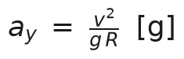
| a_y | lateral (cornering) acceleration, in g |
| v | speed, m/s |
| R | corner radius, m |
| g | gravity, 9.81 m/s² — dividing by it converts to "g" units |
how this works
This whole document rests on two ideas. First: cornering IS acceleration. A car holding a circle of radius R at speed v is always accelerating toward the centre. We measure that acceleration in multiples of gravity ("g").
Algebraic — circular motionA car going round a circle is always accelerating toward the centre. Divide that by g to get it in "g units". Nothing to solve — just plug in the numbers.
Read: Race Car Design (Seward 2014), Ch.1 “Racing car basics”, p.1 · RCVD (Milliken), Ch.16 Ride and Roll Rates
notes
Second: the only thing making that acceleration happen is tyre force. Every choice in this binder comes down to how much tyre force the car can make and keep.
| Quantity | Value |
|---|---|
| Mass | 286.7 kg |
| Front axle load (static) | 131.9 kg = 1294 N (46.0 %) |
| Rear axle load (static) | 154.8 kg = 1519 N (54.0 %) |
| CG height front / rear / total | 257.9 / 280.3 / 270.0 mm above ground |
| Roll centre height front / rear / roll axis at CG | 30.8 / 54.6 / 43.7 mm |
| Wheelbase / track | 1537 / 1270 mm |
| Peak lateral (asphalt, ×0.75) | 1.69 g mech · 1.95 g aero |
| Roll / LLTD @1g | 0.60 °/g · 47.9 % front |
| Wheel rate F/R | 20518 / 26514 N/m |
| ARB rate F/R | 16006 / 8242 N/m |
Geometry.
Two A-arms per corner (a double wishbone), sprung through a pushrod — every number in the binder starts from these points.
- Two A-arms plus a tie rod are five links: they remove five of the upright's six freedoms and leave only up-and-down travel, so the wheel's path is fully fixed
- Pushrod → rocker → spring/damper mounted inboard
- Keeps the spring/damper out of the airflow; the rocker ratio tunes how stiff the wheel feels
- True length of every link below — measured ball-centre to ball-centre, in mm
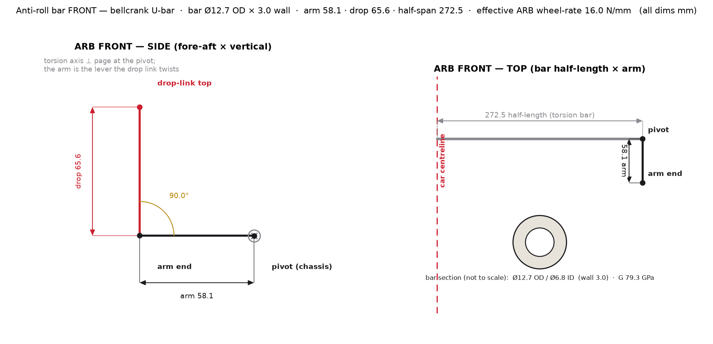
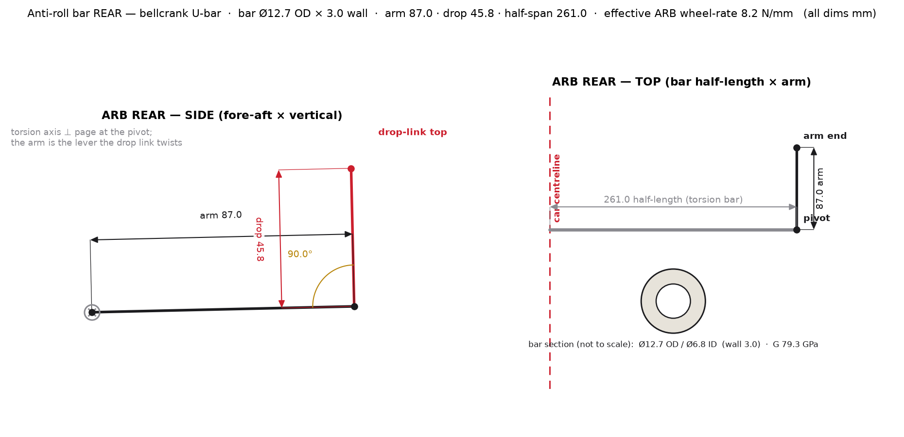
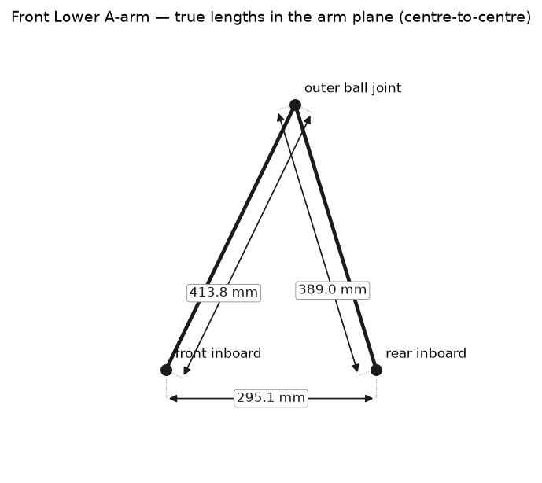
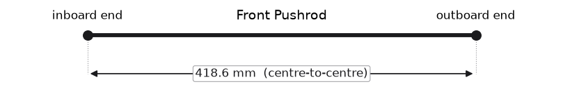
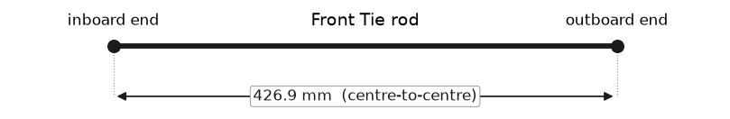
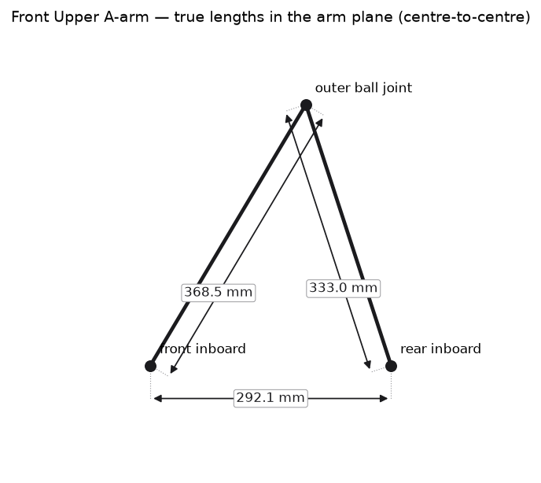
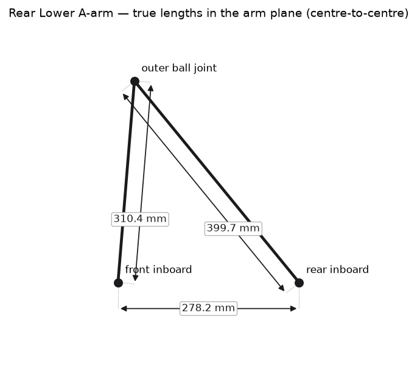
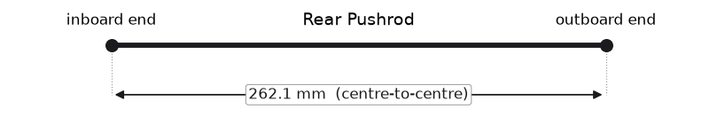
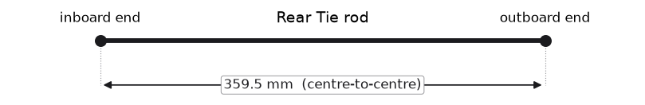
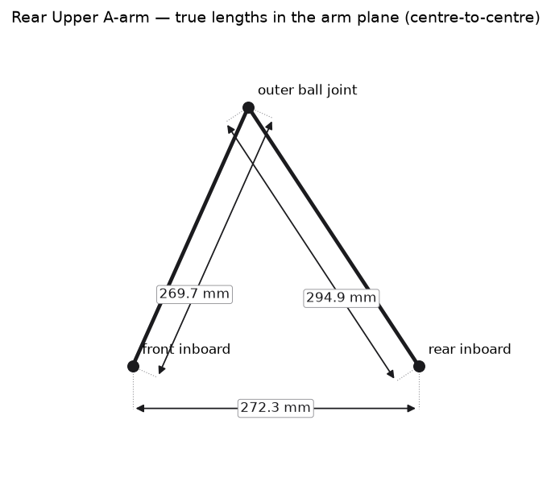
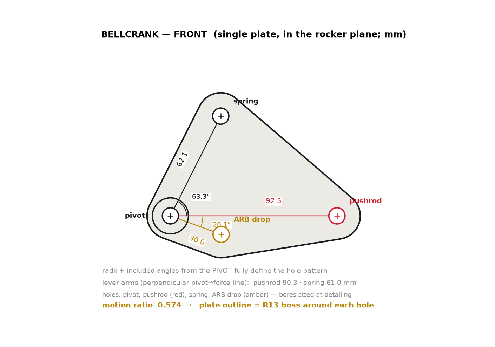
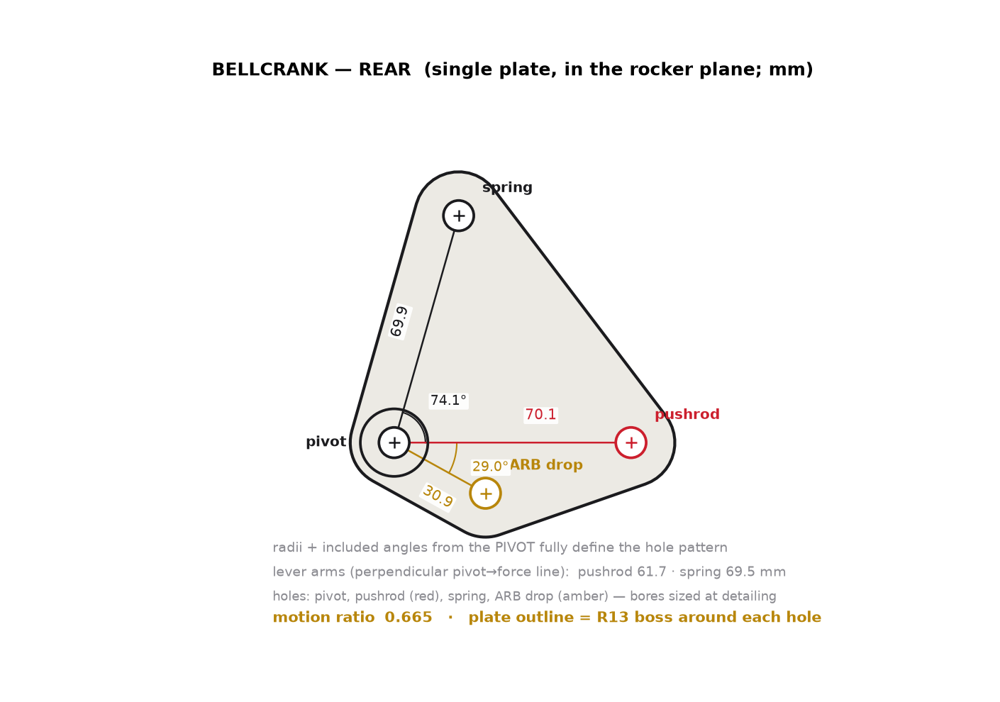
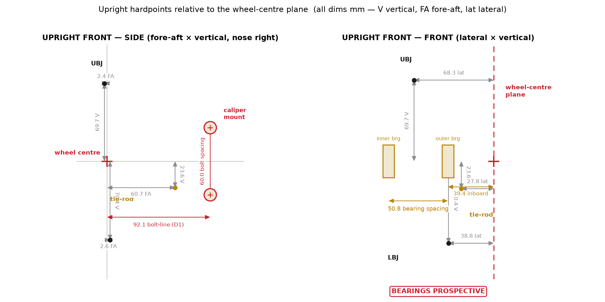
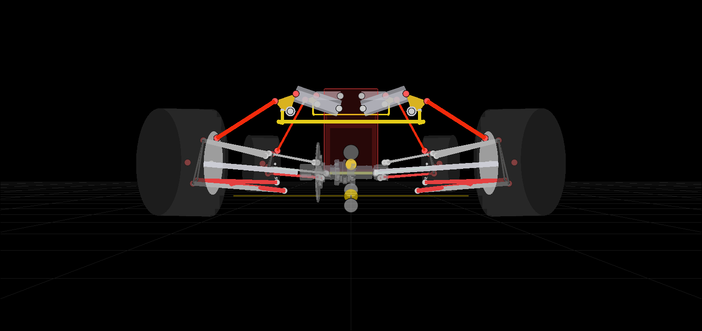
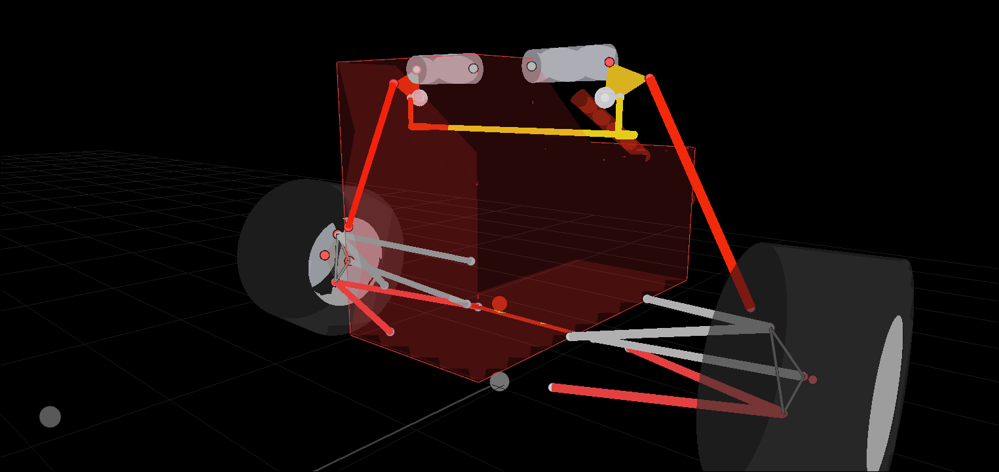
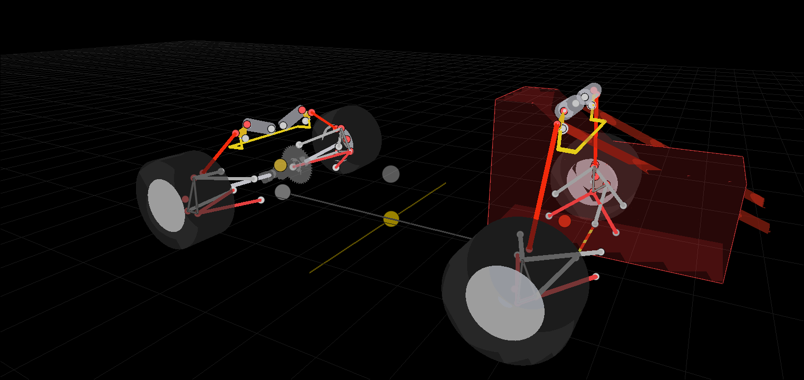
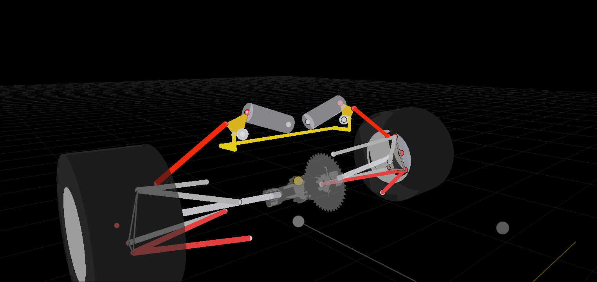
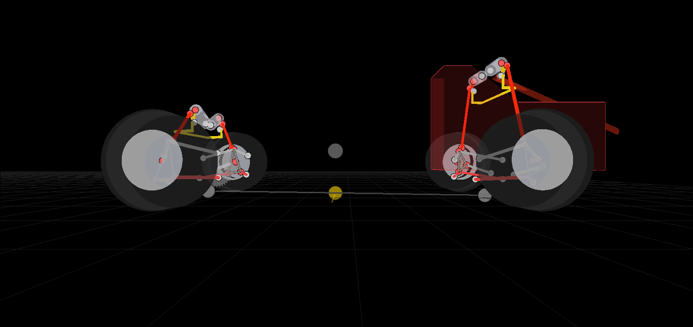
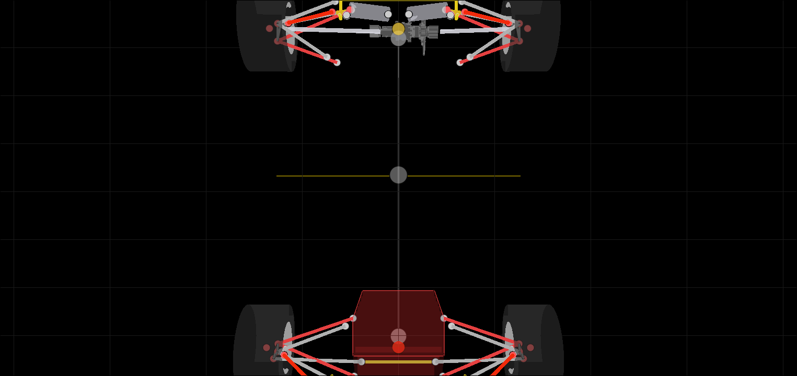
Kinematics.
How each wheel's lean (camber) and steering angles change as it moves up and down over bumps and in roll, with the values for the current design — camber -0.78°, caster 2.05°, roll centres 30.8/54.6 mm.
- Static camber -0.78°/-0.70° front/rear (wheels leaning in at the top); camber changes by -0.043°/mm front and -0.055°/mm rear per mm of bump travel at static (negative = leaning further in); what the loaded outer tyre actually sees in a corner is on the Dynamics chapter camber-vs-g graph
- Caster 2.05° (the steering axis tilted back, seen from the side) with 7.5 mm of trail (how far behind the steering axis the tyre grips the road): the steering self-centres
- Kingpin lean 11.9° (the steering axis tilted inward, seen from the front) with +10.6 mm scrub (the gap at the road between the steering axis and the tyre centre): front-left values at static from the solved model. The packaging check assumes a 241.3 mm (9.5 in) inner rim diameter with 12.7 mm of clearance between each joint body and the rim barrel, and also checks the saved wheel profile (keizer_10x7_6in_bs) with a 3 mm margin. The rim fit is a regression-net gate on the saved design file (Rule 16)
- Roll centres 30.8/54.6 mm above the ground at static (front/rear); between -25 and +25 mm of wheel travel the front moves 46 mm and the rear 43 mm — the lower the roll centre, the longer the lever from the CG, so more of the roll is resisted by the springs and bars
- The total load shift is fixed no matter what; the roll centre only picks the path it takes (instantly through the links, or gradually through the springs)
- Anti-dive 35.0% (that share of the braking load transfer goes through the links, the rest through the springs) · rear anti-squat 28.8% · rear anti-lift under braking 17.5% (static values; graphs below show them through travel)
- Rear anti-squat is +28.8% at static, measured on the line from the WHEEL CENTRE to the side-view instant centre, because the differential is chassis-mounted and drives through half-shafts: the arms feel only the forward push at the wheel bearings, not the drive torque. At that percentage the links carry that share of the launch load transfer directly and the springs take the rest (13.2 mm of body squat at the rear axle at 1.6 g). v140 and earlier sat near zero on this measure; binders before v140 printed about 73% from the contact-patch line, which was wrong for this layout
- Load moved onto the rear tyres = mass x acceleration x CG height / wheelbase = 286.7 kg x 1.6 g x 270 mm / 1537 mm = 791 N (395 N per rear wheel). There is no suspension term in it: anti-squat cannot add or remove tyre load, it only decides whether that load reaches the chassis through the links (tail stays up) or through the springs (tail sinks)
- Percent anti-squat = slope of the side-view line / (CG height / wheelbase) x 100. The rear side-view instant centre is 5429 mm ahead of the rear axle and 477 mm above the ground; the wheel centre is at 203 mm. Line from the WHEEL CENTRE: slope +0.0505 -> +28.8%. Line from the CONTACT PATCH: slope +0.0879 -> 50.1% (what a live axle would read - NOT this car; binders before v140 wrongly printed the contact-patch figure)
- Why the wheel centre: the half-shaft has a joint at each end, so it can turn the hub but cannot push the upright up or down, and the reaction to the drive torque is carried by the differential mounts on the CHASSIS. The only drive load the upright and arms feel is the forward push at the wheel bearings, at wheel-centre height (RCVD figure 17.15b). A live axle or a hub motor makes the axle or upright react the torque as well, which is the same as the force acting at the contact patch (figure 17.15a)
- What it costs: rear squat at 1.6 g = load per wheel x (1 - anti-squat) / rear ride rate (21.4 N/mm) = 13.2 mm as designed, 13.0 mm at 30%, 7.4 mm at 60%. To reach 30% the instant centre must sit 286 mm ABOVE the wheel centre (60%: 572 mm) at the present swing-arm length; as designed it sits 274 mm above it
- Rear anti-lift assumes OUTBOARD rear brakes — OPEN, awaiting confirmation
- How fast the launch load reaches the rear tyres for each anti-squat percentage is in the Road & Ride chapter (launch load lag figure)
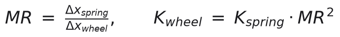
| MR | motion ratio — spring squash per mm of wheel travel (0.7 = spring moves 0.7 mm per wheel mm) |
| K_spring | spring rate, N/m |
| K_wheel | effective rate at the tire contact patch, N/m |
how this works
HOW IT IS SOLVED: the solver keeps every suspension link at its built length (a rigid linkage) and moves the wheel up and down through its travel, solving where every point sits at each step. Every curve in this section is read straight off that solved motion — none of it is a hand formula. Motion ratio is how far the spring squashes for each mm the wheel moves. The spring feels the wheel through this lever, so the stiffness the WHEEL feels scales with the ratio squared (the lever acts on both force and travel):
Measured straight off the solved linkageThe lever ratio between the wheel and the spring. Vahan uses no formula: it solves the linkage at +1 mm and −1 mm of travel and measures how much the spring moved — the true ratio for THIS exact geometry.
Read: Race Car Design (Seward 2014), Ch.4 “Springs, dampers and anti-roll”, p.90
| K_tire | tire vertical stiffness (~110 N/mm for this tire) |
| m_corner | sprung mass carried by that corner, kg |
| f_ride | ride frequency, Hz — how fast the corner bounces |
how this works
The tyre is a spring too, sitting in series with the suspension. The ride rate — what the chassis actually bounces on — is the two combined. Ride frequency then follows from rate and mass:
Springs in series + 2nd-order ODE natural frequencyThe suspension spring and the tyre spring stack in series (same force, their squashes add up). Ride frequency is just the natural bounce rate of that mass on that combined spring: f = √(K/m)/2π. Higher = stiffer, busier ride.
Read: Race Car Design (Seward 2014), Ch.4 “Springs, dampers and anti-roll”, p.90
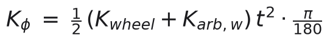
| K_phi | roll stiffness of one axle, N.m per degree of body roll (the t^2/2 term is per radian; the pi/180 converts it to per degree) |
| K_wheel | spring wheel rate, N/m |
| K_arb,w | anti-roll-bar rate expressed at the wheel, N/m |
| t | track width, m — squared because both leverage AND travel grow with track |
how this works
Roll stiffness turns the wheel rates into a resistance to leaning about the roll axis. Track width shows up squared, because both the leverage and the travel grow with track.
Read: Race Car Design (Seward 2014), Ch.4 “Springs, dampers and anti-roll”, p.90
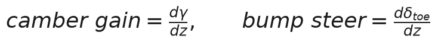
| dgamma/dz | change of camber angle per mm of wheel travel — read off the heave sweep |
| ddelta/dz | change of toe angle per mm of travel; anything but zero steers the car over bumps |
| z | vertical wheel travel, mm |
how this works
Both are just the slopes of the solved sweep curves (measured, not from a formula) — the linkage is solved at 81 travel positions and the slope is read off.
Read: Race Car Design (Seward 2014), Ch.3 “Suspension links”, p.61 · RCVD (Milliken), Ch.17 Suspension Geometry
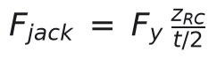
| F_jack | jacking force — the upward push the cornering force feeds through the links, N |
| F_y | lateral tire force, N |
| z_RC | roll-centre height, m — sets the link (jacking) vs spring share of load transfer |
how this works
The part of the cornering force that goes through the links (not the springs) pushes the body up — that is jacking, and it grows with roll-centre height. This design has its roll centres at 30.8 mm front / 54.6 mm rear above the ground at static; the lower they sit, the longer the lever from the CG and the less of the cornering force reaches the body through the links.
Read: Race Car Design (Seward 2014), Ch.3 “Suspension links”, p.61
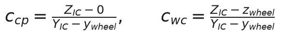
| c_cp | slope of the line from the CONTACT PATCH to the side-view instant centre — the line a braking force at the patch follows (outboard brakes) |
| c_wc | slope of the line from the WHEEL CENTRE — the line a drive force follows when the torque comes through a half-shaft from a chassis-mounted differential |
| Y_IC, Z_IC | side-view instant centre, longitudinal and vertical, m |
| y_wheel, z_wheel | wheel centre position, m; the coefficient is undefined when the instant centre sits above the wheel (|Y_IC - y_wheel| < 1 mm) |
how this works
The roll centre is found by geometry. Extend each control arm to its instant centre (the point the wheel is momentarily pivoting about), draw a line from there to the contact patch on each side, and where the two lines cross is the roll centre. Its height decides how much cornering force takes the instant path (through the links) versus the slow path (through the springs) — see the load-transfer section. ANTI-DIVE, ANTI-SQUAT, ANTI-LIFT come from the side-view instant centre of each corner. The solver finds it from the two wishbones: for each arm, the foot of the perpendicular from the ball joint to the pivot axis gives the direction the ball joint is moving; the side-view line through the ball joint perpendicular to that motion is the arm line, and the two arm lines meet at the side-view instant centre (Y_IC, Z_IC). Its slope seen from the tyre is the geometric coefficient:
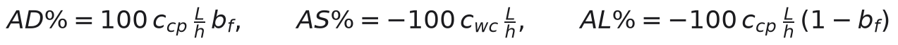
| AD% | front anti-dive under braking: the share of the front braking load transfer that goes through the links instead of the springs |
| AS% | rear anti-squat under drive (chassis-mounted differential, so the wheel-centre line) |
| AL% | rear anti-lift under braking (outboard rear brakes, so the contact-patch line) |
| L | wheelbase, m |
| h | CG height of the whole car, m |
| b_f | front brake bias, fraction of the total braking force |
how this works
The percentage is that slope against the slope a 100 % anti would need, which is the CG height over the wheelbase scaled by the share of the longitudinal force this axle carries. The code uses the whole-car CG height and the brake bias from the brake chapter; drive is all rear:
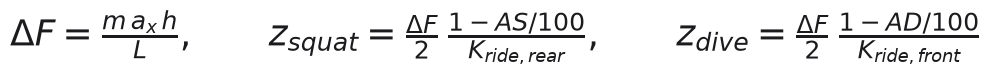
| Delta F | longitudinal load transfer, N (whole car, CG height h) |
| a_x | longitudinal acceleration, m/s^2 |
| z_squat, z_dive | rear squat under drive / front dive under braking, m, per wheel |
| K_ride | ride rate of that axle, N/m |
how this works
What the percentage is worth in travel: the longitudinal load transfer is split per wheel and only the part NOT carried by the links reaches the spring. The dynamics applies this at static (the antis are evaluated once at the design position) through the heave curve:
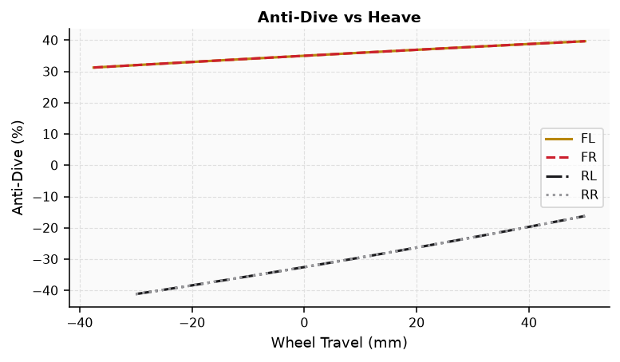
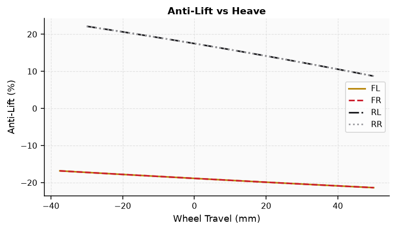
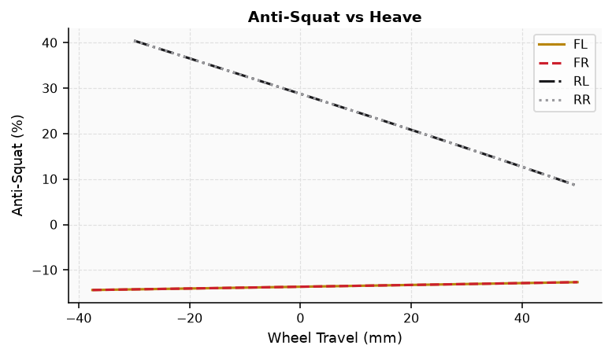
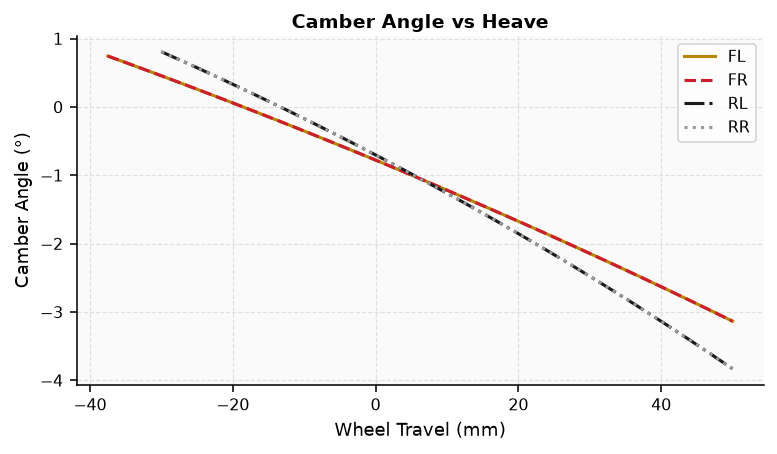
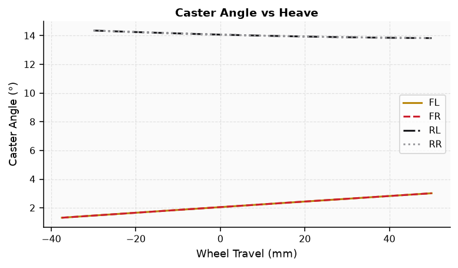
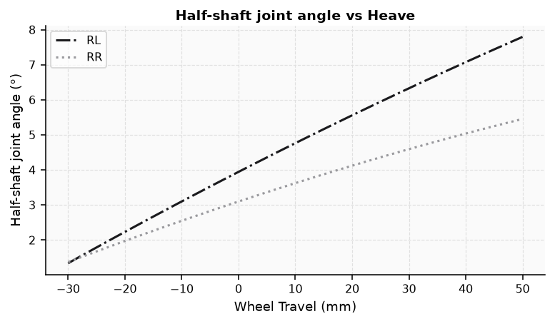
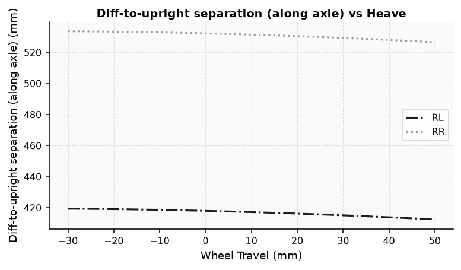
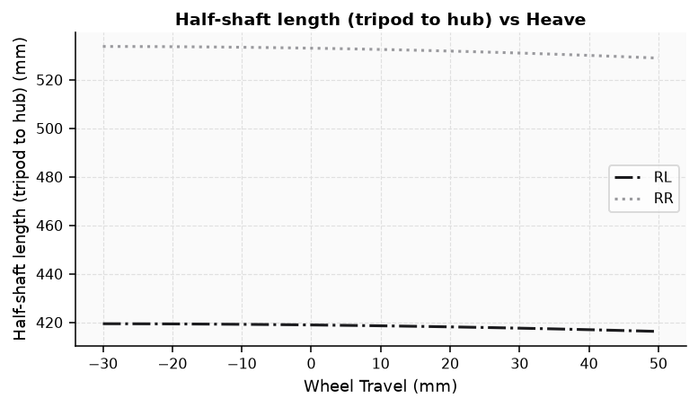
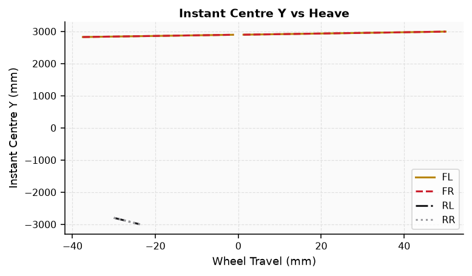
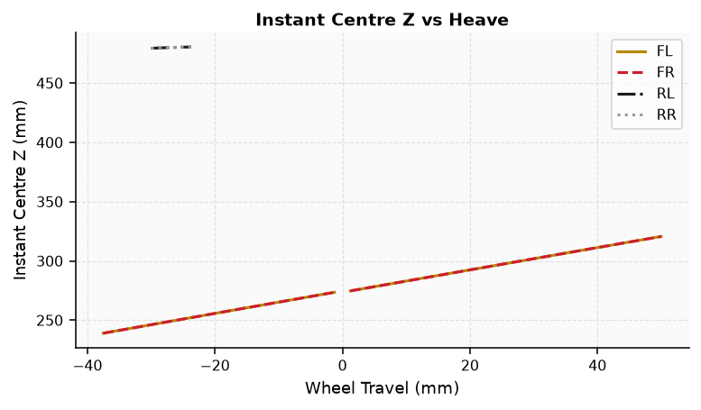
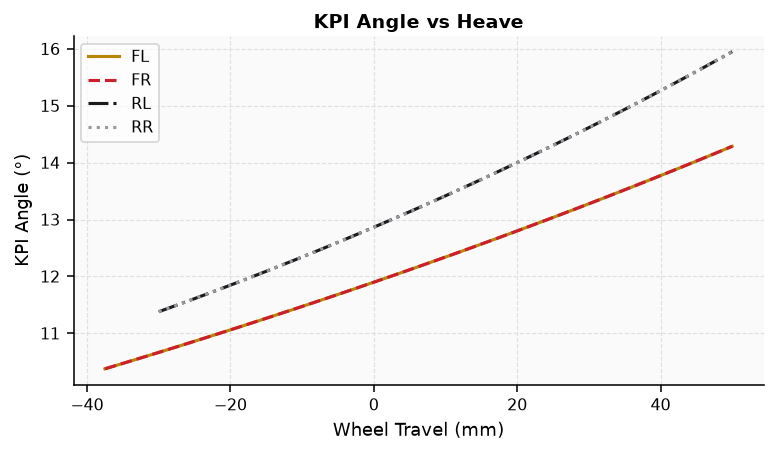
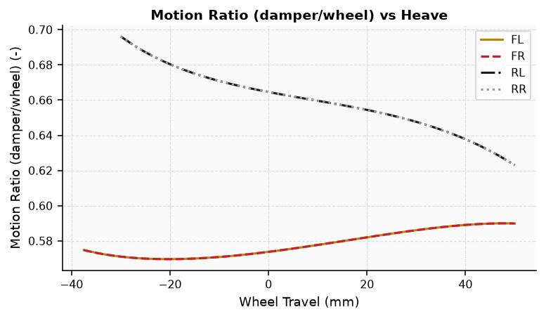
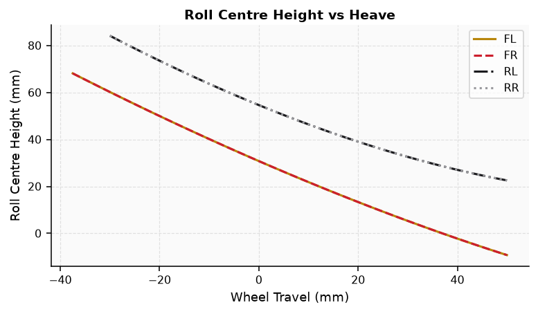
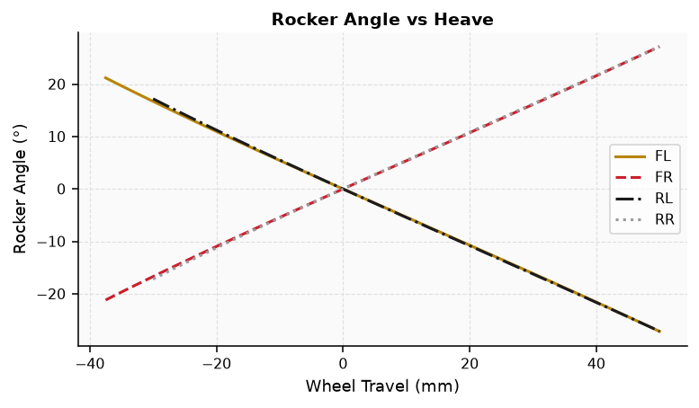
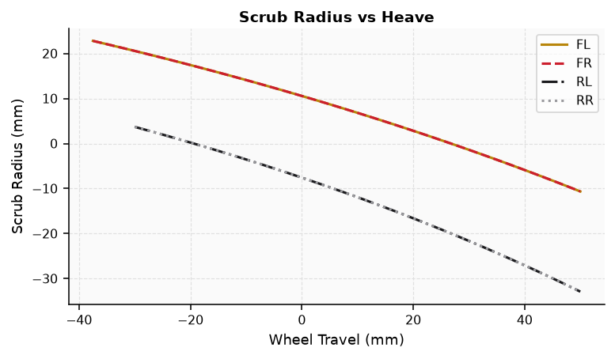
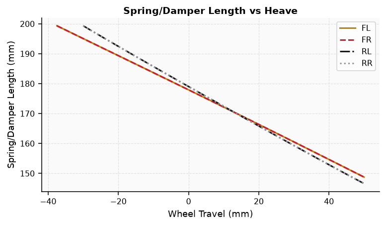
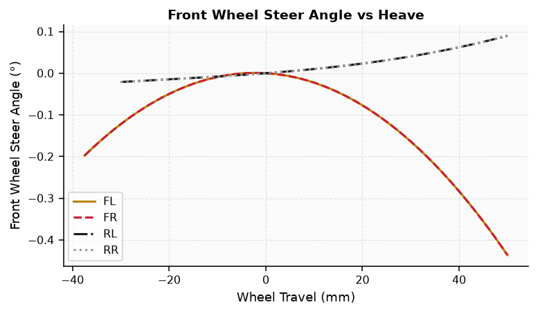
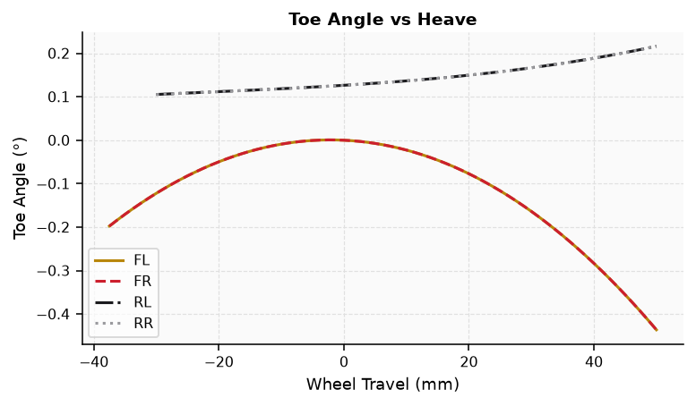
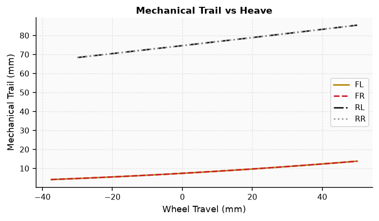
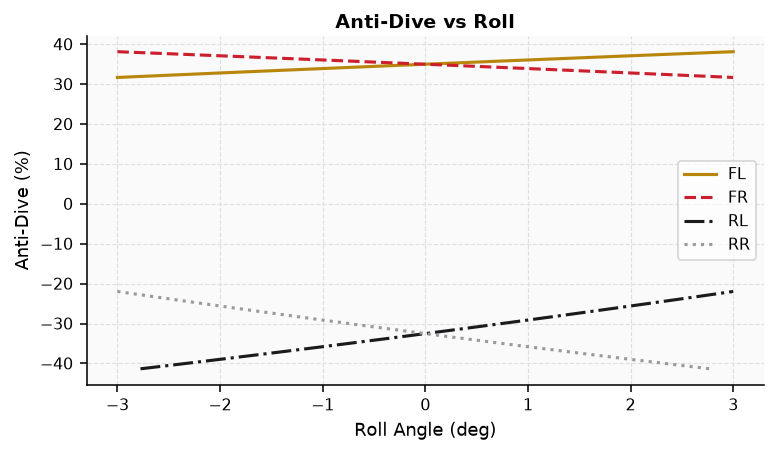
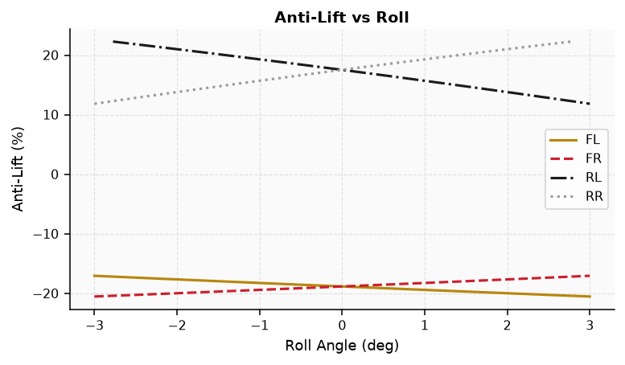
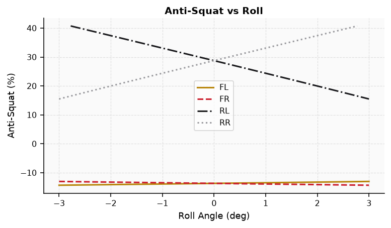
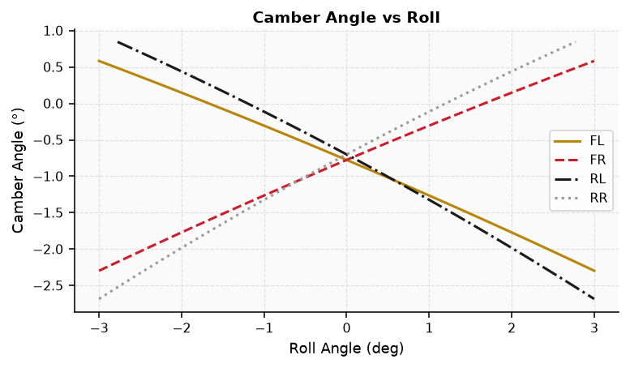
Steering.
Peak steering effort 18.9 N·m at the wheel (at 1.75 g of lateral acceleration, measured tyre without the asphalt derate); at the 1.69 g asphalt axle limit it is 18.6 N·m. The rack travel fits.
- Rack force is the solid number (it does not depend on the pinion): 1352 N at most (at 1.75 g of lateral acceleration) and 717 N on lap average
- Effort at your hands = rack force × pinion travel ÷ 2π: 18.9 N·m at most, 10.0 N·m lap-average, with 87.9 mm of rack travel per steering-wheel turn (the value saved in the design file), steering ratio 4.45:1, 217° of steering-wheel travel lock to lock for the tightest corner
- The alternatives table below gives the effort for other rack-travel-per-turn values; hand torque is proportional to it
- Steering effort peaks and then eases: as the tyre nears its limit the self-aligning lever (pneumatic trail) collapses and the wheel goes light. In this model the rack-force curve (measured tyre, no asphalt derate) peaks at 1.75 g of lateral acceleration, before the 2.05 g at which the first tyre reaches its raw-belt limit; on the asphalt basis, the car reaches its 1.69 g axle limit before that peak, so the largest rack force it can make there is about 1332 N, or 18.6 N·m at the steering wheel
- Steering arm (the lever from the kingpin axis out to the tie-rod mount) is 62.9 mm; tie-rod force 1133 N at most, with a 6.7× safety factor against buckling (an ASSUMED 12 × 1.5 mm steel tube with pinned ends, not a confirmed part)
- Rack travel check: it uses 26.5 of the 31.7 mm available per side — fits, with 5.2 mm to spare; that travel caps the arm length at 74 mm
- The tyre's self-aligning torque is NOT what you feel at the wheel — the steering ratio divides it by about 4 (the 53 N·m at the contact patch becomes ~12 N·m at your hands)
hardware The MODEL places the inner tie-rod pickups 365.8 mm apart. The rack is a Narrco V2 3.5:1: 365.8 mm (14.4 in) eye-to-eye, 87.88 mm (3.46 in) of rack travel per turn, 63.5 mm total travel at its 130° per side maximum (Narrco manual: 31.75 mm per side). It is supplied at that stop, which is 63.5 mm (31.7 mm each way) — the travel this build uses, and the wheels reach full lock there. The Narrco manual drawing gives the pinion block 38.4 x 50.7 mm and the clamp pads 223.6 mm apart; scaled from that drawing the housing is about 240 mm long with about 29 mm end pads and a 16 mm bar. Manual limits: 1,780 N recommended rack load (6,670 N rated), 934 N sideways per side, tie rod within 10 degrees of the rack axis (0 +/- 5 recommended). The number the geometry pins down is the RACK FORCE; the pinion just splits the driver's effort between how hard they push and how far they turn.
the steering arm The lever the tie rod pulls on is the STEERING ARM — the upright's lever about the kingpin axis, measured from the solved linkage as rack travel per radian of road-wheel (NOT the tie-rod length) — and it is 62.3 mm. Each wheel's self-aligning moment (measured tyre aligning torque + side force × the 7.5 mm mechanical trail, per-wheel loads from the solved model) is carried through that arm onto the rack.
| Lateral acceleration (g) | Rack force (N) |
|---|---|
| 0.25 | 222 |
| 0.50 | 415 |
| 0.75 | 631 |
| 1.00 | 870 |
| 1.25 | 1072 |
| 1.50 | 1272 |
| 1.75 | 1352 |
| 2.00 | 1240 |
| 2.20 | 807 |
| 2.30 | 803 |
| Combined 1.2 g + 1.0 g braking | 1010 |
result Maximum rack force 1352 N — at 1.75 g of lateral acceleration (measured tyre, no asphalt derate), before the 2.05 g raw-belt limit of the first tyre: past the aligning-torque peak the pneumatic trail collapses as the tyre saturates, so the wheel goes light right at the limit (on the asphalt basis, the car reaches its 1.69 g axle limit before that peak, so the largest rack force it can make there is about 1332 N, or 18.6 N·m at the steering wheel). Lap average 717 N (time-weighted over the simulated autocross lap). The tightest corner needs 24.4° at the road wheel = 26.5 mm of stroke per side — WITHIN the 31.7 mm available (margin 5.2 mm); the stroke caps the arm at 74.5 mm.
at the rim On the team's 215.9 mm (8.5 in) steering wheel the peak hand torque of 18.9 N·m is 175 N at the rim (torque ÷ wheel radius, both hands together), lap average 93 N; the hand wheel turns 130° each way to the steering stop.
the machined arm The PHYSICAL steering arm — the straight-line distance from the kingpin axis to the outboard tie-rod mount, the lever that is actually made of metal — is 62.9 mm. The tie rod pulls on it at a slight angle, so the working torque arm is 60.5 mm. That puts 1133 N through the loaded tie rod at 1.75 g of lateral acceleration (lap average ~600 N) — an ASSUMED 12 × 1.5 mm steel tie rod (the dump script's assumption, not a confirmed part) buckles at 7536 N, a safety factor of 6.7, so the arm and rod are comfortable at this length.
not the same number The per-tyre SELF-ALIGNING torque shown in the loads viewer (up to 53 N·m on the loaded front) is the moment at ONE contact patch about its vertical axis — the driver never feels it raw. At the kingpin it picks up the side-force-times-mechanical-trail term, both fronts add, and then the steering linkage divides the total by the ratio: the solved peak hand torque is 18.9 N·m at 4.45:1, i.e. about 84 N·m at the two kingpins together. The patch moment and the hand torque differ by the steering ratio — comparing them directly overstates driver effort by about 4×.
pinned With the saved rack travel per turn (87.9 mm/rev): steering ratio 4.45:1, maximum hand torque 18.9 N·m (at 1.75 g of lateral acceleration), lap-average 10.0 N·m, lock to lock needed for the tightest corner 217° (no need to shuffle hands). Hand torque = rack force × pinion travel ÷ 2π; torque × lock-to-lock is fixed by the work done at the kingpin, so a different pinion just re-splits the effort — alternative rows below if the rack travel per turn differs:
| Pinion (mm/rev) | Steering ratio (:1) | Max torque (N·m) | Lap-avg torque (N·m) | Lock-to-lock (°) |
|---|---|---|---|---|
| 60 | 6.52 | 12.91 | 6.84 | 318 |
| 80 | 4.89 | 17.22 | 9.12 | 238 |
| 91 | 4.29 | 19.65 | 10.41 | 209 |
| 103 | 3.81 | 22.11 | 11.72 | 186 |
| 114 | 3.43 | 24.56 | 13.01 | 167 |
| 126 | 3.11 | 27.06 | 14.34 | 152 |
how Steering a wheel with caster lifts one side of the car and drops the other, which moves load diagonally: the inside front and outside rear gain, the outside front and inside rear lose. The front was re-solved at every caster from 1° to 8° in corners of 15, 8 and 4.5 m and at full lock, two ways: (1) tilting the kingpin about the wheel centre, so trail grows with caster (the cheap way, same upright); (2) holding trail at 7.5 mm, which moves the ball joints back and needs a new upright, with the steering arm re-fitted to keep Ackermann and lock. The steady-state solver and the lap simulator do not include this steer load, so it was computed separately on the same model (2027_v201.4_(front_actuation_0mm_one_plane_UCA_plan_straight).vahan, identical front geometry to this car) and laid over the laps.
(1) kingpin tilted, trail grows (bold = this car)
| Caster (°) | Trail (mm) | Hand torque at 2 g (N·m) | Push at the rim (N) | Inside front gains, 4.5 m (N) | Inside front gains, full lock (N) | Outside front camber gained, 4.5 m (°) | Grip limit, 4.5 m (g) |
|---|---|---|---|---|---|---|---|
| 1.00 | 3.6 | 17.1 | 159 | +3.7 | +6.2 | -0.21 | 1.687 |
| 2.05 | 7.3 | 19.4 | 180 | +7.4 | +11.8 | +0.10 | 1.687 |
| 3.00 | 10.7 | 21.6 | 200 | +10.8 | +16.8 | +0.39 | 1.686 |
| 4.00 | 14.3 | 23.8 | 221 | +14.4 | +22.1 | +0.68 | 1.685 |
| 5.00 | 17.9 | 26.1 | 242 | +17.9 | +27.5 | +0.98 | 1.684 |
| 6.00 | 21.5 | 28.4 | 264 | +21.5 | +32.9 | +1.28 | 1.683 |
| 7.00 | 25.1 | 30.8 | 286 | +25.0 | +38.3 | +1.57 | 1.682 |
| 8.00 | 28.7 | 33.2 | 308 | +28.6 | +43.7 | +1.87 | 1.681 |
(2) trail held, new upright
| Caster (°) | Upper / lower ball joint moved back (mm) | Hand torque at 2 g (N·m) | Hand torque in a 4.5 m corner (N·m) | Inside front gains, 4.5 m (N) | Outside front camber gained, 4.5 m (°) | Ackermann (%) | Lock in / out (°) |
|---|---|---|---|---|---|---|---|
| 2.05 | -0.0 / -0.0 | 19.6 | 13.6 | +7.6 | +0.10 | 32.0 | 32.6 / 28.7 |
| 3.00 | +4.5 / +2.2 | 19.6 | 12.3 | +8.1 | +0.40 | 32.0 | 32.6 / 28.7 |
| 4.00 | +9.3 / +4.5 | 19.6 | 11.0 | +8.7 | +0.71 | 32.0 | 32.6 / 28.7 |
| 5.00 | +14.1 / +6.9 | 19.6 | 9.8 | +9.2 | +1.02 | 32.0 | 32.6 / 28.7 |
| 6.00 | +18.9 / +9.3 | 19.6 | 9.6 | +9.8 | +1.33 | 32.0 | 32.6 / 28.7 |
what it means The inside-front "preload" is real but small: +7 N at this car's caster in a 4.5 m corner, +29 N at 8° (+44 N at full lock). It does not turn into grip, because the same steer also loads the outside rear and unloads the inside rear, and this car's cornering limit is set by the rear tyres: the limit falls slightly with every degree (to 1.681 g at 8° in a 4.5 m corner, from 1.689 g without the steer effect). Unloading the inside rear also leans toward throttle-on oversteer. Tilting the kingpin costs about 2.3 N·m at the wheel for each degree at 2 g (33.2 N·m at 8°, against 26.6 N·m on the 2026 car). Holding trail keeps the 2 g torque flat and gives more hairpin camber, but needs a new upright with the ball joints moved back. On the laps it does not matter: the 2026 autocross never uses more than 8° of road-wheel steer, the 2025 autocross spends 2.1 % of the lap above 15°, and the laid-over limit change is worth about 5.5 ms at 8° on AX25 (lap sim with the geometry only: 37.534 s at this caster, 37.540 s at 8° on AX26). Decision: keep 2.05°.
Springs & Bars.
The v204 config runs 350/350 lb/in springs (2.76 / 2.83 Hz ride). The loads, dynamics and lap numbers in this binder use those rates; the per-spring tables, the owned-spring study and the wheel-hop table are stated per spring rate. OPEN: the owned-spring study below picks 200/225 lb/in and the Road & Ride solve picks 166/160 lbf/in; neither matches the config and the three are not reconciled.
- CONFIG vs STUDY — OPEN: the config carries 350 lb/in front / 350 lb/in rear (ride 2.76 / 2.83 Hz, front softer and slower than the rear — the flat-ride order). Roll gradient, load-transfer split, grip, loads and lap times everywhere else in this binder use those rates
- The spring-selection study in this chapter was written around the springs the team already owns and is kept as the record of that argument; its pick is NOT what the v204 config runs. On the same bars the pairs table gives 0.595 deg/g of body roll and 2.76 / 2.83 Hz ride on the config springs, against 0.804 deg/g and 2.17 / 2.34 Hz on the study pair. Which springs the car is built with is a team decision that this binder does not make
- Owned-spring study pick: 200 lb/in front, 225 lb/in rear — both ALREADY OWNED. Ride frequencies 2.17 / 2.34 Hz, rear/front ratio 1.078
- One check first: the owned springs must have at least 55 mm of usable travel (free length minus solid height), or they jam solid (coil-bind) before the damper reaches the end of its stroke
- The springs carry 66% of the roll stiffness at the wheel; the anti-roll bars add the other 34% (16.0 kN/m front, 8.2 kN/m rear at the wheel). The springs set the ride frequency; the bars add roll stiffness and move the front/rear split without changing it
- Stiffer springs shrink the dip that fully lifts a FRONT tyre off the road (a static-load measure): from 62 mm to 34 mm as you go 200→400 lb/in. The road-model study in the Road & Ride chapter finds the worst-corner tyre-load variation changes by only 0.025 across its whole swept grid, so how much grip this costs is not established here
- Anti-roll bars: BOTH on the team-mandated 12.7×6.78635 mm 4130 tube (rear 12.70×6.79 mm) with rigid ROUND arms of the same tube — no flat blade. What governs is the ARM bending at its root, not the bar shear: for a round arm of the same section the bending stress is exactly twice the bar shear
- Front: peak drop-link load 843 N (Max cornering 2.0 g) on a 58.1 mm arm = 49 N·m of bar torque: 133 MPa bar shear, 265 MPa ARM BENDING. Arm-bending safety factor 2.64 quench-and-tempered (700 MPa yield ASSUMED) against 1.73 as-welded normalised (460 MPa ASSUMED)
- Rear: 420 N on a 87.0 mm arm = 37 N·m: 99 MPa bar shear, 198 MPa arm bending; safety factor 3.54 quench-and-tempered / 2.32 normalised
- BUILD REQUIREMENT: quench-and-temper the bar-and-arm, and do NOT put a weld at the arm root (a weld there falls back to the normalised / heat-affected strength). OPEN: the 4130 heat treatment and its fatigue life are not certified; the config stores geometry only, so this must be a drawing note
- The tables in this chapter are rebuilt from the solved model each time the binder is built; the explanatory sentences and the handbook material strengths are typed text, and the owned-spring list and the bar yield strengths are inputs, not model output
| MR | motion ratio from the solved spring length, central difference over +-1 mm of wheel travel |
| K_spring | coil rate, N/m |
| F_spring | spring force at static, N (the supported corner weight over the motion ratio) |
| dMR/dz | slope of the motion ratio with travel, per m, from MR(+10 mm) - MR(-10 mm) |
how this works
HOW IT IS SOLVED: the wheel rate is not the spring rate over a lever ratio read off a drawing. The motion ratio is measured on the solved linkage (spring length over +-1 mm of wheel travel) at every station, and the wheel rate carries the geometric-stiffness term from the motion ratio changing with travel:

| K_tyre | tyre vertical rate, N/m (fitted from the tyre test loaded-radius channel) |
| m_corner | sprung mass on that corner, kg: half the axle sprung mass, the axle split from the CG position |
| f_ride | ride frequency, Hz |
| the third form | the inverse used when a target ride rate is turned back into a spring: it has no answer if the ride rate asked for exceeds the tyre rate |
how this works
The tyre is a spring in series with that; the chassis bounces on the combination, and the ride frequency follows from the sprung mass that corner carries:
Springs in series + 2nd-order ODE natural frequencyThe suspension spring and the tyre spring stack in series (same force, their squashes add up). Ride frequency is just the natural bounce rate of that mass on that combined spring: f = √(K/m)/2π. Higher = stiffer, busier ride.
Read: Race Car Design (Seward 2014), Ch.4 “Springs, dampers and anti-roll”, p.90
| K_phi | roll stiffness of one axle, N.m per radian |
| t | track, m |
| K_bar,w | anti-roll-bar rate at the wheel, N/m |
| phi | body roll angle, rad |
| m_s | sprung mass, kg |
| h_arm | sprung CG height above the roll axis at the CG station, m |
| m_s g h_arm | the gravity term: the leaning body adds to its own roll moment |
how this works
Roll stiffness per axle from the springs and the bar, which is what the roll angle and the elastic load transfer in the dynamics chapter use:

| q | [z_body, theta_pitch, phi_roll, z_FL, z_FR, z_RL, z_RR] |
| M | sprung mass, pitch and roll inertia, half-axle unsprung masses |
| E | maps body motion to suspension compression at each corner (bump = wheel - body corner) |
| K_s | wheel rates with the bar coupling +-k_bar/2 between the two wheels of an axle |
| k_t | tyre rate, N/m |
| C | the four wheel-frame damping coefficients mapped the same way as K_s |
how this works
ROAD & RIDE uses a seven-degree-of-freedom linear model: body heave, pitch and roll plus the four wheel heights, with the same wheel rates as above, the bars, wheel-frame dampers and the tyre as a spring to the road:

| H | response of every coordinate per unit road height, complex |
| omega | 2 pi f, rad/s |
| Delta F_z | dynamic tyre load, + = compression |
how this works
Solved in the frequency domain, one complex linear solve per frequency; the tyre load deviation is the tyre spring times how much the wheel fails to follow the road:

| n | spatial frequency, cycles per metre; the band 0.011 to 2.83 cycles/m is used |
| G_0 | roughness at 0.1 cycles/m: 16e-6 m^3 class A, 64e-6 m^3 class B |
| V | speed, m/s |
| sigma_F | RMS tyre load deviation, N |
| DLC | dynamic load coefficient: RMS deviation over the static load; lower = the tyre stays nearer its steady load |
how this works
The road is a roughness spectrum (ISO 8608, class-centre scenario, not a measured track), turned into a time spectrum by the speed; the output spectrum and its RMS give the dynamic load coefficient:
| z_f, z_r | body height at the front and rear axle stations |
| x_f, x_r | axle positions from the sprung CG, m |
| theta | pitch angle |
how this works
Flat ride is judged on a bump: the pitch motion after the rear wheels have cleared it against the bounce, and the settle time is when the body motion last exceeds five percent of its own peak:
what decides the spring rate The springs carry 66% of the roll stiffness here; the anti-roll bars add the other 34% (16.0 kN/m front, 8.2 kN/m rear at the wheel). Across the pairs in the table below (145/170 to 450/500 lb/in) the spring rate moves body roll from 0.94 to 0.48 deg/g and the front share of roll stiffness from 48.8% to 55.7% — spring rate IS a balance lever on this car. The springs also own the ride: how the car heaves, pitches, and keeps a tyre planted on rough asphalt. This study ranks them on ride frequency, tyre contact and those roll numbers.
how to read the last two columns A 20 mm bump is just an ordinary piece of rough asphalt. The “20 mm swing” is how much of the tyre’s resting load that bump throws away and back — bigger is worse, because a tyre that goes light loses more grip than the loaded one gains. The “unload dip” is how deep a dip has to be before the tyre lifts off the road completely. The resting load on one corner is 647 N front and 759 N rear. The ride frequency in the per-spring tables uses wheel rate = spring rate × motion ratio squared; the pairs table uses the solved model's wheel rate, which adds a motion-ratio-slope term, so one spring can read slightly differently in the two (the config front spring: 2.74 Hz in the per-spring table, 2.76 Hz in the pairs table).
| Spring (lb/in) | Wheel rate (lb/in) | Ride freq (Hz) | Static spring (mm) | Bump left at wheel (mm) | 20 mm swing (% static) | Unload dip (mm) |
|---|---|---|---|---|---|---|
| 145 · OWNED | 47.7 | 1.85 | 38.7 | 32.0 | 24% | 83.2 |
| 170 · OWNED | 56.0 | 1.99 | 33.0 | 41.9 | 28% | 71.9 |
| 200 · OWNED | 65.9 | 2.15 | 28.0 | 50.5 | 32% | 62.0 |
| 225 · OWNED | 74.1 | 2.26 | 24.9 | 55.9 | 36% | 55.7 |
| 300 | 98.8 | 2.57 | 18.7 | 66.8 | 46% | 43.3 |
| 350 | 115.2 | 2.74 | 16.0 | 71.4 | 53% | 37.9 |
| 400 | 131.7 | 2.90 | 14.0 | 74.9 | 59% | 33.9 |
| 450 | 148.2 | 3.04 | 12.5 | 77.6 | 65% | 30.8 |
| 500 | 164.6 | 3.17 | 11.2 | 79.8 | 71% | 28.3 |
| 550 | 181.1 | 3.30 | 10.2 | 81.6 | 76% | 26.3 |
| 600 | 197.6 | 3.41 | 9.3 | 83.1 | 81% | 24.6 |
| 650 | 214.0 | 3.51 | 8.6 | 84.3 | 86% | 23.1 |
| Spring (lb/in) | Wheel rate (lb/in) | Ride freq (Hz) | Static spring (mm) | Bump left at wheel (mm) | 20 mm swing (% static) | Unload dip (mm) |
|---|---|---|---|---|---|---|
| 145 · OWNED | 64.0 | 1.96 | 39.2 | 26.8 | 27% | 74.6 |
| 170 · OWNED | 75.1 | 2.10 | 33.4 | 35.5 | 31% | 64.7 |
| 200 · OWNED | 88.3 | 2.26 | 28.4 | 43.0 | 36% | 56.0 |
| 225 · OWNED | 99.4 | 2.38 | 25.3 | 47.8 | 40% | 50.5 |
| 300 | 132.5 | 2.68 | 18.9 | 57.3 | 50% | 39.6 |
| 350 | 154.6 | 2.86 | 16.2 | 61.3 | 57% | 35.0 |
| 400 | 176.7 | 3.01 | 14.2 | 64.4 | 64% | 31.5 |
| 450 | 198.8 | 3.15 | 12.6 | 66.8 | 70% | 28.7 |
| 500 | 220.8 | 3.28 | 11.4 | 68.7 | 75% | 26.5 |
| 550 | 242.9 | 3.39 | 10.3 | 70.2 | 81% | 24.8 |
| 600 | 265.0 | 3.50 | 9.5 | 71.5 | 86% | 23.3 |
| 650 | 287.1 | 3.60 | 8.7 | 72.6 | 91% | 22.0 |
| Front / Rear (lb/in) | Front (Hz) | Rear (Hz) | Rear/front ratio | Roll-stiffness split (% front) | Roll (°/g) | Status |
|---|---|---|---|---|---|---|
| 200 / 225 | 2.17 | 2.34 | 1.078 | 53.71 | 0.804 | RECOMMENDED |
| 170 / 225 | 2.02 | 2.34 | 1.158 | 52.11 | 0.831 | owned |
| 225 / 225 | 2.29 | 2.34 | 1.024 | 54.96 | 0.782 | owned |
| 200 / 200 | 2.17 | 2.22 | 1.022 | 55.69 | 0.834 | owned |
| 170 / 200 | 2.02 | 2.22 | 1.098 | 54.11 | 0.864 | owned |
| 145 / 170 | 1.89 | 2.06 | 1.093 | 55.32 | 0.936 | owned |
| 350 / 350 | 2.76 | 2.83 | 1.026 | 52.32 | 0.595 | CURRENT CONFIG (NOT an owned pair) |
| 300 / 350 | 2.59 | 2.83 | 1.094 | 50.26 | 0.621 | buy |
| 350 / 400 | 2.76 | 2.99 | 1.083 | 49.68 | 0.565 | buy |
| 400 / 450 | 2.92 | 3.13 | 1.074 | 49.20 | 0.518 | buy |
| 450 / 500 | 3.06 | 3.26 | 1.066 | 48.78 | 0.478 | buy |
The owned-spring study's case against buying stiffer springs (the config runs 350/350 lb/in, which is not an owned pair)
1 · the owned springs and the roll gradient The bars are a fixed 12.7×6.78635 tube. On the same bars the recommended owned 200/225 lb/in pair gives 0.804 deg/g of body roll and 53.7% front share of roll stiffness, against 0.595 deg/g and 52.3% on the config springs (pairs table): +35% body roll. This binder does not set a roll-gradient requirement, so it does not say which is acceptable.
2 · aero and the ride-height budget The 1,000 N at 72.4 km/h package (an ASSUMED reference — the user's working assumption, not a confirmed design) is 36% of the car's weight, and less at lower speeds because downforce grows with speed squared. Full downforce moves ride height 13.3 mm front / 12.6 mm rear on the config springs, against an ASSUMED heave budget of 5 mm; that budget would want 46 / 54 kN/m ride rate front / rear against 17 / 21 kN/m on the config springs (Aero chapter). Whether the budget is a requirement is not decided here.
3 · the contact-patch numbers Going 200 → 300 lb/in at the front shrinks the dip that fully lifts a tyre off the road from 62.0 mm to 43.3 mm, and 225 → 350 at the rear shrinks it from 50.5 mm to 35.0 mm. The same table gives the share of the tyre's resting load that an ordinary 20 mm bump swings: it grows with every step up in rate, and a tyre that goes light loses more grip than the loaded one gains. These are static-load measures; the road-model study in the Road & Ride chapter finds the worst-corner tyre-load variation changes by only 0.025 across its whole swept grid, so the size of the grip cost is not established by this binder.
4 · the stopwatch does not care In the earlier (v83-era) run of this study the lap sim varied by under 0.1 s across every candidate from 145/170 to 450/500 — inside the noise; that sweep has NOT been re-run on v204. (That sim is quasi-static, so it shows there is no steady-state grip penalty; it does not model the bump behaviour above, which is where the real difference lives.)
5 · damper clicks for a new spring are not worked out here The road chapter uses the Ohlins dyno curves at the project clicks (Ohlins TTX25 MkII C12/R12 LSC 6 / HSC 2 LSR 6 / HSR 2 (dyno file, at the solved motion ratio)), but whether moving between the config rate and an owned or bought rate needs a rebound change is not established here.
the one thing that would change this the owned springs must measure at least 55 mm of usable travel (free length minus solid height) or they coil-bind before the damper bottoms, which forces the purchase. Springs in this rate class often ship as 45 or 57 mm units on a 55 mm-stroke shock, so this is a real risk, not a formality. If they fail that check, buy Cane Creek 300 front / 350 rear in the 65 mm stroke line — and note the 45 mm stroke line is an outright reject at any rate, because it jams solid (coil-binds) 10 mm before the damper reaches the end of its stroke.
what the material changes The bar tube is fixed at 12.7×6.78635 mm, so the only thing left to choose is the material — and the bar's stiffness tracks the material's shear modulus G (its resistance to twisting). With the tube and the arm length fixed, the material is the remaining way to change the bar stiffness (spring rate and arm length also change roll stiffness). Peak load in the drop link is 843 N (Max cornering 2.0 g), which is 49.0 N·m of bar torque and 133 MPa of shear in the front tube. But the bar is NOT the weak point: the arm is a round tube of the same section, its root carries the same moment as the bar torque, and for a round section that makes the arm BENDING stress exactly twice the bar shear — 265 MPa front, 198 MPa rear. The arm-bending safety factor on heat-treated 4130/4340 is 2.64 front / 3.54 rear; on plain normalised (as-welded) 4130 it is 1.73 front / 2.32 rear, which is why the heat treatment is part of the specification, not a nicety. Yield strengths in the table are handbook values, ASSUMED until the team certifies the heat treatment.
| Material | G (GPa) | Rate vs steel | Rear bar rate at wheel (kN/m) | Roll (°/g) | Bar shear safety factor (front) | Arm bending safety factor (front / rear) — governs | Bar mass (g) | Note |
|---|---|---|---|---|---|---|---|---|
| 4130/4340 heat-treated (Q&T) | 80.0 | 101% | 8 | 0.594 | 3.05 | 2.64 / 3.54 | 387 | BOTH bars as specified by the team: same stiffness as normalised, about 1.5x the yield (handbook value, ASSUMED until certified) |
| 4130 chromoly (normalised) | 80.0 | 101% | 8 | 0.594 | 2.00 | 1.73 / 2.32 | 387 | the FSAE default: weldable, tough, cheap |
| 1018 mild steel | 79.3 | 100% | 8 | 0.595 | 1.61 | 1.39 / 1.87 | 388 | what the model currently assumes |
| 304 stainless | 77.0 | 97% | 8 | 0.601 | 0.94 | 0.81 / 1.09 | 395 | corrosion-proof, weakest steel here |
| Ti-6Al-4V | 44.0 | 55% | 5 | 0.703 | 3.83 | 3.32 / 4.44 | 219 | half the rate, 44% lighter, strongest |
| 7075-T6 aluminium | 26.9 | 34% | 3 | 0.771 | 2.19 | 1.90 / 2.54 | 139 | third the rate, poor fatigue, not weldable |
| 6061-T6 aluminium | 26.0 | 33% | 3 | 0.774 | 1.20 | 1.04 / 1.39 | 133 | third the rate, weldable, low fatigue limit |
specification 4130/4340, heat-treated (quench and temper), as set by the team. Same shear modulus as normalised 4130, so the roll platform the car was designed around is unchanged, but about 1.5× the yield — that is what lifts the front ARM from a bending safety factor of 1.73 to 2.64 on the mandated 12.7 mm tube. It is still a steel, so — the reason that really matters for a bar flexed every single corner for 22 km — it keeps a fatigue ENDURANCE LIMIT: a stress below which it lasts forever. Aluminium has none; it builds up damage at any stress, so its big static safety factor is misleading for this kind of repeated loading. One caveat for the build: welding after heat treatment locally undoes the temper, so there must be NO weld at the arm root (the peak-moment section) — a weld there drops the arm back to the normalised safety factor above. OPEN: heat treatment and fatigue life are not yet certified.
the aluminium question, answered Because stiffness follows G, a 6061-T6 bar of the same size would be a third as stiff — it would soften body lean from 0.59 to 0.77 °/g and save 254 g. If the goal were a softer car, this is one way to get one without changing the tube (spring rate and arm length are others). Even at a third the rate the car would roll 0.77 °/g, below the 1.0–1.5 °/g usually quoted for FSAE cars (a general figure, not from this project), the roll-stiffness split hardly moves (47.9% front against 52.4%), and the fatigue point above still stands. Softening the bar is a balance decision, not a shopping decision — and we do not recommend it without a test to back it up.
Road & Ride.
Tyre load on a bumpy road: at 60 km/h the front tyre moves ±74 N on average (9 % of its load) on road A and ±145 N (18 %) on road B. Both roads are made up (ISO 8608), not a measured track.
- WHAT THIS CHAPTER USES — everything comes from the same model and settings as the Ride page (Ctrl+8)
- From the car: masses, springs (350/350 lbf/in), motion ratios (0.574/0.665), anti-roll bars, tyre rate (628 lbf/in, TTC), travel to the stops
- Dampers: Ohlins TTX25 MkII C12/R12 LSC 6 / HSC 2 LSR 6 / HSR 2 (dyno file, at the solved motion ratio)
- Aero: ON: 1000 N at 72.4 km/h, 54 % rear (Dynamics panel); loads at each speed include it
- Body inertia, ESTIMATED (not measured): pitch 94 kg·m² = 0.9 x yaw inertia 104 kg·m² (yaw = 0.62 x 287 kg x front 830 mm x rear 707 mm); roll 48 kg·m² = sprung mass 250 kg x (0.35 x mean track 1256 mm)². The same estimate the corner-exit model uses
- Road, MADE UP: ISO 8608 class A (very good public road) and B (rough public road); made up, nobody measured an FSAE track
- NOT CONSIDERED — the road model leaves these out
- Tyre size: the tyre touches the road at one point, so it does not roll over or swallow short sharp bumps (a real contact patch smooths them).
- Tyre damping (rubber losses): the tyre is a pure spring.
- Bump stops and droop limits as forces: travel past them is only flagged.
- Motion ratio and wheel rate changing with travel: held at the static values.
- Frame flex: the body is rigid.
- Downforce changing with ride height or pitch: downforce depends on speed only.
- Cornering, braking or throttle at the same time: straight-line driving only.
- Damper friction, gas force and heat fade: the damper is its dyno curve only.
- The real track surface: the road is a made-up ISO 8608 road, nobody measured an FSAE track.
- TYRE LOAD vs SPEED (first figure below). The number is the AVERAGE swing of one tyre's load away from normal (RMS); for a moment now and then it goes 2–3x further. Lower = steadier tyre = more grip on average
- Road A (very good public road), front / rear: 20 km/h ±34 / ±36 N (5 / 5 %), 40 km/h ±59 / ±63 N (8 / 7 %), 60 km/h ±74 / ±86 N (9 / 9 %), 80 km/h ±88 / ±101 N (9 / 9 %), 100 km/h ±99 / ±114 N (9 / 9 %), 120 km/h ±110 / ±125 N (9 / 8 %)
- Road B (rough public road, bumps twice as tall), front / rear: 20 km/h ±67 / ±71 N (10 / 9 %), 40 km/h ±114 / ±125 N (16 / 15 %), 60 km/h ±145 / ±168 N (18 / 18 %), 80 km/h ±170 / ±199 N (18 / 18 %), 100 km/h ±194 / ±226 N (18 / 18 %), 120 km/h ±215 / ±250 N (17 / 17 %)
- The percentage is of the tyre load WITH downforce at that speed, so it stops rising at high speed even though the newtons do
- Nobody has measured an FSAE surface, so trust the CHANGE between two setups more than the exact newtons. The earlier 160–200 N figure was road B at 72–108 km/h, with placeholder dampers and no downforce
- HAND CHECK: one corner on its own (body on spring and damper, wheel on the tyre), written separately from the full-car model and fed the same road, agrees within 5 % from 40 km/h up on both roads (crosses on the first figure)
- Below 40 km/h the full model is higher because unrelated left/right bumps roll the car, which one corner alone cannot do
- Worst case over the detail speeds, average swing / normal load (DLC): 0.093 on road A and 0.190 on road B. Wheel travel used is 52% of the 24 mm travel to the stop on road A and 67% on road B
- Share of time a tyre is off the road (dyno dampers, time-domain run): 0.00% on road A, 0.00% on road B
- Flat-ride check (RCVD: the car should land flat after a bump, the rear settling a touch after the front): rear/front ride-frequency ratio on the current springs is 1.026 (2.83/2.76 Hz), i.e. the rear is 2.6% higher in frequency; RCVD's rule of thumb is about 10% stiffer on the rear
- Simulated single-bump check on the current springs (pitch motion / bounce motion after the rear wheels leave the bump, limit 1.0): 36 kph 2.80, 72 kph 0.87, 108 kph 0.50; mean 1.39, above the limit. The solve gates on the mean over the speeds
- RIDE-RATE SOLVE: a 5x5 front x rear ride-frequency grid (1.5–3.5 Hz), minimising worst-corner load variation subject to the travel margin and the flat-ride limit. On class A it picks front 2.00 Hz / rear 2.00 Hz (3 of 25 grid points feasible), converting through this car's own motion ratio to EXACT spring rates of 166/160 lbf/in — nearest 25 lbf/in catalogue springs 175/150
- Class B has NO feasible point (0 of 25); the solve reports: flat-ride threshold not met anywhere on the grid at these dampers/inertias — best travel-feasible point shown. The point it shows is front 3.00 / rear 2.50 Hz
- The solve minimises tyre-load variation on a smooth synthetic road; it does not know about aero-platform sensitivity, driver feel or a target ride frequency — those are OPEN considerations the team should weigh against it
- CONTACT-PATCH CURVES PER RIDE FREQUENCY (figure below; Ride page tab "Tyre load vs spring choice"): with each axle swept from 1.5 to 3.5 Hz, the average tyre-load swing on road A is lowest at 2.75 Hz front and 2.00 Hz rear; the current car (2.76/2.83 Hz) reads 8.72% / 8.10% of static load
- The whole sweep spans only 0.69 (front) and 1.62 (rear) percentage points on class A - the tyre barely cares about spring rate on this road model. Class B: 17.4% / 16.2% at the current frequencies
- Dashed lines re-adjust the dampers to match each spring (same damping ratio as now): both ends of the sweep then get worse, so the minimum near the current frequencies is not an artefact of the fixed damper
- Lowest tyre load seen on road B across the swept frequencies: 255 N (best frequency) to 195 N (worst) front, 353 to 220 N rear - a negative value means the linear model has the wheel leaving the road
- LAUNCH LOAD LAG vs REAR ANTI-SQUAT (figure below; Ride page tab "Launch"): the rear tyres always end up with the same 395 N each at 1.6 g - anti-squat only changes HOW FAST it arrives. As built (+29% anti-squat) with thrust applied instantly, half the load is there at 25 ms and 90% at 50 ms; with 0% it is 36 / 54 ms, with 60% 17 / 32 ms
- Suspension squat at the end of the launch step: 11.0 mm as built, 15.0 mm at 0%, 6.8 mm at 60%
- Load overshoot on the step: 192 N as built vs 235 N at 0%. With thrust building over 100 ms the half-load time is 76 ms as built vs 84 ms at 0%
- Model: the 7-DOF ride model with the chassis-mounted-differential free body (link force along the wheel-centre to instant-centre line + drive-torque reaction on the chassis). Its steady state is checked against mass x acceleration x CG height / wheelbase at build time
- NOT modelled: wheel spin-up inertia, tyre relaxation length, driveline compliance. Dampers and pitch inertia as listed at the top of this chapter
- OPEN — CONFLICT NOT RESOLVED HERE: the ride-rate solve's recommendation (166/160 lbf/in, 47% / 46% of the config rates) does not match the 350/350 lbf/in springs the v204 config carries. Both numbers are printed side by side below; picking one is a team decision, not made by this binder
- Current: 350/350 lbf/in. Solved exact: 165.6/159.6 lbf/in
- READ THIS BEFORE ACTING ON IT: tyre-load variation barely changes with spring rate on this road model. Across the whole swept grid it spans only 0.094 to 0.120 (class A). The current car sits at 0.093, which is LOWER (better) than the pick of the solve at 0.097
- The solve picks the softer pair because only 3 of 25 grid cells pass its travel and flat-ride gates (pitch-to-bounce ratio at or below 1.0; 16 cells pass the travel gate, 7 pass the flat-ride gate), not because softer springs give the tyre a smoother load here. The current car (2.76 / 2.83 Hz) is outside the feasible region only on the flat-ride gate (its mean pitch-to-bounce ratio is 1.39). So this analysis is close to neutral on spring rate; the choice rests on the flat-ride gate, the estimated inertia and the made-up road
| Road model input | Value |
|---|---|
| Class A | ISO 8608 class-centre synthetic scenario (NOT a measured track or MIS data) |
| roughness g0 (m³ at 0.1 cycles/m) | 16e-6 |
| spatial band / waviness | 0.011–2.83 cycles/m, exponent 2.0 |
| Class B | ISO 8608 class-centre synthetic scenario (NOT a measured track or MIS data) |
| roughness g0 (m³ at 0.1 cycles/m) | 64e-6 |
| spatial band / waviness | 0.011–2.83 cycles/m, exponent 2.0 |
| Speeds tested | 36 km/h, 72 km/h, 108 km/h |
| Road realisations (seeds) / coherence | 1 / both |
| Record length / spacing | 1000 m / 20 mm |
| Input | Value |
|---|---|
| Dampers | Ohlins TTX25 MkII C12/R12 LSC 6 / HSC 2 LSR 6 / HSR 2 (dyno file, at the solved motion ratio) |
| Aero | ON: 1000 N at 72.4 km/h, 54 % rear (Dynamics panel); loads at each speed include it |
| Pitch inertia (ESTIMATED) | 94 kg·m² = 0.9 x yaw inertia 104 kg·m² (yaw = 0.62 x 287 kg x front 830 mm x rear 707 mm) |
| Roll inertia (ESTIMATED) | 48 kg·m² = sprung mass 250 kg x (0.35 x mean track 1256 mm)² |
| Road (MADE UP) | ISO 8608 class A (very good public road) and B (rough public road); made up, nobody measured an FSAE track |
| Travel to the stop used | 24.4 mm (smallest of the four bump/droop travels below) |
| Travel to bump / droop, front | 71.4 / 27.9 mm |
| Travel to bump / droop, rear | 61.3 / 24.4 mm |
| Quantity | Value |
|---|---|
| Springs (front/rear) | 350 / 350 lbf/in |
| Ride frequency (front/rear) | 2.76 / 2.83 Hz |
| Rear/front frequency ratio | 1.026 |
| Class A: worst-corner load variation (DLC) | 0.0935 |
| Class A: DLC by corner (worst case) | FL 0.093 / FR 0.093 / RL 0.093 / RR 0.093 |
| Class A: worst travel usage (of the 24 mm margin) | 52.1% |
| Class A: body accel RMS heave/pitch/roll (worst case) | 1.01 m/s² / 1.640 rad/s² / 2.139 rad/s² |
| Class A: contact-loss indicator (linear model) | 0.00% of samples |
| Class B: worst-corner load variation (DLC) | 0.1903 |
| Class B: DLC by corner (worst case) | FL 0.190 / FR 0.190 / RL 0.190 / RR 0.190 |
| Class B: worst travel usage (of the 24 mm margin) | 67.3% |
| Class B: body accel RMS heave/pitch/roll (worst case) | 2.13 m/s² / 3.128 rad/s² / 4.406 rad/s² |
| Class B: contact-loss indicator (linear model) | 0.00% of samples |
| Speed | Class A pitch/bounce | Class A flat-ride OK? | Class B pitch/bounce | Class B flat-ride OK? |
|---|---|---|---|---|
| 36 kph | 2.802 | no | 2.561 | no |
| 72 kph | 0.869 | yes | 0.904 | yes |
| 108 kph | 0.504 | yes | 0.544 | yes |
| Sweep setting | Value |
|---|---|
| Sweep range (front and rear) | 1.5–3.5 Hz, 5x5 grid |
| Objective | minimise the worst-corner load variation (DLC) subject to the travel margin and the flat-ride limit |
| Flat-ride limit (pitch RMS / bounce RMS after the bump) | ≤ 1.0 |
| Quantity | Value |
|---|---|
| Class A: status | feasible |
| Class A: chosen ride frequency (front/rear) | 2.00 / 2.00 Hz |
| Class A: exact spring rate this gives (front/rear) | 165.6 / 159.6 lbf/in |
| Class A: worst-corner DLC at the chosen point (grid min–max) | 0.0966 (0.0943–0.1196) |
| Class A: worst travel usage at the chosen point | 96.7% |
| Class A: grid points feasible | 3 of 25 |
| Class B: status | flat-ride threshold not met anywhere on the grid at these dampers/inertias — best travel-feasible point shown |
| Class B: chosen ride frequency (front/rear) | 3.00 / 2.50 Hz |
| Class B: exact spring rate this gives (front/rear) | 428.7 / 260.6 lbf/in |
| Class B: worst-corner DLC at the chosen point (grid min–max) | 0.1840 (0.1838–0.2267) |
| Class B: worst travel usage at the chosen point | 77.7% |
| Class B: grid points feasible | 0 of 25 |
| Quantity | Value |
|---|---|
| Current config springs (front/rear) | 350 / 350 lbf/in |
| Class-A solve, exact spring rate (front/rear) | 165.6 / 159.6 lbf/in |
| Nearest 25 lbf/in catalogue spring to that solve (front/rear) | 175 / 150 lbf/in |
| Within 25 lbf/in of the current springs? | NO — OPEN conflict, team decision |
Nearest-catalogue spring options around the class-A solve, with the collar preload that keeps the static ride height and the resulting sag at that preload:
| Spring (lbf/in) | Ride rate it gives (N/m) | Ride frequency it gives (Hz) | vs solved ride rate | Preload to hold ride height (mm) |
|---|---|---|---|---|
| 125 | 7060 | 1.76 | -22.2% | 11.0 |
| 150 | 8307 | 1.91 | -8.4% | 3.5 |
| 175 | 9524 | 2.05 | +5.0% | -1.8 |
| 200 | 10712 | 2.17 | +18.1% | -5.8 |
| Spring (lbf/in) | Ride rate it gives (N/m) | Ride frequency it gives (Hz) | vs solved ride rate | Preload to hold ride height (mm) |
|---|---|---|---|---|
| 125 | 8412 | 1.78 | -21.0% | 9.9 |
| 150 | 10035 | 1.94 | -5.7% | 2.3 |
| 175 | 11607 | 2.09 | +9.0% | -3.1 |
| 200 | 13131 | 2.22 | +23.3% | -7.2 |
Dynamics.
≈897 N of load shifts to the outside tyres at 1.5 g — split 48/52 front/rear.
- Total load shift = m·a·g·h/t: set by geometry alone — the springs only choose how it gets there
- Load shift to the front (LLTD) is 47.9% at 1 g against 46.0% of weight on the front → front-biased
- Resistance to body lean 514/468 N·m/deg front/rear = 982 N·m/deg total (724 ft·lbf/deg; the two add, they act in parallel) (anti-roll bars 16.0k/8.2k N/m at the wheel)
- Grip used up (utilisation): the rear axle reaches its grip limit first. First single tyre at 1.46 g (front 1.51 / rear 1.46); axle limit 1.69 g on asphalt
- The dynamics g-axes are already on the asphalt scale (the 0.75 grip derate is applied inside the solver): utilisation crosses 1.0 at ≈1.69 g, the mechanical limit — do NOT rescale these axes
- Front-minus-rear slip angle (the understeer measure): +0.18° at 0.5 g, +0.08° at 1.0 g, -0.06° at 1.5 g (+ = the front slips more = mild push; near zero = neutral)
- Unsprung mass (the wheels and all they carry, not held up by the springs) is 37 kg = 12.9% of the car, split 46/54 front/rear — which matches the 46/54 weight split, so the unsprung-to-sprung ratio is 14.8% front vs 14.8% rear — neither end is handicapped
- The rear corner unsprung mass (10.0 kg) is above the front (8.5 kg). The rear carries the outboard end of the driveshaft and its joint and the front does not, but the model holds only axle totals and rotor masses, so this binder cannot show how much of the difference that accounts for
- The wheel-hop frequency sits 8–9× above the body's bounce frequency, computed on the 200/225 lb/in owned-spring-study springs, NOT on the 350/350 lb/in config springs. On the config springs the body frequency is 2.76 / 2.83 Hz (Road & Ride chapter); with a stiffer spring raising the hop frequency, that is a separation of at least 6.9× front / 6.3× rear, so hop is not a problem here
- Longer A-arms do NOT help the car turn in quicker: extending the arms inboard moves no mass at all (exactly zero), and even the version that widens the track changes turn-in acceleration by at most 1.8% over a ±40 mm change. Yaw inertia (resistance to spinning) 104 kg·m², 15.4 rad/s² at turn-in
- Where to save weight: 1 kg off a FRONT corner is worth 1.092 kg·m² of turn-in inertia vs 0.886 at the rear — chase front corner mass first
- An earlier estimate published 202 kg·m², which is above the physical ceiling of 168 (m·a·b) — corrected, and the net now guards it
- Longer arms DO steady the roll centre (it wanders less: 29.0 → 12.2 mm per 25 mm) for free. The roll centre moves 18.3 mm over a 20 mm bump, 9.5 mm under 1.5 g braking and 9.1 mm in a 1.5 g corner (0.89° of body roll), so a steadier roll centre helps in all three
- The rear track is 27.1 mm narrower than the front. The lower ball joints sit at nearly the same distance from the centreline (595.4 mm front / 597.7 mm rear); the difference is the wheel-centre offset outboard of the ball joint (39.4 mm front / 23.5 mm rear)

| ΔW_total | total load moved from inside to outside tires, N |
| m | total vehicle mass, kg |
| a_y | lateral acceleration, g |
| h_cg | centre-of-gravity height above ground, m |
| t | track width, m |
how this works
HOW IT IS SOLVED: at each cornering g the steady-state solver loops — roll angle -> each corner's suspension position -> roll-centre heights -> load transfer -> new roll angle — until the numbers stop moving. The total side-to-side load shift is fixed by geometry alone. Take moments about the outside tyre's contact patch:
Static moment balance (exact)Take moments about the outside contact patch and the total load shift drops out exactly. No suspension setting appears — only mass, cornering g, CG height and track.
Read: Race Car Design (Seward 2014), Ch.1 “Racing car basics — weight transfer”, p.1 · RCVD (Milliken), Ch.18 Wheel Loads

| m_u, m_s | unsprung mass (wheels/uprights) and sprung mass (body), kg |
| h_u | unsprung CG height (≈ wheel centre), m |
| z_RC | roll-centre height of that axle, m — the geometric path |
| h_s − z_RA | sprung CG height above the roll axis = the roll moment arm, m |
| K_φ | roll stiffness of an axle (springs + anti-roll bar), N·m/deg |
how this works
No spring, bar, or roll-centre choice changes that total — they only choose the PATH it takes and how it splits front to rear. There are three paths:
Split three ways, then looped until it settlesThe same total load shift, split across three real paths. Vahan solves it as a LOOP: guess the roll → solve each corner → new roll-centre heights → new load shift → new roll, over and over until the roll angle barely moves (< 0.002°).
Read: Race Car Design (Seward 2014), Ch.1 “Racing car basics”, p.1 and Race Car Design (Seward 2014), Ch.4 “anti-roll”, p.90

how this works
The elastic share is what the anti-roll bars tune: the axle with the bigger share of total roll stiffness takes the bigger share of the elastic transfer. That front/rear split is the LLTD:
Ratio of the axle transfersOne number for which end works harder in a corner. Compare it with the front weight share: if an axle takes more load shift than weight, it runs out of grip first.
Read: Race Car Design (Seward 2014), Ch.5 “Tyres and balance”, p.119
how this works
Body roll is just the roll moment divided by the total roll stiffness:
Torque balance inside the same fixed-point loopBody lean = the roll moment (body weight × its height above the roll axis) divided by the total roll stiffness. Solved together with load transfer in the loop above.
Read: Race Car Design (Seward 2014), Ch.4 “Springs, dampers and anti-roll”, p.90

| F_x, F_y | longitudinal and lateral force demanded of the tire, N |
| μ(F_z) | peak grip AT THAT LOAD, from measured TTC data — it falls as load rises |
| F_z | vertical load pressing the tire down, N |
how this works
Whether a tyre is at its limit is measured by utilisation — the force it is asked for divided by the force it has at its current load. 1.0 means it is maxed out:
Grip asked vs grip available; home in on the limitUtilisation is the size of the force asked for divided by the grip available. The car's grip LIMIT (1.69 g) is found by halving in on the cornering g where the worst axle's utilisation reaches 1.0.
Read: Race Car Design (Seward 2014), Ch.5 “Tyres and balance”, p.119
| alpha | slip angle — the angle between where the tire points and where it is actually going, deg |
| C_alpha | cornering stiffness — side force per degree of slip at this load, N/deg (from TTC data) |
| F_y | lateral force the tire produces, N |
how this works
A straight-line fit to the measured tyre curve near zero slip. Good only for small slip; the solver itself uses the full curved data.
Read: Race Car Design (Seward 2014), Ch.5 “Tyres and balance”, p.119
how this works
Balance is read from slip angles. The solver takes each tyre's demanded side force and its load, then works backward through the measured tyre data to find the slip angle that force needs. The understeer gradient is the front-minus-rear difference — positive means the fronts are working harder (push), negative means the rears (rotate):
Numerical inversion of measured tire dataFor each axle: given the side force it needs and its current load, look up the slip angle that makes that force on the measured tyre data. Understeer gradient = front minus rear of those angles. Positive = push, negative = rotate.
Read: Race Car Design (Seward 2014), Ch.5 “Tyres and balance — understeer gradient”, p.119 · RCVD (Milliken), Ch.5 Simplified Steady-State Stability and Control
against the cap The target is 460 lb for the car WITHOUT driver. This car is 205.1 kg = 452 lb, so it clears the cap with +8 lb to spare. Every dynamics number in this binder is worked out at the OPERATING mass — car plus a 180 lb (81.6 kg) driver = 286.7 kg, of which 249.7 kg rides on the springs. (Earlier revisions used a 70 kg design driver, which understated every operating-mass result — load transfer, brake loads, tyre loads, ride frequencies — by about 4%. All figures here are redone.)
CG height is kept at 270 mm and was NOT re-measured for the heavier driver; a driver seated above the car's own CG raises it, which would add a little load transfer. Confirm that number by measuring the built car before trusting it for setup.
the split Of the 286.7 kg operating mass, 37 kg is unsprung (12.9% of operating, 18.0% of the car alone): 17.0 kg on the front axle and 20.0 kg on the rear, i.e. 8.50 kg and 10.00 kg per corner. The rear corner is 18% heavier. A rear-drive car is expected to be heavier there because the outboard end of each driveshaft and its joint hang off the rear; the model holds axle totals only, so the split of the difference is not shown.
the number that matters Absolute unsprung mass means little on its own; what decides whether a tyre stays on the road is unsprung mass divided by the sprung mass it has to follow. This car reads 14.8% front and 14.8% rear — essentially the same, because the unsprung split (46/54) matches the weight split (46/54) almost exactly. Neither end is handicapped against the other, so no axle needs a spring compromise to cope with a heavy wheel. That is what you want from a distribution, and it is already there.
| Axle | Unsprung, axle (kg) | Per corner (kg) | Share of unsprung | Sprung per corner (kg) | Unsprung / sprung | Body mode (Hz) | Wheel hop (Hz) | Separation |
|---|---|---|---|---|---|---|---|---|
| Front | 17.0 | 8.50 | 45.9% | 57.4 | 14.8% | 2.15 | 19.0 | 8.9× |
| Rear | 20.0 | 10.00 | 54.1% | 67.4 | 14.8% | 2.38 | 18.0 | 7.6× |
Wheel hop = √((tyre rate + wheel rate) / unsprung mass). It has to stay well clear of the body's bounce frequency, or the two resonances interfere; at 8.9× and 7.6× apart they are comfortably clear, so wheel hop is not a constraint on this car and cannot be used to argue for stiffer springs. Computed at the owned-spring-study springs (200/225 lb/in), NOT at the 350/350 lb/in config springs. On the config springs the body frequency is 2.76 / 2.83 Hz (Road & Ride chapter); since a stiffer spring can only raise the hop frequency, the separation there is at least 6.9× front / 6.3× rear.
what a kilo off the wheel buys The curve below is the honest payoff for lightening a corner. Taking 1 kg off each front corner lifts hop 19.0 → 20.3 Hz and improves the ratio 14.8% → 13.1%. That is a real gain in keeping the tyre planted on rough asphalt, and it costs nothing anywhere else — unsprung mass is the one weight on the car with no upside. For scale, the brake rotor alone is 1.5 kg front and 1.2 kg rear — 18% and 12% of the corner.
Not modelled: per-component unsprung breakdown (upright, hub, bearing, wheel, tyre, caliper, arm/pushrod share, outboard driveshaft) is not in the model — only axle totals and rotor masses are. The axle totals above are inputs, so the per-corner dynamics are exact but the component-by-component budget has to come from the build.
the question Does making the A-arms longer lower the unsprung mass's spin inertia — and through that, the car's resistance to turning in? The answer hangs on one distinction that is easy to blur, so let's be clear up front. Making the arms longer by pushing the INBOARD points further in leaves the wheel exactly where it was. No mass moves, so the spin inertia cannot change — it is not "small", it is exactly zero. The only kind of longer arm that touches inertia is the one that keeps the inboard points put and pushes the ball joints outboard — which is really a TRACK change dressed up as an arm-length change.

why even the track version is dead Yaw inertia adds up each mass times the square of its distance from the CG. For a wheel that distance has a fore-aft part (how far the axle sits from the CG) and a sideways part (half the track), so only the sideways part responds to arm length — and only a little on an already-wide track. The chart below shows where the car's 104 kg·m² actually sits: the two sideways bars an arm change could reach add up to 14.6 kg·m², 14% of the whole car, and a ±40 mm arm change moves only a sliver of that.

unsprung leverage — the useful number The right-hand chart is what the unsprung study is really for. A kilogram taken off a front corner is worth 1.092 kg·m² of yaw inertia; off a rear corner, 0.886 kg·m². The front corner is 23% more valuable, because it sits further from the CG (the car is rear-biased, so the front axle has the longer lever). If you're going to chase corner weight, chase it at the front first. That's the yaw-inertia argument only — the bigger reason to lighten a corner is keeping the tyre on the road over bumps.
what it does to turn-in A 1611 N·m turn-in moment (front-axle side force on the CG-to-front-axle lever, from the solved 1.5 g case) gives 15.4 rad/s². Across a ±40 mm arm sweep the turn-in acceleration changes by at most 1.8% in the track-widening case, and the constant-track case does not change at all. Arm length is not a turn-in lever on this car.
The yaw inertia this rests on was wrong, and how we know
an impossible number The tool estimated yaw inertia as 1.2 × m × a × b = 202 kg·m², where m is the total mass and a and b are the front and rear axle distances from the CG. That is not just high, it is impossible: m × a × b = 168 kg·m² is the exact MAXIMUM fore-aft yaw inertia for any mass sitting between the axles. Put fraction b/L of the mass on the front axle and a/L on the rear, respect the balance point, and you get exactly m·a·b; nothing inside the wheelbase beats it. A factor above 1.0 would need heavy weight hanging past the axles, which this car does not have.
the same error in one line 202 kg·m² means the car's mass is effectively swinging on an 839 mm radius over a 768 mm half-wheelbase — every kilogram orbiting outside its own axles. The factor is now 0.62, giving 104 kg·m² (radius 603 mm), and the regression net now checks the physics — Izz must stay under the m·a·b ceiling and the radius under the half-wheelbase — so no future value can be unphysical.
what it changed Every turn-in number divides by this, so the transient model was simulating a car nearly twice as reluctant to rotate as the real one. Any balance work done against it deserves a re-check. This is still an estimate — a pendulum swing test on the built car is one afternoon and settles it for good.
what longer arms DO buy Pushing the inboard points inboard moves the instant centre further out, which steadies the roll centre (it wanders less as the wheel moves) — and costs nothing in inertia, because the wheel has not moved. Camber gain and static roll-centre height barely change across the sweep.
| Front lower arm (mm) | RC migration (mm per 25 mm travel) | vs today |
|---|---|---|
| 318 | 28.97 | 1.27× |
| 374 | 22.88 | 1.00× |
| 430 | 18.38 | 0.80× |
| 486 | 14.91 | 0.65× |
| 542 | 12.17 | 0.53× |
but check WHICH MODE first A wandering roll centre is usually argued in ROLL — and on this car that argument is weaker, because the roll stiffness (66% springs, 34% bars) limits the body to 0.89° at 1.5 g, about 9.9 mm of wheel travel. The roll centre moves 0.92 mm for every mm the wheel moves, so in a 1.5 g corner it shifts 9.1 mm. In straight-line HEAVE it moves 9.5 mm under 1.5 g braking (10.4 mm of dive) and 18.3 mm over a 20 mm bump. The corner figure is 95% of the braking figure and 49% of the bump figure, so longer arms steady the roll centre in all three modes; the benefit is largest over bumps.
where the difference comes from Front track is 1269.5 mm and rear 1242.4 mm — the rear is 27.1 mm narrower. That gap does not come from the lower ball joints, which sit at almost the same sideways position (595.4 mm front, 597.7 mm rear from the centreline). The difference is in the UPRIGHT — the front wheel centre sits 39.4 mm outboard of its lower ball joint against the rear's 23.5 mm. The front offset also sets front scrub radius and kingpin lean (+10.6 mm, 11.9°). The track difference comes from the upright geometry; this binder has no record of the rear track being chosen to set balance.
should it be widened? The instinct is yes — a wider axle looks like more grip. The model says no, and the reason is worth knowing: roll stiffness grows with track SQUARED while the load transfer it makes only divides by track once, so widening an axle raises its own share of load transfer roughly in step with its track. Sweeping rear track through wheel offset (backspacing only — arms untouched) moves the roll-stiffness split from 52.32% front at standard to 51.13% at +30 mm — i.e. load transfer moves REARWARD. On v204 the rear axle reaches its grip limit first. Over the same sweep the rear-minus-front utilisation at 1.5 g moves from +0.0153 to +0.0188 (away from zero, the two axles further from limiting together), a change of 0.0035; see the caveat below.
| Rear track increase (mm) | Roll-stiffness split (% front) | Rear − front utilisation at 1.5 g | Direction |
|---|---|---|---|
| +0 | 52.32 | +0.0153 | baseline |
| +6 | 52.08 | +0.0161 | more load transfer on the rear |
| +12 | 51.84 | +0.0168 | more load transfer on the rear |
| +18 | 51.60 | +0.0176 | more load transfer on the rear |
| +24 | 51.36 | +0.0183 | more load transfer on the rear |
| +30 | 51.13 | +0.0188 | more load transfer on the rear |
Caveat on the utilisation column: the axle-utilisation metric was flagged as unreliable in earlier project notes (not re-verified for v204) and the differences here are small, so the roll-stiffness split (which is straightforward geometry) is the number to trust. The conclusion does not depend on the weak metric — it follows from roll stiffness scaling with track². If the rear track is widened for packaging or tyre reasons, the rear anti-roll bar should be softened to hold the balance where it is.

Transient response.
Turn-in settles in ~0.1 s · the car keeps up with steering out to 6.8 Hz — the lap sim can't see this, so these tests fill the gap.
- The lap sim assumes the tyres are ALWAYS at the grip limit, so it can't tell you how FAST the car reacts. These three tests run the tool's time-stepping solver (a step-by-step 'bicycle' model — one front wheel, one rear — that also leans in roll, on the same tyres and corner geometry) to measure exactly that
- Every number is from the live v204 transient model — inertias worked out from the geometry (yaw 104 kg·m², roll 48 kg·m²), roll damping 1384 N·m·s/rad from the damper specs, Ackermann 33.9% measured on the real linkage
- STEP STEER (a sudden 3° flick of the wheel at 15 m/s): the car's rotation rate climbs from 10% to 90% in 78 ms, overshoots by only 1%, and settles within ±5% by 0.11 s — in this model, a fast and well-damped response
- Held there, it settles to 29.7 °/s of rotation and only 0.17° of body slip (the angle between where the car points and where it actually goes) — it points where you steer it
- FREQUENCY RESPONSE (how well the car keeps up as you steer faster and faster): it still responds strongly out to 6.8 Hz, and the lag stays under 55° all the way to 10 Hz; at 2.5 Hz, in the range a driver typically steers at (about 2–3 Hz, a general figure not measured on this car), the lag is 20°
- SKIDPAD (a computer driver follows the FSAE figure-8): it tracks the full two-circle course and the car holds the 9.125 m radius up to 13 m/s (1.65 g), 4.41 s per circle, before it runs wide
- This g is on RAW belt grip — the transient solver does NOT apply the 0.75 road-grip derate the lap sim and dynamics chapters use, so it is not directly comparable with their 1.69 g asphalt limit (it reads lower); use it for the shape of the response, not as a grip ceiling
- Stanley path-follower settles ~0.5-0.9 m inside the ideal radius, so treat the skidpad g as approximate
- Honest scope: this chapter is about RESPONSE (how quick, how damped, how much lag), not about how much grip there is — the Dynamics and Lap Sim chapters own the steady, derated limit. Every test lists its inputs so the numbers can be reproduced
| Quantity | Value |
|---|---|
| Test conditions | step 3° road-wheel at 15 m/s; sine 1° at 15 m/s; skidpad closed-loop, 9.125 m |
| Step: yaw-rate rise time (10-90%) | 78 ms |
| Step: yaw-rate overshoot | 1 % |
| Step: settling time (±5%) | 0.11 s |
| Step: steady yaw rate | 29.7 °/s |
| Step: steady body sideslip | 0.17 ° |
| Sine: yaw-rate bandwidth (-3 dB) | 6.8 Hz |
| Sine: peak phase lag (to 10 Hz) | 55 ° |
| Skidpad: sustained lateral g (raw belt grip) | 1.65 g |
| Skidpad: grip limit / lap time | 13 m/s → 4.41 s/circle |
the question Powertrain set the diff preload to its maximum. Does loosening it calm the rear on corner exit? Test: steady 10 m corner at 11 m/s, then throttle on in 40 ms (a stab) or 400 ms (a roll-on). "Throttle before spin" = the largest drive force with the rear stepping out less than 15°, out of 4,678 N at full throttle. "Yaw overshoot" = how far the car rotates past the steady corner at 30 % throttle. Only the diff changes between rows.
| Diff | No aero: throttle before spin, stab / roll-on (N) | No aero: yaw overshoot (%) | With aero: throttle before spin, stab / roll-on (N) | With aero: yaw overshoot (%) |
|---|---|---|---|---|
| open (no locking) | 2,120 / 2,156 | 4.5 | 2,558 / 2,668 | 5.3 |
| 0 N·m preload | 2,010 / 2,046 | 8.2 | 2,156 / 2,193 | 3.7 |
| 15 N·m preload | 1,937 / 1,973 | 11.4 | 2,083 / 2,120 | 7.1 |
| 30 N·m preload | 1,864 / 1,900 | 14.9 | 2,010 / 2,046 | 10.4 |
| 60 N·m preload | 1,754 / 1,791 | 21.9 | 1,864 / 1,900 | 16.7 |
| 90 N·m preload | 1,718 / 1,754 | 22.5 | 1,754 / 1,754 | 23.7 |
| 120 N·m preload | 1,718 / 1,754 | 22.5 | 1,718 / 1,754 | 23.0 |
reading it Going from 120 N·m to 0 N·m preload lets the driver use 17 % more throttle before the rear lets go (no aero) and cuts the overshoot from 23 % to 8 %. Above the preload where the rows stop changing, the diff is already fully locked at this throttle. The rest of the locking comes from the power ramp (40° here — ASSUMED, the model default, not the team's diff); a shallower ramp is the next lever. Cost of less preload: more inside-wheel spin out of slow hairpins and a little less stability on a lift-off entry. Longitudinal tyre grip is ASSUMED equal to lateral grip (the tyre data has no drive or brake sweeps).
Analysis.
The tool checks its own work — brakes, ride, steering, stability, tyre.
- Brake pressures: 833 psi at the front for the 1.6 g design stop (≈969 psi at 2.0 g), against the FSAE-typical 1500 psi
- Ride frequencies, worked out from the wheel rates with the tyre spring added in series
- Tyre vertical rate used everywhere a ride rate appears: 110 N/mm (628 lbf/in)
- 2026-10-11: vertical rate 110 N/mm (628 lbf/in) fitted from the TTC loaded-radius channel of the project tyre on the 7 in rim at 12 psi, zero slip / zero camber, Fz vs RL over the load sweep (the large cornering sweep: 100/110/119 N/mm at 10/12/14 psi; the smaller sweep at 12 psi: 86 N/mm). Replaces the 909 lbf/in (159 N/mm) placeholder. Hardpoints = locked v162; analysis copy for the binder.
- How far the front roll centre moves as the body leans: 9.05 mm at the 1.5 g roll angle (0.89° of body roll)
- Stability check via the MMD (Milliken Moment Diagram — a standard directional-stability check): how the car's turning moment reacts to a small slip at a trimmed corner — a direct readout of directional stability
- The figures use the turning-moment engine that includes the yaw-rate term (rear-axle slip = body slip minus yaw rate × rear-axle distance ÷ speed) — earlier revisions understated rear slip at high g
- Friction circles, in newtons: the grip budget as a circle, with each tyre's working point plotted inside it
how this works
The tyre's central limit is the friction circle: cornering force and drive/brake force share one budget, set by friction times load. Force spent one way is not available the other way:
A cap on total tyre force, not an equation to solveThe friction circle caps the total force a tyre can make; the solver holds each tyre's combined demand inside its circle at every step.
Read: Race Car Design (Seward 2014), Ch.5 “Tyres and balance”, p.119

how this works
And that budget grows slower than the load (load sensitivity): double the vertical load and you get less than double the grip, because grip per newton drops as load rises. This is why load transfer always costs total grip — the outside tyre gains less than the inside tyre loses:
Concavity of the measured grip curveGrip per newton drops as load rises, so the grip curve bends over: moving load from the inside tyre to the outside one always LOSES total grip. This one fact drives the CG-height, track and roll-stiffness choices.
Read: Race Car Design (Seward 2014), Ch.5 “Tyres and balance — load sensitivity”, p.119
how this works
Ackermann: in a corner the inner front wheel follows a tighter circle, so ideally it should steer more than the outer one. With wheelbase L and turn radius R, the ideal angles — and the percentage the real geometry actually delivers — are:
Turning geometry (bicycle model)The ideal inner and outer steer angles from the wheelbase and turn radius (arctan). The Ackermann % compares what the real rack and arms actually deliver (solved from the linkage) against this ideal.
Read: Race Car Design (Seward 2014), Ch.6 “Front wheel assembly and steering”, p.154 · RCVD (Milliken), Ch.19 Steering Systems
| Vertical load (N) | Peak grip (μ) | Cornering stiffness (N per deg) | Peak-slip angle (deg) | Peak lateral force (N) |
|---|---|---|---|---|
| 221 | 2.580 | 228 | 9.9 | 571 |
| 443 | 2.517 | 383 | 9.9 | 1115 |
| 668 | 2.470 | 497 | 10.0 | 1651 |
| 900 | 2.391 | 569 | 10.0 | 2150 |
| 1075 | 2.450 | 602 | 10.0 | 2634 |
| 1139 | 2.251 | 610 | 10.0 | 2564 |
| Test condition | Value |
|---|---|
| Data source | Measured FSAE TTC / Calspan TIRF belt-rig data |
| Operating pressure | 12.00 psi (tested 8, 12 psi) |
| Camber levels tested | 0, 2, 4 deg |
| Load range tested | 221 to 1139 N |
| Slip-angle sweep | -13 to 13 deg |
| Magic-Formula fit quality | R² = 0.999 |
Above 1139 N and below 221 N every value is extrapolated — the measured grip-vs-load trend is just continued, with no invented curve shapes; force goes to zero at zero load. The belt rig grips more than real asphalt, so a 0.75 belt-to-asphalt derate is applied everywhere these numbers feed the dynamics and lap sim. The peak-slip-angle TREND with load is an input; only its level at the anchor load is measured.
The team's wet tyre is a 10.0 x 7.0-10 W3 (per team spec). All grip analysis in this binder is DRY only — no wet TTC dataset is modelled — so wet-weather setup (higher ride height, softer anti-roll bars, tyre-pressure and camber changes) is future work. No wet grip numbers are claimed.


Aero.
Downforce package C_L·A 4.04 m² (1,000 N at 72.4 km/h, 54 % on the rear axle) — it grows with speed², so what it adds in a slow autocross corner is a fraction of the reference figure.
- Downforce grows with speed squared: at 72.4 km/h the package makes 1,000 N, but autocross corners are slow — at the corner speeds the load cases use (42–50 km/h) it makes only 339–485 N, so the full figure is available only on the straights and in fast sections
- Until the tyres are actually at their grip limit, downforce buys nothing (the demand is zero); in the model the demand first appears at about 1.40 g (solver grip multiplier 0.75, demand defined as holding the worst axle at 0.80 utilisation)
- ASSUMED INPUT: the 1,000 N at 72.4 km/h package (54 % rear) is the user's working assumption (2026-09-29), not a confirmed aero design or a measured wing — read every aero number here as required-downforce-versus-speed, not as a promise
- Drag is the price: the car's CdA 1.00 m² makes 248 N of drag at 72.4 km/h against 1000 N of downforce — the downforce is 4.0 times the drag at every speed (both grow with speed squared), a net of 752 N at that speed
- CdA here is the bare-car figure; a real wing adds its OWN drag on top, which the sim does not model separately
- Aero BALANCE (the front/rear split): the ideal centre of pressure at the grip limit is 54% rear, against 54% of the weight on the rear — the aero load should sit where the weight sits, because on v204 the rear axle reaches its grip limit first
- The lap sim puts the fastest balance at 55% rear (Autocross 2026) / 55% rear (Autocross 2025) on its swept grid
- Aero AMOUNT (how much total downforce): in the model more downforce always helps (no drag penalty is modelled), so this is an UPPER BOUND — Autocross-2026 drops from 41.76 s (no aero) to 37.54 s at reference C_L·A
- CAVEAT: the sim adds downforce with NO drag penalty, so these are BEST-CASE numbers — the real best C_L·A needs a drag-vs-downforce trade, which the drag-net figure shows at the bare-car CdA
- Ride-height effect: at 1,000 N the front sinks 13.3 mm and the rear 12.6 mm on the real ride rate; a 5 mm budget would want 46 kN/m at the front (the rear would want 54 kN/m)
| ρ | air density, ~1.225 kg/m³ |
| C_L·A | lift coefficient × reference area — the package number the aero team owns, m² |
| v | speed, m/s |
how this works
Downforce is air pressure caught by the wings and floor. It grows with the square of speed, which is why aero matters in fast corners and does nothing in hairpins:
Algebraic — dynamic pressure × areaDownforce = the air's pressure of motion (½ρv²) × the package number C_L·A. It grows with speed SQUARED — nothing at hairpins, everything in fast corners.
Read: Race Car Design (Seward 2014), Ch.9 “Aerodynamics”, p.201
| 1000 N @ 72.4 km/h | the reference package: 72.4 km/h = 20.1 m/s |
| C_L*A | the single number the aero team must deliver, m^2 |
notes
HOW THE DEMAND PLOT IS BUILT: at each cornering g above the mechanical limit, the solver searches for how much extra vertical load each axle needs to bring its utilisation back to 1.0. That needed load, per axle, is the aero target.
the trade The reference package gives 1000 N of downforce at 72.4 km/h (C_L·A = 4.04 m²), and both downforce and drag grow with speed². The car's own drag area (1.00 m²) already costs 248 N there — so in raw newtons the downforce is 4.0 times the drag at every speed (both grow with speed squared), a net of 752 N at that speed; a real wing would add its own drag on top (not modelled here).
| Quantity | Value |
|---|---|
| C_L·A required (1,000 N @ 72.4 km/h) | 4.04 m² |
| Downforce @ 72.4 km/h / @ 30 m/s | 1000 / 2225 N |
| Drag (car CdA) @ 72.4 km/h / @ 30 m/s | 248 / 551 N |
| Ideal centre of pressure at the grip limit | 54% rear (vs 54% rear weight) |
heave Downforce squashes the suspension through the real per-axle ride rate (wheel rate in series with the tyre). At the full 1,000 N the front sinks 13.3 mm and the rear 12.6 mm; holding a 5 mm budget needs 46 kN/m at the front (17 kN/m today), while the rear (21 kN/m today; the rear would want 54 kN/m). At normal autocross speeds the sink is far smaller (it scales with v²).
read it honestly More C_L·A always helps in the model, because downforce is added with NO drag penalty — so lap time just keeps falling and the "best" is simply the top of the sweep. The real C_L·A trade needs a drag-vs-downforce model. Aero BALANCE, on the other hand, does show a real sweet spot in the middle.
| Track / sweep | Result |
|---|---|
| Autocross 2025 — no aero → reference C_L·A | 44.56 → 40.18 s (+4.38 s, upper bound) |
| Autocross 2025 — best aero balance | 55% rear (40.10 s) |
| Autocross 2026 — no aero → reference C_L·A | 41.76 → 37.54 s (+4.23 s, upper bound) |
| Autocross 2026 — best aero balance | 55% rear (37.48 s) |
balance The ideal aero centre of pressure keeps both axles at the same grip margin AT THE LIMIT. Below the mechanical limit no downforce is demanded, so it is undefined there; at the pure-cornering grip limit it sits at 54% of the 1537 mm wheelbase back from the front axle, against 54% of the weight on the rear. With braking mixed in it moves rearward (see the table) — the rear is the axle that needs help there.
read this first The downforce numbers below are what each condition DEMANDS — the extra load needed beyond mechanical grip to sustain that g. They are NOT what the car produces, and they do not depend on speed. What the car would MAKE with the ASSUMED reference CL·A = 4.04 m² package grows with speed²: 687 N at 60 km/h · 1,000 N at the 72.4 km/h reference · ~2225 N at the ~119 km/h top speed the lap sim reaches. The last column says at what speed the aero could deliver each demand.
| Condition | Front demand (N) | Rear demand (N) | Total demand (N) | Ideal CoP (% wheelbase from front) | Speed for the aero to deliver this |
|---|---|---|---|---|---|
| Pure cornering 1.5 g | 129 | 164 | 293 | 56.0% | 39 km/h |
| Pure cornering 2.0 g | 645 | 762 | 1407 | 54.2% | 86 km/h |
| Pure cornering 2.3 g (limit) | 949 | 1137 | 2086 | 54.5% | 105 km/h |
| Full braking 1.6 g | 0 | 352 | 352 | 100.0% | 43 km/h |
| Full acceleration 1.6 g | 0 | 1277 | 1277 | 100.0% | 82 km/h |
| Combined 1.2 g + 1.0 g brake | 0 | 504 | 504 | 100.0% | 51 km/h |
| Combined 2.0 g + 0.5 g brake | 539 | 1055 | 1594 | 66.2% | 91 km/h |
attitude Roll — how far the body leans in a corner; the stiff platform holds it to ~0.59°/g. Pitch — nose-down under braking (−) / squat under power (+). Yaw / body-slip — the angle between where the car points and where it is actually going, at the reference 10 m corner: + = nose points OUTSIDE the turn (push), − = the nose has rotated INTO the corner. It scales with 1/radius, so a tighter corner slips more.
| Condition | Roll (°) | Pitch (° — dive − / squat +) | Yaw / body-slip (°) |
|---|---|---|---|
| Pure cornering 0.5 g | 0.30 | +0.00 | +3.30 |
| Pure cornering 1.0 g | 0.60 | +0.00 | +2.33 |
| Pure cornering 1.5 g | 0.89 | +0.00 | +0.81 |
| Pure cornering 2.0 g | 1.19 | +0.00 | -2.01 |
| Pure cornering 2.3 g (limit) | 1.37 | +0.00 | -6.47 |
| Full braking 1.6 g | 0.00 | +0.82 | +0.00 |
| Full acceleration 1.6 g | 0.00 | -1.02 | +0.00 |
| Combined 1.2 g + 1.0 g brake | 0.71 | +0.52 | +0.48 |
| Combined 2.0 g + 0.5 g brake | 1.19 | +0.26 | -1.18 |

Lap Sim.
Autocross-2026 41.76 s without aero, 37.54 s with the 1,000 N package — live v204 model.
- Quasi-static method: cap each corner's speed by grip, then integrate speed² forward (accelerating) and backward (braking)
- Autocross-2025: 44.56 s (40.18 s with aero) · Autocross-2026: 41.76 s (37.54 s with aero)
- Aero is worth about 4.23 s at these speeds
- MI 2018 Endurance (RoseLap DXF map, 1 lap): 111.86 s without aero, 105.07 s with the package — the same quasi-static sim on the endurance layout (one lap; no heat fade, no traffic, no driver)
- Aero is worth about 6.79 s a lap there, more than on the autocross courses because the lap is faster
- Grip-derate sensitivity in the lap table: the same package at ×0.70 / ×0.80 road grip on every track — Autocross 2025 41.57 s · Autocross 2025 39.07 s · Autocross 2026 38.59 s · Autocross 2026 36.60 s · MI 2018 Endurance 108.56 s · MI 2018 Endurance 102.01 s
- Every lap time in this binder uses the ×0.75 basis; these rows show what ±0.05 of road grip does to each lap
- RoseLap on MIS-2018 (a separate, outside sim, earlier car): 60.92 s at 0.6 s per gearshift — NOT a v204 number
- That figure dates from the v16-era car; the Vahan run on the MI 2018 map above is the live v204 number and includes no gearshift time, so the two are not a like-for-like check
- Gear ratios 2.750–1.208 with a 3.545 final drive, redline 11000 rpm (lap-sim inputs — ASSUMED representative values, the final drive is not confirmed), grip scaled ×0.75 for asphalt
- Final drive is the powertrain team's pick, not a suspension number. The gear-resolved acceleration model (vahan/acceleration.py), re-run on v204 on 1 Oct 2026 with its default 2.111 primary reduction, the 1,000 N at 72.4 km/h aero package and grip scale 0.70, gives for final drive 2.6 / 3.0 / 3.2 / 3.4 / 4.1: 75 m time 3.88 / 3.88 / 3.91 / 3.96 / 4.28 s and top speed 127 / 110 / 103 / 97 / 81 km/h. The 75 m time is flat from 2.6 to 3.2, and the top speed rises as the final-drive number falls
- The lap sim here uses NO primary reduction (total ratio = gearbox ratio × 3.545), so its final-drive number is not on the same scale as the acceleration model's. With the acceleration model's primary set to 1.0 the same sweep gives a 75 m time of 5.06 s at 2.6 and 4.40 s at 3.545, and a gearing-limited top speed of 197 km/h at 3.545. Which of the two conventions matches the real drivetrain is not settled between the two models

| a_y,max | lateral capability at that speed (grip + downforce), g |
| a_x | available longitudinal acceleration — friction-circle remainder or engine limit |
| Δs | distance step along track, m |
how this works
HOW THE LAP IS SOLVED (quasi-steady lap sim): (1) each point on the track has a corner radius that caps speed at what the tyres can hold sideways; (2) sweep forward from each cap, accelerating as hard as the leftover grip and the engine allow; (3) sweep backward, braking the same way; the lap is the lowest of the three at every point.
Quasi-static marching integration (1st-order ODE)The lap sim steps dv²/ds = 2a along the track: forward from each corner cap using the acceleration on offer, backward using braking, then keeps whichever is lower. It marches along distance, not time.
Read: Race Car Design (Seward 2014), Ch.1 “Racing car basics — performance envelope”, p.1

| T_engine(rpm) | engine torque at current rpm, N·m |
| G_gear, G_final | gearbox ratio and chain final drive (3.545) |
| r_tire | tire rolling radius, m |
| η | driveline efficiency |
how this works
Engine torque × total gearing ÷ tyre radius, capped by the grip the rear tyres can actually put down (the friction circle again).
Read: Race Car Design (Seward 2014), Ch.7 “Rear wheel assembly and power transmission”, p.176
| Simulation | Lap time |
|---|---|
| Autocross 2025 — no aero | 44.56 s |
| Autocross 2025 — 1000 N @ 72.4 km/h aero | 40.18 s |
| Autocross 2026 — no aero | 41.76 s |
| Autocross 2026 — 1000 N @ 72.4 km/h aero | 37.54 s |
| MI 2018 Endurance — no aero | 111.86 s |
| MI 2018 Endurance — 1000 N @ 72.4 km/h aero | 105.07 s |
| Autocross 2025 — 1000 N @ 72.4 km/h, grip ×0.70 (sensitivity; binder basis ×0.75) | 41.57 s |
| Autocross 2025 — 1000 N @ 72.4 km/h, grip ×0.80 (sensitivity; binder basis ×0.75) | 39.07 s |
| Autocross 2026 — 1000 N @ 72.4 km/h, grip ×0.70 (sensitivity; binder basis ×0.75) | 38.59 s |
| Autocross 2026 — 1000 N @ 72.4 km/h, grip ×0.80 (sensitivity; binder basis ×0.75) | 36.60 s |
| MI 2018 Endurance — 1000 N @ 72.4 km/h, grip ×0.70 (sensitivity; binder basis ×0.75) | 108.56 s |
| MI 2018 Endurance — 1000 N @ 72.4 km/h, grip ×0.80 (sensitivity; binder basis ×0.75) | 102.01 s |
| RoseLap MIS-2018 (external) | 60.92 s (0.6 s shift time; earlier car, not re-run for v204) |
| Simulation | Lap time (s) | Average speed (kph) | Minimum speed (kph) | Maximum speed (kph) | Corner average lateral (g) | Corner peak lateral (g) | Cornering (% of lap time) | Peak accel (g) | Peak brake (g) |
|---|---|---|---|---|---|---|---|---|---|
| Autocross 2025 — no aero | 44.56 | 62.3 | 1.8 | 95.5 | 1.08 | 1.46 | 80.9 | 0.95 | 1.58 |
| Autocross 2025 — 1000 N @ 72.4 km/h aero | 40.18 | 69.1 | 1.8 | 108.6 | 1.34 | 2.27 | 81.9 | 0.95 | 2.30 |
| Autocross 2026 — no aero | 41.76 | 68.2 | 1.8 | 108.5 | 0.99 | 1.46 | 77.4 | 0.95 | 1.58 |
| Autocross 2026 — 1000 N @ 72.4 km/h aero | 37.54 | 75.9 | 1.8 | 118.3 | 1.22 | 2.48 | 79.7 | 0.95 | 2.53 |
| MI 2018 Endurance — no aero | 111.86 | 50.6 | 1.8 | 97.6 | 1.13 | 1.46 | 81.3 | 0.95 | 1.60 |
| MI 2018 Endurance — 1000 N @ 72.4 km/h aero | 105.07 | 53.9 | 1.8 | 104.9 | 1.28 | 2.11 | 82.0 | 0.95 | 2.48 |
| Autocross 2025 — 1000 N @ 72.4 km/h, grip ×0.70 (sensitivity; binder basis ×0.75) | 41.57 | 66.8 | 1.8 | 106.3 | 1.26 | 2.09 | 81.1 | 0.91 | 2.26 |
| Autocross 2025 — 1000 N @ 72.4 km/h, grip ×0.80 (sensitivity; binder basis ×0.75) | 39.07 | 71.1 | 1.8 | 110.4 | 1.42 | 2.47 | 82.6 | 0.99 | 2.48 |
| Autocross 2026 — 1000 N @ 72.4 km/h, grip ×0.70 (sensitivity; binder basis ×0.75) | 38.59 | 73.8 | 1.8 | 116.2 | 1.15 | 2.33 | 78.9 | 0.91 | 2.42 |
| Autocross 2026 — 1000 N @ 72.4 km/h, grip ×0.80 (sensitivity; binder basis ×0.75) | 36.60 | 77.8 | 1.8 | 118.8 | 1.28 | 2.54 | 80.1 | 0.99 | 2.69 |
| MI 2018 Endurance — 1000 N @ 72.4 km/h, grip ×0.70 (sensitivity; binder basis ×0.75) | 108.56 | 52.2 | 1.8 | 103.9 | 1.20 | 2.09 | 81.8 | 0.91 | 2.29 |
| MI 2018 Endurance — 1000 N @ 72.4 km/h, grip ×0.80 (sensitivity; binder basis ×0.75) | 102.01 | 55.5 | 1.8 | 106.2 | 1.36 | 2.21 | 82.2 | 0.99 | 2.61 |
Corner average is time-weighted over the points above 0.30 g of cornering; cornering % is the share of lap time spent above that same 0.30 g. Minimum speed is the standing start. All g values use the simulator's asphalt grip setting, same as the lap times above.
how The design CG is 270 mm high and 830 mm behind the front axle (46.0 % of the weight on the front). The CG was moved up/down and fore/aft, the dynamics model and the lap simulator rebuilt exactly as the app does (Build Tolerance page path), and every track lapped again with the car's aero (CLA 4.04 m²) and road-grip derate 0.75. Everything else is held: same springs, bars, geometry and mass.
CG height (mm above the ground; + = higher)
| CG height (mm) | Autocross 2026 (s) | Autocross 2025 (s) | Endurance MI 2018, one lap (s) | Grip limit (g) | Front share of load transfer (%) | Roll (deg/g) | Understeer at 1 g (deg) | |
|---|---|---|---|---|---|---|---|---|
| 240 (-30) | 37.15 | 39.71 | 103.88 | 1.495 | 47.52 | 0.508 | +0.078 | |
| 250 (-20) | 37.27 | 39.83 | 104.25 | 1.483 | 47.67 | 0.537 | +0.081 | |
| 260 (-10) | 37.40 | 40.01 | 104.65 | 1.470 | 47.80 | 0.566 | +0.084 | |
| 270 (+0) | 37.53 | 40.18 | 105.07 | 1.457 | 47.93 | 0.595 | +0.087 | |
| 280 (+10) | 37.68 | 40.39 | 105.51 | 1.443 | 48.05 | 0.625 | +0.083 | |
| 290 (+20) | 37.83 | 40.56 | 105.96 | 1.428 | 48.16 | 0.654 | +0.079 | |
| 300 (+30) | 37.94 | 40.75 | 106.42 | 1.413 | 48.26 | 0.683 | +0.074 | |
| per +10 mm | +0.135 | +0.177 | +0.426 | |||||
CG fore-aft (mm behind the front axle; + = toward the rear)
| CG position (mm) | Autocross 2026 (s) | Autocross 2025 (s) | Endurance MI 2018, one lap (s) | Grip limit (g) | Front share of load transfer (%) | Roll (deg/g) | Understeer at 1 g (deg) | Front weight (%) |
|---|---|---|---|---|---|---|---|---|
| 790 (-40) | 37.46 | 40.10 | 105.11 | 1.441 | 48.52 | 0.596 | +0.162 | 48.6 |
| 810 (-20) | 37.49 | 40.13 | 105.08 | 1.450 | 48.22 | 0.596 | +0.125 | 47.3 |
| 830 (+0) | 37.53 | 40.18 | 105.07 | 1.457 | 47.93 | 0.595 | +0.087 | 46.0 |
| 850 (+20) | 37.59 | 40.24 | 105.08 | 1.463 | 47.64 | 0.595 | +0.037 | 44.7 |
| 870 (+40) | 37.65 | 40.32 | 105.10 | 1.468 | 47.34 | 0.595 | -0.013 | 43.4 |
| per +10 mm | +0.024 | +0.028 | -0.001 | |||||
what it means HEIGHT is what costs time: every 10 mm higher costs +0.13 s on Autocross 2026, +0.18 s on Autocross 2025 and +0.43 s per endurance lap, because more weight moves across the car in every corner and the tyres lose grip with load. Keep heavy parts low. FORE-AFT barely matters for time (about +0.024 s per 10 mm rearward on autocross, -0.001 s per endurance lap); what it changes is balance: moving the CG forward adds understeer, moving it rearward takes the car toward oversteer on exit. Set the fore-aft position for balance and driver feel, not lap time.
Sensitivity.
One knob at a time, same lap sim: Aero C_L*A moves the Autocross 2026 lap most (5.90 s across 0 -> 1.5x (no drag modelled)) — baseline 37.54 s.
- What a sensitivity study is: wiggle ONE design or uncertainty knob at a time around the baseline car and re-run the SAME lap sim, to see how many seconds each number is actually worth — so you know which to nail down and which barely matter. No new physics: this is the v204 lap sim from the Lap Sim chapter, run on both team tracks with aero on
- Baseline held while each knob moves: grip derate 0.75, CG 270 mm, C_L·A 4.04 m², front roll share 52%
- Ranking, biggest lever first — lap-time swing over each knob's range on Autocross 2026: Aero C_L*A 5.90 s > Grip derate 2.00 s > CG height 1.10 s > LLTD (roll split) 0.39 s
- GRIP DERATE: the belt-to-asphalt factor is a stated assumption, not a measurement (0.70 -> 0.80); that band alone swings the Autocross 2026 lap 2.00 s, the second-largest of the 4 knobs swept — measuring real grip on track pins this number down
- Every lap time in this binder, and the brake-lockup and cornering-speed numbers that use the road-grip factor, scale with it
- CG HEIGHT: 230 -> 310 mm around 270 mm is worth 1.10 s (lower is faster), the third-largest of the knobs swept (55% of the grip-derate swing)
- The 270 mm CG was carried over and not re-measured with the heavier driver, so it is worth checking on the real car anyway
- DOWNFORCE (C_L·A): more always helps in the model — 5.90 s from none to 1.5× the reference — but this is an UPPER BOUND: the sweep adds downforce with NO drag penalty, the same caveat the Aero chapter carries
- ROLL-STIFFNESS SPLIT (LLTD): sweeping the front bar across 46% -> 57% front moves the lap 0.39 s, the fourth-largest of the knobs swept; the fastest point swept is 55% front (37.47 s) against 52% as built (37.54 s)
Engine model.
The lap sim runs on a CALIBRATED engine curve: 78 hp crank @ 11,000 rpm — two independent calibrations agree within ~3%.
- Source: a 1-D engine simulator (1dFVEngineSolver, Sun Devil Motorsports, MIT) of the restricted CBR600RR — real gas-dynamics physics, used unmodified
- Its RAW output is known ~2x low: breathing caps at ~0.66 of a full cylinder (real race 600s: ~0.85-0.95) and its friction model charges about double reality. Verified by sweeping the airbox, intake runners, cams, valve flow — and even REMOVING the restrictor (still only 48 hp vs ~110 real): a calibration floor, not a missing input
- Method 1 — CORRECTED (the default): raise breathing to a stated target (0.88, tapering above 9500 rpm) and replace the friction with a realistic line (0.10 + 0.20·rpm/1000 bar) → 77.7 hp crank @ 11,000 rpm
- Method 2 — ANCHORED: keep the raw curve shape, scale to the published restricted-CBR600RR level (80 hp crank) → agrees with Method 1 within ~3%, which is the point: two different roads, same answer
- The restrictor is NOT the limiter at this level: the engine pulls ~62% of what the 20 mm hole can pass — breathing development is worth power before the rules cap ever binds
- Anchor to a real dyno pull the day one exists — one number scales the whole curve (the hook is already in the software)
| method | peak power (crank) | peak torque | what it is |
|---|---|---|---|
| corrected ★ (what the lap sim runs) | 77.7 hp @ 11,000 rpm | 55.2 N·m @ 9,500 rpm | SDM26 corrected: VE→0.88 + friction 0.10+0.20·rpm/1000 bar |
| anchored | 80.0 hp @ 9,500 rpm | 79.0 N·m @ 6,000 rpm | SDM26 shape anchored to 80 hp crank |
| raw | 41.8 hp @ 9,500 rpm | 41.3 N·m @ 6,000 rpm | SDM26 1-D sim RAW (known ~2x low — reference only) |
Inputs (all editable on the software's Engine page): breathing target 0.88 of a full cylinder, tapering above 9500 rpm to 0.72 at 13,000 · friction line 0.10 + 0.20·(rpm/1000) bar · published anchor 80 hp crank. Wheel power = crank × drivetrain efficiency (0.92, the Dynamics-panel setting the lap sim uses). Powertrain model: 1dFVEngineSolver — Sun Devil Motorsports (ASU FSAE), MIT.

Loads.
Worst single link load: the FL lower arm front leg, +4.1 kN (tension, Full braking 1.6 g) — every joint, bearing and mount is quantified, in cases that each carry a speed and the aero at that speed.
- Cut each upright free and solve its 6 unknown link forces exactly (6 equations, 6 unknowns; the leftover error is ≈ 0)
- 5 load cases, every one solved at a stated speed WITH the aero downforce that speed produces, and tabulated per corner: Max cornering 2.0 g · Full braking 1.6 g · Full acceleration 1.6 g · Cornering 1.4 g + braking 1.0 g · 3 g bump (static x3)
- The two cases the team asked for by name: Max cornering 2.0 g (50.4 km/h (on the Dynamics-panel turn radius), aero 485 N = 223 N front / 262 N rear [1000 N at 72.4 km/h, 54 % rear]) and Full braking 1.6 g (72.4 km/h (the aero reference speed), aero 1000 N = 460 N front / 540 N rear [1000 N at 72.4 km/h, 54 % rear])
- Tension positive, compression negative; V up, H forward
- The load cases, their speeds and the aero in each are tabulated at the top of the interactive section below
- Worst push/pull in any link: FL lower arm front leg 4,104 N in tension (Full braking 1.6 g)
- Both pushrods are carried by the UPPER control arm on this car; the loads solver now treats the arm as a loaded frame (its legs carry the pushrod load, and the leg SHEAR at each inboard pickup is reported), instead of applying the pushrod to the upright as it did through the v141 binder
- Drive torque is reacted by the half-shafts, not the brake caliper, so the driven-axle caliper loads are zero under power
- NOT modelled: the chain and the rear chassis structure; rear anti-lift under braking assumes OUTBOARD rear brakes (not confirmed); 4130 heat treatment and fatigue life of the bars are not certified
- Every load path the model solves — 110 of them per case, not just the A-arms
- A-arms, tie rod and pushrod pickups · upright ball joints · wheel bearings (radial and axial) · rocker pivot · SPRING · ANTI-ROLL BAR · BRAKE CALIPER mounts · and the moments at the hub, bearings, kingpin and contact patch
- Rocker pivot bearing vs damper (the bearing should not carry more than the damper): on the LOADED wheel of each axle the bearing radial load is 0.65–0.91 times the damper force at the FRONT and 0.70–0.94 times at the REAR, across the 4 driving cases
- FRONT is not always above 1.0 on the loaded wheel (worst 0.91: 1,658 N bearing against 1,828 N damper, Full braking 1.6 g). The excess is driven by the anti-roll-bar drop link pulling on the rocker in cornering, and by the pushrod and damper lines sitting nearly square to each other
- REAR is below 1.0 on the loaded wheel (worst 0.94: 840 N bearing against 898 N damper, Full braking 1.6 g)
- On the lightly loaded INSIDE wheel in cornering the damper force is small and the bar link still pulls, so the ratio is higher: front inside wheel up to 1.75 (1,138 N bearing vs 652 N damper), rear inside wheel up to 1.55 (539 N bearing vs 347 N damper)
- Every corner, every case: table "Rocker pivot bearing vs damper, per case" in the interactive section below. Open item: the front ratio (see Open items)
- Anti-roll bar: 843 N peak in the drop-link (Max cornering 2.0 g)
- Same load at the arm end and the chassis pivot mount — the bar is a two-force path, so all three points see it
- Spring force 1,926 N at the rocker (Full acceleration 1.6 g), reacted at the chassis spring mount · pushrod 2,035 N
- 3 g bump (static x3), FL / FR / RL / RR: pushrod -2,185 / -2,185 / -3,695 / -3,695 N · tie rod / toe link -58 / -58 / +405 / +405 N · tyre vertical 1,941 / 1,941 / 2,278 / 2,278 N
- Not a driving state: the static solve with every vertical load ×3, no lateral or longitudinal force, no aero — the same row appears under “Loads — 3 g bump (static x3)” in the master table
- Superseded reference: the v141 binder (binder repo commit c15ea99) printed −2,569 / −2,569 / −2,634 / −2,634 N for this pushrod row; that build used the v141 geometry and applied the pushrod to the upright rather than the upper arm
- Brake caliper mount 1,577 N per lug (Full braking 1.6 g)
- Seward Ch.6 Fig 6.15: the pad friction is taken as a SHARED force along the rotor plus a HORIZONTAL couple, because the pad centre sits off the bolt line — the horizontal part is not optional
- Zero under power: drive torque is taken by the driveshaft, not the pads
- Wheel bearings (50.8 mm row spacing, outer row 39.4 mm inboard of the wheel centre): at 2.0 g lateral the loaded outside wheel carries, front 6.4 kN outer row / 7.8 kN inner row radial with 2.2 kN axial; rear 7.1 / 8.7 kN with 2.5 kN axial. In cornering the INNER row is the more heavily loaded one
- Under 1.6 g braking the OUTER row is the loaded one: front 9.0 kN outer / 3.9 kN inner, rear 4.8 / 2.1 kN (radial resultant of the vertical and fore-aft parts)
- Combined 2.0 g lateral + 1.0 g braking (from the slider grid below): rear 8.5 / 10.5 kN, front 2.3 / 5.3 kN
- CORRECTED 2026-09-19: on the loaded outside wheel the road pushes the contact patch INBOARD, so the overturning moment (lateral force × tyre radius) OPPOSES the overhung vertical-load moment. Earlier binder revisions added the two and printed peak rows of about 13–18 kN on the OUTER row — those numbers were wrong and are replaced here
- Bearing spacing and offset are PROSPECTIVE (a proposed upright package). Loads scale with about 1 / spacing — use the sweep and sliders below
- Largest moment 500 N·m — the overturning moment at RL (Max cornering 2.0 g)
- All four moments are tabulated per corner per case in Every Number: hub brake/drive torque, bearing overturning, steering moment about the kingpin axis, and tyre self-aligning torque Mz
- The tyre self-aligning torque is applied to the upright free body in the member solve (same sense as the side force acting behind the steer axis), so the tie rod and the arms carry it. Binders before 2026-10-11 solved the members without it and under-read the tie rod by a factor of three to four at the cornering limit; the steering-effort chapter always carried it
- The sliders below are the WHOLE model, not a bearing-only table
- Each slider position is a full solve through the same path as the Loads page (aero at the speed that state implies; every link, the rocker bearing and damper, the anti-roll bar, ball joints, wheel bearings, caliper, moments). Before this build the sliders re-read a bearing-only grid solved without aero, the cradle solvers or the anti-roll-bar geometry
- Load pictures are the SOFTWARE’s own 3-D load view, not redrawings
- Same solver, same arrows, same colours as the Loads page in the app
- Bearing spacing sweep 40→80 mm solved through the model
- Wider spacing = shorter couple = lighter bearings — pick from the curve
| F_i | axial force in member i, N — positive = tension (pulled), negative = compression (pushed) |
| û_i | unit vector along member i (from the solved geometry) |
| r_i | position of member i's upright attachment, m |
| F_tire, M_tire | contact-patch force and its moment (includes brake torque) |
how this works
HOW IT IS SOLVED: each upright is cut free as a rigid body. Six links hold it to the car (the upper control arm (UCA) front and rear legs, LCA front and rear legs, tie rod, pushrod), and each can only push or pull along its own length. The tyre forces load the upright from below. Balance gives six equations — three forces, three moments — for exactly six unknown link forces, so it solves exactly:
Static equilibrium — exact 6×6 linear systemCut the upright free; six push/pull members hold it; three force plus three moment equations. Six equations, six unknowns — solved EXACTLY by linear algebra, no guessing, with the leftover error ≈ 0 as a check.
Read: Race Car Design (Seward 2014), Ch.3 “Suspension links”, p.61 and Race Car Design (Seward 2014), Ch.6 “wheel assembly”, p.154

| F_i | member axial force, N - positive tension, negative compression |
| u_i | unit vector along the member, pointing outboard |
| minus sign | Newton third law: the force ON the frame opposes the force on the upright |
how this works
CHASSIS PICKUPS. Each A-arm leg, the tie rod and the pushrod is a TWO-FORCE MEMBER: bolted at both ends and loaded only there, so its force must lie along its own length. The number printed at a chassis pickup IS that link's push or pull, handed to the frame at that point — not a second, separate calculation. A leg in TENSION pulls its chassis mount outward; a leg in COMPRESSION pushes it inward. So one mount carries one sign at a time. Different mounts on the same corner often carry opposite signs — which is exactly what an A-arm does when it reacts a fore-aft load as a twisting pair.
how this works
WHEEL BEARINGS. The spindle is a short beam on two bearings. Two moments act on it and they OPPOSE each other on the loaded outside wheel. (1) The vertical tyre load acts a distance (l1 + l2) out from the inner bearing - an overhung load, which on its own loads the outer bearing with more than the wheel load and pushes the inner one the other way. (2) The cornering force acts at the contact patch, one tyre radius BELOW the axle, and on the loaded outside wheel the road pushes the patch INBOARD - that overturning moment W_lat x R_r works AGAINST the overhung moment. In hard cornering the second one is the bigger, so the INNER bearing row ends up the more heavily loaded of the two. Wider bearing spacing shortens both couples and lightens both rows (loads scale with about 1 / spacing). After Seward, Race Car Design, Ch.6 (6.4.1: M_axle = W_lat R_r - W_vert l_2). An earlier revision of this binder ADDED the two moments, which overstated the peak row by about a third and put it on the wrong (outer) row; this was corrected in the software on 2026-09-19 and every bearing number here is from the corrected solver.
| l_1 | bearing spacing, centre to centre (2.00 in on this car), m |
| l_2 | how far the NEAR bearing sits inboard of the wheel centre-line (1.55 in) - both bearings are inboard, so the tyre load is OVERHUNG and (l1+l2)/l1 exceeds 1, m |
| W_vert, W_long | vertical and longitudinal tyre load at the patch, N |
| W_lat, R_r | lateral tyre force at the patch (positive = pushing the patch inboard, as on the loaded outside wheel), N, and the loaded tyre radius, m |
| V, H | bearing reactions: V vertical, H fore-aft, N - signs are printed; a bearing is sized on the magnitude |

| F_axial | lateral thrust the bearing pair carries, N - it is simply the tyre lateral force |
| T_brake | brake torque at the wheel, N.m |
| R_pad | pad centre-of-area radius, m |
| l_4 | pad centre offset from the BOLT LINE, m - this is the couple lever |
| l_5 | spacing between the two mounting bolts, m |
| V_brake | tangential force, same direction on both bolts, N |
| H_brake | couple force, opposite on the two bolts, N |
how this works
BRAKE CALIPER MOUNT. Pad friction acts at the pad centre of area, which is offset from the line joining the two mounting bolts. So the bolts react BOTH a shared force along the rotor AND an equal-and-opposite horizontal couple. Dropping that couple, or taking it about the wheel axle instead of about the bolt line, are the two ways to get this wrong. Seward Ch.6, Fig 6.15.

| l_3 | radius from the wheel centre to the bolt line - the drawing D1, m |
| h_mount | drawing MOUNT HEIGHT: bolt line below the disc outside diameter, m |
| A | bolt circle radius - the drawing tabulates this, m |
| D_rotor | disc outside diameter, m |
how this works
CALIPER MOUNT GEOMETRY, from the caliper drawing. These fix where the caliper sits, which makes l4 a DERIVED number rather than a chosen one: the brake-force balance above already requires l3 + l4 = R_pad.

| F_x, F_y | longitudinal and lateral tyre force at the contact patch, N |
| R_r | loaded rolling radius, m |
| T_hub | brake or drive torque about the spin axis, N.m - reacted by the caliper under braking, by the DRIVESHAFT under power |
| M_overturn | overturning moment about the fore-aft axis, N.m - reacted by the two wheel bearings as a vertical couple |
how this works
MOMENTS AT THE HUB. The contact-patch forces act one rolling radius BELOW the axle, so each one puts a moment on the wheel and upright. These are ROTATIONS, not forces, and are drawn as arcs about their own axis in the 3-D view.

| k | unit vector along the kingpin axis, lower to upper ball joint |
| r_patch - r_lca | lever from the lower ball joint to the contact patch, m |
| M_kingpin | moment the steering must react about the kingpin axis, N.m |

| r_arm - r_pivot | lever from the bar pivot to the arm end, m |
| F_arb | drop-link force, N |
| b | unit vector along the bar axis, which runs laterally |
| T_arb | torsion carried by the bar, N.m |
how this works
WHERE MOMENTS CAN AND CANNOT EXIST. Almost every moment on this car acts at the wheel, and that is not a gap - it is what the joints allow. Each control arm, tie rod and pushrod ends in a BALL JOINT, which passes force in any direction but NO moment; that is exactly what makes them two-force members. So no moment can appear at a ball joint or a chassis pickup. The one exception is the anti-roll bar, which is itself a torsion spring: the drop-link force at the end of its arm twists the bar about its own axis, and that twist is reported at the bar's chassis mount.
| a_spring, a_pushrod | perpendicular distance from the rocker pivot to each force line, m |
| F_pivot | reaction carried by the rocker pivot bearing, N |
how this works
SPRING AND ROCKER. The rocker is a lever: pushrod force in, spring force out, balanced as moments about the rocker pivot. Whatever the two do not cancel is carried by the pivot bearing.
| K_arb | anti-roll bar rate referred to the wheel, N/m |
| dz_L - dz_R | difference in wheel travel across the axle, m |
| MR_arb | anti-roll bar motion ratio: drop-link travel per unit wheel travel |
how this works
ANTI-ROLL BAR. The bar is a two-force path from the drop link, through the arm, into its chassis mounts, so the SAME axial load shows at all three points. It only loads up when the two wheels on an axle move differently - in pure heave (both wheels together) it sees nothing.
notes
Chassis pickups see exactly these link forces reacted at the far end. The tables below give the worst case, over all load cases, for every pickup.
This slider cannot leave the car's G-G envelope. It moves the load case around the border of what the TYRES can carry at the chosen speed (grip on the binder basis, the aero load at that speed; the forward side is tyre-limited, not engine-limited), one full solve every 10°: 0° = straight braking, ±90° = pure cornering (+ = left turn), ±180° = straight acceleration. Every number says which way it points. The 3-D load view further down has its own slider. The free lateral / longitudinal sliders below stay as a what-if: they are NOT limited to the envelope.
Signs are turned into words. Arms and links: tension (pulled) or compression (pushed), along the member. Joints and bearings: the force ON the upright, split into outboard / inboard (away from / toward the car's centreline), forward / rearward and up / down. Tyre: the force the ground puts on the tyre. A dash means the solver could not balance that corner.
Every case is solved at a stated speed, with the aero downforce that speed produces (package: 1000 N at 72.4 km/h, 54 % rear). A cornering case runs at the speed that gives its lateral g on the 10 m Dynamics-panel radius; braking and acceleration run at the aero reference speed; 0 g / 0 g is the car at rest with no aero. Longitudinal g: negative = braking, positive = acceleration.
| Load case | Lateral g | Longitudinal g | Speed | Aero downforce at that speed |
|---|---|---|---|---|
| Max cornering 2.0 g | 2 | 0 | 50.4 km/h (on the 10 m turn radius) | 485 N total (223 N front / 262 N rear) |
| Full braking 1.6 g | 0 | -1.6 | 72.4 km/h (the aero reference speed) | 1,000 N total (460 N front / 540 N rear) |
| Full acceleration 1.6 g | 0 | 1.6 | 72.4 km/h (the aero reference speed) | 1,000 N total (460 N front / 540 N rear) |
| Cornering 1.4 g + braking 1.0 g | 1.4 | -1 | 42.2 km/h (on the 10 m turn radius) | 339 N total (156 N front / 183 N rear) |
| 3 g bump (static x3) | 0 | 0 | 0.0 km/h (not a driving state: static solve x 3) | none |
Each cell: bearing radial load (N) / damper axial force (N) = ratio. The bearing carries the vector sum of the pushrod, damper and anti-roll-bar drop-link forces on the rocker; the goal is most of the load through the damper, so a ratio above 1.0 means the bearing carries MORE than the damper. The ratio is highest on the lightly loaded INSIDE wheel in cornering, where the damper force is small and the anti-roll-bar link still pulls.
| Load case | FL | FR | RL | RR |
|---|---|---|---|---|
| Max cornering 2.0 g | 1,110 / 1,704 = 0.65 | 1,138 / 652 = 1.75 | 1,223 / 1,747 = 0.70 | 841 / 548 = 1.53 |
| Full braking 1.6 g | 1,658 / 1,828 = 0.91 | 1,658 / 1,828 = 0.91 | 840 / 898 = 0.94 | 840 / 898 = 0.94 |
| Full acceleration 1.6 g | 623 / 690 = 0.90 | 623 / 690 = 0.90 | 1,689 / 1,926 = 0.88 | 1,689 / 1,926 = 0.88 |
| Cornering 1.4 g + braking 1.0 g | 1,295 / 1,775 = 0.73 | 1,322 / 1,061 = 1.25 | 842 / 1,133 = 0.74 | 539 / 347 = 1.55 |
| 3 g bump (static x3) | 2,931 / 3,237 = 0.91 | 2,931 / 3,237 = 0.91 | 3,060 / 3,280 = 0.93 | 3,060 / 3,280 = 0.93 |
These sliders drive the whole model, not just the bearings. Every position is one full solve of the car through the same path as the Loads page: the dynamics solve WITH the aero load at the speed that state implies, then every link, the rocker pivot bearing and damper, the anti-roll bar drop link and bar torsion, the upright ball joints, the wheel bearings, the caliper bolts and the four wheel moments, at all four corners. The page does not interpolate or re-compute anything: each slider step is one solved state (lateral g every 0.1, longitudinal g every 0.2). Positive lateral g is a LEFT turn — for a right turn read FL as FR and RL as RR. Wheel-bearing assumptions: spacing between the two bearing rows 50.8 mm, outer row 39.4 mm inboard of the wheel centre-line (a PROPOSED upright package, not a measured part); the spacing choice re-solves the whole model. Corner speed uses the 10 m Dynamics-panel radius; straight-line braking and acceleration use the aero reference speed; 0 g / 0 g is the car at rest, no aero.
Tension positive, compression negative on links; V up, H forward; N = newtons, N.m = newton-metres. A dash means the solver could not balance that state (the tyres cannot make that much combined force). Rocker bearing radial load = the part of the pivot reaction normal to the rocker's axis.
why A typed case (2.0 g, 1.6 g) says nothing about whether the car can get there. Here the case is every point on the border of the car's own G-G envelope at one speed: tyre grip on the binder basis and the aero load at that speed, TYRE-LIMITED all round (the forward side is what the driven tyres can carry, not the engine). 36 points around the border, both turn directions, loads from the same solve as the tables above.
- 50 km/h (2.0 g case speed (turn radius), 485 N downforce): cornering 1.96 g, braking 1.73 g, forward 1.46 g
- 72 km/h (aero reference speed, 1,000 N downforce): cornering 2.24 g, braking 1.99 g, forward 1.65 g
| FRONT (left; right is the mirror) | 50 km/h worst (N) — where | 72 km/h worst (N) — where | Max cornering 2.0 g (N) | Full braking 1.6 g (N) |
|---|---|---|---|---|
| lower arm front leg | +4,399 — +0.00 g lat / -1.73 g long | +5,070 — +0.00 g lat / -1.99 g long | -1,963 | +4,104 |
| lower arm rear leg | -4,035 — +0.30 g lat / -1.69 g long | -4,708 — +0.34 g lat / -1.94 g long | -2,543 | -3,359 |
| upper arm front leg | -1,866 — +0.00 g lat / -1.73 g long | -2,150 — +0.00 g lat / -1.99 g long | +505 | -1,718 |
| upper arm rear leg | +1,984 — +0.30 g lat / -1.69 g long | +2,299 — +0.34 g lat / -1.94 g long | +1,155 | +1,678 |
| tie rod / toe link | +1,115 — +1.66 g lat / +0.60 g long | +1,124 — +1.67 g lat / +0.97 g long | +1,048 | +92 |
| pushrod | -1,409 — +1.78 g lat / -0.31 g long | -1,667 — +2.24 g lat / -0.00 g long | -1,418 | -1,228 |
| lower ball joint, total | +4,064 — +1.96 g lat / -0.00 g long | +4,477 — +2.24 g lat / -0.00 g long | — | — |
| — lateral part | +4,043 — +1.96 g lat / -0.00 g long | +4,442 — +2.24 g lat / -0.00 g long | — | — |
| — fore-aft part | -3,000 — +0.00 g lat / -1.73 g long | -3,449 — +0.00 g lat / -1.99 g long | — | — |
| — vertical part | +419 — +1.96 g lat / -0.00 g long | +553 — +2.24 g lat / -0.00 g long | — | — |
| upper ball joint, total | +1,894 — +0.00 g lat / -1.73 g long | +2,189 — +2.24 g lat / -0.00 g long | — | — |
| — lateral part | -1,045 — +1.96 g lat / -0.00 g long | -1,184 — +2.24 g lat / -0.00 g long | — | — |
| — fore-aft part | +1,568 — +0.00 g lat / -1.73 g long | +1,803 — +0.00 g lat / -1.99 g long | — | — |
| — vertical part | -1,523 — +1.96 g lat / -0.00 g long | -1,840 — +2.24 g lat / -0.00 g long | — | — |
| tie-rod outer joint, total | +1,115 — +1.66 g lat / +0.60 g long | +1,124 — +1.67 g lat / +0.97 g long | — | — |
| REAR (left; right is the mirror) | 50 km/h worst (N) — where | 72 km/h worst (N) — where | Max cornering 2.0 g (N) | Full braking 1.6 g (N) |
|---|---|---|---|---|
| lower arm front leg | +2,057 — -0.30 g lat / -1.69 g long | +2,370 — -0.34 g lat / -1.94 g long | -1,470 | +1,860 |
| lower arm rear leg | -2,134 — +0.00 g lat / -1.73 g long | -2,452 — +0.00 g lat / -1.99 g long | +42 | -1,968 |
| upper arm front leg | +1,169 — +1.96 g lat / -0.00 g long | +1,341 — +2.24 g lat / -0.00 g long | +1,198 | -576 |
| upper arm rear leg | +1,838 — +1.11 g lat / +1.32 g long | +2,129 — +1.27 g lat / +1.51 g long | +1,618 | +1,045 |
| tie rod / toe link | -2,383 — +1.96 g lat / -0.00 g long | -2,547 — +2.24 g lat / -0.00 g long | -2,443 | +247 |
| pushrod | -2,145 — +1.31 g lat / +1.10 g long | -2,506 — +1.52 g lat / +1.27 g long | -2,035 | -1,015 |
| lower ball joint, total | +1,567 — -0.30 g lat / -1.69 g long | +1,881 — +1.27 g lat / +1.51 g long | — | — |
| — lateral part | +1,264 — +1.96 g lat / -0.00 g long | +1,559 — +2.24 g lat / -0.00 g long | — | — |
| — fore-aft part | -1,563 — -0.30 g lat / -1.69 g long | -1,793 — -0.34 g lat / -1.94 g long | — | — |
| — vertical part | +110 — -0.30 g lat / -1.69 g long | +155 — +2.24 g lat / -0.00 g long | — | — |
| upper ball joint, total | +2,200 — +1.96 g lat / -0.00 g long | +2,572 — +2.24 g lat / -0.00 g long | — | — |
| — lateral part | -1,387 — +1.96 g lat / -0.00 g long | -1,531 — +2.24 g lat / -0.00 g long | — | — |
| — fore-aft part | +876 — +0.54 g lat / +1.48 g long | +976 — -0.00 g lat / +1.65 g long | — | — |
| — vertical part | -1,707 — +1.96 g lat / -0.00 g long | -2,066 — +2.24 g lat / -0.00 g long | — | — |
| tie-rod outer joint, total | +2,383 — +1.96 g lat / -0.00 g long | +2,547 — +2.24 g lat / -0.00 g long | — | — |
Members: + tension, − compression. Joint parts are along the car (+lateral = car left, +fore-aft = rearward, +vertical = up). Which part loads a spherical bearing ACROSS its bore and which pushes ALONG its bore depends on the bolt direction: a fore-aft bolt takes the fore-aft part along the bore, a vertical bolt takes the vertical part along the bore.
LOAD VALIDATION — the same loads from other load programs and from the textbooks (click to open)
what is here Four independent answers to "are Vahan's joint and member loads right?": (1) Lotus Suspension Analysis (SHARK v4.03), a commercial suspension load program, solving the same corner with the same tyre force; (2) an independent re-solve, the same physics written again from scratch; (3) the textbook hand methods of Seward and Aurora / Race Tech; (4) the bearing rules those sources give. Aurora publishes no load-simulation program — its contribution is the Race Tech method and the bearing limits, both in (3) and (4).
which car This Lotus check was run on v191 and has NOT been rerun for v204. Since v191 the car changed the front anti-roll bar direction (v192, same rates), the tyre rate (v193), the steering rack, steering arm and tie rod (v194 KAZ, v195 Narrco) and, in v200, the whole front actuation (pushrod, bellcrank, damper and front bar moved on top; upper arm pitched 10 mm), and in v201–v203 the front arm pickups, rack and actuation plane (one straight cross member), and in v204 the rear lower-arm aft pickup. The FRONT pushrod, bellcrank and tie-rod numbers in these Lotus tables are therefore from v191, not the current car; the rear (except the v204 rear lower-arm pickup) is unchanged. What this section proves is that the Vahan load solver agrees with Lotus — that solver is the same one used for every number in this binder.
how Each corner (v191, both design axles, all four design cases) was rebuilt in Lotus Suspension Analysis on its template 15, "double wishbone, rocker arm damper" — OUR layout: the pushrod on the UPPER wishbone runs into a rocker on its own pivot axis, and the spring/damper runs from the rocker to the body (see the screenshots). Every joint rigid, one external force at the tyre contact patch equal to Vahan's tyre force for that case. The input files are in lotus/ and were solved by Lotus itself. (An earlier run used template 6, which draws the pushrod line as a damper straight to the body: the same upright free body, but not our mechanism, so it was replaced; its results agreed to within the same few per cent.)
one thing Lotus does differently Lotus's force solve holds the wheel at its ride position, the way a K&C rig does: the vertical load goes into that hold at the wheel, not through the pushrod (Lotus's spring has stiffness and takes a small share: 20–95 N in the pushrod). So the comparison is made on that same rig problem — Vahan's own load solver is run with the pushrod replaced by a vertical link at the wheel centre, same tyre force, no unsprung mass, no aligning torque, no driveshaft torque. This tests everything except the pushrod path itself (the pushrod path is checked by (2) and (3) below). The two pickups of one arm share the load ALONG the pivot line differently in the two programs (statics cannot decide that split), so arms are compared as their total, which statics does decide.
Result: Lotus and Vahan agree. The size of every joint and arm load over 300 N matches within 3.0 %; the largest vector difference anywhere is 61 N, mostly 30–60 N of vertical at the upper ball joint. That is the same size as the 20–95 N Lotus sends through its pushrod (its spring shares the wheel hold), which Vahan's rig version sets to zero — consistent with it, though not proven to be the whole of it. Lotus frame: x rearward, y outboard, z up; forces as Lotus lists them (on the joint / on the chassis).
every point (table)
| Case | Corner | Point | Vahan, same rig (x, y, z) N | Lotus (x, y, z) N | Size: Vahan / Lotus (N) | Vector difference (N) |
|---|---|---|---|---|---|---|
| Max cornering 2.0 g | front (FL) | lower ball joint | 2, -4,349, -456 | 1, -4,326, -454 | 4,373 / 4,350 | 23 |
| Max cornering 2.0 g | front (FL) | upper ball joint | -0, 1,821, 420 | 1, 1,800, 463 | 1,869 / 1,858 | 48 |
| Max cornering 2.0 g | front (FL) | tie-rod / toe-link | -2, 324, 47 | -2, 322, 47 | 327 / 325 | 2 |
| Max cornering 2.0 g | front (FL) | lower arm, both pickups | 2, -4,349, -456 | 1, -4,326, -454 | 4,373 / 4,350 | 23 |
| Max cornering 2.0 g | front (FL) | upper arm, both pickups | -0, 1,821, 420 | 2, 1,847, 426 | 1,869 / 1,895 | 27 |
| Max cornering 2.0 g | rear (RL) | lower ball joint | -431, -2,218, -180 | -428, -2,207, -179 | 2,267 / 2,255 | 12 |
| Max cornering 2.0 g | rear (RL) | upper ball joint | 16, 1,853, 491 | 15, 1,831, 548 | 1,917 / 1,911 | 61 |
| Max cornering 2.0 g | rear (RL) | tie-rod / toe-link | 415, -2,095, -176 | 413, -2,084, -175 | 2,143 / 2,132 | 11 |
| Max cornering 2.0 g | rear (RL) | lower arm, both pickups | -431, -2,218, -180 | -428, -2,207, -179 | 2,267 / 2,255 | 12 |
| Max cornering 2.0 g | rear (RL) | upper arm, both pickups | 16, 1,853, 491 | 14, 1,912, 498 | 1,917 / 1,975 | 59 |
| Full braking 1.6 g | front (FL) | lower ball joint | 2,862, -7, 61 | 2,861, 12, 63 | 2,863 / 2,862 | 18 |
| Full braking 1.6 g | front (FL) | upper ball joint | -1,399, -197, 117 | -1,398, -214, 151 | 1,417 / 1,422 | 38 |
| Full braking 1.6 g | front (FL) | tie-rod / toe-link | -1, 204, 29 | -1, 202, 29 | 206 / 204 | 1 |
| Full braking 1.6 g | front (FL) | lower arm, both pickups | 2,862, -7, 61 | 2,861, 12, 63 | 2,863 / 2,862 | 18 |
| Full braking 1.6 g | front (FL) | upper arm, both pickups | -1,399, -197, 117 | -1,397, -176, 121 | 1,417 / 1,414 | 21 |
| Full braking 1.6 g | rear (RL) | lower ball joint | 1,462, -67, -100 | 1,464, -61, -99 | 1,467 / 1,469 | 6 |
| Full braking 1.6 g | rear (RL) | upper ball joint | -663, 9, 25 | -664, -2, 56 | 664 / 666 | 33 |
| Full braking 1.6 g | rear (RL) | tie-rod / toe-link | -12, 58, 2 | -13, 63, 2 | 59 / 64 | 6 |
| Full braking 1.6 g | rear (RL) | lower arm, both pickups | 1,462, -67, -100 | 1,464, -61, -99 | 1,467 / 1,469 | 6 |
| Full braking 1.6 g | rear (RL) | upper arm, both pickups | -663, 9, 25 | -664, 42, 27 | 664 / 666 | 33 |
| Full acceleration 1.6 g | front (FL) | lower ball joint | -0, -3, -0 | -0, 5, 0 | 3 / 5 | 8 |
| Full acceleration 1.6 g | front (FL) | upper ball joint | 0, 3, 0 | 0, -4, 16 | 3 / 17 | 17 |
| Full acceleration 1.6 g | front (FL) | tie-rod / toe-link | -0, 0, 0 | 0, -0, -0 | 0 / 0 | 0 |
| Full acceleration 1.6 g | front (FL) | lower arm, both pickups | -0, -3, -0 | -0, 5, 0 | 3 / 5 | 8 |
| Full acceleration 1.6 g | front (FL) | upper arm, both pickups | 0, 3, 0 | 1, 13, 2 | 3 / 13 | 10 |
| Full acceleration 1.6 g | rear (RL) | lower ball joint | -4,200, 210, 183 | -4,197, 220, 184 | 4,210 / 4,207 | 11 |
| Full acceleration 1.6 g | rear (RL) | upper ball joint | 1,918, -48, -59 | 1,917, -69, -5 | 1,920 / 1,919 | 58 |
| Full acceleration 1.6 g | rear (RL) | tie-rod / toe-link | 32, -161, -14 | 30, -151, -13 | 165 / 155 | 10 |
| Full acceleration 1.6 g | rear (RL) | lower arm, both pickups | -4,200, 210, 183 | -4,197, 220, 184 | 4,210 / 4,207 | 11 |
| Full acceleration 1.6 g | rear (RL) | upper arm, both pickups | 1,918, -48, -59 | 1,916, 7, -52 | 1,920 / 1,917 | 56 |
| Cornering 1.4 g + braking 1.0 g | front (FL) | lower ball joint | 1,790, -2,392, -205 | 1,789, -2,371, -203 | 2,995 / 2,977 | 21 |
| Cornering 1.4 g + braking 1.0 g | front (FL) | upper ball joint | -874, 882, 301 | -873, 862, 341 | 1,277 / 1,273 | 44 |
| Cornering 1.4 g + braking 1.0 g | front (FL) | tie-rod / toe-link | -2, 302, 43 | -2, 300, 43 | 305 / 303 | 2 |
| Cornering 1.4 g + braking 1.0 g | front (FL) | lower arm, both pickups | 1,790, -2,392, -205 | 1,789, -2,371, -203 | 2,995 / 2,977 | 21 |
| Cornering 1.4 g + braking 1.0 g | front (FL) | upper arm, both pickups | -874, 882, 301 | -873, 905, 307 | 1,277 / 1,294 | 25 |
| Cornering 1.4 g + braking 1.0 g | rear (RL) | lower ball joint | 601, -1,651, -123 | 603, -1,643, -123 | 1,761 / 1,755 | 8 |
| Cornering 1.4 g + braking 1.0 g | rear (RL) | upper ball joint | -407, 1,370, 306 | -407, 1,355, 347 | 1,462 / 1,457 | 43 |
| Cornering 1.4 g + braking 1.0 g | rear (RL) | tie-rod / toe-link | 298, -1,496, -81 | 297, -1,489, -81 | 1,528 / 1,520 | 8 |
| Cornering 1.4 g + braking 1.0 g | rear (RL) | lower arm, both pickups | 601, -1,651, -123 | 603, -1,643, -123 | 1,761 / 1,755 | 8 |
| Cornering 1.4 g + braking 1.0 g | rear (RL) | upper arm, both pickups | -407, 1,370, 306 | -408, 1,413, 310 | 1,462 / 1,503 | 43 |
how A load answer is only as good as the mechanism it is solved on. Lotus was asked to move every one of the 8 corners through its OWN bump travel, −60 to +60 mm in 20 mm steps, with its own kinematic solver, and to list where every joint ended up. Vahan's kinematic solver was run at the same wheel travels from the same starting position. Points are compared relative to the chassis (Lotus moves the body, not the wheel, so its body pickups are subtracted out); camber and toe come from the spindle line.
The rocker too: the pushrod's rocker end and the spring's rocker end follow the same paths in both programs, the spring length through ±60 mm agrees within 0.007 mm, and so the spring motion ratio (spring travel per wheel travel, Lotus / Vahan) is the same: Max cornering 2.0 g, front: 0.5801 / 0.5801; Max cornering 2.0 g, rear: 0.6493 / 0.6493; Full braking 1.6 g, front: 0.5800 / 0.5800; Full braking 1.6 g, rear: 0.6796 / 0.6797; Full acceleration 1.6 g, front: 0.5770 / 0.5770; Full acceleration 1.6 g, rear: 0.6469 / 0.6469; Cornering 1.4 g + braking 1.0 g, front: 0.5799 / 0.5799; Cornering 1.4 g + braking 1.0 g, rear: 0.6675 / 0.6675.
Result: the two kinematic models are the same mechanism. Over ±60 mm on all 8 corners the largest joint-position difference is 0.050 mm, camber 0.0096° and toe 0.0949°. Those are Lotus's print precision, not geometry: it prints coordinates over 1,000 mm (the rear axle) to 0.1 mm, and 0.05 mm across the 50 mm spindle line is about 0.06–0.1° of toe; the front, printed to 0.01 mm, agrees within 0.01 mm. Lotus's "bump" is measured at the contact patch and Vahan's travel at the wheel centre, so each position is matched on wheel-centre height (they differ by up to 1 mm at ±60 mm). At 0 mm every point is the input point (Lotus's own point listing, below, reads back the v191 coordinates).
| Lotus file | Case | Corner | Worst joint difference (mm) | Worst camber difference (°) | Worst toe difference (°) |
|---|---|---|---|---|---|
v191_F_max_cornering.dat | Max cornering 2.0 g | front (FL) | 0.008 | 0.0096 | 0.0001 |
v191_R_max_cornering.dat | Max cornering 2.0 g | rear (RL) | 0.049 | 0.0064 | 0.0949 |
v191_F_full_braking.dat | Full braking 1.6 g | front (FL) | 0.007 | 0.0050 | 0.0001 |
v191_R_full_braking.dat | Full braking 1.6 g | rear (RL) | 0.049 | 0.0093 | 0.0444 |
v191_F_full_acceleration.dat | Full acceleration 1.6 g | front (FL) | 0.009 | 0.0089 | 0.0001 |
v191_R_full_acceleration.dat | Full acceleration 1.6 g | rear (RL) | 0.050 | 0.0080 | 0.0913 |
v191_F_cornering_1.4.dat | Cornering 1.4 g + braking 1.0 g | front (FL) | 0.008 | 0.0069 | 0.0001 |
v191_R_cornering_1.4.dat | Cornering 1.4 g + braking 1.0 g | rear (RL) | 0.049 | 0.0092 | 0.0816 |
camber and toe through bump, Max cornering 2.0 g, front — both programs
| Bump (mm) | Camber Vahan (°) | Camber Lotus (°) | Toe Vahan (°) | Toe Lotus (°) | Worst joint difference (mm) |
|---|---|---|---|---|---|
| -60 | -1.618 | -1.627 | -0.038 | -0.038 | 0.008 |
| -40 | -0.876 | -0.882 | -0.013 | -0.013 | 0.007 |
| -20 | -0.054 | -0.046 | -0.000 | -0.000 | 0.007 |
| +0 | +0.845 | +0.836 | -0.008 | -0.008 | 0.008 |
| +20 | +1.823 | +1.822 | -0.048 | -0.048 | 0.006 |
| +40 | +2.883 | +2.889 | -0.128 | -0.128 | 0.005 |
| +60 | +4.028 | +4.026 | -0.263 | -0.263 | 0.007 |
screenshots Every Lotus run, captured from Lotus itself: the model, Lotus's own list of the points it read, the external force set at the contact patch, and the joint / bush forces it solved, scrolled to the static rows (0.00 mm bump). Point paths were listed with Lotus's force solve off: with it on, Lotus displays its slightly deflected geometry (about 2.5 mm at the wheel), which is not the input. Every listing was re-read and checked against the published Lotus numbers above.
Lotus screenshots — Max cornering 2.0 g, front (FL)


Lotus screenshots — Max cornering 2.0 g, rear (RL)

Lotus screenshots — Full braking 1.6 g, front (FL)

Lotus screenshots — Full braking 1.6 g, rear (RL)


Lotus screenshots — Full acceleration 1.6 g, front (FL)


Lotus screenshots — Full acceleration 1.6 g, rear (RL)


Lotus screenshots — Cornering 1.4 g + braking 1.0 g, front (FL)


Lotus screenshots — Cornering 1.4 g + braking 1.0 g, rear (RL)

how The same corner and the same external loads (tyre force, unsprung weight and inertia, tyre aligning torque, driveshaft torque when driving), written again from scratch outside Vahan's load code: moments taken about the CONTACT PATCH instead of the lower ball joint, the upright solved by least squares, then the upper arm as its own body with the pushrod on it. Same physics, different code and different arithmetic — if the two agree, the numbers are not a bug in one program.
Largest difference anywhere: 0.07 N (every ball joint, tie rod, arm pickup and pushrod, all four design cases, front and rear).
every point (table)
| Case | Corner | Point | Vahan (lat, fore-aft, vert) N | Re-solve N | Difference (N) |
|---|---|---|---|---|---|
| Max cornering 2.0 g | front (FL) | lower ball joint | 4,175, 29, 436 | 4,175, 29, 436 | 0.01 |
| Max cornering 2.0 g | front (FL) | upper ball joint | -1,106, 46, -1,551 | -1,106, 46, -1,551 | 0.05 |
| Max cornering 2.0 g | front (FL) | tie-rod / toe-link outer joint | -1,036, -75, -140 | -1,036, -75, -140 | 0.00 |
| Max cornering 2.0 g | front (FL) | lower arm front pickup | -1,768, -822, -223 | -1,768, -822, -223 | 0.01 |
| Max cornering 2.0 g | front (FL) | lower arm rear pickup | -2,407, 793, -213 | -2,407, 793, -213 | 0.01 |
| Max cornering 2.0 g | front (FL) | upper arm front pickup | 603, -23, 61 | 603, -23, 61 | 0.01 |
| Max cornering 2.0 g | front (FL) | upper arm rear pickup | 1,182, -23, 246 | 1,182, -23, 246 | 0.02 |
| Max cornering 2.0 g | front (FL) | tie-rod / toe-link inner | 1,036, 75, 140 | 1,036, 75, 140 | 0.00 |
| Max cornering 2.0 g | front (FL) | pushrod at the rocker | -679, -0, 1,244 | -679, -0, 1,244 | 0.04 |
| Max cornering 2.0 g | rear (RL) | lower ball joint | 1,343, 510, 98 | 1,343, 510, 98 | 0.01 |
| Max cornering 2.0 g | rear (RL) | upper ball joint | -1,447, 34, -1,736 | -1,447, 34, -1,736 | 0.06 |
| Max cornering 2.0 g | rear (RL) | tie-rod / toe-link outer joint | 2,372, -544, 216 | 2,372, -544, 216 | 0.01 |
| Max cornering 2.0 g | rear (RL) | lower arm front pickup | -1,381, -493, -102 | -1,381, -493, -102 | 0.01 |
| Max cornering 2.0 g | rear (RL) | lower arm rear pickup | 38, -17, 4 | 38, -17, 4 | 0.00 |
| Max cornering 2.0 g | rear (RL) | upper arm front pickup | 1,427, -53, 289 | 1,427, -53, 289 | 0.01 |
| Max cornering 2.0 g | rear (RL) | upper arm rear pickup | 1,747, -4, 370 | 1,747, -4, 370 | 0.01 |
| Max cornering 2.0 g | rear (RL) | tie-rod / toe-link inner | -2,372, 544, -216 | -2,372, 544, -216 | 0.01 |
| Max cornering 2.0 g | rear (RL) | pushrod at the rocker | -1,727, 24, 1,077 | -1,727, 24, 1,077 | 0.07 |
| Full braking 1.6 g | front (FL) | lower ball joint | -518, -2,767, -190 | -518, -2,767, -190 | 0.03 |
| Full braking 1.6 g | front (FL) | upper ball joint | 609, 1,444, -986 | 609, 1,444, -986 | 0.04 |
| Full braking 1.6 g | front (FL) | tie-rod / toe-link outer joint | -91, -7, -13 | -91, -7, -13 | 0.04 |
| Full braking 1.6 g | front (FL) | lower arm front pickup | 3,693, 1,718, 501 | 3,693, 1,718, 501 | 0.03 |
| Full braking 1.6 g | front (FL) | lower arm rear pickup | -3,176, 1,049, -311 | -3,176, 1,049, -311 | 0.04 |
| Full braking 1.6 g | front (FL) | upper arm front pickup | -1,512, -722, -427 | -1,512, -722, -427 | 0.02 |
| Full braking 1.6 g | front (FL) | upper arm rear pickup | 1,493, -722, 336 | 1,493, -722, 336 | 0.03 |
| Full braking 1.6 g | front (FL) | tie-rod / toe-link inner | 91, 7, 13 | 91, 7, 13 | 0.04 |
| Full braking 1.6 g | front (FL) | pushrod at the rocker | -590, -0, 1,077 | -590, -0, 1,077 | 0.03 |
| Full braking 1.6 g | rear (RL) | lower ball joint | 33, -1,432, 93 | 33, -1,432, 93 | 0.04 |
| Full braking 1.6 g | rear (RL) | upper ball joint | 208, 746, -620 | 208, 746, -620 | 0.04 |
| Full braking 1.6 g | rear (RL) | tie-rod / toe-link outer joint | -240, 56, -9 | -240, 56, -9 | 0.02 |
| Full braking 1.6 g | rear (RL) | lower arm front pickup | 1,755, 617, 19 | 1,755, 617, 19 | 0.05 |
| Full braking 1.6 g | rear (RL) | lower arm rear pickup | -1,788, 815, -112 | -1,788, 815, -112 | 0.02 |
| Full braking 1.6 g | rear (RL) | upper arm front pickup | -368, -481, -91 | -368, -481, -91 | 0.04 |
| Full braking 1.6 g | rear (RL) | upper arm rear pickup | 1,013, -277, 160 | 1,013, -277, 160 | 0.01 |
| Full braking 1.6 g | rear (RL) | tie-rod / toe-link inner | 240, -56, 9 | 240, -56, 9 | 0.02 |
| Full braking 1.6 g | rear (RL) | pushrod at the rocker | -852, 12, 550 | -852, 12, 551 | 0.06 |
| Full acceleration 1.6 g | front (FL) | lower ball joint | -117, -59, -7 | -117, -59, -7 | 0.05 |
| Full acceleration 1.6 g | front (FL) | upper ball joint | 220, -67, -383 | 220, -67, -383 | 0.04 |
| Full acceleration 1.6 g | front (FL) | tie-rod / toe-link outer joint | -104, -8, -8 | -104, -8, -8 | 0.04 |
| Full acceleration 1.6 g | front (FL) | lower arm front pickup | 122, 57, 7 | 122, 57, 7 | 0.01 |
| Full acceleration 1.6 g | front (FL) | lower arm rear pickup | -6, 2, -0 | -6, 2, -0 | 0.06 |
| Full acceleration 1.6 g | front (FL) | upper arm front pickup | 79, 33, -11 | 79, 33, -11 | 0.02 |
| Full acceleration 1.6 g | front (FL) | upper arm rear pickup | -77, 33, -16 | -77, 33, -16 | 0.03 |
| Full acceleration 1.6 g | front (FL) | tie-rod / toe-link inner | 104, 8, 8 | 104, 8, 8 | 0.04 |
| Full acceleration 1.6 g | front (FL) | pushrod at the rocker | -223, -0, 411 | -223, -0, 411 | 0.04 |
| Full acceleration 1.6 g | rear (RL) | lower ball joint | 749, 866, 31 | 749, 866, 31 | 0.03 |
| Full acceleration 1.6 g | rear (RL) | upper ball joint | 472, 947, -1,241 | 472, 947, -1,241 | 0.04 |
| Full acceleration 1.6 g | rear (RL) | tie-rod / toe-link outer joint | -1,221, 280, -117 | -1,221, 280, -117 | 0.03 |
| Full acceleration 1.6 g | rear (RL) | lower arm front pickup | -1,487, -531, -118 | -1,487, -531, -118 | 0.04 |
| Full acceleration 1.6 g | rear (RL) | lower arm rear pickup | 738, -335, 87 | 738, -335, 87 | 0.02 |
| Full acceleration 1.6 g | rear (RL) | upper arm front pickup | -260, -620, -147 | -260, -621, -147 | 0.02 |
| Full acceleration 1.6 g | rear (RL) | upper arm rear pickup | 1,502, -350, 324 | 1,502, -350, 324 | 0.04 |
| Full acceleration 1.6 g | rear (RL) | tie-rod / toe-link inner | 1,221, -280, 117 | 1,221, -280, 117 | 0.03 |
| Full acceleration 1.6 g | rear (RL) | pushrod at the rocker | -1,714, 24, 1,064 | -1,714, 24, 1,064 | 0.05 |
| Cornering 1.4 g + braking 1.0 g | front (FL) | lower ball joint | 2,094, -1,717, 144 | 2,094, -1,717, 144 | 0.03 |
| Cornering 1.4 g + braking 1.0 g | front (FL) | upper ball joint | -293, 938, -1,334 | -292, 938, -1,334 | 0.05 |
| Cornering 1.4 g + braking 1.0 g | front (FL) | tie-rod / toe-link outer joint | -706, -51, -98 | -706, -51, -98 | 0.02 |
| Cornering 1.4 g + braking 1.0 g | front (FL) | lower arm front pickup | 1,291, 600, 168 | 1,291, 600, 168 | 0.01 |
| Cornering 1.4 g + braking 1.0 g | front (FL) | lower arm rear pickup | -3,385, 1,117, -312 | -3,385, 1,117, -312 | 0.03 |
| Cornering 1.4 g + braking 1.0 g | front (FL) | upper arm front pickup | -633, -469, -221 | -633, -469, -221 | 0.01 |
| Cornering 1.4 g + braking 1.0 g | front (FL) | upper arm rear pickup | 1,586, -469, 345 | 1,586, -469, 345 | 0.03 |
| Cornering 1.4 g + braking 1.0 g | front (FL) | tie-rod / toe-link inner | 706, 51, 98 | 706, 51, 98 | 0.02 |
| Cornering 1.4 g + braking 1.0 g | front (FL) | pushrod at the rocker | -661, -0, 1,210 | -661, -0, 1,210 | 0.04 |
| Cornering 1.4 g + braking 1.0 g | rear (RL) | lower ball joint | 852, -435, 71 | 852, -435, 71 | 0.02 |
| Cornering 1.4 g + braking 1.0 g | rear (RL) | upper ball joint | -1,102, 479, -1,132 | -1,102, 479, -1,132 | 0.05 |
| Cornering 1.4 g + braking 1.0 g | rear (RL) | tie-rod / toe-link outer joint | 1,899, -438, 107 | 1,899, -438, 107 | 0.02 |
| Cornering 1.4 g + braking 1.0 g | rear (RL) | lower arm front pickup | 58, 21, 2 | 58, 21, 2 | 0.02 |
| Cornering 1.4 g + braking 1.0 g | rear (RL) | lower arm rear pickup | -910, 414, -73 | -910, 414, -73 | 0.01 |
| Cornering 1.4 g + braking 1.0 g | rear (RL) | upper arm front pickup | 621, -324, 88 | 621, -324, 88 | 0.02 |
| Cornering 1.4 g + braking 1.0 g | rear (RL) | upper arm rear pickup | 1,646, -171, 300 | 1,646, -171, 300 | 0.01 |
| Cornering 1.4 g + braking 1.0 g | rear (RL) | tie-rod / toe-link inner | -1,899, 438, -107 | -1,899, 438, -107 | 0.02 |
| Cornering 1.4 g + braking 1.0 g | rear (RL) | pushrod at the rocker | -1,165, 16, 744 | -1,165, 16, 745 | 0.07 |
how Two checks that do not use Vahan's load code. Work (energy): the corner is moved by ±0.2 mm of wheel travel with the kinematic solver alone; the work the tyre force, the unsprung weight and inertia, the aligning torque and any driveshaft torque do on the upright must be taken by the one member that is cut — so pushrod force = work rate ÷ how fast the pushrod end moves along its line, and the spring force on the rocker (no bar) = work rate ÷ how fast the spring shortens. That is a different law of physics from the force balance Vahan solves. Rocker from scratch: the bellcrank as one rigid body — pushrod, spring and drop-link forces, the pivot force and the two pivot moments across its axis — solved together, giving the drop-link force and the pivot bearing load. And the anti-roll bar's own check: the two drop links must twist the bar by equal and opposite amounts.
Result: pushrod forces agree within 0.1 N and rocker-only spring forces within 0.1 N by the work method; drop-link forces within 0.00 N and rocker pivot loads within 0.00 N from scratch; spring + bar share adds back to the rocker-only spring within 0.00 N; the bar's two torques cancel within 0.00 N·m. Pushrod: − = compression. The one thing statics cannot decide is how the roll load splits between the springs and the bar — Vahan splits it by roll stiffness (Springs / ARB chapter); every other number here follows from geometry and the tyre forces.
every corner (table)
| Case | Corner | Pushrod: Vahan / work (N) | Spring on rocker, no bar: Vahan / work (N) | Spring + bar share = rocker-only (N) | Drop link: Vahan / from scratch (N) | Rocker pivot, across the bore: Vahan / from scratch (N) | Bar torque (N·m) |
|---|---|---|---|---|---|---|---|
| Max cornering 2.0 g | FL | -1,618 / -1,618 | 2,099 / 2,099 | 1,554 + 545 = 2,099 | +1,048 / +1,048 | 3,011 / 3,011 | +59.6 |
| Max cornering 2.0 g | FR | -182 / -182 | 229 / 229 | 502 + -273 = 229 | -1,043 / -1,043 | 553 / 553 | -59.6 |
| Max cornering 2.0 g | RL | -2,016 / -2,016 | 1,912 / 1,912 | 1,730 + 182 = 1,912 | +416 / +416 | 1,211 / 1,211 | -36.2 |
| Max cornering 2.0 g | RR | -417 / -418 | 359 / 359 | 545 + -187 = 359 | -416 / -416 | 835 / 835 | +36.2 |
| Full braking 1.6 g | FL | -1,296 / -1,296 | 1,680 / 1,680 | 1,680 + 0 = 1,680 | +0 / -0 | 1,949 / 1,949 | +0.0 |
| Full braking 1.6 g | FR | -1,296 / -1,296 | 1,680 / 1,680 | 1,680 + 0 = 1,680 | -0 / -0 | 1,949 / 1,949 | +0.0 |
| Full braking 1.6 g | RL | -1,019 / -1,019 | 902 / 902 | 902 + 0 = 902 | +0 / +0 | 843 / 843 | +0.0 |
| Full braking 1.6 g | RR | -1,019 / -1,019 | 902 / 902 | 902 + 0 = 902 | -0 / +0 | 843 / 843 | +0.0 |
| Full acceleration 1.6 g | FL | -561 / -561 | 707 / 707 | 707 + 0 = 707 | +0 / +0 | 830 / 830 | +0.0 |
| Full acceleration 1.6 g | FR | -561 / -561 | 707 / 707 | 707 + 0 = 707 | -0 / -0 | 830 / 830 | +0.0 |
| Full acceleration 1.6 g | RL | -2,037 / -2,037 | 1,945 / 1,945 | 1,945 + 0 = 1,945 | +0 / +0 | 1,706 / 1,706 | +0.0 |
| Full acceleration 1.6 g | RR | -2,037 / -2,037 | 1,945 / 1,945 | 1,945 + 0 = 1,945 | -0 / -0 | 1,706 / 1,706 | +0.0 |
| Cornering 1.4 g + braking 1.0 g | FL | -1,503 / -1,503 | 1,946 / 1,947 | 1,610 + 337 = 1,946 | +660 / +660 | 2,629 / 2,629 | +37.6 |
| Cornering 1.4 g + braking 1.0 g | FR | -531 / -531 | 673 / 673 | 894 + -220 = 673 | -656 / -656 | 314 / 314 | -37.6 |
| Cornering 1.4 g + braking 1.0 g | RL | -1,377 / -1,377 | 1,250 / 1,250 | 1,130 + 119 = 1,250 | +269 / +269 | 843 / 843 | -23.4 |
| Cornering 1.4 g + braking 1.0 g | RR | -282 / -282 | 238 / 238 | 359 + -121 = 238 | -269 / -269 | 547 / 547 | +23.4 |
Lotus on the bellcrank Lotus's template 15 has our layout: pushrod on the UPPER wishbone into a rocker on a defined pivot axis, damper from the rocker to the body. The v191 static front-left and rear-left corners were built on it and loaded with Lotus's own spring-force set (the spring pushes on the rocker, Lotus solves the pushrod, the two rocker-axis bushes and every joint). Vahan's rocker statics were then given Lotus's pushrod force and asked for the spring force and the pivot load.
| Corner | Pushrod (Lotus) N | Spring: Lotus / Vahan N | Rocker pivot: Lotus / Vahan N | Pivot vector difference N |
|---|---|---|---|---|
| FL | 1,691.1 | 2,146.73 / 2,146.73 | 2,514.18 / 2,514.19 | 0.011 |
| RL | 2,391.5 | 2,122.85 / 2,122.85 | 1,980.22 / 1,980.23 | 0.007 |
Result: Lotus and Vahan give the same bellcrank — spring force and rocker pivot load agree within 0.01 N; Lotus's forces on the rocker close exactly onto our spring line.
Lotus bellcrank screenshots — FL

Lotus bellcrank screenshots — RL

what was checked Every ball-joint load in the four design cases was worked out again by hand, using only what you would use with a pencil: the tyre forces, the heights and positions of the two ball joints and the contact patch, and the unsprung mass. Hand A is the textbook lever rule (Seward p. 81, Aurora/Race Tech p. 17): lower joint = F × hupper / (hupper − hlower), pushing the opposite way to the tyre; upper joint = F × hlower / (hupper − hlower), same way as the tyre; all the vertical load into the arm that carries the pushrod (Seward p. 80 — here the upper arm). Hand B is the same, plus the sideways and fore-aft distance between the contact patch and each joint. Both leave out the tie rod and the tyre's aligning moment, as Seward does (p. 79). A drive force is put at the hub, because its torque goes back up the driveshaft (Seward p. 82).
| Case | Corner | Joint | Vahan, full 3-D solve (N) | Hand A (N) | Hand B (N) | B vs Vahan |
|---|---|---|---|---|---|---|
| Max cornering 2.0 g | front (FL) | lower ball joint | 4,198 | 4,199 | 3,547 | -16 % |
| Max cornering 2.0 g | front (FL) | upper ball joint | 1,906 | 2,503 | 1,967 | +3 % |
| Max cornering 2.0 g | rear (RL) | upper ball joint | 2,260 | 2,657 | 2,180 | -4 % |
| Max cornering 2.0 g | rear (RL) | lower joint + toe link | 3,729 | 4,512 | 3,921 | +5 % |
| Full braking 1.6 g | front (FL) | lower ball joint | 2,821 | 2,781 | 2,827 | +0 % |
| Full braking 1.6 g | front (FL) | upper ball joint | 1,852 | 1,876 | 1,960 | +6 % |
| Full braking 1.6 g | rear (RL) | upper ball joint | 992 | 930 | 959 | -3 % |
| Full braking 1.6 g | rear (RL) | lower joint + toe link | 1,394 | 1,390 | 1,414 | +1 % |
| Full acceleration 1.6 g | front (FL) | lower ball joint | 131 | 67 | 199 | — |
| Full acceleration 1.6 g | front (FL) | upper ball joint | 447 | 404 | 447 | -0 % |
| Full acceleration 1.6 g | rear (RL) | upper ball joint | 1,631 | 1,631 | 1,737 | +7 % |
| Full acceleration 1.6 g | rear (RL) | lower joint + toe link | 1,242 | 1,144 | 1,251 | +1 % |
| Cornering 1.4 g + braking 1.0 g | front (FL) | lower ball joint | 2,712 | 2,886 | 2,365 | -13 % |
| Cornering 1.4 g + braking 1.0 g | front (FL) | upper ball joint | 1,657 | 1,984 | 1,650 | -0 % |
| Cornering 1.4 g + braking 1.0 g | rear (RL) | upper ball joint | 1,651 | 1,943 | 1,649 | -0 % |
| Cornering 1.4 g + braking 1.0 g | rear (RL) | lower joint + toe link | 2,892 | 3,387 | 3,032 | +5 % |
reading it Braking and acceleration agree within a few per cent. Rear cornering: the toe link meets the upright at the lower joint's height (124 vs 134 mm), so it and the lower joint act together as Seward's "bottom wishbone" — compare the hand number with their sum (row "lower joint + toe link"). On its own the rear lower ball joint carries much less, because the toe link takes 2,372 N of the sideways load. Front cornering: the tie rod sits between the joints (179 mm up, joints at 132 and 272 mm) and takes 1,036 N sideways; the two-joint hand method gives that load to the ball joints instead, which is the whole difference. Joint heights 132 / 272 mm at the front put 1.95 × the tyre's sideways force on the lower joint (Aurora's worked example: 12 / 7 = 1.71 ×). That multiplier comes from the geometry, not a modelling error; every double-wishbone car has it.
forces cancel? Yes. Vahan solves the upright, wheel and hub as ONE body: tyre force + unsprung weight and inertia + every joint force must add to zero, forces and moments. Adding them back up from the published vectors leaves at most 0.07 N, in every case and corner. Nothing is added twice: the joint loads are what is needed to hold the tyre force, no more.
what the spherical bearing sees Only the part of the joint load along the bolt tries to push the ball out of its race. Which part that is depends on how the bolt points. Worst over the four design cases, left and right corners:
| Joint | Bolt direction | Along the bolt (axial), worst (N) | Across the bore (radial), worst (N) | Axial / radial |
|---|---|---|---|---|
| front upper ball joint | vertical bolt | 1,551 Max cornering 2.0 g (FL) | 1,567 Full braking 1.6 g (FL) | 0.99 |
| front upper ball joint | fore-aft bolt | 1,444 Full braking 1.6 g (FL) | 1,905 Max cornering 2.0 g (FL) | 0.76 |
| front upper ball joint | sideways bolt | 1,106 Max cornering 2.0 g (FL) | 1,749 Full braking 1.6 g (FL) | 0.63 |
| front lower ball joint | vertical bolt | 436 Max cornering 2.0 g (FL) | 4,175 Max cornering 2.0 g (FL) | 0.10 |
| front lower ball joint | fore-aft bolt | 2,767 Full braking 1.6 g (FL) | 4,197 Max cornering 2.0 g (FL) | 0.66 |
| front lower ball joint | sideways bolt | 4,175 Max cornering 2.0 g (FL) | 2,773 Full braking 1.6 g (FL) | 1.51 |
| rear upper ball joint | vertical bolt | 1,736 Max cornering 2.0 g (RL) | 1,448 Max cornering 2.0 g (RL) | 1.20 |
| rear upper ball joint | fore-aft bolt | 947 Full acceleration 1.6 g (RL) | 2,260 Max cornering 2.0 g (RL) | 0.42 |
| rear upper ball joint | sideways bolt | 1,447 Max cornering 2.0 g (RL) | 1,736 Max cornering 2.0 g (RL) | 0.83 |
| rear lower ball joint | vertical bolt | 98 Max cornering 2.0 g (RL) | 1,437 Max cornering 2.0 g (RL) | 0.07 |
| rear lower ball joint | fore-aft bolt | 1,432 Full braking 1.6 g (RL) | 1,347 Max cornering 2.0 g (RL) | 1.06 |
| rear lower ball joint | sideways bolt | 1,343 Max cornering 2.0 g (RL) | 1,435 Full braking 1.6 g (RL) | 0.94 |
least load along the bolt
- front upper ball joint: sideways bolt — 1,106 N along the bolt, 1,749 N across the bore
- front lower ball joint: vertical bolt — 436 N along the bolt, 4,175 N across the bore
- rear upper ball joint: fore-aft bolt — 947 N along the bolt, 2,260 N across the bore
- rear lower ball joint: vertical bolt — 98 N along the bolt, 1,437 N across the bore
sizing rules from the sources
- Aurora (via Race Tech): the load pushing the ball out of its race should never be more than 15 % of the joint's radial capacity for a 2-piece joint, 10 % for a 3-piece joint. So the axial load sets a MINIMUM radial capacity of axial / 0.15 (2-piece) or axial / 0.10 (3-piece). A staked bearing should pass a push-out proof load of 1000 lbf per inch of outer diameter (NAS 0331).
- Seward Table 2.2 (p. 46): design loads = these loads × 1.3 for cornering, braking and acceleration (× 3.0 only for the pure bump case), then a material factor of 1.5, or 1.6 for safety-critical parts such as wishbones.
- SKF catalogue: the static rating C0 is the load the bearing takes with no movement and no damage (p. 16). That is the right check for peak loads like these. The dynamic rating C is a WEAR rating; SKF's first guess is C ≥ 1.6 × P (sinter-bronze maintenance-free) or 2 × P (PTFE fabric) (p. 21, Table 3), meant for the load the bearing sees ALL the time while it rocks. Applying it to a once-a-lap 2 g peak makes the bearing several sizes too big. The wear check belongs on the normal running loads (see the lap loads).
- SKF maintenance-free sizes: steel/sinter-bronze GE 6 C (C0 9 kN), GE 8 C (14.6 kN), GE 10 C (21.6 kN) (p. 76). SKF's PTFE-fabric bearings start at a 12 mm bore (GE 12 TXGR, C0 50 kN, p. 78), which is why the SKF PTFE line looks oversized: it has nothing smaller. FSAE-sized PTFE-lined bearings (1/4"–3/8" bore) come from Aurora, QA1, NMB and similar; check their published radial and axial limits.
sources and what each was used for
- D. Seward, Race Car Design (2014): §3.6.2 pp. 79–82 hand method for wishbone and joint forces (pin-jointed space frame, lever rule in front and side view, Figs 3.15–3.17); Example 3.2 pp. 78–79 design wheel loads; Table 2.2 p. 46 load and material factors.
- M. McDermott, "Rod Ends", Race Tech Dec 1999 / Jan 2000, reprinted by Aurora Bearing (Bill Cobb files,
Publications/rod-ends.pdf) pp. 15–17: lower-joint formula and worked example; the 15 % / 10 % out-of-plane rule; staking and push-out proof load. - W. & D. Milliken, Race Car Vehicle Dynamics: §17.5 pp. 626–627 — separating the ball joints (long kingpin) is how to cut joint and arm loads; arms with one leg straight across from the ball joint are stiffer. RCVD gives no joint-load formula of its own. Chapter 9 (pp. 346–358, g-g and g-g-V) is the basis for using the car's own G-G envelope as the load cases, with speed as the third axis because downforce grows with speed.
- SKF, Spherical plain bearings and rod ends catalogue: C0 definition p. 16, combined-load factor p. 19, C/P guideline p. 21 Table 3, product tables pp. 62, 76, 78.
- Bill Cobb files — Bosch LapSim 2004 manual, Honda R&D 2017 lap-time paper, Lotus Vehicle Simulation guides: used for the LAP-TIME method (envelope at each speed, clutch-slip launch from the Lotus guide), which sets how much grip the car really reaches. They give no joint-load method and were not used for the joint loads.
- Lotus Engineering, Lotus Suspension Analysis v4.03 (SHARK) and its Getting Started guide, Tutorial 5 "Compliant Analysis" pp. 79–89: external force sets at the tyre contact patch, calculated joint and bush forces. Template 15, "Double wishbone, rocker arm damper" (pushrod on the upper wishbone into a rocker).
| Wheel travel | -25.0 mm | -12.5 mm | 0.0 mm | 12.5 mm | 25.0 mm |
|---|---|---|---|---|---|
| Front motion ratio | 0.598 | 0.600 | 0.605 | 0.612 | 0.619 |
| Rear motion ratio | 0.753 | 0.737 | 0.727 | 0.719 | 0.709 |
| Roll stiffness — front (N·m/deg) | 506 | 509 | 514 | 520 | 527 |
| Roll stiffness — rear (N·m/deg) | 494 | 477 | 468 | 461 | 451 |
| Roll stiffness — total (N·m/deg) | 1000 | 986 | 982 | 981 | 978 |
| Pitch stiffness about CG (N·m/deg) | 801 | 790 | 789 | 790 | 790 |
At design the sprung mass resists roll at 982 N·m/deg (724 ft·lbf/deg) and pitch at 789 N·m/deg (582 ft·lbf/deg). Roll is set by the springs and the anti-roll bars together, and neither changes much with travel, so it barely changes through travel (±1 %); pitch has no bar and rides on the spring-plus-tyre rate, so it follows the rear motion-ratio rise (~7 % from bump to droop). Roll = (K_wheel + K_arb)·track²⁄2 per axle — the model’s own formula; pitch = Σ K_ride·L² at the CG-to-axle arms, with no bar (a bar sees no twist in pure pitch).
Frame target: the roll stiffness the chassis has to react is 724 ft·lbf/deg (982 N·m/deg), the design row of the table above. The Vahan lap, roll-gradient and LLTD models assume a rigid frame: there is no frame-stiffness input anywhere in the model, so every balance number in this binder is the rigid-frame value. A real frame sits in series with the springs and bars; the softer it is, the more it dilutes the roll stiffness and blurs the front/rear balance (LLTD) tuned here. The usual rule of thumb is a frame torsional stiffness of at least 5× the suspension roll stiffness, i.e. ≥ 3,620 ft·lbf/deg (4,910 N·m/deg) — a rule of thumb, not a computed requirement. Earlier binders quoted 2,000 ft·lbf/deg as “the lap model’s frame stiffness”; that figure was a RoseLap-era input and is not used by Vahan anywhere.
Brakes.
441 N at the pedal locks all four wheels in the 1.6 g stop with the 1,000 N aero reference, on a 11/16" bore at 5.5:1 (387 N·m locks a front wheel with no downforce).
- Lockup torque 387/140 N·m front/rear in a solved 1.6 g straight-line stop with no downforce — the point where the tyre slides, so the brakes never need more
- Fluid pressure at lockup 6.29/3.54 MPa front/rear · pedal force 441 N (set by the REAR axle: front alone 421 N, rear alone 441 N) on the recommended 11/16" bore at 5.5:1, in the 1.6 g stop with the 1,000 N aero reference
- The brake-bias table below uses the Brake-panel master cylinder (15.87 mm bore, 5.0:1), so its pedal forces are lower than these; the first summary table (lockup torque, line pressure, pedal force) is solved with no downforce
- An earlier revision printed 294 N: the balance bar was left out of the pedal-force chain, so only the master-cylinder area and pedal ratio were accounted for. At 65% front bias the front circuit sees only 65% of the pushrod force, which raises the real pedal effort by 1/0.65
- Master-cylinder bore and pedal ratio chosen to land the pedal force in the 300–600 N design window — full table and graph below
- Brake bias 65% front / 35% rear — at the 1.6 g design stop the front axle locks first; the REAR locks first from 1.8 g up; locking both axles together at 1.6 g would take 64.0% front
- Front-first lockup is stable; rear-first lets the rear step out. The lap sim peaks at 2.69 g of braking, at or above the 1.8 g where the rear starts to lock first. Whether the bar needs to move depends on the braking g the car actually reaches — confirm on track
- One 60–0 mph stop with all the energy going into the rotors (no cooling during the stop): front rotor +48.6°C (peak 73.6°C)
- A single stop is a small temperature rise; repeated stops set the cooling need

| T_lock | brake torque that just locks the wheel, N·m |
| μ_tire | tire peak friction at its current load (from TTC data) |
| r_tire | tire radius, m |
| N_clamp | caliper clamp force, N |
| μ_pad | pad friction coefficient (~0.45) |
| r_pad | effective pad radius on the rotor, m — the ×2 is the two pad faces |
how this works
The chain from pedal to tyre, link by link. The tyre locks when brake force beats grip, and that sets the most torque worth having; everything upstream is sized to deliver exactly that:
Algebraic chain — tire sets the ceilingThe tyre's grip sets the most torque a brake can ever use; everything upstream (clamp, pressure, pedal) is sized backward from it.
| P_line | hydraulic line pressure, MPa |
| A_piston, n | caliper piston area and piston count |
| A_mc | master-cylinder bore area, mm² |
| R_pedal | pedal lever ratio |
how this works
Pressure is force ÷ area at the caliper pistons; the pedal is a lever pushing the master cylinder. Pure statics.

| beta_ideal | ideal front brake share — matches the front axle load under deceleration |
| w_f | static front weight fraction (0.46) |
| a_x | deceleration, g |
| h_cg/L | CG height over wheelbase — how much load pitches forward per g |
how this works
Ideal bias equals the front axle's share of load WHILE braking — the static share plus the load that pitches forward. Set the bias above or below it and you choose which axle locks first.

| v_0, v_f | start and end speed of the stop, m/s |
| bias | fraction of braking done by that axle |
| m_rotor | rotor mass, kg |
| c_p | rotor specific heat, ~460 J/kg·K for steel |
how this works
Rotor size is set by heat: one hard stop dumps the car's kinetic energy into the rotors (split by bias). Worst-case single-stop temperature rise, with no cooling during the stop:
Energy balance (1st law, adiabatic worst case)In one stop all the car's motion energy turns into rotor heat (no cooling during the stop). Divide by the rotor's heat capacity → temperature rise. Repeated stops stack up; cooling between them sets the steady state.
| Quantity | Value |
|---|---|
| Lockup torque F/R (1.6 g stop, no downforce) | 387 / 140 N·m |
| Line pressure at lock F/R (same case) | 5.7 / 2.1 MPa |
| Pedal force to lock the front (same case, 15.87 mm master cylinder at 5.0:1) | 350 N |
| Rotor ΔT per stop F/R (60–0 mph, no cooling) | +49 / +33 °C |
| Brake bias (balance bar) | 65% front / 35% rear |
the setting The balance bar is set to 65% front / 35% rear — that is the share of the pedal's pushrod force sent to each master cylinder. With equal 15.87 mm bores on both circuits, that same ratio is the front-to-rear pressure ratio. The pedal forces in this table are for that master cylinder at 5.0:1, not for the bore and ratio recommended further down.
what bias has to beat A bias number on its own says nothing — what matters is whether it keeps the FRONT locking before the rear, at every braking level. Front-first is safe (the car pushes straight and the driver eases off); rear-first is not (the rear steps out and the car spins). The front share you need rises the harder you brake, because weight shifts forward: the front tyre can take more torque before it locks, while the rear takes less.
| Deceleration (g) | Front Fz (N) | Rear Fz (N) | Lock pressure F / R (MPa) | Pedal to lock front (N) | Pedal to lock rear (N) | Locks first | Bias for simultaneous (% front) |
|---|---|---|---|---|---|---|---|
| 0.5 | 1000 | 906 | 5.45 / 4.88 | 332 | 551 | FRONT | 52.8 |
| 0.8 | 1074 | 832 | 5.90 / 4.51 | 359 | 510 | FRONT | 56.6 |
| 1.0 | 1124 | 782 | 5.80 / 4.28 | 353 | 483 | FRONT | 57.6 |
| 1.2 | 1173 | 733 | 5.90 / 4.04 | 359 | 457 | FRONT | 59.4 |
| 1.5 | 1247 | 659 | 6.19 / 3.68 | 377 | 416 | FRONT | 62.7 |
| 1.6 | 1272 | 634 | 6.29 / 3.54 | 383 | 401 | FRONT | 64.0 |
| 1.8 | 1322 | 585 | 6.49 / 3.28 | 395 | 370 | REAR | 66.4 |
| 2.0 | 1371 | 535 | 6.68 / 3.01 | 407 | 340 | REAR | 69.0 |
what the table shows At 65% front the car is safe in light and medium braking, but the order reverses from 1.8 g up: the REAR locks first. At the 1.6 g design stop the front still locks first (the front needs 383 N of pedal, the rear 401 N), which is the safe order; at 1.8 g the rear needs 370 N against 395 N for the front. Locking both together at 1.6 g wants 64.0% front, -1.0 points from the current setting; the 2.0 g row wants 69.0%. Keeping the front-first order through the 2.0 g row would take a bar setting near 69% front; which setting is right depends on the braking g the car reaches. It is a balance-bar adjustment, not a hardware change, and must be confirmed on track before the car is driven hard.
Lockup torque is set by the tyre — 387 / 140 N·m F/R in the 1.6 g stop with no downforce — the same for every material, and no matter how thick the rotor. The line pressure to lock scales with pad grip (μ). Rotor thickness sets heat capacity, not pressure: the ΔT per stop below assumes a 0.25 in (6.35 mm) rotor for every material, so only density and specific heat differ — a thicker rotor would run proportionally cooler. μ is representative (confirm on the dyno); pedal ratio and MC sizing belong to the brakes subteam.
| Rotor material | μ pad | Line pressure F/R (MPa) | (psi) | Density kg/m³ | Max °C | Heat cap. J/cm³K | ΔT/stop F/R °C (@0.25 in) |
|---|---|---|---|---|---|---|---|
| Grey cast iron | 0.43 | 6.0 / 2.2 | 871 / 316 | 7,200 | 700 | 3.53 | +80 / +43 |
| Plain carbon steel (1045) | 0.42 | 6.2 / 2.2 | 892 / 323 | 7,850 | 650 | 3.82 | +74 / +40 |
| Alloy steel (4130) | 0.42 | 6.2 / 2.2 | 892 / 323 | 7,850 | 650 | 3.74 | +76 / +41 |
| Stainless steel (410/420) | 0.38 | 6.8 / 2.5 | 986 / 357 | 7,700 | 600 | 3.54 | +80 / +43 |
| Titanium (coated) | 0.35 | 7.4 / 2.7 | 1071 / 388 | 4,500 | 500 | 2.35 | +121 / +65 |
| Aluminium MMC (coated) | 0.40 | 6.5 / 2.3 | 937 / 340 | 2,800 | 450 | 2.24 | +127 / +68 |
what sets what The line pressure needed to lock a wheel — 6.3 MPa front, 3.5 MPa rear (912 / 513 psi) — is fixed by the tyre and the caliper. The master-cylinder bore and the pedal ratio do not change it; they only set how hard the driver has to push to get there. Pedal force = line pressure × master-cylinder area ÷ (pedal ratio × balance-bar share). The balance bar matters and is easy to get backwards: at 65% front bias the rear circuit gets only 35% of the pushrod force, which pushes rear pedal effort UP — but under braking the rear axle also unloads hard, which pulls the effort needed to lock it back DOWN. Which effect wins depends on the bore and ratio: at the recommended pair the REAR axle sets the pedal force (front alone 421 N, rear alone 441 N). Loads are the solved 1.6 g braking case with the aero reference included, so that transfer is real (front 1272 N, rear 634 N per wheel), not a static split.
recommendation 11/16" (17.46 mm) bore at 5.5:1 — 441 N to lock all four wheels (421 N would lock the front alone). That sits mid-window: firm enough to modulate and not lock by accident, light enough to still lock the car at the end of a 22 km endurance. This is the EFFORT sizing only — the pedal itself must still survive the 2000 N rule load whichever bore you pick.
| MC bore | 4.0:1 | 4.5:1 | 5.0:1 | 5.5:1 | 6.0:1 | 6.5:1 | 7.0:1 |
|---|---|---|---|---|---|---|---|
| 5/8" · 15.88 mm | 501 ✓ | 445 ✓ | 401 ✓ | 364 ✓ | 334 ✓ | 308 ✓ | 286 |
| 11/16" · 17.46 mm | 606 | 539 ✓ | 485 ✓ | 441 ✓ | 404 ✓ | 373 ✓ | 346 ✓ |
| 3/4" · 19.05 mm | 721 | 641 | 577 ✓ | 525 ✓ | 481 ✓ | 444 ✓ | 412 ✓ |
| 13/16" · 20.64 mm | 847 | 753 | 677 | 616 | 564 ✓ | 521 ✓ | 484 ✓ |
| 7/8" · 22.22 mm | 982 | 873 | 786 | 714 | 655 | 604 | 561 ✓ |
| 1" · 25.40 mm | 1282 | 1140 | 1026 | 933 | 855 | 789 | 733 |
Pedal force in newtons to lock ALL FOUR wheels (the governing axle — both must lock). Bold + ✓ = inside the 300–600 N design window. 1 N ≈ 0.225 lbf, so the window is roughly 67–135 lbf at the pedal pad.
Interfaces.
One clean set of numbers for each subteam.
- Chassis: the pickup loads above (worst case at each point, across all cases)
- Powertrain: the engine curve (Engine chapter), the gearing inputs and the final-drive caveat (Lap Sim chapter)
- Aero: C_L·A 4.04 m², the demand curve, and how the grip envelope grows
- Brakes: the lockup chain and the heat numbers above
Glossary.
Every term this binder uses, in plain words.
- No term is left unexplained — the build fails if a quantity in the load tables has no entry here
- Grouped by area: loads and structure, moments, suspension geometry, vehicle dynamics, and brakes / aero / events
- Definitions say what the thing IS, its units, and why it matters — not a restatement of its own name
| Two-force member | A link bolted at both ends and loaded only there — an A-arm leg, a tie rod, a pushrod. It can only push or pull straight along its own length. So one number tells you everything it carries. |
| UCA / LCA (upper / lower control arm) | The two A-shaped arms at each corner that hold the upright to the frame — the upper control arm (UCA) on top, the lower control arm (LCA) below. Each arm has a front leg and a rear leg, and every leg is a two-force member, which is why the load tables list them one leg at a time. |
| Tension (positive) | The member is being stretched. It PULLS the two things it joins toward each other. At a chassis mount that means it pulls the frame outward, toward the wheel. |
| Compression (negative) | The member is being squashed. It PUSHES the two things it joins apart. At a chassis mount that means it pushes the frame inward, away from the wheel. A long thin member in compression is the one that can buckle. |
| Chassis pickup | The point where a suspension member bolts to the frame. The load shown there is just that member’s own push or pull handed to the frame — not a separate sum. One pickup carries one sign at a time. Two pickups on the same A-arm often carry opposite signs, which is how the arm handles a fore-aft load as a twisting pair. |
| Ball joint | The ball-and-socket pivot joining a control arm to the upright. It passes force in any direction but no twist. That is what makes the arm a two-force member. |
| Upright (knuckle) | The solid part that holds the wheel bearings, the brake caliper and the steering arm. The control arms hold it. Everything the tyre does passes through it. |
| Wheel bearing, inner and outer | The two bearings the spindle spins in. Inner is the one closer to the middle of the car; outer is the one closer to the wheel. |
| Bearing radial load | Load pushing the bearing sideways against its race, across the axle, in newtons. Set by the wheel load and by the two bearings acting as a couple. |
| Bearing axial load (thrust) | Load pushing the bearing ALONG the axle, in newtons. In a corner it equals the tyre’s side force — the two bearings have to hold the wheel onto the car. |
| Bearing spacing (l1) | Gap between the two bearings, centre to centre, along the spindle, in mm (2.00 in here). Spread them wider and each one carries less. |
| Bearing inboard offset | How far the near (outer) bearing sits inboard of the wheel centre-line, in mm (1.55 in here). Both bearings sit inboard of the wheel, so the tyre load hangs outside the pair. Under vertical load alone that loads the outer bearing with more than the wheel load; in cornering the lateral force at the contact patch works against it, and the INNER bearing becomes the more heavily loaded row. It is an input in the software. |
| Overhung load | A load that hangs outside its supports. The wheel sits outboard of both its bearings, so under vertical load the near bearing acts as a pivot and the far one pushes back the other way — which is why the two bearing loads carry opposite signs. |
| Caliper mount lug | The two bolted ears that hold the brake caliper on the upright. |
| Pad centre of area (R_pad) | The radius where the pad’s friction force effectively acts, in mm. Brake torque divided by this radius gives the friction force. |
| Bolt line (l3, drawing D1) | The line through the two caliper mounting bolts, given as its radius from the wheel centre. Taken from the caliper drawing: rotor radius minus mount height. |
| Mount height | From the caliper drawing: how far the bolt line sits BELOW the disc’s outer edge, in mm. With the rotor diameter it fixes where the caliper sits. |
| Bolt circle radius (drawing A) | Radius from the wheel centre out to each mounting bolt, in mm. Bigger than the bolt-line radius because the two bolts sit either side of the centre line. |
| Pad offset (l4) | Distance from the caliper bolt line out to the pad centre of area, in mm. This is the lever that turns pad friction into a twisting pair on the two bolts. It is DERIVED, not chosen: bolt-line radius plus pad offset equals the pad radius. |
| Bolt spacing (l5, drawing MOUNT CENTER) | Gap between the two caliper mounting bolts, in mm. The wider apart they are, the less force each one carries for the same twist. |
| Rocker (bellcrank) | The pivoting plate that turns pushrod motion into spring motion. It is a lever, so the two forces balance as moments about its pivot. |
| Rocker pivot reaction | What the rocker’s pivot bearing carries, in newtons — whatever the pushrod and spring forces do not cancel between them. |
| Pushrod | The link that carries wheel load inboard, from a control arm to the rocker. On this car both the front and the rear pushrod mount on the UPPER arm, and it pushes (works in compression) under bump. |
| Spring force | Force in the spring/damper unit along its own length, in newtons. It shows up twice: at the rocker, and where the damper bolts to the frame. |
| Anti-roll bar drop link | The short link joining the anti-roll bar arm to the rocker. It is a two-force member, so the same load shows at the drop link, the arm end and the bar’s chassis mounts. |
| Moment | A twisting action, measured in newton-metres (N·m) — a force times how far it acts from the point it turns about. It is a rotation, not a push, which is why the 3-D view draws moments as curved arcs rather than straight arrows. |
| Right-hand rule | The trick for which way a moment turns: point your right thumb along the moment’s arrow and your fingers curl the way it rotates. |
| Hub brake / drive torque | The twist about the wheel’s spin axis, equal to the tyre’s forward/backward force times the rolling radius. Braking: the caliper feeds it into the upright. Under power: the DRIVESHAFT feeds it into the differential — the pads are not clamping, so they carry nothing. |
| Overturning moment | The twist about the car’s fore-aft axis from the tyre’s side force, which acts at the road one rolling radius BELOW the axle. It tries to roll the wheel over its contact patch — like tipping the wheel sideways — and the two bearings fight it as an up-and-down pair of forces. It is the biggest moment on this car. |
| Self-aligning torque (Mz) | The tyre’s own habit of straightening itself out, in N·m. It happens because the side force acts a little behind the middle of the contact patch. It is what the driver feels as steering weight. |
| Steering moment about the kingpin axis | The twist the road forces apply about the steering axis, in N·m. It is what the steering rack, tie rod and driver have to hold. |
| Kingpin axis | The line the upright steers about — running through the upper and lower ball joints. |
| Camber | Wheel lean seen from the front, in degrees. Negative camber means the top of the wheel tips in toward the car, which helps the loaded outside tyre stay flat on the road as the body leans. |
| Toe | Whether the wheels point slightly in or out seen from above, in degrees or mm. Toe-in adds straight-line stability; toe-out sharpens turn-in. |
| Caster | Backward lean of the steering axis seen from the side, in degrees. Positive caster makes the steering self-centre and adds camber to the outside wheel as you turn. |
| Kingpin inclination (KPI) | Inward lean of the steering axis seen from the front, in degrees. |
| Scrub radius | At the road, the gap between where the steering axis hits the ground and the centre of the contact patch, in mm. It sets how much bump and braking force is fed back through the steering. |
| Mechanical trail | At the road, the fore-aft gap between the steering axis and the centre of the contact patch, in mm. It is the lever that turns tyre side force into steering feel. |
| Roll centre | The height the body leans (rolls) about at that axle, in mm. Its height splits load transfer between the geometry (through the links) and the springs. |
| Motion ratio | How far the spring moves for a given amount of wheel movement. It enters wheel rate as its SQUARE, so small changes matter a lot. |
| Wheel rate | Spring stiffness as felt at the tyre contact patch, in N/m — the spring rate after the motion ratio is applied. |
| Anti-dive / anti-squat | The share of braking or acceleration pitch the geometry fights through the links instead of the springs. 100% would mean no pitch at all from that load. |
| Bump steer | Toe that changes on its own as the wheel moves up and down. You want it near zero, so bumps do not steer the car. |
| Unsprung mass | Everything not carried on the springs — wheel, tyre, upright, brake, and about half of each link. Less is better: it follows the road instead of the car. |
| Lateral load transfer distribution (LLTD) | The share of total side-to-side load transfer carried by the front axle, as a percentage. More at the front pushes the balance toward understeer (car won’t turn enough); more at the rear pushes it toward oversteer (rear steps out). It is the main balance knob. |
| Load transfer | Weight shifting from the inside tyres to the outside ones in a corner (or front to rear when braking), in newtons. It comes from the centre of gravity sitting above the road. |
| Roll gradient | How many degrees the body leans for each g of cornering. |
| Roll stiffness | How hard the car fights leaning, in N·m per degree of roll. Springs and anti-roll bars add up together. |
| Understeer gradient | How much extra steering you need as cornering force builds. Positive is understeer (won’t turn enough), negative is oversteer (turns too much), zero is neutral. |
| Utilisation | How much of a tyre’s available grip is in use, as a fraction. The first axle to reach 1.0 is what limits the car. |
| Peak lateral g | The most cornering the car can hold, in multiples of gravity. |
| Belt-to-asphalt derate | Tyre data is measured on a sanded belt, which grips better than real tarmac. Measured grip is multiplied by about 0.65 to 0.75 before it is quoted for asphalt. Raw belt numbers appear only where they are labelled as raw belt. |
| Ride frequency | The natural bounce rate of the body at one axle, in Hz — a quick way to say how soft or stiff the car feels. |
| Anti-roll bar (ARB) | A torsion bar linking the two wheels of an axle so they resist moving in OPPOSITE directions. It stiffens the car in a corner but stays soft over bumps that hit both wheels together, and it is the main tool for tuning balance. |
| Anti-roll bar torsion | The twist carried by the bar itself, in N·m. This is the ONLY moment on the car that does not act at a wheel. Every other link ends in a ball joint, which cannot carry a twist at all — that is exactly what makes the arms two-force members. The bar is different because it IS a torsion spring: the drop-link force at the end of its arm twists it about its own axis. |
| Motion ratio (anti-roll bar) | Drop-link movement per unit of wheel movement. It sets how much bar rate is felt at the wheel. |
| Brake bias | The share of braking done by the front axle, as a percentage. |
| Lockup torque | The brake torque at which a tyre stops turning and slides, in N·m. The brakes never usefully need more than this. |
| Line pressure | Fluid pressure in the brake circuit, in MPa. |
| Downforce | Air pressing the car down onto the road, in newtons. It grows with the square of speed, so it helps in fast corners and not in slow ones. |
| C_L·A | Lift coefficient times frontal area, in m² — one number for how much downforce a body makes, whatever the speed. |
| Centre of pressure | The single point where all the aero load effectively acts. Where it sits relative to the centre of gravity decides whether aero pushes the balance toward understeer or oversteer. |
| Skidpad | The constant-radius circle event; a direct measure of steady cornering grip. |
| Autocross | The single-lap sprint event — short, tight, and all about quick response. |
| Endurance | The long event, 22 km here. Rewards consistency, tyre and brake temperature behaviour, and not breaking. |
65 terms defined. Symbols used inside the equations are defined next to each equation, in the "where" list under it.
Ackermann — demand vs geometry.
Ackermann is how much MORE the inner front wheel steers than the outer one in a corner. This car's as-built value is +33.9% — PRO (the inner wheel steers more). It is set by where the rack sits fore-aft: since v104 the front tie rod runs AHEAD of the axle (the v83-era car was at +70%). The four figures in this chapter are regenerated on v204: the most cornering g at 8 m is flat to within ±0.006 g from -60% to +60%, and +100% would be worth only +0.013 g over as-built.
- AS BUILT (v204): +33.9% Ackermann with the tie rod ahead of the axle; steering stops limit the rack to 63.5 mm of its 64 mm hardware stroke; front bump steer 0.117° over ±25 mm of wheel travel
- The steering chapter carries the live v204 numbers
- Four tests, one verdict (regenerated on v204): only the extremes matter (-100% is worst, -0.010 g; +100% best by +0.013 g over as-built); everything from -60% to +60% is a TIE inside the method's own ±0.006 g noise; the skidpad measure is about 1.52 road g at 8 m in the middle band and is highest at +100% Ackermann, lowest at -100%
- RETRACTION + bug, in one line: the earlier "strongly ANTI-Ackermann" claim did not survive review (three hidden hand-choices were setting the sign; all its numbers are void), and the probe that flipped every reverse reading into pro was fixed 2026-07-28
- Spec it in DEGREES of toe difference, not percent: the percentage divides by a number that shrinks to zero as the turn centre lines up with the front axle, so it blows up or flips sign while the degrees stay sensible (RCVD never uses a percentage)
- NO control-derivative numbers, on purpose: at a maximum-trim point the turning-moment response to steer is zero BY DEFINITION — any non-zero value the sweep produced was just a step-size artefact with an unstable sign
Design record.
v204 is v149 plus four small, behaviour-held moves (front lower-arm inboard pickups out along the arm line, a flipped rear actuation plane, a front upper-arm pickup slid 10 mm, a 1.1 mm tie-rod tweak) and a 1,000 N aero assumption. The path from v141 and every saved revision are below; gates that are still open are in the Open items chapter, not hidden.
- WHAT v204 CHANGED from v149 (read from the two saved files): the front LOWER-arm inboard pickups moved OUT along the arm's own line — front pickup X 138 → 236 mm (Z 116.8 → 124.1 mm), rear pickup X 187 → 228 mm (Z 119.2 → 122.4 mm) — so the arm keeps its direction in front view and the swing centre does not move
- Front upper-arm AFT pickup slid 10 mm along its own axis (Y 117.8 → 107.9 mm), kinematics held: the rod end's built-in angle there falls from 27.8 to 26.4 degrees, under the 27 degree limit that the Bearings page checks
- Front tie-rod upright end 1.1 mm lower (Z 187.1 → 186.0 mm): front bump steer 0.117 degrees over ±25 mm of wheel travel
- Rear actuation plane flipped 6.4 degrees about the pushrod's outer end so the rear pushrod stays in the plane through travel: the rear pushrod's lean out of the actuation plane falls from 1.03 to 0.10 degrees (Rule 21); the rear damper tilt moves from 20.8 to 18.8 degrees; motion ratio and every Design-City parameter are held to within 0.1 %
- Aero package assumed 1,000 N at 72.4 km/h with 54 % on the rear axle (the user's working assumption, 2026-09-29; it was 350 N through v149)
- WHAT v149 CHANGED from v148: the upper/lower control-arm spread was widened to the 2026 car's proportions (front inboard spread 86 → 97 mm — capped by the 125 mm upright ball-joint spacing — and rear 84 → 127 mm), the rear arms were pulled back to their v148 fore-aft positions, the rear dampers and bellcrank were lowered 10 mm with every parameter held within 0.1 %, the rear anti-roll bar was flipped (tube behind the drop link) and the front bar kept the v147 layout
- Cost, stated plainly: the lower roll centres need stiffer bars to hold the same roll gradient, and camber gain stayed 0.41 front / 0.35 rear degrees per g, short of the 0.6 target — see Open items
- THE PATH FROM v141 TO v204: v142.5 re-routed the rear toe link onto the lower-arm aft pickup; v143 put the rear damper ends on one centreline bracket; v144 raised the rear upper-arm inboard points to clear the driveshaft cross member and v145 moved the rear bar drop link out from the rocker bearing; v146–v148 rebuilt the front to match, fixed the rear motion ratio (0.501 → 0.576) and re-hung the front bar flat; v149 widened the arm spread; v204 finished the front lower arm and the rear plane
- The full revision-by-revision table, grouped into eras v72–v204, is below
- Anti-roll bars: both 12.70 × 6.79 mm 4130 tube, rigid round arms. Wheel rates 16.0 kN/m front / 8.2 kN/m rear; roll 0.595°/g; front share of lateral load transfer 47.9% at 1 g
- The ARM governs, not the bar: front arm-root bending 265 MPa (bar shear 133 MPa) at the Max cornering 2.0 g case, drop-link load 843 N; rear arm bending 198 MPa
- Arm-bending safety factor front 2.64 quench-and-tempered / 1.73 as-welded normalised
- The load is ROLL only — in pure braking or acceleration the two sides move together, so the bar barely twists and the drop-link force is near zero
- Front scrub radius is +10.6 mm and kingpin lean 11.9°, and the regression net real-wheel-profile gate passes (tightest member to the rim 7.8 mm at +51 mm of travel and full steering lock; 3 mm needed)
- Kingpin lean and scrub are set by the two ball joints alone; sliding them along the wheel axis changes neither the rim clearance nor the arm geometry
Read from the 250 saved configuration files at build time and grouped into the eras above, so this list cannot drift from what was actually kept — versions before v72 are older history and are not covered here. A note is attached where the change is documented and verified (214 of 250 versions here carry one); the rest are marked as carrying only their saved file name, nothing is invented on top. Labelled failures (WIP_FAILS in the name) and versions the user explicitly rejected are stated as such, not hidden. The current configuration is highlighted.
| Rev | Saved as | What changed |
|---|---|---|
| v4 | arbfix | rationale not recorded beyond the saved file name above |
| v5 | claude arb | rationale not recorded beyond the saved file name above |
| v6 | half inch arb | rationale not recorded beyond the saved file name above |
| v7 | v4 balanced | rationale not recorded beyond the saved file name above |
| v8 | low jacking | rationale not recorded beyond the saved file name above |
| v9 | oversteer arb | rationale not recorded beyond the saved file name above |
| v10 | mid lever option | rationale not recorded beyond the saved file name above |
| v11 | raised arb free springs | rationale not recorded beyond the saved file name above |
| v12 | city champion | rationale not recorded beyond the saved file name above |
| v13 | champion rc restored | Champion dynamics baseline: roll centres restored after the v12 search. |
| v14 | arbrise intermediatefix | Anti-roll bar raised for packaging. Carried a silent error - the bar arm end point was left at its old location, so the bar moved but its lever did not. |
| v15 | arb raised rocker fix | First attempt at the v14 error. Rejected: it left the rocker tab off-plane, and coplanarity of the rocker points is a hard rule. |
| v16 | arb inplane fix | v14 packaging with the rocker tab back IN PLANE. Bar arm 170.6 -> 119.9 mm, rate held at the target, tab off-plane 0.0000 mm. |
| v18 | arb perp inplane | Anti-roll bar made perpendicular in plane. |
| v19 | arb triad v17base | Full perpendicular triad: bar, blade and drop link mutually square. |
| v20 | arb final | Anti-roll bar geometry final. |
| v21 | scrub fixed | Front scrub radius corrected, -17.7 -> +7.9 mm. |
| v22 | rear toe shared pivot | Rear toe link moved onto the shared pivot; bump steer re-nulled. |
| v24 | rear bj over pushrod | Rear ball joint moved out from under the driveshaft, pushrod re-tuned to hold the spring motion ratio. REGRESSION: the anti-roll bar hangs off the same rocker, so its lever changed too and the rear bar rate tripled, 353,078 -> 1,092,363 N/m, doubling roll stiffness. |
| v25 | front pr v17 restored | Front pushrod restored to its v17 position. |
| v26 | front pr tire clear | Front pushrod moved for tyre clearance. |
| v27 | rear arb rate restored | Rear anti-roll bar rate restored: pushrod inner +40.8, 0, -3.5 mm. Rear motion ratio held at 0.8076 exactly, bar rate back to 353,083 N/m (+0.0%), driveshaft gap 17.5 mm. |
| v28 | rear rocker coplanar | Rear rocker made coplanar by PROJECTING the pushrod and damper onto the tilted plate plane. Held the rates but distorted the geometry: it slid the rear pushrod 51 mm off the lower arm toward the tie-rod (gap 72->22 mm) and canted the damper 63 mm rearward. SUPERSEDED by v29. |
| v29 | rear pushrod over lca | Rear coplanarity redone by TRANSLATION instead of projection: the whole actuation moved ~48 mm forward onto a clean vertical slice over the lower arm (perpendicular to the fore-aft rocker axis => coplanar 0.10 mm across travel). Pushrod dead over the lower arm, damper flat again; pushrod-to-tie-rod cleared (22->71 mm). Re-tuned BOTH the pushrod and ARB-drop lever arms to hold MR_r 0.808 AND ARB rate 352,935 N/m; wheel kinematics bit-identical to v27. Base for the packaging moves in v30-v31. |
| v30 | rear pushrod inboard | Rear pushrod outer slid 120 mm inboard along the lower arm to open up upright clearance. Intermediate step: it pulled the rod ends too far in, so v31 backed it out 40 mm. Rates re-tuned, wishbone kinematics unchanged. |
| v31 | rear tierod inline pushrod clear | Two rear packaging fixes, wishbone geometry untouched (every A-arm metric bit-identical to baseline, d = 0.000). (1) Pushrod outer settled 80 mm inboard of the lower ball joint and 25 mm down: clear of the upright (80 mm) and driveshaft (45 mm), and dead over the lower arm (coplanar 0.09 mm) so the rod ends carry pure tension, not bending; nearest neighbours are the upper arm (13.8 mm) and the tie-rod (14.6 mm). (2) Rear tie-rod outer brought fore-aft in line with the lower ball joint (y 1425.9 -> 1496.7 mm) to simplify the upright, and the rack repositioned by the inverse solver to re-null rear bump steer (0.108 -> 0.002 deg per 25 mm). Spring motion ratio 0.809 and rear bar rate 354,540 N/m held (within 0.4%). SUPERSEDED by v32: the "in line" here matched the tie-rod outer Y to the ball joint, which dropped the rod-end onto the lower ball-joint mount, and the pushrod sat 5 mm BELOW the arm plane (bearing buried in the arm). |
| v32 | pushrod v17 tierod xinline | The packaging done right, wishbone geometry untouched (every A-arm metric d = 0.000). REAR pushrod returned to its v17 position on the lower arm and lifted to 1" (25.4 mm) ABOVE the arm plane -- the foot bolts to a plate on top of the wishbone, so the 1" spherical rod-end clears the arm thickness; it sits 28 mm from the nearest arm leg (reachable by a tab) and clears the upper arm, driveshaft and tie-rod. TIE-RODS (front + rear) brought to the SAME X (lateral) as the lower ball joint -- "in line" meaning shared X, NOT shared Y -- which pulls the front tie-rod OUT of the upright; the rear tie-rod outer sits 71 mm clear of the ball joint. The rocker is a flat plate again (coplanar 0.00 mm); spring motion ratio 0.8076 and rear bar rate 353,059 N/m held exactly. FRONT bump steer nulled (0.006 deg); REAR bump steer is 0.17 deg per 25 mm (NOT nulled -- the rear tie-rod inline move traded away the v31 rear null; an open item). Front Ackermann is now 40% (was 74%): making the front tie-rod inline in X points the steering arm straight fore-aft, which lowers Ackermann -- a deliberate trade for a simpler upright and a manufacturable steering pickup. The v17 pushrod position initially CROSSED the driveshaft (~20 mm -- the ball joint moved 40 mm forward since v17, the diff did not); RESOLVED by nudging the foot to the clearing window (455, 1519): driveshaft +4.7 mm, upper arm +4.6 mm (tight but clear), zero clashes on all four corners WITH the driveshaft in the check, and the rear rack re-positioned (toe-link kept on its shared chassis bracket) so rear bump steer is re-nulled at 0.017 deg. |
| v33 | steer rack97 arm97 | STEERING for the real rack the team bought: 18.27 in tip-to-tip (464.1 mm, inner pickups pinned at +/-232.0 mm), 97 mm TOTAL STROKE (48.5 mm each way); the pinion travel-per-rev is not yet known, so the hardware-true quantity is the RACK FORCE and hand torque is tabulated against candidate pinions. The v32 steering arm (77.7 mm effective, probed from the solver -- the upright lever about the kingpin axis, not the tie-rod length) put too much of the kingpin moment on the rack; FIX: front tie-rod outer moved 96 mm forward (X still inline with the ball joint) -> effective arm 97.0 mm. Rack force (TTC aligning torque + 13.6 mm mechanical trail, per-wheel loads from the solved model): MAX 939 N at 2.0 g -- peaking BEFORE the limit because pneumatic trail collapses as the tire saturates -- and 565 N lap-average on the autocross track. STROKE CHECK: the tightest corner needs 24.4 deg road-wheel = 41.3 mm/side, WITHIN the 48.5 mm available (margin 7.2 mm); the stroke caps the arm at 114 mm. PINION SOLVED from the tooth counts: 97 mm / 17 rack teeth = 5.71 mm pitch = standard 14 DP; pinion ASSUMED 18t (confirm on hardware) -> 102.7 mm/rev -> ratio 5.93:1, hand torque MAX 15.4 N.m at 2.0 g / LAP-AVERAGE 9.2 N.m, lock-to-lock 290 deg (torque x lock-to-lock is fixed by the kingpin work -- a different tooth count only re-splits effort). Side effect: Ackermann RECOVERED to 45% (from 40%) -- the forward arm steepens the steering geometry. Bump steer re-nulled moving the rack Y/Z only (X is hardware, 0.007 deg); rack above the frame line; rim fit OK; ZERO clashes incl. driveshaft; wishbones + rear untouched. SUPERSEDED by v34: the rear pushrod foot sat 22 mm out of the rocker plane (the clearing-window move shifted the foot but not the plane). |
| v34 | rear actuation coplanar | REAR PUSHROD MADE COPLANAR WITH THE ROCKER — a hard requirement: the bellcrank is a planar mechanism, and v32/v33 had the pushrod foot 22 mm fore of the rocker plane, side-thrusting the pivot bearing. Fix: the whole rear actuation slice (rocker pivot + axis, pushrod inner, spring pickup, damper chassis end, ARB drop-link top) translated REARWARD onto the pushrod foot, then the complete coplanar assembly shifted 6 mm forward to balance the two tight clearances. Result: FULL-CHAIN coplanarity 0.05 mm across travel (pushrod INCLUDED — the regression net now checks the rod, not just the plate points), pushrod-to-driveshaft +8.4 mm and pushrod-to-upper-arm +8.5 mm (was 4.7/4.6), zero clashes on all four corners including the driveshaft. Spring motion ratio 0.8076 and rear bar rate 353,021 N/m held exactly; every wheel-side metric byte-identical to v33 (steering, bump steer, Ackermann all carry over). ALSO: the ARB BAR translated with the slice so the DROP LINK lies IN the actuation plane at static (lean 0.0 deg; it arcs to only 3-4 deg at full travel -- it cannot stay planar through travel, so the static position is the rule and the travel lean is minimized); the perpendicular triad holds. The net now gates BOTH: rod-in-plane and drop-link-in-plane at static. Superseded by the sprocket-clearance and rim-clearance lines; a later revision is the current build. |
| v35 | roll gradient fixed | rationale not recorded beyond the saved file name above |
| v36 | front actuation nose | rationale not recorded beyond the saved file name above |
| v37 | arb hardware fits | rationale not recorded beyond the saved file name above |
| v38 | arb triad outboard | rationale not recorded beyond the saved file name above |
| v39 | arb drop outboard | rationale not recorded beyond the saved file name above |
| v40 | - | rationale not recorded beyond the saved file name above |
| v41 | - | rationale not recorded beyond the saved file name above |
| v42 | - | rationale not recorded beyond the saved file name above |
| v43 | - | rationale not recorded beyond the saved file name above |
| v44 | - | rationale not recorded beyond the saved file name above |
| v45 | - | rationale not recorded beyond the saved file name above |
| v46 | - | rationale not recorded beyond the saved file name above |
| v47 | - | rationale not recorded beyond the saved file name above |
| v48 | - | rationale not recorded beyond the saved file name above |
| v49 | - | rationale not recorded beyond the saved file name above |
| v51 | - | rationale not recorded beyond the saved file name above |
| v54 | - | rationale not recorded beyond the saved file name above |
| v55 | - | rationale not recorded beyond the saved file name above |
| v56 | rack ack -30 | rationale not recorded beyond the saved file name above |
| v57 | ack | rationale not recorded beyond the saved file name above |
| v58 | ack bumpnull | rationale not recorded beyond the saved file name above |
| v59 | arb no toggle | rationale not recorded beyond the saved file name above |
| v60 | small front rocker | rationale not recorded beyond the saved file name above |
| v61 | car -30ack | rationale not recorded beyond the saved file name above |
| v62 | wide hiRC | rationale not recorded beyond the saved file name above |
| v63 | rear toe shared | rationale not recorded beyond the saved file name above |
| v64 | rear raised pushrod out | SPROCKET CLEARANCE, step 1: whole rear inboard actuation (rocker, damper, ARB, pushrod inner) raised 1 inch to clear the larger drive sprocket powertrain selected, and the rear pushrod foot moved 2.5 in toward the lower ball joint so the rod loads near the joint instead of bending the middle of the arm. Raw moves only — rear wheel rate rose 37% as a side effect. Intermediate step. |
| v65 | rear raised pushrod out retuned | v64 with the rocker re-tuned (pushrod lever +20%) to restore the rear motion ratio 0.663 and bar rate — packaging fixed at zero stiffness change. Superseded by the v67 line. |
| v66 | rear arb lifted half inch | Alternative minimal fix off v63: only the rear anti-roll bar lifted 0.5 in (drop link 48 -> 35 mm). Bar rate -1.7%. Not carried forward. |
| v67 | - | The kept sprocket-clearance line: pushrod foot 80 mm toward the ball joint (the builder's own placement) + the 0.5 in bar lift, rocker re-tuned to hold the rear motion ratio at 0.663. |
| v68 | - | Upper ball joint raised 37 mm to clear a pushrod-to-upper-arm interference found in the 3D view (this one IS a wheel-side change: rear camber/caster shift slightly). Real diff+sprocket STEP file embedded in the project for clearance checking. |
| v69 | - | Driveshaft corrected to its real 0.8 in diameter and the rocker re-tuned again: rear motion ratio back to 0.6628 exactly, no interference with the pushrod, control arm or driveshaft. |
| v70 | front actuation flipped fwd | FRONT ACTUATION FLIPPED FORWARD — THE REASON: chassis places the front roll hoop at the front suspension's REAR inboard pickups (123-127 mm behind the axle), and the v69 spring mount and bar pivots reached up to 145 mm PAST that plane — straight into the hoop. Fix: the whole front inboard actuation (rocker, coilover, anti-roll bar) MIRRORED about the vertical plane through the front pushrod. A mirror preserves every length and angle, so the front motion ratio (0.52197) and bar rate carry over exactly, the pushrod itself does not move, and the wheel-centre path is identical to the micrometre across full travel — the wheel never knows. Everything inboard now sits at least 176 mm FORWARD of the hoop plane; the spring mount and bar pivots move to the front bulkhead (chassis to confirm structure there). The rocker plate is fabricated as its mirror image. |
| v71 | actuation on hoop line | rationale not recorded beyond the saved file name above |
Front-actuation tilt and early anti-roll-bar coplanarity probes that predate v74. Superseded once the whole-car reoptimization started; rationale for the individual moves is not recorded beyond the saved file names.
| Rev | Saved as | What changed |
|---|---|---|
| v72 | v70 tilted 15deg | Front actuation tilted 15 degrees off the v70 mirror pose — an intermediate packaging probe between the v70 hoop-clearance mirror and the v74 whole-car reoptimization. Three more builds were saved the same day under the same v72 number: an "ideal ARB" study (an early attempt at the perpendicular triad, before the exact-triad method existed), a front-raised/rear-forward ARB variant, and a version making the chain and ARB drop link coplanar (an early form of the coplanarity rule later formalized as Rule 04 in v34). Rationale for the individual moves is not recorded beyond the saved file names; all four were superseded by v74. |
| v72 | 0 ARB ideal | Front actuation tilted 15 degrees off the v70 mirror pose — an intermediate packaging probe between the v70 hoop-clearance mirror and the v74 whole-car reoptimization. Three more builds were saved the same day under the same v72 number: an "ideal ARB" study (an early attempt at the perpendicular triad, before the exact-triad method existed), a front-raised/rear-forward ARB variant, and a version making the chain and ARB drop link coplanar (an early form of the coplanarity rule later formalized as Rule 04 in v34). Rationale for the individual moves is not recorded beyond the saved file names; all four were superseded by v74. |
| v72 | 1 (front raised arb flipped rear arb fwd | Front actuation tilted 15 degrees off the v70 mirror pose — an intermediate packaging probe between the v70 hoop-clearance mirror and the v74 whole-car reoptimization. Three more builds were saved the same day under the same v72 number: an "ideal ARB" study (an early attempt at the perpendicular triad, before the exact-triad method existed), a front-raised/rear-forward ARB variant, and a version making the chain and ARB drop link coplanar (an early form of the coplanarity rule later formalized as Rule 04 in v34). Rationale for the individual moves is not recorded beyond the saved file names; all four were superseded by v74. |
| v72 | 2 (chain arb coplanar droplink | Front actuation tilted 15 degrees off the v70 mirror pose — an intermediate packaging probe between the v70 hoop-clearance mirror and the v74 whole-car reoptimization. Three more builds were saved the same day under the same v72 number: an "ideal ARB" study (an early attempt at the perpendicular triad, before the exact-triad method existed), a front-raised/rear-forward ARB variant, and a version making the chain and ARB drop link coplanar (an early form of the coplanarity rule later formalized as Rule 04 in v34). Rationale for the individual moves is not recorded beyond the saved file names; all four were superseded by v74. |
| v73 | front 2026style lca pushrod bottom arb | Front actuation rebuilt in a 2026-style layout: pushrod mounted on the lower control arm, anti-roll bar at the bottom of the assembly. Rationale not recorded beyond the file name; superseded by v74's whole-car reoptimization. |
v74 set the DESIGN values for this car (roll centres, kingpin lean, scrub, caster, camber gain, front load-transfer share). v75–v79 then pulled every outboard point in by 1.5 in (38.1 mm) to clear the rim and rebuilt the arms to fit — but the rebuild (v78) matched only the minimum acceptable floors, not the v74 design values, so the car quietly drifted for several versions before anyone measured the gap (found and reversed in v83, era 3).
| Rev | Saved as | What changed |
|---|---|---|
| v74 | whole car reopt LLTD37 adjustable ARB | WHOLE-CAR REOPTIMIZATION. This is the version that first set the DESIGN values later restored by v83 after they were lost: roll centres 50.6 mm front / 68.6 mm rear, kingpin lean 11.88° / 13.27°, scrub +7.34 / -8.57 mm, caster 4.23° / 14.51°, mechanical trail 13.7 / 75.8 mm, camber gain -0.058 / -0.079 deg/mm, front load-transfer share 37% at 1 g, roll 0.603 deg/g, and an anti-roll bar built adjustable with a squared (90/90/90) triad. LLTD target 37%, aero centre-of-pressure target 54% rear. This is the baseline the v75-v80 rim-clearance repackaging (next four entries) quietly drifted away from without anyone noticing until the v83 audit. |
| v75 | rear rim fit squared triads | Rear rim fit pass with the anti-roll-bar triads re-squared. Part of the four-version run that, per the v83 audit, silently lost the v74 design values (rear camber gain, roll centre, kingpin, scrub) while appearing to hold them. |
| v76 | positive ackermann | Ackermann direction changed to positive (pro-Ackermann) at the front. Rationale not recorded beyond the file name. |
| v77 | rim clearance 1p5in | THE RIM-CLEARANCE MOVE: every outboard point (both ball joints, tie rod, pushrod foot) pulled inboard so it clears the rim by the mandated 1.5 in (38.1 mm). Per the v83 audit this is the move that dropped the rear upper ball joint 72 mm and the front 35 mm and started the five-version regression that v83 later reversed. |
| v78 | clearance camber resynth | Clearance-driven camber re-synthesis: the arms were rebuilt from scratch to recover camber curves after the v77 rim move pulled the ball joints in. Per the v83 audit this re-synthesis matched only the minimum acceptable FLOORS, not the v74 design values — which is how the regression passed review at the time. |
| v79 | springs350 linearMR | Springs set to 350/350 lbf/in with a linear motion-ratio target. These are the spring rates the saved config still carries in the current build (350/350 lbf/in are not an owned pair) — see the Road & Ride chapter for how they compare with the ride-rate solve's recommendation. |
v80 added a deliberate rear toe-out gain; v81/v82 put the anti-roll bars onto the team-mandated 12.7 mm tube (the front bar had been overstressed on a 10.9 mm bar); v83 is the audit-and-fix that put every v74 design value back exactly, under the 1.5 in rim rule, once the v75–v79 drift was measured.
| Rev | Saved as | What changed |
|---|---|---|
| v80 | rear toelink aft toegain | Superseded by v83 (see below — v80 had silently lost the v74 design values). Two changes over the sprocket/hoop-clearance line. (1) RIM CLEARANCE: the whole front and rear upright was pulled inboard so every outboard point (both ball joints, the tie rod and the pushrod foot) clears the 230 mm rim by the mandated 1.5 in (38.1 mm); the arms were fully re-synthesised, which RECOVERED the camber-gain curve (front now better than before) while holding roll centre and caster. Side effects the tables carry: front kingpin lean rose to 15.1 deg, front scrub went to a small -1.1 mm, and the tie rod pulled inboard shortened the physical steering arm to 70.6 mm, which speeds the steering to 4.12:1 and 201 deg lock-to-lock. (2) REAR TOE-OUT GAIN: the rear toe link was moved aft with its inner end co-located at the LCA-rear pivot, giving a deliberate roughly -1.0 deg of toe-OUT in bump to help the car rotate; the link is long (306 mm), noted for the build team. Ackermann is now +70.2% pro at the as-built rack stroke. |
| v81 | arb mandated 12p7 split | Front anti-roll bar moved onto the team-mandated 12.7 x 8.51 mm tube (was a 10.9 mm bar, overstressed). The 12.7 tube is 2.4x stiffer in torsion, so the soft front rate was held by a MINIMAL split of both knobs: blade +8% longer, drop radius on the rocker -6%, front triad 90/93.5/90 deg, zero clash at full lock. Rear bar left on its 15.72 mm tube (never overstressed; on 12.7 its conservative shear factor would fall to 0.73). Material fixed by the team as heat-treated 4130/4340. Folded into v83. |
| v81 | front arb 12p7 split | Front anti-roll bar moved onto the team-mandated 12.7 x 8.51 mm tube (was a 10.9 mm bar, overstressed). The 12.7 tube is 2.4x stiffer in torsion, so the soft front rate was held by a MINIMAL split of both knobs: blade +8% longer, drop radius on the rocker -6%, front triad 90/93.5/90 deg, zero clash at full lock. Rear bar left on its 15.72 mm tube (never overstressed; on 12.7 its conservative shear factor would fall to 0.73). Material fixed by the team as heat-treated 4130/4340. Folded into v83. |
| v82 | arb 12p7 both axles | Study only: both bars forced onto 12.7 mm. Rejected — the rear needed an aggressive big-drop-radius linkage and its conservative shear factor fell below 1. Not carried forward. |
| v83 | v74 params restored 1p5in rim | THE RESTORE (superseded by later revisions, ending in v141 -- see below). A lineage audit v74 -> v82 showed the v75-v80 repackaging had LOST the derived parameters while claiming to hold them: rear camber gain down to 40% of design, rear roll centre halved (68.6 -> 34.7 mm), rear kingpin 13.3 -> 18.2 deg, rear scrub -8.6 -> -24.8 mm, front kingpin 11.9 -> 15.1 deg, front scrub +7.3 -> -1.1 mm, roll 0.605 -> 0.685 deg/g, front load-transfer share 39.6 -> 41.1% (front-heavy), bump travel 51 -> 25 mm, front bump steer 0.005 -> 0.121 deg. Cause: the 1.5 in rim rule dropped the rear upper ball joint 72 mm (front 35 mm) and the v78 re-synthesis gated floors, not the design values. Fix, in physics order on the live model: outer ball joints slid ALONG the spin axis (clearance-neutral) for kingpin + scrub, fore-aft for caster + trail; inboard pickups moved as pairs for camber gain + roll centre, then tilted for anti-dive/-squat; toe links solved together with the camber (rear toe-out costs 13% of rear camber gain through the caster); pushrod feet follow their arms rigidly; damper compression at static returned to the design 22 / 21 mm (bump travel back to 49 mm); rear bar 9.7 -> 12.7 kN/m to bring roll back. Result: every static parameter equals the v74 design value (roll centres 50.6 / 68.6 mm, kingpin 11.88 / 13.27 deg, scrub +7.34 / -8.57 mm, caster 4.23 / 14.51 deg, trail 13.7 / 75.8 mm, camber gain -0.058 / -0.079 deg/mm, anti-dive/-squat identical), roll 0.603 deg/g, front load-transfer share 37.5% at 1 g (the derived 37% target), zero interference at static and full lock, 38.3 mm minimum rim clearance, Ackermann +70.3%, rear toe-out gain -1.07 deg held, front bar shear factor 1.37 on the heat-treated tube. FLOOR: front bump steer 0.067 deg over +-25 mm (passes the 0.15 gate) — pinned by the 1.5 in rule on the steering-arm ball joint; rack position and Ackermann target do not move it. Frame-visible: rear upper-wishbone inboard pickups drop ~50 mm (Z 235 -> 186 / 181), rear lower pickups back to ~110-120 mm, rack 24 mm forward + 14 mm up, rear pushrod foot 22 mm inboard / 15 mm lower. Regression net exits 0. |
v84 moved the whole car onto a 240 mm rim with a 1 in clearance rule, restoring v74/v83 balance exactly. v85–v97 are a sequence of packaging passes handed between sessions (anti-roll-bar full-travel, steering restore, pushrod mount relocations, progressive actuation, damper stroke/cant, exact anti-roll-bar triads, rocker motion-ratio and peak-load work, a rearward rack, front wheel clearance, and an explicit bump-steer bound) — each one WIP, most with no rationale recorded beyond the file name; v97 is the last of the line and the reference baseline era 5 diffs against.
| Rev | Saved as | What changed |
|---|---|---|
| v84 | 240rim 1in v74 restored | 240 mm rim, 1 in (25.4 mm) clearance rule, ball joints re-set on an 80 mm cylinder (2026-style spacing). Balance restored exactly to v74 (roll 0.604 deg/g, LLTD 39.6%, front/rear roll stiffness 20431/31035 N/rad, Kf/Kr). Front bump steer 0.052 deg over ±25 mm — the floor set by the tie-rod-outer perpendicularity cap. Clash-free, full regression exit 0. |
| v85 | front ARB full travel | Front anti-roll bar re-hung for a flatter motion ratio through full travel. Rationale not recorded beyond the file name. |
| v86 | steering restored 9p5in rim | Steering restored for a 9.5 in rim. Rationale not recorded beyond the file name. |
| v87 | requested pushrod mounts WIP | Requested pushrod mount locations implemented (WIP). Build script and log: DESIGN_2027/v74_redesign/build_v87_mounts.py. |
| v88 | front pickup clearance WIP | Front pickup clearance pass (WIP). Front spring vector (-71.1, -168.4, -43.7) mm, 13.4° above the floor, 38% lateral — the roll-hoop-to-front-bulkhead member direction later kept (in spirit) through v98. Front motion ratio 0.5607, coplanar 1.71 mm, triad 90.00/92.47/90.68° (not yet exact). |
| v89 | rear progressive actuation WIP | Rear progressive actuation pass (WIP). Rationale not recorded beyond the file name. |
| v90 | mounts progressive actuation WIP | Mount relocation combined with progressive actuation (WIP). Rationale not recorded beyond the file name. |
| v91 | front damper stroke margin WIP | Front damper stroke margin pass (WIP). Rationale not recorded beyond the file name. |
| v92 | rear damper cant corrected WIP | Rear damper cant corrected (WIP). Rationale not recorded beyond the file name. |
| v93 | exact static ARB triads WIP | Exact static anti-roll-bar triads enforced on both axles (WIP) — the version the v98-onward front-ARB work builds its "exact triad" construction method from. |
| v94 | rocker MR and peak load improved WIP | Rocker motion ratio and peak load improved (WIP). Rationale not recorded beyond the file name. |
| v95 | rearward rack and clear tie joint WIP | Rack moved rearward, steering rack_direction set to -1, tie-rod joint cleared (WIP). Front motion ratio 0.5098, spring vector remapped to (179.4, 38.4, 40.7) mm at 95% lateral share — later identified in the v98 packaging note as a packaging mistake (the intended member direction is mostly vertical, not lateral) and reversed toward v88's direction. |
| v96 | front wheel clearance and rear seating WIP | Front wheel clearance and rear seating pass (WIP). Rationale not recorded beyond the file name. |
| v97 | explicit front bump steer trade WIP | Front bump-steer bound made explicit at 0.15 deg (WIP). Front spring vector (0.1794, 0.0384, 0.0407) m, 188.0 mm, 95% lateral (the v95 packaging mistake, not yet fixed), coplanar 0.25 mm, triad exact 90/90/90°. Full regression exit 0 (one documented known-fail). This is the reference baseline the v98 front-chassis-packaging note diffs against. |
The car gained real packaging law: an exact perpendicular anti-roll-bar triad, a keep-out volume traced from the actual bulkhead CAD, roll-centre construction corrected to the instant-axis method, and a front tie rod flipped to run ahead of the axle. Each version is independently documented in the project memory and in engineering notes under DESIGN_2027/binder_run/.
| Rev | Saved as | What changed |
|---|---|---|
| v98 | front chassis volume and rack clearance WIP | Front chassis-volume and rack-clearance repackaging. Rocker body rotated -12.5° about its own axis for a monotonic motion-ratio curve (dip 0.0011, was 0.0013); the coilover/spring pair nudged 23.5 mm outboard and 21 mm forward/down IN the chain plane so the pushrod clears the rim's +3 mm guard at full lock and full droop; front spring vector restored to v88's direction (-71.1, -168.4, -43.7 mm, 13.4° above the floor). Anti-roll bar rebuilt to an exact 90.000/90.000/90.000° triad, drop link tangent to the drop-top arc: drop radius 48 mm, rate 5857 N/m (unchanged from v97, 0.00%). 39-state clearance audit (droop/static/bump x 13 rack positions, 4 corners): 0 negative gaps. Full regression exit 0. |
| v99 | rollhoop arbs rear slice out WIP | Both anti-roll bars rebuilt on the +Y branch with exact triads: front pose +70°, drop radius 140.4 mm, link 130.8 mm, bar at Y +236 / Z 540 mm; rear bar moved aft to Y 1575 / Z 367 mm; rear actuation slice shifted +10 mm in X (coplanar 0.33 mm, rear ARB rate 12012.5 N/m). An earlier +60° front-bar construction was a FALSE ROOT (the drop rod end sat 2.3 mm from the pushrod rod end; the net gate that catches coincident rod ends was -13.7 mm) and was deleted before saving this version. 39-state audit 0 negatives, clash sweep 0, 27 focused tests pass. |
| v101 | hoop line low front arb rear toe null WIP | Front UCA-rear pickup slid 39.4 mm FORWARD along its own pivot axis (a slide along a point's own axis changes no kinematic parameter) to bring the aft-pickup line vertical for the front hoop; the LCA-rear pickup could not follow (it hits the rim at full lock). Front anti-roll bar rebuilt with the TANGENT law at Y -54 / Z 337 mm, link 90 mm, blade 170 mm — bar motion ratio flat at 2.20/2.21/2.21 through travel. Rear toe-link outer joint lever reduced 100.5 -> 94.5 mm (the 1-inch rim rule caps the joint radius at 82.55 mm; nulling the toe curve exactly would have needed 6 mm more lever), nulling rear bump steer 1.07 -> 0.09 deg. CORRECTION carried into this version: roll-centre construction changed from the old pickup-midpoint method to the instant-axis method (Rule 17), which by itself moved v99's own roll centres 48.4 -> 50.4 mm front / 68.6 -> 75.4 mm rear with no hardware change at all. |
| v102 | bulkhead keepout rack under floor WIP | Bulkhead red zone (traced vertex-for-vertex from the team's Onshape STEP file) adopted as a hard keep-out volume. Rack moved under the floor (Z 144.56 mm, Y -40 mm), which only works with the inner tie-rod joints spread to ±200 mm — a 400 mm rack, a HARDWARE FLAG against the 591.5 mm rack used in later/other versions. Front anti-roll bar moved above the roof (Y -225 / Z 631 mm, link 90 mm, blade 170 mm, motion ratio flat 2.19-2.21). Bump steer 0.002 deg, Ackermann 52.5%. Keep-out audit 0 inside, 39-state audit 0 negatives, clash 0. |
| v103 | rear clearance long droplink short front arm WIP | Rear actuation rotated +13° about the pushrod arm mount for clearance (pushrod-to-UCA-front gap 3.6 -> 26.7 mm, pushrod-to-driveshaft 17.2 -> 24.6 mm). Rear anti-roll-bar drop link lengthened 35 -> 100 mm, cutting its motion-ratio swing 19% -> 1.3%. Front ARB arm shortened 170 -> 145.4 mm (link 80 mm, +10° pose, swing 4.4%). PROVEN IMPOSSIBLE in this version: a front bar on the driver side, outside the packaging zone, under Rule 04 — every 140/140 mm construction tried hits either the pushrod at bump or the coilover at droop. |
| v104 | front steer link ahead of axle WIP | Front tie rod FLIPPED to run ahead of the axle (outer joint Y +80.5 -> -80.3 mm); rack inner joints moved to ±220 mm (a 440 mm rack, superseding v102's 400 mm number). Bump steer 0.008 deg, Ackermann +45.7% (was 52.5%), steering-arm lever 81.7 mm (was 94.7 mm). Two hardware flags recorded in the file: the tie-rod tube reaches the rim's 3 mm guard at 44.4 mm of rack travel, capping usable stroke at 88.8 of the 97 mm hardware stroke (lock 37.8°/30.7°, lock radius 2.26 m); and the pinion/rack steering SENSE reverses. Nearest clearance 3.84 mm (LCA front leg vs tie rod at full bump + lock). |
An extended search for a driver-side front anti-roll-bar position: proven impossible with the drop link held exactly in the rocker plane (0 of 160 constructions), then a standoff/pocket family that iterated the bar position through v108–v114, a full repackage attempt (v115/v116) that the user REJECTED, and a byte-for-byte rollback to v114 (v117) that keeps v114’s own unresolved issues rather than claiming them fixed. v117 became the immutable base for the 2026-09-15 gate reset (independent per-corner static coplanarity and exact rocker-axis normality).
| Rev | Saved as | What changed |
|---|---|---|
| v105 | front arb driver side WIP | Front anti-roll bar moved toward the driver side with every packaging rule intact: drop-link rod end on an 18 mm standoff spacer (a bolted joint in bending, 20 N.m at 2 g — a hardware flag), bar 63 mm aft of the rocker pivot and above it, motion-ratio swing 6.4%. PROVEN alongside this version: with the drop link held exactly in the rocker plane (Rule 04) and the exact triad, NO driver-side bar position exists on this rocker at all — 0 of 160 constructions tried. |
| v106 | front arb pocket rule04 waiver WIP | The pocket bar position behind the pushrods that the user pointed at — but the drop link sits 32° out of the rocker plane (a Rule 04 waiver, 418 N side load on the drop tab at 1.5 g, 53% of the link force). SUPERSEDED the same day the user reviewed it: the drop link was found to cross the rocker PLATE, which had not yet been made a clash body (fixed in this same session: vahan.interference.rocker_plate_gaps, now in the interference view and the net). |
| v107 | front arb pocket standoff rule04 waiver WIP | The v106 pocket bar rebuilt with the rod end on a +15 mm stud instead of resting on the plate, reducing the out-of-plane angle to 24° and giving a 12.2 mm plate gap (320 N side load at 1.5 g, 41% of the link force). |
| v108 | front arb inplane 100mm link WIP | First of the front-ARB "standoff family" iterations: in-plane construction, 100 mm drop link. Motion ratio held at 5857 N/m, hoop-line gap 11.5 mm, motion-ratio swing 12.3%. WIP, no acceptance claim — no rod-end, bolt, spacer, tab, bracket or weld hardware exists yet in the model for the standoff. |
| v109 | front arb upward compact outside face WIP | Upward, compact, outside-face standoff variant (standoff -18 mm, 90 mm blade). WIP, pre-strict-audit packaging candidate. |
| v110 | front arb outboard damper eye exit WIP | Outboard damper-eye-exit standoff variant (standoff +18 mm, 75 mm blade). WIP, strict footprint/hardware audit pending. |
| v111 | front arb outboard driver side compact WIP | Outboard driver-side compact iteration, blade narrowed to 65 mm. WIP, no acceptance claim. |
| v112 | front arb outboard driver side compact WIP | Outboard driver-side compact iteration, same 65 mm blade repositioned fore-aft. WIP, no acceptance claim. |
| v113 | front arb outboard driver side compact WIP | Outboard driver-side compact iteration, blade narrowed further to 60 mm. WIP, no acceptance claim. |
| v114 | front arb outboard coilover clearance WIP | Outboard coilover-clearance variant: standoff raised to 48 mm, clearing a 42.5 mm coilover-proxy requirement. Material/fatigue status left OPEN in the file. THIS is the packaging v117 later rolled back to, byte-for-byte, after v115/v116 were rejected. |
| v115 | fixed plane inplane arb reconstruct WIP | Fixed-plane, in-plane anti-roll-bar reconstruction, built from v114. REJECTED by the user together with v116 (see CLAUDE.md project history) — not a resolved repair. |
| v116 | true plane actuation repackage WIP | True-plane actuation full repackage, built from v114 (front/rear motion ratios and both ARB rates matched v114's targets to within 0.03%). REJECTED by the user together with v115. |
| v117 | restore v114 packaging | EXACT byte-for-byte rollback to v114's packaging (sha256 563d69dd7444368e...) after the v115/v116 repackaging was rejected. v114's own unresolved issues (material/fatigue status, standoff hardware) are carried forward UNCHANGED, deliberately NOT marked fixed. v117 became the immutable base for the 2026-09-15 gate reset: independent per-corner static coplanarity (every joint including both drop-link ends) and the rocker axis held EXACTLY normal to its corner's actuation plane, at every corner separately. |
The first four candidates built on the corrected per-corner planes, all explicitly saved as LABELLED FAILURES (WIP_FAILS in the file name) because the front bar could only be built arms-down, which violates the arms-up requirement; none were promoted.
| Rev | Saved as | What changed |
|---|---|---|
| v118 | fable local planes 12p7 bars rear compact WIP FAILS clash+arms up | Arms-up local-plane candidate on the v117-corrected planes, rear compact (arms down, like v117), run-6 tyre (25 mph speed window). LABELLED FAILURE (WIP_FAILS_clash+arms_up in the file name): the front anti-roll bar could only be built arms-DOWN, which violates the arms-up requirement. Not promoted. |
| v119 | fable local planes 12p7 bars rear compact WIP FAILS clash+arms up | Same construction family as v118 (front arms-down, rear compact, run-6 tyre), re-saved. LABELLED FAILURE (WIP_FAILS_clash+arms_up). Not promoted. |
| v120 | fable local planes 12p7 bars rear compact WIP FAILS clash+arms up+plate | Front 12.7 x 8.51 mm tube, blade 150 mm, arms-down + rear solid blade 100 mm at the v117 bar position, arms-down. LABELLED FAILURE (WIP_FAILS_clash+arms_up+plate). Not promoted. |
| v121 | fable local planes 12p7 bars rear arms up fwd WIP FAILS clash+arms up+plate | Same front as v120; rear rebuilt arms-UP, 158 mm forward of the v117 bar position. LABELLED FAILURE (WIP_FAILS_clash+arms_up+plate) — the front still cannot go arms-up. Not promoted. |
Twelve more attempts at an arms-up front bar (local pivots, dogleg arms, pushrod forks, rigid tubes), all blocked by the same mechanism: a flat compliance blade sized to hit the target rate either over-stresses or sweeps through the rocker plate. None were promoted — the fix turned out to be dropping the flat blade entirely (era 9).
| Rev | Saved as | What changed |
|---|---|---|
| v122 | local front pivot arms up 12p7 WIP plate+dense | Local front pivot, arms-up, 12.7 mm tube, dense sampling (WIP_plate+dense in the file name). LABELLED FAILURE. Not promoted. |
| v123 | front MR preserving arms up default damper WIP | Front motion-ratio-preserving arms-up construction, default damper. LABELLED FAILURE (WIP_FAILS_clash+arms_up+plate). Not promoted. |
| v124 | front MR preserving arms up default damper WIP | Same construction family as v123 (front motion-ratio-preserving, arms-up, default damper), re-saved. LABELLED FAILURE. Not promoted. |
| v125 | front local arms up default damper WIP | Front LOCAL arms-up construction, default damper. LABELLED FAILURE (WIP_FAILS_clash+arms_up+plate). Not promoted. |
| v126 | front compact arms up rigid tube WIP | Front compact arms-up construction, rigid tube. LABELLED FAILURE (WIP_FAILS_clash+arms_up+plate). Not promoted. |
| v127 | joint local rocker arms up rigid tube WIP | Joint local-rocker arms-up construction, rigid tube. LABELLED FAILURE (WIP_FAILS_clash+arms_up+plate). Not promoted. |
| v128 | local plane yaw full PR fork arms up WIP | Local-plane yaw correction, full pushrod fork, arms-up. LABELLED FAILURE (WIP_FAILS_clash+arms_up+plate). Not promoted. |
| v129 | zero yaw dogleg endpoints full PR fork WIP | Zero-yaw dogleg endpoints, full pushrod fork. LABELLED FAILURE (WIP_FAILS_clash+arms_up+plate). Not promoted. |
| v130 | rigid dogleg formed PR cheek WIP | Rigid dogleg arm, formed pushrod cheek. LABELLED FAILURE (WIP_FAILS_clash+arms_up+plate). Not promoted. |
| v131 | dense clear routed ARB formed PR cheek WIP | Dense, clearance-routed anti-roll bar, formed pushrod cheek. LABELLED FAILURE (WIP_FAILS_clash+arms_up+plate). Not promoted. |
| v132 | full lock fork gap correction WIP | Full-lock fork gap correction. LABELLED FAILURE (WIP_FAILS_clash+arms_up+plate). Not promoted. |
| v133 | verified packaging pending full net WIP | Verified packaging, pending the full regression net. LABELLED FAILURE (WIP_FAILS_clash+arms_up+plate). Not promoted. The whole v122-v133 run stayed blocked on the SAME mechanism: a flat compliance blade sized to hit the target rate either over-stresses or sweeps through the rocker plate. Solved in v134 by dropping the flat blade entirely. |
Replacing the flat compliance blade with a RIGID ROUND arm of the mandated 12.7 x 8.51 mm tube on both axles cleared every clash the v122–v133 search kept hitting, at the cost of a stiffer front bar (rebalanced by the model, not chosen by hand). A later structural check found the arm ROOT BENDING, not the bar shear, is the real limit, and it needs a heat-treated, non-welded arm root.
| Rev | Saved as | What changed |
|---|---|---|
| v134 | front bar 8p51 tube structural WIP | THE ANTI-ROLL-BAR STRUCTURAL FIX. Both bars rebuilt as the mandated 12.7 x 8.51 mm 4130 tube with RIGID ROUND arms (no flat blade) on the v133 corner planes — removing the flat blade removes the whole v122-v133 rocker-plate clash source. Dense 51-station sweep (travel x steering x roll): 0 clashes on any solid. Front rate rose 5857 -> 16787 N/m as a side effect of going rigid (springs unchanged), which the model rebalanced: LLTD 41.4 -> 50.3%, roll 0.708 -> 0.575 deg/g, per-corner grip improved 1.40 -> 1.437 g. A LATER structural check (see the Springs & Bars chapter and the ARB material table) found the arm ROOT BENDING, not the bar shear, governs for a round arm of the same tube: front arm bending 398 MPa, safety factor 1.09 as-welded normalised / 1.65 quench-and-tempered — build-ready only heat-treated, with NO weld at the peak-moment section at the arm root. |
| Rev | Saved as | What changed |
|---|---|---|
| v134.2 | arb repackage for claude | The user's own hand-packaged rework of the front anti-roll-bar drop-top position (a "for claude" hand-off file). Not independently nudged onto the exact coplanarity/triad/axis-normal laws until v135. |
The user rejected the layered "clevis-arm" bellcrank and anti-roll-bar dogleg that earlier sessions had baked into the v130–v134 lineage; v135 strips it back to the plain plate and straight arm. v136 flips and raises the rear bar for sprocket clearance; v137 moves the rear toe-link outer joint to its longest lever under the 3 mm rim-barrel rule — which turns out to fail a SEPARATE, stricter 1-inch joint-to-rim rule, undetected through v138 and v139; v138 lays the rear actuation plane flat with a raised damper; v139 moves the rear pushrod onto the upper control arm.
| Rev | Saved as | What changed |
|---|---|---|
| v135 | v134p2 nudged laws restored plain geometry WIP | v134.2's hand packaging NUDGED onto the exact laws only (coplanar, 90/90/90 triad, normal axis) — the moves are reported, nothing is relocated. Extra geometry REVERTED to the plain, legacy bellcrank (no clevis arms, no 69 mm spring clevis, no full-length pushrod fork) and a straight anti-roll-bar arm (dogleg removed to 0), per the user's rejection of the layered bellcrank baked into v130-v134 (see CLAUDE.md project history). Honest finding kept, not hidden: the anti-roll-bar motion-ratio swing at this drop-top position is 348% (v134.2 as-saved was 124%) — the pose sits near the mechanism's dead point. |
| v136 | rear arb flipped WIP | Rear anti-roll bar FLIPPED by rotating the arm about the bar (the bar now sits behind the arm end instead of ahead of it) for sprocket clearance; drop-top and arm-end points unchanged. Rear clears the driveshaft/pushrod across travel by at least 99 mm (was tight before), motion-ratio swing 12.5%, rate unchanged at 13406 N/m, LLTD 46.8%, roll 0.616 deg/g. FLAGGED, not fixed: the "arms-up" check fails by 8.7 mm — inherent to mirroring the roughly 9 mm-up rear arm this way. |
| v136.5 | reararb height | Rear anti-roll bar raised 50 mm on top of the v136 flip, for sprocket clearance. Rate 13406 -> 9737 N/m as a side effect. |
| v137 | rear toe link outer max lever at LCA depth WIP | Rear toe-link outer joint moved to the LONGEST lever the 3 mm rim-BARREL rule allows (radial distance from the wheel axis 82.05 -> 104.38 mm, kingpin lever 94.5 -> 125.2 mm), nulling bump steer to 0.097 deg (two near-identical saves under this version number, "at LCA depth" and "in the LCA plane"). THIS FAILED a SEPARATE, stricter rule the regression net also carries — a 1-inch (25.4 mm) joint-body-to-rim clearance rule, which caps the same joint at about 82.5 mm radius. The failure was not caught at the time and was carried unchanged through v138 and v139; it is fixed in v140 (see below). |
| v137 | rear toe link outer max lever in LCA plane WIP | Rear toe-link outer joint moved to the LONGEST lever the 3 mm rim-BARREL rule allows (radial distance from the wheel axis 82.05 -> 104.38 mm, kingpin lever 94.5 -> 125.2 mm), nulling bump steer to 0.097 deg (two near-identical saves under this version number, "at LCA depth" and "in the LCA plane"). THIS FAILED a SEPARATE, stricter rule the regression net also carries — a 1-inch (25.4 mm) joint-body-to-rim clearance rule, which caps the same joint at about 82.5 mm radius. The failure was not caught at the time and was carried unchanged through v138 and v139; it is fixed in v140 (see below). |
| v138 | rear upright actuation plane flat high damper WIP | Rear upright actuation plane made flat and transverse (within 5°) and the rear damper laid down to run mostly horizontal, for clearance around the raised, flipped rear anti-roll bar and the sprocket. Kept as the alternative rear layout that leaves the rear pushrod on the LOWER control arm — contrast v139, which moves it to the upper arm. |
| v139 | rear pushrod on UCA WIP | Rear pushrod foot moved from the LOWER to the UPPER control arm (config topology rear damper_mount = "uca"), routing the pushrod ABOVE the driveshaft — minimum pushrod-to-driveshaft gap about 82.6 mm, against about 24.5 mm before. The rear actuation plane is vertical and transverse (within 5°), left and right planes parallel, and the rear damper lies 20.8° from horizontal (it was 58°). Rear rocker pivot (305.0, 1523.4, 416.0) mm and rear damper chassis eye (109.9, 1523.4, 416.0) mm now share the same fore-aft and height coordinates, so one straight cross member can carry both. Front axle and rear wishbones/toe link are unchanged from v137 — INCLUDING v137's undetected 1-inch rim-rule failure on the rear toe-link outer joint, which stayed unfixed here and is fixed in v140. Bearing-load and anti-geometry numbers in this binder were corrected the same day against v139 (see the Bearings and Anti-dive/Anti-squat sections) — do not compare them against any earlier printed 14.8 / 13.3 / 18.4 kN bearing figures or a ~73% rear anti-squat figure; those were wrong. Superseded by v140. |
The only change from v139: the rear toe-link outer joint is pulled back to satisfy the 1-inch joint-to-rim clearance rule that v137–v139 had been failing. Every other parameter — front axle, rear wishbones, both anti-roll bars, springs, the rear pushrod on the upper arm — carries over unchanged.
| Rev | Saved as | What changed |
|---|---|---|
| v140 | rear toe link outer 1in rim rule WIP | v139 with ONLY the rear toe-link outer joint pulled back to satisfy the 1-inch (25.4 mm) joint-body-to-rim clearance rule that v137, v138 and v139 had all been failing since the joint was pushed out to 104.4 mm under the separate 3 mm rim-barrel rule (see v137 above). RESOLVED here: new joint position gives a radius from the wheel axis of 82.50 mm (limit 82.55 mm), kingpin lever 95.1 mm (was 125.2 mm), rear bump steer 0.091 deg over ±25 mm of wheel travel (was 0.097), 2.50 mm off the lower-arm plane at the bump-steer-null height. Everything else — the entire front axle, rear wishbones, both anti-roll bars, springs, the rear pushrod on the upper control arm — is byte-identical to v139. Superseded by v141. |
The only change from v140: the rear upper- and lower-arm pickup heights move (the toe-link inner point moves with the lower-arm-rear bracket it shares, and the toe-link outer joint slides around the same 82.5 mm rim-rule radius). Measured on the wheel-centre line, because the differential is chassis-mounted, rear anti-squat rises from -2.1% to 30.0% at static. Rear camber, roll centre, roll gradient, motion ratio and bump steer are held; rear anti-lift under braking and the toe-link-to-lower-arm clearance both get tighter as the cost.
| Rev | Saved as | What changed |
|---|---|---|
| v141 | rear anti squat 30pct WIP | v140 plus a rear anti-squat change: only the rear pickup HEIGHTS move (left side, mm, Z up) — upper-arm front pickup +5.89, upper-arm rear pickup -12.98, lower-arm front pickup +0.93, lower-arm rear pickup -5.20 (the toe-link inner point shares that bracket and moves with it); the toe-link outer joint moves Y -5.81 / Z -1.48, sliding around the same 82.5 mm radius from the wheel axis so the 1-inch rim rule still holds. Rear anti-squat, measured on the line from the WHEEL CENTRE to the side-view instant centre (the differential is chassis-mounted, so the contact-patch line does not apply — RCVD figure 17.15b), rises from -2.1% to 30.0% at static (39% at 25 mm droop, 20% at 25 mm bump); the side-view swing arm lengthens from 1537 mm to about 3860 mm to get there. HELD: rear camber curve (within 0.03 deg), rear roll centre 75.41 mm, roll gradient, motion ratio, rear bump steer 0.086 deg over ±25 mm (was 0.091 on v140). COST: rear anti-lift under braking falls from 25.6% to 21.0% (about 0.8 mm more rear rise at 1.5 g braking); toe-link-outer-to-lower-arm-rear-leg clearance falls from 8.4 mm to 3.2 mm at full bump, against a 3.0 mm design floor. REASON: more anti-squat delivers the launch load to the rear tyres sooner (half the load at 21 ms instead of 32 ms for an instant 1 g thrust) and cuts modelled launch squat from 12.1 to 8.5 mm of suspension travel — it does not change the final tyre load, only how fast the load gets there. Everything else — the entire front axle, rear wishbones, both anti-roll bars, springs, the rear pushrod on the upper control arm — is unchanged from v140. |
The rear toe link's inner end moved onto the lower-arm aft pickup (v142.5); the rear actuation went onto one centreline bracket and the rear upper-arm pickups were raised to clear the driveshaft cross member (v143–v145), which pushed the rear roll centre up and the rear bar down; the front was reworked to match and then corrected (v146–v148, with the rear motion ratio restored); v149 widened the upper/lower arm spread to the 2026 car's proportions and lowered the rear dampers 10 mm; v150 moved the front lower-arm inboard pickups out along the arm line, flipped the rear actuation plane and fixed the first rod-end angle; v151 raised the rear upper ball joint 4.8 mm and closed both bar bores (12.7 mm OD kept) for 0.60 deg/g of roll and 0.6 deg of camber per degree of roll on both axles; v151.5 mirrored the rear bar pivot through the rear rocker plate so the torsion tube sits in front of the rocker instead of behind it, with every rate and ratio held. The 1,000 N at 88.5 km/h aero package is an ASSUMED input.
| Rev | Saved as | What changed |
|---|---|---|
| v142.5 | - | v141 plus a hand-made rear toe-link change by the user: the toe link's INNER end sits on the rear lower-arm aft pickup (the toe link and the lower arm now share that pickup) and its OUTER joint moves to the lower-arm depth, 91 mm of spread from the inner end. Rear bump steer 0.251 deg over ±25 mm — the user judged that negligible and the regression gate was widened from 0.10 to 0.25. Held: camber, roll centre, anti-squat/lift. Open at the time: the toe-joint centre sits 92.5 mm from the wheel axis, inside the 1-inch (82.6 mm) joint-body rule the user later relaxed to half an inch. |
| v143 | rear damper node toe half inch rim WIP | v142.5 with the REAR actuation (rocker, damper, pushrod) moved 74.9 mm inboard so both rear damper chassis ends sit on ONE centreline bracket, the rear motion ratio held at 0.576 by the rocker lever and the rear bar rate held by its drop radius; rear toe-link outer joint moved to the half-inch (12.7 mm) rim-clearance rule — the same rule the 2026 car runs — checked against the real wheel (Keizer 10 x 8, 9.5 in rim bore, bump steer 0.221 deg). Front tie rod 2.4 mm from the rim at full bump plus full lock on the 10 x 7 wheel was left as a known gap. |
| v144 | rear UCA raised cross member clears behaviour held WIP | v143 plus the rear upper-arm INBOARD points raised 36 mm (the lower-arm inboard points rise ~44 mm with them) so the chassis cross member clears the driveshaft (+9 mm at full bump). Rear roll centre 75.7 -> 152 mm; roll gradient 0.662 deg/g and front load-transfer share 46.4 % held by softening the rear bar 9,723 -> 2,935 N/m. KNOWN MISS found later: the raise dropped the rear motion ratio from 0.576 to 0.501 (the pushrod rides on the upper arm) — fixed in v148. |
| v144 | yupreserve | v143 plus the rear upper-arm INBOARD points raised 36 mm (the lower-arm inboard points rise ~44 mm with them) so the chassis cross member clears the driveshaft (+9 mm at full bump). Rear roll centre 75.7 -> 152 mm; roll gradient 0.662 deg/g and front load-transfer share 46.4 % held by softening the rear bar 9,723 -> 2,935 N/m. KNOWN MISS found later: the raise dropped the rear motion ratio from 0.576 to 0.501 (the pushrod rides on the upper arm) — fixed in v148. |
| v145 | rear ARB drop link clearance WIP | v144 with the rear anti-roll-bar drop-link point moved out from the rocker bearing, 17.3 -> 32.0 mm, at the same 2,935 N/m rate (the arm grew 59 -> 105 mm to hold the rate). Triad exact, no clash. |
| v146 | front neutral arms RC match smaller ARB WIP | v145 plus a FRONT rework to match the raised rear: front roll centre 50 -> 109 mm, front control arms levelled, front bar 12,488 -> 7,296 N/m. Review then found it introduced a front tie-rod/rim clearance of 1.7 mm, a front bar rate cliff (885 -> 19,565 N/m across ±25 mm) and the rack 17 mm inside the bulkhead keep-out — fixed in v147. The front pushrod arm-mount path was found 25 deg out of the actuation plane (Rule 21). |
| v147 | front arms rebalanced v146 actuation WIP | v146's actuation and bar linkage with the front arm inboard points re-solved: front roll centre 70 mm, camber gain -3.3 deg per 50 mm, anti-dive 18 %, bump steer 0.04 deg, rack back at its v145 height (out of the keep-out), front bar 10,018 N/m. Rotating the actuation slice to fix the pushrod path was REJECTED by the user (dampers and rockers are chassis-locked); only arm and pushrod geometry may change. |
| v148 | rear MR restored front ARB flat WIP | v147 with: rear motion ratio restored 0.501 -> 0.576 (rocker lever x0.857, springs unchanged); front bar re-hung flat and tangent (bar motion-ratio swing 276 % -> 1 %); every control-arm pickup spread along its OWN pivot axis (kinematics provably unchanged) to cut the braking leg loads (front lower-arm legs 7,363 / -6,717 -> 4,674 / -4,053 N); rack 60 mm per revolution; rack stop 76 mm; driveshaft clears the rear cross member by 3.5 mm at full bump. |
| v149 | UCA LCA spread like 2026 WIP | v148 plus the 2026-style upper/lower arm spread: front inboard spread 86 -> 97 mm (the 125 mm upright ball-joint spacing caps it), rear 84 -> 127 mm, rear arms pulled back to v148 fore-aft positions, rear dampers and bellcrank lowered 10 mm with every parameter held within 0.1 %, rear bar flipped (tube behind the drop link), front bar = the v147 layout. Costs: low roll centres need 12.7 / 14.2 kN/m bars to hold 0.66 deg/g roll; camber gain stays 0.41 / 0.35 deg per g, short of the 0.6 target. |
| v150 | LCA outboard TENTATIVE | v149 with: front LOWER-arm inboard pickups moved OUT along the arm's own line (front pickup X 138 -> 236 mm, rear pickup X 187 -> 228 mm; kinematics held); front tie-rod upright end 1.1 mm lower (bump-steer tune); front upper-arm aft pickup moved 10 mm along its own axis (rod-end built-in angle 27.8 -> 26.4 deg, kinematics held); rear actuation plane flipped 6.4 deg so the rear pushrod stays in the plane through travel (Rule 21 lean 1.03 -> 0.10 deg; rear damper tilt 20.8 -> 18.8 deg); aero package assumed 1,000 N at 88.5 km/h with 54 % on the rear axle (the user's assumption, 2026-09-29, replacing the earlier 350 N placeholder). |
| v151 | rear UBJ up camber0p6 roll0p6 | v150 with: rear upper ball joint and rear pushrod upright end raised 4.8 mm (uca_outer Z 283.0 -> 287.8 mm, pushrod_outer Z 293.4 -> 298.3 mm; inboard pickups, front corners and every anti-roll-bar hardpoint untouched); both anti-roll bars kept at 12.7 mm OD with the bore closed 8.51 -> 6.79 mm (wall 2.10 -> 2.96 mm), bar rates +15 % (front 12,665 -> 14,570 N/m, rear 14,635 -> 16,836 N/m at the wheel); roll gradient 0.659 -> 0.600 deg/g and camber per degree of roll 0.63/0.55 -> 0.63/0.60 front/rear (the user’s “0.6 for camber and roll” target, read as 0.6 deg of camber per degree of roll; if it meant -0.6 deg of kinematic camber at 1 g, that is NOT reachable inside the rim without moving inboard pickups - best -0.48 front / -0.43 rear). Rear roll centre 45.9 -> 53.4 mm; grip limit unchanged. Rejected on the way: sliding the rear upper-arm inboard pickups along their own legs (no camber effect), a blade-length bar retune (breaks the exact static triad), and a +93/+103 mm outboard pull of the upper pickups (upper arm 38 mm into the rim at droop + lock, rear cross member into the driveshaft). |
| v151.5 | rear ARB flipped | CURRENT BUILD. v151 with ONE change: the rear anti-roll-bar torsion tube moved from behind the rear rocker to in front of it. The bar pivot was mirrored through the plane of the rear rocker plate (taken through the drop-link arm end, 0.03 mm off the plate): its 55.1 mm stand-off behind the drop link became 55.1 mm in front (pivot Y 1,589.3 -> 1,479.2 mm; Z 334.4 -> 337.0 mm because the plate leans 1.4 deg off vertical). Arm end, drop link, both bar sections and every other hardpoint are untouched, so the arm length (55.10 mm), the static bar motion ratio and the rear bar wheel rate are the same numbers (differences below 1 part in 100,000; the motion ratio at +-25 mm travel moves by 0.01 %); the bar simply twists the other way. No kinematic, dynamic or load result in this binder changed; the rear bar’s clearance picture did, and is re-reported in the packaging and keep-out chapters. BINDER ANALYSIS SETTINGS (2026-10-10, hardpoints unchanged, version still locked): road-grip derate 0.75 (was 0.70) and the aero package 1,000 N at 45 mph (72.4 km/h) (was 1,000 N at 88.5 km/h); the MI 2018 endurance map joined the lap-sim set and the lap table carries grip ±0.05 rows. |
| v151.5 | rear ARB flipped | CURRENT BUILD. v151 with ONE change: the rear anti-roll-bar torsion tube moved from behind the rear rocker to in front of it. The bar pivot was mirrored through the plane of the rear rocker plate (taken through the drop-link arm end, 0.03 mm off the plate): its 55.1 mm stand-off behind the drop link became 55.1 mm in front (pivot Y 1,589.3 -> 1,479.2 mm; Z 334.4 -> 337.0 mm because the plate leans 1.4 deg off vertical). Arm end, drop link, both bar sections and every other hardpoint are untouched, so the arm length (55.10 mm), the static bar motion ratio and the rear bar wheel rate are the same numbers (differences below 1 part in 100,000; the motion ratio at +-25 mm travel moves by 0.01 %); the bar simply twists the other way. No kinematic, dynamic or load result in this binder changed; the rear bar’s clearance picture did, and is re-reported in the packaging and keep-out chapters. BINDER ANALYSIS SETTINGS (2026-10-10, hardpoints unchanged, version still locked): road-grip derate 0.75 (was 0.70) and the aero package 1,000 N at 45 mph (72.4 km/h) (was 1,000 N at 88.5 km/h); the MI 2018 endurance map joined the lap-sim set and the lap table carries grip ±0.05 rows. |
v152 restored the SolidWorks hardpoints with the rear anti-roll bar raised 25 mm and the 31.75 mm rack bar declared. The rack as placed clashed with the drawn front bay tubes, so v153–v156 moved it forward and re-fitted the steering arm (v156: 58 % Ackermann, 2.87 m turning circle). v160/v161 ran the user's method — lap sims on the autocross maps with the aero package, corners isolated, the equal-use Ackermann pooled over the corner stations, the arm rotated to it and lengthened for the steering-effort target. v162 is v161 with the rack travel per turn corrected to the real 5.1 in/rev (129.5 mm/rev; every earlier hand-torque number assumed a 60 mm/rev placeholder). v163 (not taken) explored a longer arm for lower effort. v164 is the smallest combined change that cuts the hand torque with the rack ratio fixed: the steering arm lengthened to the limit the rim rule allows and the upper ball joint moved forward to trim caster and mechanical trail, with camber, tyre pressure, springs and bars untouched; the steering chapter carries the before/after. Each saved file carries its own steering note, shown in the table.
| Rev | Saved as | What changed |
|---|---|---|
| v152 | ARB lifted SW restore | forward steering arm toggles beyond +-44.4 mm of rack travel: stops at 88.8 mm total on the 97 mm rack (v104, 2026-09-14) |
| v152 | ARB lifted SW restore | forward steering arm toggles beyond +-44.4 mm of rack travel: stops at 88.8 mm total on the 97 mm rack (v104, 2026-09-14) |
| v153 | steering arm +10deg ack60 | forward steering arm toggles beyond +-44.4 mm of rack travel: stops at 88.8 mm total on the 97 mm rack (v104, 2026-09-14) |
| v153 | steering arm +10deg ack60 | forward steering arm toggles beyond +-44.4 mm of rack travel: stops at 88.8 mm total on the 97 mm rack (v104, 2026-09-14) |
| v154 | rack up 31.75 arm+12 ack58 | v154 (2026-10-10): 31.75 mm rack raised to z 160 / y -45 (>= 10 mm off the LCA rail), steering arm +12 deg about the kingpin at z 212 (~58 % Ackermann in the working range); rack stop 68 mm total (204 deg handwheel) keeps the inner wheel at 38.4 deg so the rim stays >= 5 mm off the LCA rear leg at full bump; mean lock 33.4 deg, turning radius 2.33 m |
| v154 | rack up 31.75 arm+12 ack58 | v154 (2026-10-10): 31.75 mm rack raised to z 160 / y -45 (>= 10 mm off the LCA rail), steering arm +12 deg about the kingpin at z 212 (~58 % Ackermann in the working range); rack stop 68 mm total (204 deg handwheel) keeps the inner wheel at 38.4 deg so the rim stays >= 5 mm off the LCA rear leg at full bump; mean lock 33.4 deg, turning radius 2.33 m |
| v155 | rack fwd clears bay arm+28 ack54 | v155 (2026-10-10): 31.75 mm rack moved to (220, -145, 158) mm — bar passes the lower-front triangle of the drawn front bay (diagonal UCA-front -> LCA-rear) with 7.9 mm at full bump + lock; steering arm at z 207 rotated +28 deg (~54 % Ackermann); rack stop 52 mm total (156 deg handwheel) keeps the tie rod 3.2 mm off the rim; inner wheel 26.4 deg, mean 24.1 deg, turning radius 3.44 m |
| v155 | rack fwd clears bay arm+28 ack54 | v155 (2026-10-10): 31.75 mm rack moved to (220, -145, 158) mm — bar passes the lower-front triangle of the drawn front bay (diagonal UCA-front -> LCA-rear) with 7.9 mm at full bump + lock; steering arm at z 207 rotated +28 deg (~54 % Ackermann); rack stop 52 mm total (156 deg handwheel) keeps the tie rod 3.2 mm off the rim; inner wheel 26.4 deg, mean 24.1 deg, turning radius 3.44 m |
| v156 | rack fwd clears bay arm0.9x+30 ack58 | v156 (2026-10-10): 31.75 mm rack at (220, -145, 158) mm passes the lower-front triangle of the drawn front bay with 7.5 mm at full bump + lock; steering arm 0.9x length at z 206.6, +30 deg about the kingpin (~57 % Ackermann); rack stop 53 mm total (160 deg handwheel) keeps the tie rod 3.3 mm off the rim; inner wheel 31.6 deg, mean 28.2 deg, turning radius 2.87 m; hand torque peak 16.6 N·m with aero |
| v156 | rack fwd clears bay arm0.9x+30 ack58 | v156 (2026-10-10): 31.75 mm rack at (220, -145, 158) mm passes the lower-front triangle of the drawn front bay with 7.5 mm at full bump + lock; steering arm 0.9x length at z 206.6, +30 deg about the kingpin (~57 % Ackermann); rack stop 53 mm total (160 deg handwheel) keeps the tie rod 3.3 mm off the rim; inner wheel 31.6 deg, mean 28.2 deg, turning radius 2.87 m; hand torque peak 16.6 N·m with aero |
| v160 | ackermann from lap sims | v160 (2026-10-10): Ackermann from the lap sims (Autocross 2025 + 2026, 1000 N at 72.4 km/h, 54 % rear, grip 0.75): corners pooled 1.32 g at R 50.2 m -> tyres want -67.2 % at 14.0 deg mean steer; arm rotated -54.8 deg (tie_rod_outer [572.7, -60.9, 198.6] mm) -> -67.0 %; bump steer -0.122/+0.017; rack stop 76 mm keeps the tie rod 7.9 mm off the rim; mean lock 27.5 deg, turning radius 2.95 m | stop re-fitted 55 mm for bay >= 5 mm (got 6.4) and rim >= 3 mm (got 6.2); mean lock 28.4 deg, turning radius 2.84 m |
| v160 | ackermann from lap sims | v160 (2026-10-10): Ackermann from the lap sims (Autocross 2025 + 2026, 1000 N at 72.4 km/h, 54 % rear, grip 0.75): corners pooled 1.32 g at R 50.2 m -> tyres want -67.2 % at 14.0 deg mean steer; arm rotated -54.8 deg (tie_rod_outer [572.7, -60.9, 198.6] mm) -> -67.0 %; bump steer -0.122/+0.017; rack stop 76 mm keeps the tie rod 7.9 mm off the rim; mean lock 27.5 deg, turning radius 2.95 m | stop re-fitted 55 mm for bay >= 5 mm (got 6.4) and rim >= 3 mm (got 6.2); mean lock 28.4 deg, turning radius 2.84 m |
| v161 | lap ackermann 15Nm steering | v161 (2026-10-11): Ackermann from the lap sims (Autocross 2025 + 2026, 1000 N at 72.4 km/h, 54 % rear, grip 0.75): toe-weighted pool -67.2 % -> arm rotated -55.3 deg; STEERING-EFFORT KPI: arm length x1.06 (67.2 mm) for 15.1 N·m peak hand torque with aero (target 15); tie_rod_outer [571.3, -64.7, 198.6] mm; rack stop 53 mm: rim 8.7 mm, bay 6.7 mm, mean lock 25.6 deg, turning radius 3.21 m |
| v161 | lap ackermann 15Nm steering | v161 (2026-10-11): Ackermann from the lap sims (Autocross 2025 + 2026, 1000 N at 72.4 km/h, 54 % rear, grip 0.75): toe-weighted pool -67.2 % -> arm rotated -55.3 deg; STEERING-EFFORT KPI: arm length x1.06 (67.2 mm) for 15.1 N·m peak hand torque with aero (target 15); tie_rod_outer [571.3, -64.7, 198.6] mm; rack stop 53 mm: rim 8.7 mm, bay 6.7 mm, mean lock 25.6 deg, turning radius 3.21 m |
| v162 | rack 5.1in per rev | v162 (2026-10-11): rack 5.1 in/rev = 129.54 mm/rev (user; v161 carried a 60 mm/rev placeholder). Vahan method re-run on the real rack: lap pool -67.2 %, arm length x1.00 (67.5 mm) for 32.4 N·m peak hand torque with aero (target 15; the 2.16x longer rack lever means this is what the arm can reach), arm rotated -0.0 deg; tie_rod_outer [571.2, -65.0, 198.6] mm; rack stop 53 mm: rim 8.7 mm, bay 6.8 mm, mean lock 25.5 deg, turning radius 3.23 m; lock-to-lock 152.0 deg hand wheel, overall ratio 3.12:1 |
| v162 | rack 5.1in per rev | v162 (2026-10-11): rack 5.1 in/rev = 129.54 mm/rev (user; v161 carried a 60 mm/rev placeholder). Vahan method re-run on the real rack: lap pool -67.2 %, arm length x1.00 (67.5 mm) for 32.4 N·m peak hand torque with aero (target 15; the 2.16x longer rack lever means this is what the arm can reach), arm rotated -0.0 deg; tie_rod_outer [571.2, -65.0, 198.6] mm; rack stop 53 mm: rim 8.7 mm, bay 6.8 mm, mean lock 25.5 deg, turning radius 3.23 m; lock-to-lock 152.0 deg hand wheel, overall ratio 3.12:1 |
| v162 | rack 5.1in per rev | v162 (2026-10-11): rack 5.1 in/rev = 129.54 mm/rev (user; v161 carried a 60 mm/rev placeholder). Vahan method re-run on the real rack: lap pool -67.2 %, arm length x1.00 (67.5 mm) for 32.4 N·m peak hand torque with aero (target 15; the 2.16x longer rack lever means this is what the arm can reach), arm rotated -0.0 deg; tie_rod_outer [571.2, -65.0, 198.6] mm; rack stop 53 mm: rim 8.7 mm, bay 6.8 mm, mean lock 25.5 deg, turning radius 3.23 m; lock-to-lock 152.0 deg hand wheel, overall ratio 3.12:1 2026-10-11: vertical rate 110 N/mm (628 lbf/in) fitted from the TTC loaded-radius channel of the project tyre on the 7 in rim at 12 psi, zero slip / zero camber, Fz vs RL over the load sweep (the large cornering sweep: 100/110/119 N/mm at 10/12/14 psi; the smaller sweep at 12 psi: 86 N/mm). Replaces the 909 lbf/in (159 N/mm) placeholder. Hardpoints = locked v162; analysis copy for the binder. |
| v163 | ack toward 1.4g 43m low effort | v163 (2026-10-11): toward the user condition 43 m / 1.4 g (equal-use demand -1286 % = -6.8 deg anti split, unreachable by any rack+arm linkage within the 0.15 deg bump-steer limit); scan of arm rotation x length on the 5.1 in/rev rack, packaged (rim >= 3 / drawn bay >= 5 mm, hairpin lock >= 24.4 deg): chosen arm x1.4, rotated -10 deg = -91 % at 7.0 deg mean steer, bump steer +0.013/-0.046 deg per +25/-25 mm, peak hand torque 24.9 N·m with aero (lowest of the packaged set), ratio 4.05:1, lock-to-lock 198.0 deg; tie_rod_outer [549.69, -86.46, 198.56] mm; rack stop 64.5 mm: rim 8.6 mm, bay 5.0 mm, mean lock 24.6 deg, turning radius 3.36 m |
| v163 | ack toward 1.4g 43m low effort | v163 (2026-10-11): toward the user condition 43 m / 1.4 g (equal-use demand -1286 % = -6.8 deg anti split, unreachable by any rack+arm linkage within the 0.15 deg bump-steer limit); scan of arm rotation x length on the 5.1 in/rev rack, packaged (rim >= 3 / drawn bay >= 5 mm, hairpin lock >= 24.4 deg): chosen arm x1.4, rotated -10 deg = -91 % at 7.0 deg mean steer, bump steer +0.013/-0.046 deg per +25/-25 mm, peak hand torque 24.9 N·m with aero (lowest of the packaged set), ratio 4.05:1, lock-to-lock 198.0 deg; tie_rod_outer [549.69, -86.46, 198.56] mm; rack stop 64.5 mm: rim 8.6 mm, bay 5.0 mm, mean lock 24.6 deg, turning radius 3.36 m |
| v164 | steer21.8Nm arm1.4x caster2.0 trail8 rackfixed | v164 (2026-10-11): minimum-change steering-effort solution, rack ratio FIXED at 5.1 in/rev, car's own tyre data at 12 psi, static camber unchanged: steering arm x1.4 rotated -10 deg (torque arm 78 mm; a 1.5x arm breaks the 12.7 mm joint-body-to-rim rule), upper ball joint -4.75 mm forward (caster 2.05 deg, mechanical trail 8.0 mm) -> hand torque 21.8 N·m at 2 g with aero (v162: 32.4). Rack stop 62.5 mm: rim 12.7 / bay 5.1 mm, mean lock 24.4 deg (hairpin need 24.4 with the 3 deg slip margin), turning radius 3.39 m, wheel 87 deg centre to lock; bump steer +0.016/-0.051 deg; Ackermann -90 % at 7 deg. 15 N·m is NOT reachable by geometry on this tyre with the rack fixed: it would need trail < 3 mm or an arm inside the rim rule. |
| v164 | steer21.8Nm arm1.4x caster2.0 trail8 rackfixed | v164 (2026-10-11): minimum-change steering-effort solution, rack ratio FIXED at 5.1 in/rev, car's own tyre data at 12 psi, static camber unchanged: steering arm x1.4 rotated -10 deg (torque arm 78 mm; a 1.5x arm breaks the 12.7 mm joint-body-to-rim rule), upper ball joint -4.75 mm forward (caster 2.05 deg, mechanical trail 8.0 mm) -> hand torque 21.8 N·m at 2 g with aero (v162: 32.4). Rack stop 62.5 mm: rim 12.7 / bay 5.1 mm, mean lock 24.4 deg (hairpin need 24.4 with the 3 deg slip margin), turning radius 3.39 m, wheel 87 deg centre to lock; bump steer +0.016/-0.051 deg; Ackermann -90 % at 7 deg. 15 N·m is NOT reachable by geometry on this tyre with the rack fixed: it would need trail < 3 mm or an arm inside the rim rule. |
| v164 | steer21.8Nm arm1.4x caster2.0 trail8 rackfixed | v164 (2026-10-11): minimum-change steering-effort solution, rack ratio FIXED at 5.1 in/rev, car's own tyre data at 12 psi, static camber unchanged: steering arm x1.4 rotated -10 deg (torque arm 78 mm; a 1.5x arm breaks the 12.7 mm joint-body-to-rim rule), upper ball joint -4.75 mm forward (caster 2.05 deg, mechanical trail 8.0 mm) -> hand torque 21.8 N·m at 2 g with aero (v162: 32.4). Rack stop 62.5 mm: rim 12.7 / bay 5.1 mm, mean lock 24.4 deg (hairpin need 24.4 with the 3 deg slip margin), turning radius 3.39 m, wheel 87 deg centre to lock; bump steer +0.016/-0.051 deg; Ackermann -90 % at 7 deg. 15 N·m is NOT reachable by geometry on this tyre with the rack fixed: it would need trail < 3 mm or an arm inside the rim rule. 2026-10-11: vertical rate 110 N/mm (628 lbf/in) fitted from the TTC loaded-radius channel of the project tyre on the 7 in rim at 12 psi, zero slip / zero camber, Fz vs RL over the load sweep (the large cornering sweep: 100/110/119 N/mm at 10/12/14 psi; the smaller sweep at 12 psi: 86 N/mm). Replaces the 909 lbf/in (159 N/mm) placeholder. Hardpoints = locked v162; analysis copy for the binder. |
v170 is v164 rebuilt for the Öhlins TTX25 MkII (200 mm eye-to-eye, 57 mm stroke, 8 mm spherical bearings): each chassis-side damper eye slides 10 mm along its own damper axis so the line of action, motion ratio and rocker-plane coplanarity are unchanged; springs keep their rate. The damper now carries published dyno curves, so ride, road and transient analyses use measured damping instead of an assumed constant (chapter 19). v171 added steering lock for the 9 m hairpin. After the 2026 car's autocross debrief (corner-exit oversteer from all three drivers; steering feel good apart from worn rack hardware), v172–v179 restored the 2026 car's pro-Ackermann with the rack ahead of the axle (v176/v177: rack end moved rearward, upper-front pickup raised 25 mm so the tie rod clears the bay diagonal) and reworked the springs (v173 and v175 tried stiffer springs and were set aside; v178/v179 keep the stock 350 lbf/in springs and raise the spring motion ratio with the rocker lever instead). v174 (rack behind the axle) was set aside: the rack belongs ahead of the axle like the 2026 car.
| Rev | Saved as | What changed |
|---|---|---|
| v170 | ohlins ttx25 mkII 200x57 | v170 (2026-10-12): v164 rebuilt for Ohlins TTX25 MkII 200 x 57 mm. Chassis-side damper eyes moved 10.0 mm along their own damper axes toward the rockers (front [33.63, -249.2, 559.14] -> [37.49, -240.3, 561.55] mm, rear [35.56, 1536.1, 413.84] -> [45.03, 1536.18, 417.06] mm; static eye-to-eye front 187.96 -> 177.96 mm, rear 189.06 -> 179.06 mm): motion ratio, line of action and rocker-plane coplanarity unchanged; top-out margin unchanged, bump margin +2 mm. Springs 350 lbf/in (in the TTX25 range). Bearings 8 mm bore x 8 mm ball (was the Kitsuma eyelet). Reservoir not in the clash model. v164 (2026-10-11): minimum-change steering-effort solution, rack ratio FIXED at 5.1 in/rev, car's own tyre data at 12 psi, static camber unchanged: steering arm x1.4 rotated -10 deg (torque arm 78 mm; a 1.5x arm breaks the 12.7 mm joint-body-to-rim rule), upper ball joint -4.75 mm forward (caster 2.05 deg, mechanical trail 8.0 mm) -> hand torque 21.8 N·m at 2 g with aero (v162: 32.4). Rack stop 62.5 mm: rim 12.7 / bay 5.1 mm, mean lock 24.4 deg (hairpin need 24.4 with the 3 deg slip margin), turning radius 3.39 m, wheel 87 deg centre to lock; bump steer +0.016/-0.051 deg; Ackermann -90 % at 7 deg. 15 N·m is NOT reachable by geometry on this tyre with the rack fixed: it would need trail < 3 mm or an arm inside the rim rule. |
| v170 | ohlins ttx25 mkII 200x57 | v170 (2026-10-12): v164 rebuilt for Ohlins TTX25 MkII 200 x 57 mm. Chassis-side damper eyes moved 10.0 mm along their own damper axes toward the rockers (front [33.63, -249.2, 559.14] -> [37.49, -240.3, 561.55] mm, rear [35.56, 1536.1, 413.84] -> [45.03, 1536.18, 417.06] mm; static eye-to-eye front 187.96 -> 177.96 mm, rear 189.06 -> 179.06 mm): motion ratio, line of action and rocker-plane coplanarity unchanged; top-out margin unchanged, bump margin +2 mm. Springs 350 lbf/in (in the TTX25 range). Bearings 8 mm bore x 8 mm ball (was the Kitsuma eyelet). Reservoir not in the clash model. v164 (2026-10-11): minimum-change steering-effort solution, rack ratio FIXED at 5.1 in/rev, car's own tyre data at 12 psi, static camber unchanged: steering arm x1.4 rotated -10 deg (torque arm 78 mm; a 1.5x arm breaks the 12.7 mm joint-body-to-rim rule), upper ball joint -4.75 mm forward (caster 2.05 deg, mechanical trail 8.0 mm) -> hand torque 21.8 N·m at 2 g with aero (v162: 32.4). Rack stop 62.5 mm: rim 12.7 / bay 5.1 mm, mean lock 24.4 deg (hairpin need 24.4 with the 3 deg slip margin), turning radius 3.39 m, wheel 87 deg centre to lock; bump steer +0.016/-0.051 deg; Ackermann -90 % at 7 deg. 15 N·m is NOT reachable by geometry on this tyre with the rack fixed: it would need trail < 3 mm or an arm inside the rim rule. |
| v170 | ohlins ttx25 mkII 200x57 | v170 (2026-10-12): v164 rebuilt for Ohlins TTX25 MkII 200 x 57 mm. Chassis-side damper eyes moved 10.0 mm along their own damper axes toward the rockers (front [33.63, -249.2, 559.14] -> [37.49, -240.3, 561.55] mm, rear [35.56, 1536.1, 413.84] -> [45.03, 1536.18, 417.06] mm; static eye-to-eye front 187.96 -> 177.96 mm, rear 189.06 -> 179.06 mm): motion ratio, line of action and rocker-plane coplanarity unchanged; top-out margin unchanged, bump margin +2 mm. Springs 350 lbf/in (in the TTX25 range). Bearings 8 mm bore x 8 mm ball (was the Kitsuma eyelet). Reservoir not in the clash model. v164 (2026-10-11): minimum-change steering-effort solution, rack ratio FIXED at 5.1 in/rev, car's own tyre data at 12 psi, static camber unchanged: steering arm x1.4 rotated -10 deg (torque arm 78 mm; a 1.5x arm breaks the 12.7 mm joint-body-to-rim rule), upper ball joint -4.75 mm forward (caster 2.05 deg, mechanical trail 8.0 mm) -> hand torque 21.8 N·m at 2 g with aero (v162: 32.4). Rack stop 62.5 mm: rim 12.7 / bay 5.1 mm, mean lock 24.4 deg (hairpin need 24.4 with the 3 deg slip margin), turning radius 3.39 m, wheel 87 deg centre to lock; bump steer +0.016/-0.051 deg; Ackermann -90 % at 7 deg. 15 N·m is NOT reachable by geometry on this tyre with the rack fixed: it would need trail < 3 mm or an arm inside the rim rule. 2026-10-11: vertical rate 110 N/mm (628 lbf/in) fitted from the TTC loaded-radius channel of the project tyre on the 7 in rim at 12 psi, zero slip / zero camber, Fz vs RL over the load sweep (the large cornering sweep: 100/110/119 N/mm at 10/12/14 psi; the smaller sweep at 12 psi: 86 N/mm). Replaces the 909 lbf/in (159 N/mm) placeholder. Hardpoints = locked v162; analysis copy for the binder. |
| v171 | hairpin8.4m steer22.6Nm arm0.9x rot+8 | v170 (2026-10-12): v164 rebuilt for Ohlins TTX25 MkII 200 x 57 mm. Chassis-side damper eyes moved 10.0 mm along their own damper axes toward the rockers (front [33.63, -249.2, 559.14] -> [37.49, -240.3, 561.55] mm, rear [35.56, 1536.1, 413.84] -> [45.03, 1536.18, 417.06] mm; static eye-to-eye front 187.96 -> 177.96 mm, rear 189.06 -> 179.06 mm): motion ratio, line of action and rocker-plane coplanarity unchanged; top-out margin unchanged, bump margin +2 mm. Springs 350 lbf/in (in the TTX25 range). Bearings 8 mm bore x 8 mm ball (was the Kitsuma eyelet). Reservoir not in the clash model. v171 (2026-10-16): v170 + more steering lock for the 9 m hairpin at the lowest steering effort. Effort budget = Sam (2026 car, same 5.1 in/rev rack, driver-approved) on the 2027 loads/tyre/aero: 26.6 N·m. Steering arm x0.9 rotated +8 deg about the kingpin (tie_rod_outer only; torque arm 75 mm); rack stop 68.2 mm total (rim 6.2 / bay tubes 5.0 mm), 95 deg wheel centre to lock; lock inner 23.1 / outer 30.8 deg -> needs a 8.40 m outside-diameter hairpin (tyre outline, equal front slip, no bodywork; v170 9.07 m). Hand torque 22.6 N·m at 2 g with aero (v170 21.8, Sam 26.6). Bump steer -0.054/-0.004 deg; Ackermann -64 % at 7 deg. |
| v171 | hairpin8.4m steer22.6Nm arm0.9x rot+8 | v170 (2026-10-12): v164 rebuilt for Ohlins TTX25 MkII 200 x 57 mm. Chassis-side damper eyes moved 10.0 mm along their own damper axes toward the rockers (front [33.63, -249.2, 559.14] -> [37.49, -240.3, 561.55] mm, rear [35.56, 1536.1, 413.84] -> [45.03, 1536.18, 417.06] mm; static eye-to-eye front 187.96 -> 177.96 mm, rear 189.06 -> 179.06 mm): motion ratio, line of action and rocker-plane coplanarity unchanged; top-out margin unchanged, bump margin +2 mm. Springs 350 lbf/in (in the TTX25 range). Bearings 8 mm bore x 8 mm ball (was the Kitsuma eyelet). Reservoir not in the clash model. v171 (2026-10-16): v170 + more steering lock for the 9 m hairpin at the lowest steering effort. Effort budget = Sam (2026 car, same 5.1 in/rev rack, driver-approved) on the 2027 loads/tyre/aero: 26.6 N·m. Steering arm x0.9 rotated +8 deg about the kingpin (tie_rod_outer only; torque arm 75 mm); rack stop 68.2 mm total (rim 6.2 / bay tubes 5.0 mm), 95 deg wheel centre to lock; lock inner 23.1 / outer 30.8 deg -> needs a 8.40 m outside-diameter hairpin (tyre outline, equal front slip, no bodywork; v170 9.07 m). Hand torque 22.6 N·m at 2 g with aero (v170 21.8, Sam 26.6). Bump steer -0.054/-0.004 deg; Ackermann -64 % at 7 deg. |
| v171 | hairpin8.4m steer22.6Nm arm0.9x rot+8 | v170 (2026-10-12): v164 rebuilt for Ohlins TTX25 MkII 200 x 57 mm. Chassis-side damper eyes moved 10.0 mm along their own damper axes toward the rockers (front [33.63, -249.2, 559.14] -> [37.49, -240.3, 561.55] mm, rear [35.56, 1536.1, 413.84] -> [45.03, 1536.18, 417.06] mm; static eye-to-eye front 187.96 -> 177.96 mm, rear 189.06 -> 179.06 mm): motion ratio, line of action and rocker-plane coplanarity unchanged; top-out margin unchanged, bump margin +2 mm. Springs 350 lbf/in (in the TTX25 range). Bearings 8 mm bore x 8 mm ball (was the Kitsuma eyelet). Reservoir not in the clash model. v171 (2026-10-16): v170 + more steering lock for the 9 m hairpin at the lowest steering effort. Effort budget = Sam (2026 car, same 5.1 in/rev rack, driver-approved) on the 2027 loads/tyre/aero: 26.6 N·m. Steering arm x0.9 rotated +8 deg about the kingpin (tie_rod_outer only; torque arm 75 mm); rack stop 68.2 mm total (rim 6.2 / bay tubes 5.0 mm), 95 deg wheel centre to lock; lock inner 23.1 / outer 30.8 deg -> needs a 8.40 m outside-diameter hairpin (tyre outline, equal front slip, no bodywork; v170 9.07 m). Hand torque 22.6 N·m at 2 g with aero (v170 21.8, Sam 26.6). Bump steer -0.054/-0.004 deg; Ackermann -64 % at 7 deg. 2026-10-11: vertical rate 110 N/mm (628 lbf/in) fitted from the TTC loaded-radius channel of the project tyre on the 7 in rim at 12 psi, zero slip / zero camber, Fz vs RL over the load sweep (the large cornering sweep: 100/110/119 N/mm at 10/12/14 psi; the smaller sweep at 12 psi: 86 N/mm). Replaces the 909 lbf/in (159 N/mm) placeholder. Hardpoints = locked v162; analysis copy for the binder. |
| v172 | sam steer ack+32 springs350-250 | v170 (2026-10-12): v164 rebuilt for Ohlins TTX25 MkII 200 x 57 mm. Chassis-side damper eyes moved 10.0 mm along their own damper axes toward the rockers (front [33.63, -249.2, 559.14] -> [37.49, -240.3, 561.55] mm, rear [35.56, 1536.1, 413.84] -> [45.03, 1536.18, 417.06] mm; static eye-to-eye front 187.96 -> 177.96 mm, rear 189.06 -> 179.06 mm): motion ratio, line of action and rocker-plane coplanarity unchanged; top-out margin unchanged, bump margin +2 mm. Springs 350 lbf/in (in the TTX25 range). Bearings 8 mm bore x 8 mm ball (was the Kitsuma eyelet). Reservoir not in the clash model. v172 (2026-10-19): v171 + (1) Sam steering behaviour restored (user: Sam steering geometry felt good; quirks = worn rack + bevel gearbox): steering arm x0.75 rotated +44 deg about the kingpin, tie-rod end +6 mm (tie_rod_outer only, no inboard point moved) -> Ackermann +31/+32/+35 % at 20/45/75 deg hand wheel (Sam +33/+34/+36), ratio 3.06:1 (Sam 3.63); rack stop 53.8 mm (rim 3.7 / bay 7.7 mm), lock in 26.6/out 23.7 deg -> 8.79 m hairpin (v171 8.40; the 10 in rim limits lock with pro-Ackermann); hand torque 28.2 N.m at 2 g (Sam 26.6, v171 22.6); bump steer -0.114/-0.063. (2) Corner-exit oversteer (all 3 drivers on Sam): springs F 350 / R 250 lbf/in (v171 350/350), rear preload 7.4 mm keeps the rear ride height; see memory project_driver_feedback_sam_20261019. |
| v172 | sam steer ack+32 springs350-250 | v170 (2026-10-12): v164 rebuilt for Ohlins TTX25 MkII 200 x 57 mm. Chassis-side damper eyes moved 10.0 mm along their own damper axes toward the rockers (front [33.63, -249.2, 559.14] -> [37.49, -240.3, 561.55] mm, rear [35.56, 1536.1, 413.84] -> [45.03, 1536.18, 417.06] mm; static eye-to-eye front 187.96 -> 177.96 mm, rear 189.06 -> 179.06 mm): motion ratio, line of action and rocker-plane coplanarity unchanged; top-out margin unchanged, bump margin +2 mm. Springs 350 lbf/in (in the TTX25 range). Bearings 8 mm bore x 8 mm ball (was the Kitsuma eyelet). Reservoir not in the clash model. v172 (2026-10-19): v171 + (1) Sam steering behaviour restored (user: Sam steering geometry felt good; quirks = worn rack + bevel gearbox): steering arm x0.75 rotated +44 deg about the kingpin, tie-rod end +6 mm (tie_rod_outer only, no inboard point moved) -> Ackermann +31/+32/+35 % at 20/45/75 deg hand wheel (Sam +33/+34/+36), ratio 3.06:1 (Sam 3.63); rack stop 53.8 mm (rim 3.7 / bay 7.7 mm), lock in 26.6/out 23.7 deg -> 8.79 m hairpin (v171 8.40; the 10 in rim limits lock with pro-Ackermann); hand torque 28.2 N.m at 2 g (Sam 26.6, v171 22.6); bump steer -0.114/-0.063. (2) Corner-exit oversteer (all 3 drivers on Sam): springs F 350 / R 250 lbf/in (v171 350/350), rear preload 7.4 mm keeps the rear ride height; see memory project_driver_feedback_sam_20261019. |
| v172 | sam steer ack+32 springs350-250 | v170 (2026-10-12): v164 rebuilt for Ohlins TTX25 MkII 200 x 57 mm. Chassis-side damper eyes moved 10.0 mm along their own damper axes toward the rockers (front [33.63, -249.2, 559.14] -> [37.49, -240.3, 561.55] mm, rear [35.56, 1536.1, 413.84] -> [45.03, 1536.18, 417.06] mm; static eye-to-eye front 187.96 -> 177.96 mm, rear 189.06 -> 179.06 mm): motion ratio, line of action and rocker-plane coplanarity unchanged; top-out margin unchanged, bump margin +2 mm. Springs 350 lbf/in (in the TTX25 range). Bearings 8 mm bore x 8 mm ball (was the Kitsuma eyelet). Reservoir not in the clash model. v172 (2026-10-19): v171 + (1) Sam steering behaviour restored (user: Sam steering geometry felt good; quirks = worn rack + bevel gearbox): steering arm x0.75 rotated +44 deg about the kingpin, tie-rod end +6 mm (tie_rod_outer only, no inboard point moved) -> Ackermann +31/+32/+35 % at 20/45/75 deg hand wheel (Sam +33/+34/+36), ratio 3.06:1 (Sam 3.63); rack stop 53.8 mm (rim 3.7 / bay 7.7 mm), lock in 26.6/out 23.7 deg -> 8.79 m hairpin (v171 8.40; the 10 in rim limits lock with pro-Ackermann); hand torque 28.2 N.m at 2 g (Sam 26.6, v171 22.6); bump steer -0.114/-0.063. (2) Corner-exit oversteer (all 3 drivers on Sam): springs F 350 / R 250 lbf/in (v171 350/350), rear preload 7.4 mm keeps the rear ride height; see memory project_driver_feedback_sam_20261019. 2026-10-11: vertical rate 110 N/mm (628 lbf/in) fitted from the TTC loaded-radius channel of the project tyre on the 7 in rim at 12 psi, zero slip / zero camber, Fz vs RL over the load sweep (the large cornering sweep: 100/110/119 N/mm at 10/12/14 psi; the smaller sweep at 12 psi: 86 N/mm). Replaces the 909 lbf/in (159 N/mm) placeholder. Hardpoints = locked v162; analysis copy for the binder. |
| v173 | springs650-750 ride | v170 (2026-10-12): v164 rebuilt for Ohlins TTX25 MkII 200 x 57 mm. Chassis-side damper eyes moved 10.0 mm along their own damper axes toward the rockers (front [33.63, -249.2, 559.14] -> [37.49, -240.3, 561.55] mm, rear [35.56, 1536.1, 413.84] -> [45.03, 1536.18, 417.06] mm; static eye-to-eye front 187.96 -> 177.96 mm, rear 189.06 -> 179.06 mm): motion ratio, line of action and rocker-plane coplanarity unchanged; top-out margin unchanged, bump margin +2 mm. Springs 350 lbf/in (in the TTX25 range). Bearings 8 mm bore x 8 mm ball (was the Kitsuma eyelet). Reservoir not in the clash model. v172 (2026-10-19): v171 + (1) Sam steering behaviour restored (user: Sam steering geometry felt good; quirks = worn rack + bevel gearbox): steering arm x0.75 rotated +44 deg about the kingpin, tie-rod end +6 mm (tie_rod_outer only, no inboard point moved) -> Ackermann +31/+32/+35 % at 20/45/75 deg hand wheel (Sam +33/+34/+36), ratio 3.06:1 (Sam 3.63); rack stop 53.8 mm (rim 3.7 / bay 7.7 mm), lock in 26.6/out 23.7 deg -> 8.79 m hairpin (v171 8.40; the 10 in rim limits lock with pro-Ackermann); hand torque 28.2 N.m at 2 g (Sam 26.6, v171 22.6); bump steer -0.114/-0.063. (2) Corner-exit oversteer (all 3 drivers on Sam): springs F 350 / R 250 lbf/in (v171 350/350), rear preload 7.4 mm keeps the rear ride height; see memory project_driver_feedback_sam_20261019. |
| v173 | springs650-750 ride | v170 (2026-10-12): v164 rebuilt for Ohlins TTX25 MkII 200 x 57 mm. Chassis-side damper eyes moved 10.0 mm along their own damper axes toward the rockers (front [33.63, -249.2, 559.14] -> [37.49, -240.3, 561.55] mm, rear [35.56, 1536.1, 413.84] -> [45.03, 1536.18, 417.06] mm; static eye-to-eye front 187.96 -> 177.96 mm, rear 189.06 -> 179.06 mm): motion ratio, line of action and rocker-plane coplanarity unchanged; top-out margin unchanged, bump margin +2 mm. Springs 350 lbf/in (in the TTX25 range). Bearings 8 mm bore x 8 mm ball (was the Kitsuma eyelet). Reservoir not in the clash model. v172 (2026-10-19): v171 + (1) Sam steering behaviour restored (user: Sam steering geometry felt good; quirks = worn rack + bevel gearbox): steering arm x0.75 rotated +44 deg about the kingpin, tie-rod end +6 mm (tie_rod_outer only, no inboard point moved) -> Ackermann +31/+32/+35 % at 20/45/75 deg hand wheel (Sam +33/+34/+36), ratio 3.06:1 (Sam 3.63); rack stop 53.8 mm (rim 3.7 / bay 7.7 mm), lock in 26.6/out 23.7 deg -> 8.79 m hairpin (v171 8.40; the 10 in rim limits lock with pro-Ackermann); hand torque 28.2 N.m at 2 g (Sam 26.6, v171 22.6); bump steer -0.114/-0.063. (2) Corner-exit oversteer (all 3 drivers on Sam): springs F 350 / R 250 lbf/in (v171 350/350), rear preload 7.4 mm keeps the rear ride height; see memory project_driver_feedback_sam_20261019. |
| v173 | springs650-750 ride | v170 (2026-10-12): v164 rebuilt for Ohlins TTX25 MkII 200 x 57 mm. Chassis-side damper eyes moved 10.0 mm along their own damper axes toward the rockers (front [33.63, -249.2, 559.14] -> [37.49, -240.3, 561.55] mm, rear [35.56, 1536.1, 413.84] -> [45.03, 1536.18, 417.06] mm; static eye-to-eye front 187.96 -> 177.96 mm, rear 189.06 -> 179.06 mm): motion ratio, line of action and rocker-plane coplanarity unchanged; top-out margin unchanged, bump margin +2 mm. Springs 350 lbf/in (in the TTX25 range). Bearings 8 mm bore x 8 mm ball (was the Kitsuma eyelet). Reservoir not in the clash model. v172 (2026-10-19): v171 + (1) Sam steering behaviour restored (user: Sam steering geometry felt good; quirks = worn rack + bevel gearbox): steering arm x0.75 rotated +44 deg about the kingpin, tie-rod end +6 mm (tie_rod_outer only, no inboard point moved) -> Ackermann +31/+32/+35 % at 20/45/75 deg hand wheel (Sam +33/+34/+36), ratio 3.06:1 (Sam 3.63); rack stop 53.8 mm (rim 3.7 / bay 7.7 mm), lock in 26.6/out 23.7 deg -> 8.79 m hairpin (v171 8.40; the 10 in rim limits lock with pro-Ackermann); hand torque 28.2 N.m at 2 g (Sam 26.6, v171 22.6); bump steer -0.114/-0.063. (2) Corner-exit oversteer (all 3 drivers on Sam): springs F 350 / R 250 lbf/in (v171 350/350), rear preload 7.4 mm keeps the rear ride height; see memory project_driver_feedback_sam_20261019. 2026-10-11: vertical rate 110 N/mm (628 lbf/in) fitted from the TTC loaded-radius channel of the project tyre on the 7 in rim at 12 psi, zero slip / zero camber, Fz vs RL over the load sweep (the large cornering sweep: 100/110/119 N/mm at 10/12/14 psi; the smaller sweep at 12 psi: 86 N/mm). Replaces the 909 lbf/in (159 N/mm) placeholder. Hardpoints = locked v162; analysis copy for the binder. |
| v174 | rear rack ack+37 115deg flipdiag | v170 (2026-10-12): v164 rebuilt for Ohlins TTX25 MkII 200 x 57 mm. Chassis-side damper eyes moved 10.0 mm along their own damper axes toward the rockers (front [33.63, -249.2, 559.14] -> [37.49, -240.3, 561.55] mm, rear [35.56, 1536.1, 413.84] -> [45.03, 1536.18, 417.06] mm; static eye-to-eye front 187.96 -> 177.96 mm, rear 189.06 -> 179.06 mm): motion ratio, line of action and rocker-plane coplanarity unchanged; top-out margin unchanged, bump margin +2 mm. Springs 350 lbf/in (in the TTX25 range). Bearings 8 mm bore x 8 mm ball (was the Kitsuma eyelet). Reservoir not in the clash model. v174 (2026-10-19): v171 + rack moved BEHIND the front axle, rack end (220, 90, 154) mm; steering arm v171 length (84 mm plan) pointing 14 deg inboard, tie-rod end [565.4, 80.6, 198.0] mm; front bay diagonal FLIPPED to UCA-rear -> LCA-front (car.fsae_chassis) so the rack bar passes the bay side (5.5 mm to the lower rail and the diagonal); rack_direction -1. Ackermann +36/+37 % at 20/45 deg hand wheel (Sam +33/+34), ratio 4.02:1 (rack still 5.1 in/rev), rack stop 82.6 mm = 115 deg hand wheel to lock, lock 33.8/27.7 deg -> 7.54 m hairpin; rim 7.7 / bay 5.0 mm; hand torque 21.4 N.m at 2 g (v171 22.6, Sam 26.6); toe +0.084/+0.007 deg per +25/-25 mm. Springs/ARBs = v171 placeholders pending spring/ARB/heave sizing. CHECK IN CAD: rack vs driver feet/pedals. |
| v174 | rear rack ack+37 115deg flipdiag | v170 (2026-10-12): v164 rebuilt for Ohlins TTX25 MkII 200 x 57 mm. Chassis-side damper eyes moved 10.0 mm along their own damper axes toward the rockers (front [33.63, -249.2, 559.14] -> [37.49, -240.3, 561.55] mm, rear [35.56, 1536.1, 413.84] -> [45.03, 1536.18, 417.06] mm; static eye-to-eye front 187.96 -> 177.96 mm, rear 189.06 -> 179.06 mm): motion ratio, line of action and rocker-plane coplanarity unchanged; top-out margin unchanged, bump margin +2 mm. Springs 350 lbf/in (in the TTX25 range). Bearings 8 mm bore x 8 mm ball (was the Kitsuma eyelet). Reservoir not in the clash model. v174 (2026-10-19): v171 + rack moved BEHIND the front axle, rack end (220, 90, 154) mm; steering arm v171 length (84 mm plan) pointing 14 deg inboard, tie-rod end [565.4, 80.6, 198.0] mm; front bay diagonal FLIPPED to UCA-rear -> LCA-front (car.fsae_chassis) so the rack bar passes the bay side (5.5 mm to the lower rail and the diagonal); rack_direction -1. Ackermann +36/+37 % at 20/45 deg hand wheel (Sam +33/+34), ratio 4.02:1 (rack still 5.1 in/rev), rack stop 82.6 mm = 115 deg hand wheel to lock, lock 33.8/27.7 deg -> 7.54 m hairpin; rim 7.7 / bay 5.0 mm; hand torque 21.4 N.m at 2 g (v171 22.6, Sam 26.6); toe +0.084/+0.007 deg per +25/-25 mm. Springs/ARBs = v171 placeholders pending spring/ARB/heave sizing. CHECK IN CAD: rack vs driver feet/pedals. |
| v174 | rear rack ack+37 115deg flipdiag | v170 (2026-10-12): v164 rebuilt for Ohlins TTX25 MkII 200 x 57 mm. Chassis-side damper eyes moved 10.0 mm along their own damper axes toward the rockers (front [33.63, -249.2, 559.14] -> [37.49, -240.3, 561.55] mm, rear [35.56, 1536.1, 413.84] -> [45.03, 1536.18, 417.06] mm; static eye-to-eye front 187.96 -> 177.96 mm, rear 189.06 -> 179.06 mm): motion ratio, line of action and rocker-plane coplanarity unchanged; top-out margin unchanged, bump margin +2 mm. Springs 350 lbf/in (in the TTX25 range). Bearings 8 mm bore x 8 mm ball (was the Kitsuma eyelet). Reservoir not in the clash model. v174 (2026-10-19): v171 + rack moved BEHIND the front axle, rack end (220, 90, 154) mm; steering arm v171 length (84 mm plan) pointing 14 deg inboard, tie-rod end [565.4, 80.6, 198.0] mm; front bay diagonal FLIPPED to UCA-rear -> LCA-front (car.fsae_chassis) so the rack bar passes the bay side (5.5 mm to the lower rail and the diagonal); rack_direction -1. Ackermann +36/+37 % at 20/45 deg hand wheel (Sam +33/+34), ratio 4.02:1 (rack still 5.1 in/rev), rack stop 82.6 mm = 115 deg hand wheel to lock, lock 33.8/27.7 deg -> 7.54 m hairpin; rim 7.7 / bay 5.0 mm; hand torque 21.4 N.m at 2 g (v171 22.6, Sam 26.6); toe +0.084/+0.007 deg per +25/-25 mm. Springs/ARBs = v171 placeholders pending spring/ARB/heave sizing. CHECK IN CAD: rack vs driver feet/pedals. 2026-10-11: vertical rate 110 N/mm (628 lbf/in) fitted from the TTC loaded-radius channel of the project tyre on the 7 in rim at 12 psi, zero slip / zero camber, Fz vs RL over the load sweep (the large cornering sweep: 100/110/119 N/mm at 10/12/14 psi; the smaller sweep at 12 psi: 86 N/mm). Replaces the 909 lbf/in (159 N/mm) placeholder. Hardpoints = locked v162; analysis copy for the binder. |
| v175 | springs550-550 arbF0-R10.9 travel-26+43 | v170 (2026-10-12): v164 rebuilt for Ohlins TTX25 MkII 200 x 57 mm. Chassis-side damper eyes moved 10.0 mm along their own damper axes toward the rockers (front [33.63, -249.2, 559.14] -> [37.49, -240.3, 561.55] mm, rear [35.56, 1536.1, 413.84] -> [45.03, 1536.18, 417.06] mm; static eye-to-eye front 187.96 -> 177.96 mm, rear 189.06 -> 179.06 mm): motion ratio, line of action and rocker-plane coplanarity unchanged; top-out margin unchanged, bump margin +2 mm. Springs 350 lbf/in (in the TTX25 range). Bearings 8 mm bore x 8 mm ball (was the Kitsuma eyelet). Reservoir not in the clash model. v174 (2026-10-19): v171 + rack moved BEHIND the front axle, rack end (220, 90, 154) mm; steering arm v171 length (84 mm plan) pointing 14 deg inboard, tie-rod end [565.4, 80.6, 198.0] mm; front bay diagonal FLIPPED to UCA-rear -> LCA-front (car.fsae_chassis) so the rack bar passes the bay side (5.5 mm to the lower rail and the diagonal); rack_direction -1. Ackermann +36/+37 % at 20/45 deg hand wheel (Sam +33/+34), ratio 4.02:1 (rack still 5.1 in/rev), rack stop 82.6 mm = 115 deg hand wheel to lock, lock 33.8/27.7 deg -> 7.54 m hairpin; rim 7.7 / bay 5.0 mm; hand torque 21.4 N.m at 2 g (v171 22.6, Sam 26.6); toe +0.084/+0.007 deg per +25/-25 mm. Springs/ARBs = v171 placeholders pending spring/ARB/heave sizing. CHECK IN CAD: rack vs driver feet/pedals. |
| v175 | springs550-550 arbF0-R10.9 travel-26+43 | v170 (2026-10-12): v164 rebuilt for Ohlins TTX25 MkII 200 x 57 mm. Chassis-side damper eyes moved 10.0 mm along their own damper axes toward the rockers (front [33.63, -249.2, 559.14] -> [37.49, -240.3, 561.55] mm, rear [35.56, 1536.1, 413.84] -> [45.03, 1536.18, 417.06] mm; static eye-to-eye front 187.96 -> 177.96 mm, rear 189.06 -> 179.06 mm): motion ratio, line of action and rocker-plane coplanarity unchanged; top-out margin unchanged, bump margin +2 mm. Springs 350 lbf/in (in the TTX25 range). Bearings 8 mm bore x 8 mm ball (was the Kitsuma eyelet). Reservoir not in the clash model. v174 (2026-10-19): v171 + rack moved BEHIND the front axle, rack end (220, 90, 154) mm; steering arm v171 length (84 mm plan) pointing 14 deg inboard, tie-rod end [565.4, 80.6, 198.0] mm; front bay diagonal FLIPPED to UCA-rear -> LCA-front (car.fsae_chassis) so the rack bar passes the bay side (5.5 mm to the lower rail and the diagonal); rack_direction -1. Ackermann +36/+37 % at 20/45 deg hand wheel (Sam +33/+34), ratio 4.02:1 (rack still 5.1 in/rev), rack stop 82.6 mm = 115 deg hand wheel to lock, lock 33.8/27.7 deg -> 7.54 m hairpin; rim 7.7 / bay 5.0 mm; hand torque 21.4 N.m at 2 g (v171 22.6, Sam 26.6); toe +0.084/+0.007 deg per +25/-25 mm. Springs/ARBs = v171 placeholders pending spring/ARB/heave sizing. CHECK IN CAD: rack vs driver feet/pedals. |
| v175 | springs550-550 arbF0-R10.9 travel-26+43 | v170 (2026-10-12): v164 rebuilt for Ohlins TTX25 MkII 200 x 57 mm. Chassis-side damper eyes moved 10.0 mm along their own damper axes toward the rockers (front [33.63, -249.2, 559.14] -> [37.49, -240.3, 561.55] mm, rear [35.56, 1536.1, 413.84] -> [45.03, 1536.18, 417.06] mm; static eye-to-eye front 187.96 -> 177.96 mm, rear 189.06 -> 179.06 mm): motion ratio, line of action and rocker-plane coplanarity unchanged; top-out margin unchanged, bump margin +2 mm. Springs 350 lbf/in (in the TTX25 range). Bearings 8 mm bore x 8 mm ball (was the Kitsuma eyelet). Reservoir not in the clash model. v174 (2026-10-19): v171 + rack moved BEHIND the front axle, rack end (220, 90, 154) mm; steering arm v171 length (84 mm plan) pointing 14 deg inboard, tie-rod end [565.4, 80.6, 198.0] mm; front bay diagonal FLIPPED to UCA-rear -> LCA-front (car.fsae_chassis) so the rack bar passes the bay side (5.5 mm to the lower rail and the diagonal); rack_direction -1. Ackermann +36/+37 % at 20/45 deg hand wheel (Sam +33/+34), ratio 4.02:1 (rack still 5.1 in/rev), rack stop 82.6 mm = 115 deg hand wheel to lock, lock 33.8/27.7 deg -> 7.54 m hairpin; rim 7.7 / bay 5.0 mm; hand torque 21.4 N.m at 2 g (v171 22.6, Sam 26.6); toe +0.084/+0.007 deg per +25/-25 mm. Springs/ARBs = v171 placeholders pending spring/ARB/heave sizing. CHECK IN CAD: rack vs driver feet/pedals. 2026-10-11: vertical rate 110 N/mm (628 lbf/in) fitted from the TTC loaded-radius channel of the project tyre on the 7 in rim at 12 psi, zero slip / zero camber, Fz vs RL over the load sweep (the large cornering sweep: 100/110/119 N/mm at 10/12/14 psi; the smaller sweep at 12 psi: 86 N/mm). Replaces the 909 lbf/in (159 N/mm) placeholder. Hardpoints = locked v162; analysis copy for the binder. |
| v176 | front rack ack+34 UCAf+25 | v170 (2026-10-12): v164 rebuilt for Ohlins TTX25 MkII 200 x 57 mm. Chassis-side damper eyes moved 10.0 mm along their own damper axes toward the rockers (front [33.63, -249.2, 559.14] -> [37.49, -240.3, 561.55] mm, rear [35.56, 1536.1, 413.84] -> [45.03, 1536.18, 417.06] mm; static eye-to-eye front 187.96 -> 177.96 mm, rear 189.06 -> 179.06 mm): motion ratio, line of action and rocker-plane coplanarity unchanged; top-out margin unchanged, bump margin +2 mm. Springs 350 lbf/in (in the TTX25 range). Bearings 8 mm bore x 8 mm ball (was the Kitsuma eyelet). Reservoir not in the clash model. 2027_v176_(front_rack_ack+34_UCAf+25) (2026-10-19): v171 + front rack (ahead of axle, like Sam) moved 75 mm rearward to (220,-70,158); steering arm v171 x0.9 rotated +32 deg, tie-rod end [607.9, -72.7, 197.6] mm; UCA FRONT pickup +25 mm (user: control-arm vertical spacing) so the bay diagonal (UCA front -> LCA rear) clears the tie rod / rack bar. Ackermann +34/+35 % at 20/45 deg, ratio 3.54:1 (rack 5.1 in/rev), stop 74.0 mm = 103 deg to lock, lock 33.0/28.1 deg -> 7.58 m hairpin, rim 4.4 / bay 6.4 mm, hand torque 25.4 N.m at 2 g, toe -0.018/-0.000 deg per +25/-25 mm; RC +27.6 mm, camber per +25 bump -1.16 / -25 +1.02 deg, caster 2.05 (bump +1.41), anti-dive 57.8 %, toe -0.018/-0.000. Rates: v171 placeholders. |
| v176 | front rack ack+34 UCAf+25 | v170 (2026-10-12): v164 rebuilt for Ohlins TTX25 MkII 200 x 57 mm. Chassis-side damper eyes moved 10.0 mm along their own damper axes toward the rockers (front [33.63, -249.2, 559.14] -> [37.49, -240.3, 561.55] mm, rear [35.56, 1536.1, 413.84] -> [45.03, 1536.18, 417.06] mm; static eye-to-eye front 187.96 -> 177.96 mm, rear 189.06 -> 179.06 mm): motion ratio, line of action and rocker-plane coplanarity unchanged; top-out margin unchanged, bump margin +2 mm. Springs 350 lbf/in (in the TTX25 range). Bearings 8 mm bore x 8 mm ball (was the Kitsuma eyelet). Reservoir not in the clash model. 2027_v176_(front_rack_ack+34_UCAf+25) (2026-10-19): v171 + front rack (ahead of axle, like Sam) moved 75 mm rearward to (220,-70,158); steering arm v171 x0.9 rotated +32 deg, tie-rod end [607.9, -72.7, 197.6] mm; UCA FRONT pickup +25 mm (user: control-arm vertical spacing) so the bay diagonal (UCA front -> LCA rear) clears the tie rod / rack bar. Ackermann +34/+35 % at 20/45 deg, ratio 3.54:1 (rack 5.1 in/rev), stop 74.0 mm = 103 deg to lock, lock 33.0/28.1 deg -> 7.58 m hairpin, rim 4.4 / bay 6.4 mm, hand torque 25.4 N.m at 2 g, toe -0.018/-0.000 deg per +25/-25 mm; RC +27.6 mm, camber per +25 bump -1.16 / -25 +1.02 deg, caster 2.05 (bump +1.41), anti-dive 57.8 %, toe -0.018/-0.000. Rates: v171 placeholders. |
| v176 | front rack ack+34 UCAf+25 | v170 (2026-10-12): v164 rebuilt for Ohlins TTX25 MkII 200 x 57 mm. Chassis-side damper eyes moved 10.0 mm along their own damper axes toward the rockers (front [33.63, -249.2, 559.14] -> [37.49, -240.3, 561.55] mm, rear [35.56, 1536.1, 413.84] -> [45.03, 1536.18, 417.06] mm; static eye-to-eye front 187.96 -> 177.96 mm, rear 189.06 -> 179.06 mm): motion ratio, line of action and rocker-plane coplanarity unchanged; top-out margin unchanged, bump margin +2 mm. Springs 350 lbf/in (in the TTX25 range). Bearings 8 mm bore x 8 mm ball (was the Kitsuma eyelet). Reservoir not in the clash model. 2027_v176_(front_rack_ack+34_UCAf+25) (2026-10-19): v171 + front rack (ahead of axle, like Sam) moved 75 mm rearward to (220,-70,158); steering arm v171 x0.9 rotated +32 deg, tie-rod end [607.9, -72.7, 197.6] mm; UCA FRONT pickup +25 mm (user: control-arm vertical spacing) so the bay diagonal (UCA front -> LCA rear) clears the tie rod / rack bar. Ackermann +34/+35 % at 20/45 deg, ratio 3.54:1 (rack 5.1 in/rev), stop 74.0 mm = 103 deg to lock, lock 33.0/28.1 deg -> 7.58 m hairpin, rim 4.4 / bay 6.4 mm, hand torque 25.4 N.m at 2 g, toe -0.018/-0.000 deg per +25/-25 mm; RC +27.6 mm, camber per +25 bump -1.16 / -25 +1.02 deg, caster 2.05 (bump +1.41), anti-dive 57.8 %, toe -0.018/-0.000. Rates: v171 placeholders. 2026-10-11: vertical rate 110 N/mm (628 lbf/in) fitted from the TTC loaded-radius channel of the project tyre on the 7 in rim at 12 psi, zero slip / zero camber, Fz vs RL over the load sweep (the large cornering sweep: 100/110/119 N/mm at 10/12/14 psi; the smaller sweep at 12 psi: 86 N/mm). Replaces the 909 lbf/in (159 N/mm) placeholder. Hardpoints = locked v162; analysis copy for the binder. |
| v177 | final front rack ack+34 springs550-550 travel-26+43 | v170 (2026-10-12): v164 rebuilt for Ohlins TTX25 MkII 200 x 57 mm. Chassis-side damper eyes moved 10.0 mm along their own damper axes toward the rockers (front [33.63, -249.2, 559.14] -> [37.49, -240.3, 561.55] mm, rear [35.56, 1536.1, 413.84] -> [45.03, 1536.18, 417.06] mm; static eye-to-eye front 187.96 -> 177.96 mm, rear 189.06 -> 179.06 mm): motion ratio, line of action and rocker-plane coplanarity unchanged; top-out margin unchanged, bump margin +2 mm. Springs 350 lbf/in (in the TTX25 range). Bearings 8 mm bore x 8 mm ball (was the Kitsuma eyelet). Reservoir not in the clash model. 2027_v177_(final_front_rack_ack+34_springs550-550_travel-26+43) (2026-10-19): v171 + front rack (ahead of axle, like Sam) moved 75 mm rearward to (220,-70,158); steering arm v171 x0.9 rotated +32 deg, tie-rod end [607.9, -72.7, 197.6] mm; UCA FRONT pickup +25 mm (user: control-arm vertical spacing) so the bay diagonal (UCA front -> LCA rear) clears the tie rod / rack bar. Ackermann +34/+35 % at 20/45 deg, ratio 3.54:1 (rack 5.1 in/rev), stop 74.0 mm = 103 deg to lock, lock 33.0/28.1 deg -> 7.58 m hairpin, rim 4.4 / bay 7.3 mm, hand torque 24.8 N.m at 2 g, toe -0.018/-0.000 deg per +25/-25 mm; RC +27.6 mm, camber per +25 bump -1.16 / -25 +1.02 deg, caster 2.05 (bump +1.41), anti-dive 57.8 %, toe -0.018/-0.000. Rates: from configs/2027_v175_(springs550-550_arbF0-R10.9_travel-26+43). |
| v177 | final front rack ack+34 springs550-550 travel-26+43 | v170 (2026-10-12): v164 rebuilt for Ohlins TTX25 MkII 200 x 57 mm. Chassis-side damper eyes moved 10.0 mm along their own damper axes toward the rockers (front [33.63, -249.2, 559.14] -> [37.49, -240.3, 561.55] mm, rear [35.56, 1536.1, 413.84] -> [45.03, 1536.18, 417.06] mm; static eye-to-eye front 187.96 -> 177.96 mm, rear 189.06 -> 179.06 mm): motion ratio, line of action and rocker-plane coplanarity unchanged; top-out margin unchanged, bump margin +2 mm. Springs 350 lbf/in (in the TTX25 range). Bearings 8 mm bore x 8 mm ball (was the Kitsuma eyelet). Reservoir not in the clash model. 2027_v177_(final_front_rack_ack+34_springs550-550_travel-26+43) (2026-10-19): v171 + front rack (ahead of axle, like Sam) moved 75 mm rearward to (220,-70,158); steering arm v171 x0.9 rotated +32 deg, tie-rod end [607.9, -72.7, 197.6] mm; UCA FRONT pickup +25 mm (user: control-arm vertical spacing) so the bay diagonal (UCA front -> LCA rear) clears the tie rod / rack bar. Ackermann +34/+35 % at 20/45 deg, ratio 3.54:1 (rack 5.1 in/rev), stop 74.0 mm = 103 deg to lock, lock 33.0/28.1 deg -> 7.58 m hairpin, rim 4.4 / bay 7.3 mm, hand torque 24.8 N.m at 2 g, toe -0.018/-0.000 deg per +25/-25 mm; RC +27.6 mm, camber per +25 bump -1.16 / -25 +1.02 deg, caster 2.05 (bump +1.41), anti-dive 57.8 %, toe -0.018/-0.000. Rates: from configs/2027_v175_(springs550-550_arbF0-R10.9_travel-26+43). |
| v177 | final front rack ack+34 springs550-550 travel-26+43 | v170 (2026-10-12): v164 rebuilt for Ohlins TTX25 MkII 200 x 57 mm. Chassis-side damper eyes moved 10.0 mm along their own damper axes toward the rockers (front [33.63, -249.2, 559.14] -> [37.49, -240.3, 561.55] mm, rear [35.56, 1536.1, 413.84] -> [45.03, 1536.18, 417.06] mm; static eye-to-eye front 187.96 -> 177.96 mm, rear 189.06 -> 179.06 mm): motion ratio, line of action and rocker-plane coplanarity unchanged; top-out margin unchanged, bump margin +2 mm. Springs 350 lbf/in (in the TTX25 range). Bearings 8 mm bore x 8 mm ball (was the Kitsuma eyelet). Reservoir not in the clash model. 2027_v177_(final_front_rack_ack+34_springs550-550_travel-26+43) (2026-10-19): v171 + front rack (ahead of axle, like Sam) moved 75 mm rearward to (220,-70,158); steering arm v171 x0.9 rotated +32 deg, tie-rod end [607.9, -72.7, 197.6] mm; UCA FRONT pickup +25 mm (user: control-arm vertical spacing) so the bay diagonal (UCA front -> LCA rear) clears the tie rod / rack bar. Ackermann +34/+35 % at 20/45 deg, ratio 3.54:1 (rack 5.1 in/rev), stop 74.0 mm = 103 deg to lock, lock 33.0/28.1 deg -> 7.58 m hairpin, rim 4.4 / bay 7.3 mm, hand torque 24.8 N.m at 2 g, toe -0.018/-0.000 deg per +25/-25 mm; RC +27.6 mm, camber per +25 bump -1.16 / -25 +1.02 deg, caster 2.05 (bump +1.41), anti-dive 57.8 %, toe -0.018/-0.000. Rates: from configs/2027_v175_(springs550-550_arbF0-R10.9_travel-26+43). 2026-10-11: vertical rate 110 N/mm (628 lbf/in) fitted from the TTC loaded-radius channel of the project tyre on the 7 in rim at 12 psi, zero slip / zero camber, Fz vs RL over the load sweep (the large cornering sweep: 100/110/119 N/mm at 10/12/14 psi; the smaller sweep at 12 psi: 86 N/mm). Replaces the 909 lbf/in (159 N/mm) placeholder. Hardpoints = locked v162; analysis copy for the binder. |
| v178 | 350springs MR0.64-0.74 droplink x1.12-x0.94 | v170 (2026-10-12): v164 rebuilt for Ohlins TTX25 MkII 200 x 57 mm. Chassis-side damper eyes moved 10.0 mm along their own damper axes toward the rockers (front [33.63, -249.2, 559.14] -> [37.49, -240.3, 561.55] mm, rear [35.56, 1536.1, 413.84] -> [45.03, 1536.18, 417.06] mm; static eye-to-eye front 187.96 -> 177.96 mm, rear 189.06 -> 179.06 mm): motion ratio, line of action and rocker-plane coplanarity unchanged; top-out margin unchanged, bump margin +2 mm. Springs 350 lbf/in (in the TTX25 range). Bearings 8 mm bore x 8 mm ball (was the Kitsuma eyelet). Reservoir not in the clash model. 2027_v177_(final_front_rack_ack+34_springs550-550_travel-26+43) (2026-10-19): v171 + front rack (ahead of axle, like Sam) moved 75 mm rearward to (220,-70,158); steering arm v171 x0.9 rotated +32 deg, tie-rod end [607.9, -72.7, 197.6] mm; UCA FRONT pickup +25 mm (user: control-arm vertical spacing) so the bay diagonal (UCA front -> LCA rear) clears the tie rod / rack bar. Ackermann +34/+35 % at 20/45 deg, ratio 3.54:1 (rack 5.1 in/rev), stop 74.0 mm = 103 deg to lock, lock 33.0/28.1 deg -> 7.58 m hairpin, rim 4.4 / bay 7.3 mm, hand torque 24.8 N.m at 2 g, toe -0.018/-0.000 deg per +25/-25 mm; RC +27.6 mm, camber per +25 bump -1.16 / -25 +1.02 deg, caster 2.05 (bump +1.41), anti-dive 57.8 %, toe -0.018/-0.000. Rates: from configs/2027_v175_(springs550-550_arbF0-R10.9_travel-26+43). |
| v178 | 350springs MR0.64-0.74 droplink x1.12-x0.94 | v170 (2026-10-12): v164 rebuilt for Ohlins TTX25 MkII 200 x 57 mm. Chassis-side damper eyes moved 10.0 mm along their own damper axes toward the rockers (front [33.63, -249.2, 559.14] -> [37.49, -240.3, 561.55] mm, rear [35.56, 1536.1, 413.84] -> [45.03, 1536.18, 417.06] mm; static eye-to-eye front 187.96 -> 177.96 mm, rear 189.06 -> 179.06 mm): motion ratio, line of action and rocker-plane coplanarity unchanged; top-out margin unchanged, bump margin +2 mm. Springs 350 lbf/in (in the TTX25 range). Bearings 8 mm bore x 8 mm ball (was the Kitsuma eyelet). Reservoir not in the clash model. 2027_v177_(final_front_rack_ack+34_springs550-550_travel-26+43) (2026-10-19): v171 + front rack (ahead of axle, like Sam) moved 75 mm rearward to (220,-70,158); steering arm v171 x0.9 rotated +32 deg, tie-rod end [607.9, -72.7, 197.6] mm; UCA FRONT pickup +25 mm (user: control-arm vertical spacing) so the bay diagonal (UCA front -> LCA rear) clears the tie rod / rack bar. Ackermann +34/+35 % at 20/45 deg, ratio 3.54:1 (rack 5.1 in/rev), stop 74.0 mm = 103 deg to lock, lock 33.0/28.1 deg -> 7.58 m hairpin, rim 4.4 / bay 7.3 mm, hand torque 24.8 N.m at 2 g, toe -0.018/-0.000 deg per +25/-25 mm; RC +27.6 mm, camber per +25 bump -1.16 / -25 +1.02 deg, caster 2.05 (bump +1.41), anti-dive 57.8 %, toe -0.018/-0.000. Rates: from configs/2027_v175_(springs550-550_arbF0-R10.9_travel-26+43). |
| v178 | 350springs MR0.64-0.74 droplink x1.12-x0.94 | v170 (2026-10-12): v164 rebuilt for Ohlins TTX25 MkII 200 x 57 mm. Chassis-side damper eyes moved 10.0 mm along their own damper axes toward the rockers (front [33.63, -249.2, 559.14] -> [37.49, -240.3, 561.55] mm, rear [35.56, 1536.1, 413.84] -> [45.03, 1536.18, 417.06] mm; static eye-to-eye front 187.96 -> 177.96 mm, rear 189.06 -> 179.06 mm): motion ratio, line of action and rocker-plane coplanarity unchanged; top-out margin unchanged, bump margin +2 mm. Springs 350 lbf/in (in the TTX25 range). Bearings 8 mm bore x 8 mm ball (was the Kitsuma eyelet). Reservoir not in the clash model. 2027_v177_(final_front_rack_ack+34_springs550-550_travel-26+43) (2026-10-19): v171 + front rack (ahead of axle, like Sam) moved 75 mm rearward to (220,-70,158); steering arm v171 x0.9 rotated +32 deg, tie-rod end [607.9, -72.7, 197.6] mm; UCA FRONT pickup +25 mm (user: control-arm vertical spacing) so the bay diagonal (UCA front -> LCA rear) clears the tie rod / rack bar. Ackermann +34/+35 % at 20/45 deg, ratio 3.54:1 (rack 5.1 in/rev), stop 74.0 mm = 103 deg to lock, lock 33.0/28.1 deg -> 7.58 m hairpin, rim 4.4 / bay 7.3 mm, hand torque 24.8 N.m at 2 g, toe -0.018/-0.000 deg per +25/-25 mm; RC +27.6 mm, camber per +25 bump -1.16 / -25 +1.02 deg, caster 2.05 (bump +1.41), anti-dive 57.8 %, toe -0.018/-0.000. Rates: from configs/2027_v175_(springs550-550_arbF0-R10.9_travel-26+43). 2026-10-11: vertical rate 110 N/mm (628 lbf/in) fitted from the TTC loaded-radius channel of the project tyre on the 7 in rim at 12 psi, zero slip / zero camber, Fz vs RL over the load sweep (the large cornering sweep: 100/110/119 N/mm at 10/12/14 psi; the smaller sweep at 12 psi: 86 N/mm). Replaces the 909 lbf/in (159 N/mm) placeholder. Hardpoints = locked v162; analysis copy for the binder. |
| v179 | 350springs MR0.64-0.74 ARB retuned square | v170 (2026-10-12): v164 rebuilt for Ohlins TTX25 MkII 200 x 57 mm. Chassis-side damper eyes moved 10.0 mm along their own damper axes toward the rockers (front [33.63, -249.2, 559.14] -> [37.49, -240.3, 561.55] mm, rear [35.56, 1536.1, 413.84] -> [45.03, 1536.18, 417.06] mm; static eye-to-eye front 187.96 -> 177.96 mm, rear 189.06 -> 179.06 mm): motion ratio, line of action and rocker-plane coplanarity unchanged; top-out margin unchanged, bump margin +2 mm. Springs 350 lbf/in (in the TTX25 range). Bearings 8 mm bore x 8 mm ball (was the Kitsuma eyelet). Reservoir not in the clash model. 2027_v177_(final_front_rack_ack+34_springs550-550_travel-26+43) (2026-10-19): v171 + front rack (ahead of axle, like Sam) moved 75 mm rearward to (220,-70,158); steering arm v171 x0.9 rotated +32 deg, tie-rod end [607.9, -72.7, 197.6] mm; UCA FRONT pickup +25 mm (user: control-arm vertical spacing) so the bay diagonal (UCA front -> LCA rear) clears the tie rod / rack bar. Ackermann +34/+35 % at 20/45 deg, ratio 3.54:1 (rack 5.1 in/rev), stop 74.0 mm = 103 deg to lock, lock 33.0/28.1 deg -> 7.58 m hairpin, rim 4.4 / bay 7.3 mm, hand torque 24.8 N.m at 2 g, toe -0.018/-0.000 deg per +25/-25 mm; RC +27.6 mm, camber per +25 bump -1.16 / -25 +1.02 deg, caster 2.05 (bump +1.41), anti-dive 57.8 %, toe -0.018/-0.000. Rates: from configs/2027_v175_(springs550-550_arbF0-R10.9_travel-26+43). |
| v179 | 350springs MR0.64-0.74 ARB retuned square | v170 (2026-10-12): v164 rebuilt for Ohlins TTX25 MkII 200 x 57 mm. Chassis-side damper eyes moved 10.0 mm along their own damper axes toward the rockers (front [33.63, -249.2, 559.14] -> [37.49, -240.3, 561.55] mm, rear [35.56, 1536.1, 413.84] -> [45.03, 1536.18, 417.06] mm; static eye-to-eye front 187.96 -> 177.96 mm, rear 189.06 -> 179.06 mm): motion ratio, line of action and rocker-plane coplanarity unchanged; top-out margin unchanged, bump margin +2 mm. Springs 350 lbf/in (in the TTX25 range). Bearings 8 mm bore x 8 mm ball (was the Kitsuma eyelet). Reservoir not in the clash model. 2027_v177_(final_front_rack_ack+34_springs550-550_travel-26+43) (2026-10-19): v171 + front rack (ahead of axle, like Sam) moved 75 mm rearward to (220,-70,158); steering arm v171 x0.9 rotated +32 deg, tie-rod end [607.9, -72.7, 197.6] mm; UCA FRONT pickup +25 mm (user: control-arm vertical spacing) so the bay diagonal (UCA front -> LCA rear) clears the tie rod / rack bar. Ackermann +34/+35 % at 20/45 deg, ratio 3.54:1 (rack 5.1 in/rev), stop 74.0 mm = 103 deg to lock, lock 33.0/28.1 deg -> 7.58 m hairpin, rim 4.4 / bay 7.3 mm, hand torque 24.8 N.m at 2 g, toe -0.018/-0.000 deg per +25/-25 mm; RC +27.6 mm, camber per +25 bump -1.16 / -25 +1.02 deg, caster 2.05 (bump +1.41), anti-dive 57.8 %, toe -0.018/-0.000. Rates: from configs/2027_v175_(springs550-550_arbF0-R10.9_travel-26+43). |
| v179 | 350springs MR0.64-0.74 ARB retuned square | v170 (2026-10-12): v164 rebuilt for Ohlins TTX25 MkII 200 x 57 mm. Chassis-side damper eyes moved 10.0 mm along their own damper axes toward the rockers (front [33.63, -249.2, 559.14] -> [37.49, -240.3, 561.55] mm, rear [35.56, 1536.1, 413.84] -> [45.03, 1536.18, 417.06] mm; static eye-to-eye front 187.96 -> 177.96 mm, rear 189.06 -> 179.06 mm): motion ratio, line of action and rocker-plane coplanarity unchanged; top-out margin unchanged, bump margin +2 mm. Springs 350 lbf/in (in the TTX25 range). Bearings 8 mm bore x 8 mm ball (was the Kitsuma eyelet). Reservoir not in the clash model. 2027_v177_(final_front_rack_ack+34_springs550-550_travel-26+43) (2026-10-19): v171 + front rack (ahead of axle, like Sam) moved 75 mm rearward to (220,-70,158); steering arm v171 x0.9 rotated +32 deg, tie-rod end [607.9, -72.7, 197.6] mm; UCA FRONT pickup +25 mm (user: control-arm vertical spacing) so the bay diagonal (UCA front -> LCA rear) clears the tie rod / rack bar. Ackermann +34/+35 % at 20/45 deg, ratio 3.54:1 (rack 5.1 in/rev), stop 74.0 mm = 103 deg to lock, lock 33.0/28.1 deg -> 7.58 m hairpin, rim 4.4 / bay 7.3 mm, hand torque 24.8 N.m at 2 g, toe -0.018/-0.000 deg per +25/-25 mm; RC +27.6 mm, camber per +25 bump -1.16 / -25 +1.02 deg, caster 2.05 (bump +1.41), anti-dive 57.8 %, toe -0.018/-0.000. Rates: from configs/2027_v175_(springs550-550_arbF0-R10.9_travel-26+43). 2026-10-11: vertical rate 110 N/mm (628 lbf/in) fitted from the TTC loaded-radius channel of the project tyre on the 7 in rim at 12 psi, zero slip / zero camber, Fz vs RL over the load sweep (the large cornering sweep: 100/110/119 N/mm at 10/12/14 psi; the smaller sweep at 12 psi: 86 N/mm). Replaces the 909 lbf/in (159 N/mm) placeholder. Hardpoints = locked v162; analysis copy for the binder. |
The ISO 8608 class A/B road study put the best ride frequency near 2.75 Hz (tyre load variation lowest, travel inside the window, pitch better than at 3 Hz); v180–v183 set the spring motion ratio to 0.575 front / 0.665 rear for that with the stock springs, and re-hung both anti-roll bars square (standard tube) for a 48 % front share of lateral load transfer and a 0.54 deg/g roll gradient. v184 adds the measured chassis torsional stiffness (2516 N·m/deg, applied in the dynamics). v185 sets the roll gradient to 0.60 deg/g at the same 48 % split. v186: v185 with the rear anti-roll bar flipped to the other side of the rear rocker. v190 is analysis-only: v186 with the upper-arm pickups adjusted to minimise the front pushrod leaving the rocker plane with the damper left in place (15.6 to 15.2 mm; accepted as a known limit, about 16–25 N sideways on the rocker in hard cornering and braking).
| Rev | Saved as | What changed |
|---|---|---|
| v180 | 350springs 2.75Hz MR0.575-0.665 ARB33-16 | v170 (2026-10-12): v164 rebuilt for Ohlins TTX25 MkII 200 x 57 mm. Chassis-side damper eyes moved 10.0 mm along their own damper axes toward the rockers (front [33.63, -249.2, 559.14] -> [37.49, -240.3, 561.55] mm, rear [35.56, 1536.1, 413.84] -> [45.03, 1536.18, 417.06] mm; static eye-to-eye front 187.96 -> 177.96 mm, rear 189.06 -> 179.06 mm): motion ratio, line of action and rocker-plane coplanarity unchanged; top-out margin unchanged, bump margin +2 mm. Springs 350 lbf/in (in the TTX25 range). Bearings 8 mm bore x 8 mm ball (was the Kitsuma eyelet). Reservoir not in the clash model. 2027_v177_(final_front_rack_ack+34_springs550-550_travel-26+43) (2026-10-19): v171 + front rack (ahead of axle, like Sam) moved 75 mm rearward to (220,-70,158); steering arm v171 x0.9 rotated +32 deg, tie-rod end [607.9, -72.7, 197.6] mm; UCA FRONT pickup +25 mm (user: control-arm vertical spacing) so the bay diagonal (UCA front -> LCA rear) clears the tie rod / rack bar. Ackermann +34/+35 % at 20/45 deg, ratio 3.54:1 (rack 5.1 in/rev), stop 74.0 mm = 103 deg to lock, lock 33.0/28.1 deg -> 7.58 m hairpin, rim 4.4 / bay 7.3 mm, hand torque 24.8 N.m at 2 g, toe -0.018/-0.000 deg per +25/-25 mm; RC +27.6 mm, camber per +25 bump -1.16 / -25 +1.02 deg, caster 2.05 (bump +1.41), anti-dive 57.8 %, toe -0.018/-0.000. Rates: from configs/2027_v175_(springs550-550_arbF0-R10.9_travel-26+43). |
| v180 | 350springs 2.75Hz MR0.575-0.665 ARB33-16 | v170 (2026-10-12): v164 rebuilt for Ohlins TTX25 MkII 200 x 57 mm. Chassis-side damper eyes moved 10.0 mm along their own damper axes toward the rockers (front [33.63, -249.2, 559.14] -> [37.49, -240.3, 561.55] mm, rear [35.56, 1536.1, 413.84] -> [45.03, 1536.18, 417.06] mm; static eye-to-eye front 187.96 -> 177.96 mm, rear 189.06 -> 179.06 mm): motion ratio, line of action and rocker-plane coplanarity unchanged; top-out margin unchanged, bump margin +2 mm. Springs 350 lbf/in (in the TTX25 range). Bearings 8 mm bore x 8 mm ball (was the Kitsuma eyelet). Reservoir not in the clash model. 2027_v177_(final_front_rack_ack+34_springs550-550_travel-26+43) (2026-10-19): v171 + front rack (ahead of axle, like Sam) moved 75 mm rearward to (220,-70,158); steering arm v171 x0.9 rotated +32 deg, tie-rod end [607.9, -72.7, 197.6] mm; UCA FRONT pickup +25 mm (user: control-arm vertical spacing) so the bay diagonal (UCA front -> LCA rear) clears the tie rod / rack bar. Ackermann +34/+35 % at 20/45 deg, ratio 3.54:1 (rack 5.1 in/rev), stop 74.0 mm = 103 deg to lock, lock 33.0/28.1 deg -> 7.58 m hairpin, rim 4.4 / bay 7.3 mm, hand torque 24.8 N.m at 2 g, toe -0.018/-0.000 deg per +25/-25 mm; RC +27.6 mm, camber per +25 bump -1.16 / -25 +1.02 deg, caster 2.05 (bump +1.41), anti-dive 57.8 %, toe -0.018/-0.000. Rates: from configs/2027_v175_(springs550-550_arbF0-R10.9_travel-26+43). |
| v180 | 350springs 2.75Hz MR0.575-0.665 ARB33-16 | v170 (2026-10-12): v164 rebuilt for Ohlins TTX25 MkII 200 x 57 mm. Chassis-side damper eyes moved 10.0 mm along their own damper axes toward the rockers (front [33.63, -249.2, 559.14] -> [37.49, -240.3, 561.55] mm, rear [35.56, 1536.1, 413.84] -> [45.03, 1536.18, 417.06] mm; static eye-to-eye front 187.96 -> 177.96 mm, rear 189.06 -> 179.06 mm): motion ratio, line of action and rocker-plane coplanarity unchanged; top-out margin unchanged, bump margin +2 mm. Springs 350 lbf/in (in the TTX25 range). Bearings 8 mm bore x 8 mm ball (was the Kitsuma eyelet). Reservoir not in the clash model. 2027_v177_(final_front_rack_ack+34_springs550-550_travel-26+43) (2026-10-19): v171 + front rack (ahead of axle, like Sam) moved 75 mm rearward to (220,-70,158); steering arm v171 x0.9 rotated +32 deg, tie-rod end [607.9, -72.7, 197.6] mm; UCA FRONT pickup +25 mm (user: control-arm vertical spacing) so the bay diagonal (UCA front -> LCA rear) clears the tie rod / rack bar. Ackermann +34/+35 % at 20/45 deg, ratio 3.54:1 (rack 5.1 in/rev), stop 74.0 mm = 103 deg to lock, lock 33.0/28.1 deg -> 7.58 m hairpin, rim 4.4 / bay 7.3 mm, hand torque 24.8 N.m at 2 g, toe -0.018/-0.000 deg per +25/-25 mm; RC +27.6 mm, camber per +25 bump -1.16 / -25 +1.02 deg, caster 2.05 (bump +1.41), anti-dive 57.8 %, toe -0.018/-0.000. Rates: from configs/2027_v175_(springs550-550_arbF0-R10.9_travel-26+43). 2026-10-11: vertical rate 110 N/mm (628 lbf/in) fitted from the TTC loaded-radius channel of the project tyre on the 7 in rim at 12 psi, zero slip / zero camber, Fz vs RL over the load sweep (the large cornering sweep: 100/110/119 N/mm at 10/12/14 psi; the smaller sweep at 12 psi: 86 N/mm). Replaces the 909 lbf/in (159 N/mm) placeholder. Hardpoints = locked v162; analysis copy for the binder. |
| v181 | 350springs 2.75Hz MR0.575-0.665 ARB27-19 LT48 | v170 (2026-10-12): v164 rebuilt for Ohlins TTX25 MkII 200 x 57 mm. Chassis-side damper eyes moved 10.0 mm along their own damper axes toward the rockers (front [33.63, -249.2, 559.14] -> [37.49, -240.3, 561.55] mm, rear [35.56, 1536.1, 413.84] -> [45.03, 1536.18, 417.06] mm; static eye-to-eye front 187.96 -> 177.96 mm, rear 189.06 -> 179.06 mm): motion ratio, line of action and rocker-plane coplanarity unchanged; top-out margin unchanged, bump margin +2 mm. Springs 350 lbf/in (in the TTX25 range). Bearings 8 mm bore x 8 mm ball (was the Kitsuma eyelet). Reservoir not in the clash model. 2027_v177_(final_front_rack_ack+34_springs550-550_travel-26+43) (2026-10-19): v171 + front rack (ahead of axle, like Sam) moved 75 mm rearward to (220,-70,158); steering arm v171 x0.9 rotated +32 deg, tie-rod end [607.9, -72.7, 197.6] mm; UCA FRONT pickup +25 mm (user: control-arm vertical spacing) so the bay diagonal (UCA front -> LCA rear) clears the tie rod / rack bar. Ackermann +34/+35 % at 20/45 deg, ratio 3.54:1 (rack 5.1 in/rev), stop 74.0 mm = 103 deg to lock, lock 33.0/28.1 deg -> 7.58 m hairpin, rim 4.4 / bay 7.3 mm, hand torque 24.8 N.m at 2 g, toe -0.018/-0.000 deg per +25/-25 mm; RC +27.6 mm, camber per +25 bump -1.16 / -25 +1.02 deg, caster 2.05 (bump +1.41), anti-dive 57.8 %, toe -0.018/-0.000. Rates: from configs/2027_v175_(springs550-550_arbF0-R10.9_travel-26+43). |
| v181 | 350springs 2.75Hz MR0.575-0.665 ARB27-19 LT48 | v170 (2026-10-12): v164 rebuilt for Ohlins TTX25 MkII 200 x 57 mm. Chassis-side damper eyes moved 10.0 mm along their own damper axes toward the rockers (front [33.63, -249.2, 559.14] -> [37.49, -240.3, 561.55] mm, rear [35.56, 1536.1, 413.84] -> [45.03, 1536.18, 417.06] mm; static eye-to-eye front 187.96 -> 177.96 mm, rear 189.06 -> 179.06 mm): motion ratio, line of action and rocker-plane coplanarity unchanged; top-out margin unchanged, bump margin +2 mm. Springs 350 lbf/in (in the TTX25 range). Bearings 8 mm bore x 8 mm ball (was the Kitsuma eyelet). Reservoir not in the clash model. 2027_v177_(final_front_rack_ack+34_springs550-550_travel-26+43) (2026-10-19): v171 + front rack (ahead of axle, like Sam) moved 75 mm rearward to (220,-70,158); steering arm v171 x0.9 rotated +32 deg, tie-rod end [607.9, -72.7, 197.6] mm; UCA FRONT pickup +25 mm (user: control-arm vertical spacing) so the bay diagonal (UCA front -> LCA rear) clears the tie rod / rack bar. Ackermann +34/+35 % at 20/45 deg, ratio 3.54:1 (rack 5.1 in/rev), stop 74.0 mm = 103 deg to lock, lock 33.0/28.1 deg -> 7.58 m hairpin, rim 4.4 / bay 7.3 mm, hand torque 24.8 N.m at 2 g, toe -0.018/-0.000 deg per +25/-25 mm; RC +27.6 mm, camber per +25 bump -1.16 / -25 +1.02 deg, caster 2.05 (bump +1.41), anti-dive 57.8 %, toe -0.018/-0.000. Rates: from configs/2027_v175_(springs550-550_arbF0-R10.9_travel-26+43). |
| v181 | 350springs 2.75Hz MR0.575-0.665 ARB27-19 LT48 | v170 (2026-10-12): v164 rebuilt for Ohlins TTX25 MkII 200 x 57 mm. Chassis-side damper eyes moved 10.0 mm along their own damper axes toward the rockers (front [33.63, -249.2, 559.14] -> [37.49, -240.3, 561.55] mm, rear [35.56, 1536.1, 413.84] -> [45.03, 1536.18, 417.06] mm; static eye-to-eye front 187.96 -> 177.96 mm, rear 189.06 -> 179.06 mm): motion ratio, line of action and rocker-plane coplanarity unchanged; top-out margin unchanged, bump margin +2 mm. Springs 350 lbf/in (in the TTX25 range). Bearings 8 mm bore x 8 mm ball (was the Kitsuma eyelet). Reservoir not in the clash model. 2027_v177_(final_front_rack_ack+34_springs550-550_travel-26+43) (2026-10-19): v171 + front rack (ahead of axle, like Sam) moved 75 mm rearward to (220,-70,158); steering arm v171 x0.9 rotated +32 deg, tie-rod end [607.9, -72.7, 197.6] mm; UCA FRONT pickup +25 mm (user: control-arm vertical spacing) so the bay diagonal (UCA front -> LCA rear) clears the tie rod / rack bar. Ackermann +34/+35 % at 20/45 deg, ratio 3.54:1 (rack 5.1 in/rev), stop 74.0 mm = 103 deg to lock, lock 33.0/28.1 deg -> 7.58 m hairpin, rim 4.4 / bay 7.3 mm, hand torque 24.8 N.m at 2 g, toe -0.018/-0.000 deg per +25/-25 mm; RC +27.6 mm, camber per +25 bump -1.16 / -25 +1.02 deg, caster 2.05 (bump +1.41), anti-dive 57.8 %, toe -0.018/-0.000. Rates: from configs/2027_v175_(springs550-550_arbF0-R10.9_travel-26+43). 2026-10-11: vertical rate 110 N/mm (628 lbf/in) fitted from the TTC loaded-radius channel of the project tyre on the 7 in rim at 12 psi, zero slip / zero camber, Fz vs RL over the load sweep (the large cornering sweep: 100/110/119 N/mm at 10/12/14 psi; the smaller sweep at 12 psi: 86 N/mm). Replaces the 909 lbf/in (159 N/mm) placeholder. Hardpoints = locked v162; analysis copy for the binder. |
| v182 | 350springs 2.75Hz LT48 roll0.54 ARB20-12.5 | v170 (2026-10-12): v164 rebuilt for Ohlins TTX25 MkII 200 x 57 mm. Chassis-side damper eyes moved 10.0 mm along their own damper axes toward the rockers (front [33.63, -249.2, 559.14] -> [37.49, -240.3, 561.55] mm, rear [35.56, 1536.1, 413.84] -> [45.03, 1536.18, 417.06] mm; static eye-to-eye front 187.96 -> 177.96 mm, rear 189.06 -> 179.06 mm): motion ratio, line of action and rocker-plane coplanarity unchanged; top-out margin unchanged, bump margin +2 mm. Springs 350 lbf/in (in the TTX25 range). Bearings 8 mm bore x 8 mm ball (was the Kitsuma eyelet). Reservoir not in the clash model. 2027_v177_(final_front_rack_ack+34_springs550-550_travel-26+43) (2026-10-19): v171 + front rack (ahead of axle, like Sam) moved 75 mm rearward to (220,-70,158); steering arm v171 x0.9 rotated +32 deg, tie-rod end [607.9, -72.7, 197.6] mm; UCA FRONT pickup +25 mm (user: control-arm vertical spacing) so the bay diagonal (UCA front -> LCA rear) clears the tie rod / rack bar. Ackermann +34/+35 % at 20/45 deg, ratio 3.54:1 (rack 5.1 in/rev), stop 74.0 mm = 103 deg to lock, lock 33.0/28.1 deg -> 7.58 m hairpin, rim 4.4 / bay 7.3 mm, hand torque 24.8 N.m at 2 g, toe -0.018/-0.000 deg per +25/-25 mm; RC +27.6 mm, camber per +25 bump -1.16 / -25 +1.02 deg, caster 2.05 (bump +1.41), anti-dive 57.8 %, toe -0.018/-0.000. Rates: from configs/2027_v175_(springs550-550_arbF0-R10.9_travel-26+43). |
| v182 | 350springs 2.75Hz LT48 roll0.54 ARB20-12.5 | v170 (2026-10-12): v164 rebuilt for Ohlins TTX25 MkII 200 x 57 mm. Chassis-side damper eyes moved 10.0 mm along their own damper axes toward the rockers (front [33.63, -249.2, 559.14] -> [37.49, -240.3, 561.55] mm, rear [35.56, 1536.1, 413.84] -> [45.03, 1536.18, 417.06] mm; static eye-to-eye front 187.96 -> 177.96 mm, rear 189.06 -> 179.06 mm): motion ratio, line of action and rocker-plane coplanarity unchanged; top-out margin unchanged, bump margin +2 mm. Springs 350 lbf/in (in the TTX25 range). Bearings 8 mm bore x 8 mm ball (was the Kitsuma eyelet). Reservoir not in the clash model. 2027_v177_(final_front_rack_ack+34_springs550-550_travel-26+43) (2026-10-19): v171 + front rack (ahead of axle, like Sam) moved 75 mm rearward to (220,-70,158); steering arm v171 x0.9 rotated +32 deg, tie-rod end [607.9, -72.7, 197.6] mm; UCA FRONT pickup +25 mm (user: control-arm vertical spacing) so the bay diagonal (UCA front -> LCA rear) clears the tie rod / rack bar. Ackermann +34/+35 % at 20/45 deg, ratio 3.54:1 (rack 5.1 in/rev), stop 74.0 mm = 103 deg to lock, lock 33.0/28.1 deg -> 7.58 m hairpin, rim 4.4 / bay 7.3 mm, hand torque 24.8 N.m at 2 g, toe -0.018/-0.000 deg per +25/-25 mm; RC +27.6 mm, camber per +25 bump -1.16 / -25 +1.02 deg, caster 2.05 (bump +1.41), anti-dive 57.8 %, toe -0.018/-0.000. Rates: from configs/2027_v175_(springs550-550_arbF0-R10.9_travel-26+43). |
| v182 | 350springs 2.75Hz LT48 roll0.54 ARB20-12.5 | v170 (2026-10-12): v164 rebuilt for Ohlins TTX25 MkII 200 x 57 mm. Chassis-side damper eyes moved 10.0 mm along their own damper axes toward the rockers (front [33.63, -249.2, 559.14] -> [37.49, -240.3, 561.55] mm, rear [35.56, 1536.1, 413.84] -> [45.03, 1536.18, 417.06] mm; static eye-to-eye front 187.96 -> 177.96 mm, rear 189.06 -> 179.06 mm): motion ratio, line of action and rocker-plane coplanarity unchanged; top-out margin unchanged, bump margin +2 mm. Springs 350 lbf/in (in the TTX25 range). Bearings 8 mm bore x 8 mm ball (was the Kitsuma eyelet). Reservoir not in the clash model. 2027_v177_(final_front_rack_ack+34_springs550-550_travel-26+43) (2026-10-19): v171 + front rack (ahead of axle, like Sam) moved 75 mm rearward to (220,-70,158); steering arm v171 x0.9 rotated +32 deg, tie-rod end [607.9, -72.7, 197.6] mm; UCA FRONT pickup +25 mm (user: control-arm vertical spacing) so the bay diagonal (UCA front -> LCA rear) clears the tie rod / rack bar. Ackermann +34/+35 % at 20/45 deg, ratio 3.54:1 (rack 5.1 in/rev), stop 74.0 mm = 103 deg to lock, lock 33.0/28.1 deg -> 7.58 m hairpin, rim 4.4 / bay 7.3 mm, hand torque 24.8 N.m at 2 g, toe -0.018/-0.000 deg per +25/-25 mm; RC +27.6 mm, camber per +25 bump -1.16 / -25 +1.02 deg, caster 2.05 (bump +1.41), anti-dive 57.8 %, toe -0.018/-0.000. Rates: from configs/2027_v175_(springs550-550_arbF0-R10.9_travel-26+43). 2026-10-11: vertical rate 110 N/mm (628 lbf/in) fitted from the TTC loaded-radius channel of the project tyre on the 7 in rim at 12 psi, zero slip / zero camber, Fz vs RL over the load sweep (the large cornering sweep: 100/110/119 N/mm at 10/12/14 psi; the smaller sweep at 12 psi: 86 N/mm). Replaces the 909 lbf/in (159 N/mm) placeholder. Hardpoints = locked v162; analysis copy for the binder. |
| v183 | final 350springs 2.75Hz LT48 roll0.54 | v170 (2026-10-12): v164 rebuilt for Ohlins TTX25 MkII 200 x 57 mm. Chassis-side damper eyes moved 10.0 mm along their own damper axes toward the rockers (front [33.63, -249.2, 559.14] -> [37.49, -240.3, 561.55] mm, rear [35.56, 1536.1, 413.84] -> [45.03, 1536.18, 417.06] mm; static eye-to-eye front 187.96 -> 177.96 mm, rear 189.06 -> 179.06 mm): motion ratio, line of action and rocker-plane coplanarity unchanged; top-out margin unchanged, bump margin +2 mm. Springs 350 lbf/in (in the TTX25 range). Bearings 8 mm bore x 8 mm ball (was the Kitsuma eyelet). Reservoir not in the clash model. 2027_v177_(final_front_rack_ack+34_springs550-550_travel-26+43) (2026-10-19): v171 + front rack (ahead of axle, like Sam) moved 75 mm rearward to (220,-70,158); steering arm v171 x0.9 rotated +32 deg, tie-rod end [607.9, -72.7, 197.6] mm; UCA FRONT pickup +25 mm (user: control-arm vertical spacing) so the bay diagonal (UCA front -> LCA rear) clears the tie rod / rack bar. Ackermann +34/+35 % at 20/45 deg, ratio 3.54:1 (rack 5.1 in/rev), stop 74.0 mm = 103 deg to lock, lock 33.0/28.1 deg -> 7.58 m hairpin, rim 4.4 / bay 7.3 mm, hand torque 24.8 N.m at 2 g, toe -0.018/-0.000 deg per +25/-25 mm; RC +27.6 mm, camber per +25 bump -1.16 / -25 +1.02 deg, caster 2.05 (bump +1.41), anti-dive 57.8 %, toe -0.018/-0.000. Rates: from configs/2027_v175_(springs550-550_arbF0-R10.9_travel-26+43). |
| v183 | final 350springs 2.75Hz LT48 roll0.54 | v170 (2026-10-12): v164 rebuilt for Ohlins TTX25 MkII 200 x 57 mm. Chassis-side damper eyes moved 10.0 mm along their own damper axes toward the rockers (front [33.63, -249.2, 559.14] -> [37.49, -240.3, 561.55] mm, rear [35.56, 1536.1, 413.84] -> [45.03, 1536.18, 417.06] mm; static eye-to-eye front 187.96 -> 177.96 mm, rear 189.06 -> 179.06 mm): motion ratio, line of action and rocker-plane coplanarity unchanged; top-out margin unchanged, bump margin +2 mm. Springs 350 lbf/in (in the TTX25 range). Bearings 8 mm bore x 8 mm ball (was the Kitsuma eyelet). Reservoir not in the clash model. 2027_v177_(final_front_rack_ack+34_springs550-550_travel-26+43) (2026-10-19): v171 + front rack (ahead of axle, like Sam) moved 75 mm rearward to (220,-70,158); steering arm v171 x0.9 rotated +32 deg, tie-rod end [607.9, -72.7, 197.6] mm; UCA FRONT pickup +25 mm (user: control-arm vertical spacing) so the bay diagonal (UCA front -> LCA rear) clears the tie rod / rack bar. Ackermann +34/+35 % at 20/45 deg, ratio 3.54:1 (rack 5.1 in/rev), stop 74.0 mm = 103 deg to lock, lock 33.0/28.1 deg -> 7.58 m hairpin, rim 4.4 / bay 7.3 mm, hand torque 24.8 N.m at 2 g, toe -0.018/-0.000 deg per +25/-25 mm; RC +27.6 mm, camber per +25 bump -1.16 / -25 +1.02 deg, caster 2.05 (bump +1.41), anti-dive 57.8 %, toe -0.018/-0.000. Rates: from configs/2027_v175_(springs550-550_arbF0-R10.9_travel-26+43). |
| v183 | final 350springs 2.75Hz LT48 roll0.54 | v170 (2026-10-12): v164 rebuilt for Ohlins TTX25 MkII 200 x 57 mm. Chassis-side damper eyes moved 10.0 mm along their own damper axes toward the rockers (front [33.63, -249.2, 559.14] -> [37.49, -240.3, 561.55] mm, rear [35.56, 1536.1, 413.84] -> [45.03, 1536.18, 417.06] mm; static eye-to-eye front 187.96 -> 177.96 mm, rear 189.06 -> 179.06 mm): motion ratio, line of action and rocker-plane coplanarity unchanged; top-out margin unchanged, bump margin +2 mm. Springs 350 lbf/in (in the TTX25 range). Bearings 8 mm bore x 8 mm ball (was the Kitsuma eyelet). Reservoir not in the clash model. 2027_v177_(final_front_rack_ack+34_springs550-550_travel-26+43) (2026-10-19): v171 + front rack (ahead of axle, like Sam) moved 75 mm rearward to (220,-70,158); steering arm v171 x0.9 rotated +32 deg, tie-rod end [607.9, -72.7, 197.6] mm; UCA FRONT pickup +25 mm (user: control-arm vertical spacing) so the bay diagonal (UCA front -> LCA rear) clears the tie rod / rack bar. Ackermann +34/+35 % at 20/45 deg, ratio 3.54:1 (rack 5.1 in/rev), stop 74.0 mm = 103 deg to lock, lock 33.0/28.1 deg -> 7.58 m hairpin, rim 4.4 / bay 7.3 mm, hand torque 24.8 N.m at 2 g, toe -0.018/-0.000 deg per +25/-25 mm; RC +27.6 mm, camber per +25 bump -1.16 / -25 +1.02 deg, caster 2.05 (bump +1.41), anti-dive 57.8 %, toe -0.018/-0.000. Rates: from configs/2027_v175_(springs550-550_arbF0-R10.9_travel-26+43). 2026-10-11: vertical rate 110 N/mm (628 lbf/in) fitted from the TTC loaded-radius channel of the project tyre on the 7 in rim at 12 psi, zero slip / zero camber, Fz vs RL over the load sweep (the large cornering sweep: 100/110/119 N/mm at 10/12/14 psi; the smaller sweep at 12 psi: 86 N/mm). Replaces the 909 lbf/in (159 N/mm) placeholder. Hardpoints = locked v162; analysis copy for the binder. |
| v184 | v183 chassis kc2516Nm-deg on | v170 (2026-10-12): v164 rebuilt for Ohlins TTX25 MkII 200 x 57 mm. Chassis-side damper eyes moved 10.0 mm along their own damper axes toward the rockers (front [33.63, -249.2, 559.14] -> [37.49, -240.3, 561.55] mm, rear [35.56, 1536.1, 413.84] -> [45.03, 1536.18, 417.06] mm; static eye-to-eye front 187.96 -> 177.96 mm, rear 189.06 -> 179.06 mm): motion ratio, line of action and rocker-plane coplanarity unchanged; top-out margin unchanged, bump margin +2 mm. Springs 350 lbf/in (in the TTX25 range). Bearings 8 mm bore x 8 mm ball (was the Kitsuma eyelet). Reservoir not in the clash model. 2027_v177_(final_front_rack_ack+34_springs550-550_travel-26+43) (2026-10-19): v171 + front rack (ahead of axle, like Sam) moved 75 mm rearward to (220,-70,158); steering arm v171 x0.9 rotated +32 deg, tie-rod end [607.9, -72.7, 197.6] mm; UCA FRONT pickup +25 mm (user: control-arm vertical spacing) so the bay diagonal (UCA front -> LCA rear) clears the tie rod / rack bar. Ackermann +34/+35 % at 20/45 deg, ratio 3.54:1 (rack 5.1 in/rev), stop 74.0 mm = 103 deg to lock, lock 33.0/28.1 deg -> 7.58 m hairpin, rim 4.4 / bay 7.3 mm, hand torque 24.8 N.m at 2 g, toe -0.018/-0.000 deg per +25/-25 mm; RC +27.6 mm, camber per +25 bump -1.16 / -25 +1.02 deg, caster 2.05 (bump +1.41), anti-dive 57.8 %, toe -0.018/-0.000. Rates: from configs/2027_v175_(springs550-550_arbF0-R10.9_travel-26+43). |
| v184 | v183 chassis kc2516Nm-deg on | v170 (2026-10-12): v164 rebuilt for Ohlins TTX25 MkII 200 x 57 mm. Chassis-side damper eyes moved 10.0 mm along their own damper axes toward the rockers (front [33.63, -249.2, 559.14] -> [37.49, -240.3, 561.55] mm, rear [35.56, 1536.1, 413.84] -> [45.03, 1536.18, 417.06] mm; static eye-to-eye front 187.96 -> 177.96 mm, rear 189.06 -> 179.06 mm): motion ratio, line of action and rocker-plane coplanarity unchanged; top-out margin unchanged, bump margin +2 mm. Springs 350 lbf/in (in the TTX25 range). Bearings 8 mm bore x 8 mm ball (was the Kitsuma eyelet). Reservoir not in the clash model. 2027_v177_(final_front_rack_ack+34_springs550-550_travel-26+43) (2026-10-19): v171 + front rack (ahead of axle, like Sam) moved 75 mm rearward to (220,-70,158); steering arm v171 x0.9 rotated +32 deg, tie-rod end [607.9, -72.7, 197.6] mm; UCA FRONT pickup +25 mm (user: control-arm vertical spacing) so the bay diagonal (UCA front -> LCA rear) clears the tie rod / rack bar. Ackermann +34/+35 % at 20/45 deg, ratio 3.54:1 (rack 5.1 in/rev), stop 74.0 mm = 103 deg to lock, lock 33.0/28.1 deg -> 7.58 m hairpin, rim 4.4 / bay 7.3 mm, hand torque 24.8 N.m at 2 g, toe -0.018/-0.000 deg per +25/-25 mm; RC +27.6 mm, camber per +25 bump -1.16 / -25 +1.02 deg, caster 2.05 (bump +1.41), anti-dive 57.8 %, toe -0.018/-0.000. Rates: from configs/2027_v175_(springs550-550_arbF0-R10.9_travel-26+43). |
| v184 | v183 chassis kc2516Nm-deg on | v170 (2026-10-12): v164 rebuilt for Ohlins TTX25 MkII 200 x 57 mm. Chassis-side damper eyes moved 10.0 mm along their own damper axes toward the rockers (front [33.63, -249.2, 559.14] -> [37.49, -240.3, 561.55] mm, rear [35.56, 1536.1, 413.84] -> [45.03, 1536.18, 417.06] mm; static eye-to-eye front 187.96 -> 177.96 mm, rear 189.06 -> 179.06 mm): motion ratio, line of action and rocker-plane coplanarity unchanged; top-out margin unchanged, bump margin +2 mm. Springs 350 lbf/in (in the TTX25 range). Bearings 8 mm bore x 8 mm ball (was the Kitsuma eyelet). Reservoir not in the clash model. 2027_v177_(final_front_rack_ack+34_springs550-550_travel-26+43) (2026-10-19): v171 + front rack (ahead of axle, like Sam) moved 75 mm rearward to (220,-70,158); steering arm v171 x0.9 rotated +32 deg, tie-rod end [607.9, -72.7, 197.6] mm; UCA FRONT pickup +25 mm (user: control-arm vertical spacing) so the bay diagonal (UCA front -> LCA rear) clears the tie rod / rack bar. Ackermann +34/+35 % at 20/45 deg, ratio 3.54:1 (rack 5.1 in/rev), stop 74.0 mm = 103 deg to lock, lock 33.0/28.1 deg -> 7.58 m hairpin, rim 4.4 / bay 7.3 mm, hand torque 24.8 N.m at 2 g, toe -0.018/-0.000 deg per +25/-25 mm; RC +27.6 mm, camber per +25 bump -1.16 / -25 +1.02 deg, caster 2.05 (bump +1.41), anti-dive 57.8 %, toe -0.018/-0.000. Rates: from configs/2027_v175_(springs550-550_arbF0-R10.9_travel-26+43). 2026-10-11: vertical rate 110 N/mm (628 lbf/in) fitted from the TTC loaded-radius channel of the project tyre on the 7 in rim at 12 psi, zero slip / zero camber, Fz vs RL over the load sweep (the large cornering sweep: 100/110/119 N/mm at 10/12/14 psi; the smaller sweep at 12 psi: 86 N/mm). Replaces the 909 lbf/in (159 N/mm) placeholder. Hardpoints = locked v162; analysis copy for the binder. |
| v185 | roll0.60 LT48 ARB16-8.25 kc on | v170 (2026-10-12): v164 rebuilt for Ohlins TTX25 MkII 200 x 57 mm. Chassis-side damper eyes moved 10.0 mm along their own damper axes toward the rockers (front [33.63, -249.2, 559.14] -> [37.49, -240.3, 561.55] mm, rear [35.56, 1536.1, 413.84] -> [45.03, 1536.18, 417.06] mm; static eye-to-eye front 187.96 -> 177.96 mm, rear 189.06 -> 179.06 mm): motion ratio, line of action and rocker-plane coplanarity unchanged; top-out margin unchanged, bump margin +2 mm. Springs 350 lbf/in (in the TTX25 range). Bearings 8 mm bore x 8 mm ball (was the Kitsuma eyelet). Reservoir not in the clash model. 2027_v177_(final_front_rack_ack+34_springs550-550_travel-26+43) (2026-10-19): v171 + front rack (ahead of axle, like Sam) moved 75 mm rearward to (220,-70,158); steering arm v171 x0.9 rotated +32 deg, tie-rod end [607.9, -72.7, 197.6] mm; UCA FRONT pickup +25 mm (user: control-arm vertical spacing) so the bay diagonal (UCA front -> LCA rear) clears the tie rod / rack bar. Ackermann +34/+35 % at 20/45 deg, ratio 3.54:1 (rack 5.1 in/rev), stop 74.0 mm = 103 deg to lock, lock 33.0/28.1 deg -> 7.58 m hairpin, rim 4.4 / bay 7.3 mm, hand torque 24.8 N.m at 2 g, toe -0.018/-0.000 deg per +25/-25 mm; RC +27.6 mm, camber per +25 bump -1.16 / -25 +1.02 deg, caster 2.05 (bump +1.41), anti-dive 57.8 %, toe -0.018/-0.000. Rates: from configs/2027_v175_(springs550-550_arbF0-R10.9_travel-26+43). |
| v185 | roll0.60 LT48 ARB16-8.25 kc on | v170 (2026-10-12): v164 rebuilt for Ohlins TTX25 MkII 200 x 57 mm. Chassis-side damper eyes moved 10.0 mm along their own damper axes toward the rockers (front [33.63, -249.2, 559.14] -> [37.49, -240.3, 561.55] mm, rear [35.56, 1536.1, 413.84] -> [45.03, 1536.18, 417.06] mm; static eye-to-eye front 187.96 -> 177.96 mm, rear 189.06 -> 179.06 mm): motion ratio, line of action and rocker-plane coplanarity unchanged; top-out margin unchanged, bump margin +2 mm. Springs 350 lbf/in (in the TTX25 range). Bearings 8 mm bore x 8 mm ball (was the Kitsuma eyelet). Reservoir not in the clash model. 2027_v177_(final_front_rack_ack+34_springs550-550_travel-26+43) (2026-10-19): v171 + front rack (ahead of axle, like Sam) moved 75 mm rearward to (220,-70,158); steering arm v171 x0.9 rotated +32 deg, tie-rod end [607.9, -72.7, 197.6] mm; UCA FRONT pickup +25 mm (user: control-arm vertical spacing) so the bay diagonal (UCA front -> LCA rear) clears the tie rod / rack bar. Ackermann +34/+35 % at 20/45 deg, ratio 3.54:1 (rack 5.1 in/rev), stop 74.0 mm = 103 deg to lock, lock 33.0/28.1 deg -> 7.58 m hairpin, rim 4.4 / bay 7.3 mm, hand torque 24.8 N.m at 2 g, toe -0.018/-0.000 deg per +25/-25 mm; RC +27.6 mm, camber per +25 bump -1.16 / -25 +1.02 deg, caster 2.05 (bump +1.41), anti-dive 57.8 %, toe -0.018/-0.000. Rates: from configs/2027_v175_(springs550-550_arbF0-R10.9_travel-26+43). |
| v185 | roll0.60 LT48 ARB16-8.25 kc on | v170 (2026-10-12): v164 rebuilt for Ohlins TTX25 MkII 200 x 57 mm. Chassis-side damper eyes moved 10.0 mm along their own damper axes toward the rockers (front [33.63, -249.2, 559.14] -> [37.49, -240.3, 561.55] mm, rear [35.56, 1536.1, 413.84] -> [45.03, 1536.18, 417.06] mm; static eye-to-eye front 187.96 -> 177.96 mm, rear 189.06 -> 179.06 mm): motion ratio, line of action and rocker-plane coplanarity unchanged; top-out margin unchanged, bump margin +2 mm. Springs 350 lbf/in (in the TTX25 range). Bearings 8 mm bore x 8 mm ball (was the Kitsuma eyelet). Reservoir not in the clash model. 2027_v177_(final_front_rack_ack+34_springs550-550_travel-26+43) (2026-10-19): v171 + front rack (ahead of axle, like Sam) moved 75 mm rearward to (220,-70,158); steering arm v171 x0.9 rotated +32 deg, tie-rod end [607.9, -72.7, 197.6] mm; UCA FRONT pickup +25 mm (user: control-arm vertical spacing) so the bay diagonal (UCA front -> LCA rear) clears the tie rod / rack bar. Ackermann +34/+35 % at 20/45 deg, ratio 3.54:1 (rack 5.1 in/rev), stop 74.0 mm = 103 deg to lock, lock 33.0/28.1 deg -> 7.58 m hairpin, rim 4.4 / bay 7.3 mm, hand torque 24.8 N.m at 2 g, toe -0.018/-0.000 deg per +25/-25 mm; RC +27.6 mm, camber per +25 bump -1.16 / -25 +1.02 deg, caster 2.05 (bump +1.41), anti-dive 57.8 %, toe -0.018/-0.000. Rates: from configs/2027_v175_(springs550-550_arbF0-R10.9_travel-26+43). 2026-10-11: vertical rate 110 N/mm (628 lbf/in) fitted from the TTC loaded-radius channel of the project tyre on the 7 in rim at 12 psi, zero slip / zero camber, Fz vs RL over the load sweep (the large cornering sweep: 100/110/119 N/mm at 10/12/14 psi; the smaller sweep at 12 psi: 86 N/mm). Replaces the 909 lbf/in (159 N/mm) placeholder. Hardpoints = locked v162; analysis copy for the binder. |
| v186 | v185 rear ARB flipped | v170 (2026-10-12): v164 rebuilt for Ohlins TTX25 MkII 200 x 57 mm. Chassis-side damper eyes moved 10.0 mm along their own damper axes toward the rockers (front [33.63, -249.2, 559.14] -> [37.49, -240.3, 561.55] mm, rear [35.56, 1536.1, 413.84] -> [45.03, 1536.18, 417.06] mm; static eye-to-eye front 187.96 -> 177.96 mm, rear 189.06 -> 179.06 mm): motion ratio, line of action and rocker-plane coplanarity unchanged; top-out margin unchanged, bump margin +2 mm. Springs 350 lbf/in (in the TTX25 range). Bearings 8 mm bore x 8 mm ball (was the Kitsuma eyelet). Reservoir not in the clash model. 2027_v177_(final_front_rack_ack+34_springs550-550_travel-26+43) (2026-10-19): v171 + front rack (ahead of axle, like Sam) moved 75 mm rearward to (220,-70,158); steering arm v171 x0.9 rotated +32 deg, tie-rod end [607.9, -72.7, 197.6] mm; UCA FRONT pickup +25 mm (user: control-arm vertical spacing) so the bay diagonal (UCA front -> LCA rear) clears the tie rod / rack bar. Ackermann +34/+35 % at 20/45 deg, ratio 3.54:1 (rack 5.1 in/rev), stop 74.0 mm = 103 deg to lock, lock 33.0/28.1 deg -> 7.58 m hairpin, rim 4.4 / bay 7.3 mm, hand torque 24.8 N.m at 2 g, toe -0.018/-0.000 deg per +25/-25 mm; RC +27.6 mm, camber per +25 bump -1.16 / -25 +1.02 deg, caster 2.05 (bump +1.41), anti-dive 57.8 %, toe -0.018/-0.000. Rates: from configs/2027_v175_(springs550-550_arbF0-R10.9_travel-26+43). |
| v186 | v185 rear ARB flipped | v170 (2026-10-12): v164 rebuilt for Ohlins TTX25 MkII 200 x 57 mm. Chassis-side damper eyes moved 10.0 mm along their own damper axes toward the rockers (front [33.63, -249.2, 559.14] -> [37.49, -240.3, 561.55] mm, rear [35.56, 1536.1, 413.84] -> [45.03, 1536.18, 417.06] mm; static eye-to-eye front 187.96 -> 177.96 mm, rear 189.06 -> 179.06 mm): motion ratio, line of action and rocker-plane coplanarity unchanged; top-out margin unchanged, bump margin +2 mm. Springs 350 lbf/in (in the TTX25 range). Bearings 8 mm bore x 8 mm ball (was the Kitsuma eyelet). Reservoir not in the clash model. 2027_v177_(final_front_rack_ack+34_springs550-550_travel-26+43) (2026-10-19): v171 + front rack (ahead of axle, like Sam) moved 75 mm rearward to (220,-70,158); steering arm v171 x0.9 rotated +32 deg, tie-rod end [607.9, -72.7, 197.6] mm; UCA FRONT pickup +25 mm (user: control-arm vertical spacing) so the bay diagonal (UCA front -> LCA rear) clears the tie rod / rack bar. Ackermann +34/+35 % at 20/45 deg, ratio 3.54:1 (rack 5.1 in/rev), stop 74.0 mm = 103 deg to lock, lock 33.0/28.1 deg -> 7.58 m hairpin, rim 4.4 / bay 7.3 mm, hand torque 24.8 N.m at 2 g, toe -0.018/-0.000 deg per +25/-25 mm; RC +27.6 mm, camber per +25 bump -1.16 / -25 +1.02 deg, caster 2.05 (bump +1.41), anti-dive 57.8 %, toe -0.018/-0.000. Rates: from configs/2027_v175_(springs550-550_arbF0-R10.9_travel-26+43). |
| v186 | v185 rear ARB flipped | v170 (2026-10-12): v164 rebuilt for Ohlins TTX25 MkII 200 x 57 mm. Chassis-side damper eyes moved 10.0 mm along their own damper axes toward the rockers (front [33.63, -249.2, 559.14] -> [37.49, -240.3, 561.55] mm, rear [35.56, 1536.1, 413.84] -> [45.03, 1536.18, 417.06] mm; static eye-to-eye front 187.96 -> 177.96 mm, rear 189.06 -> 179.06 mm): motion ratio, line of action and rocker-plane coplanarity unchanged; top-out margin unchanged, bump margin +2 mm. Springs 350 lbf/in (in the TTX25 range). Bearings 8 mm bore x 8 mm ball (was the Kitsuma eyelet). Reservoir not in the clash model. 2027_v177_(final_front_rack_ack+34_springs550-550_travel-26+43) (2026-10-19): v171 + front rack (ahead of axle, like Sam) moved 75 mm rearward to (220,-70,158); steering arm v171 x0.9 rotated +32 deg, tie-rod end [607.9, -72.7, 197.6] mm; UCA FRONT pickup +25 mm (user: control-arm vertical spacing) so the bay diagonal (UCA front -> LCA rear) clears the tie rod / rack bar. Ackermann +34/+35 % at 20/45 deg, ratio 3.54:1 (rack 5.1 in/rev), stop 74.0 mm = 103 deg to lock, lock 33.0/28.1 deg -> 7.58 m hairpin, rim 4.4 / bay 7.3 mm, hand torque 24.8 N.m at 2 g, toe -0.018/-0.000 deg per +25/-25 mm; RC +27.6 mm, camber per +25 bump -1.16 / -25 +1.02 deg, caster 2.05 (bump +1.41), anti-dive 57.8 %, toe -0.018/-0.000. Rates: from configs/2027_v175_(springs550-550_arbF0-R10.9_travel-26+43). 2026-10-11: vertical rate 110 N/mm (628 lbf/in) fitted from the TTC loaded-radius channel of the project tyre on the 7 in rim at 12 psi, zero slip / zero camber, Fz vs RL over the load sweep (the large cornering sweep: 100/110/119 N/mm at 10/12/14 psi; the smaller sweep at 12 psi: 86 N/mm). Replaces the 909 lbf/in (159 N/mm) placeholder. Hardpoints = locked v162; analysis copy for the binder. |
| v190 | damper kept IK uca pushrod min | v170 (2026-10-12): v164 rebuilt for Ohlins TTX25 MkII 200 x 57 mm. Chassis-side damper eyes moved 10.0 mm along their own damper axes toward the rockers (front [33.63, -249.2, 559.14] -> [37.49, -240.3, 561.55] mm, rear [35.56, 1536.1, 413.84] -> [45.03, 1536.18, 417.06] mm; static eye-to-eye front 187.96 -> 177.96 mm, rear 189.06 -> 179.06 mm): motion ratio, line of action and rocker-plane coplanarity unchanged; top-out margin unchanged, bump margin +2 mm. Springs 350 lbf/in (in the TTX25 range). Bearings 8 mm bore x 8 mm ball (was the Kitsuma eyelet). Reservoir not in the clash model. 2027_v177_(final_front_rack_ack+34_springs550-550_travel-26+43) (2026-10-19): v171 + front rack (ahead of axle, like Sam) moved 75 mm rearward to (220,-70,158); steering arm v171 x0.9 rotated +32 deg, tie-rod end [607.9, -72.7, 197.6] mm; UCA FRONT pickup +25 mm (user: control-arm vertical spacing) so the bay diagonal (UCA front -> LCA rear) clears the tie rod / rack bar. Ackermann +34/+35 % at 20/45 deg, ratio 3.54:1 (rack 5.1 in/rev), stop 74.0 mm = 103 deg to lock, lock 33.0/28.1 deg -> 7.58 m hairpin, rim 4.4 / bay 7.3 mm, hand torque 24.8 N.m at 2 g, toe -0.018/-0.000 deg per +25/-25 mm; RC +27.6 mm, camber per +25 bump -1.16 / -25 +1.02 deg, caster 2.05 (bump +1.41), anti-dive 57.8 %, toe -0.018/-0.000. Rates: from configs/2027_v175_(springs550-550_arbF0-R10.9_travel-26+43). |
| v190 | damper kept IK uca pushrod min | v170 (2026-10-12): v164 rebuilt for Ohlins TTX25 MkII 200 x 57 mm. Chassis-side damper eyes moved 10.0 mm along their own damper axes toward the rockers (front [33.63, -249.2, 559.14] -> [37.49, -240.3, 561.55] mm, rear [35.56, 1536.1, 413.84] -> [45.03, 1536.18, 417.06] mm; static eye-to-eye front 187.96 -> 177.96 mm, rear 189.06 -> 179.06 mm): motion ratio, line of action and rocker-plane coplanarity unchanged; top-out margin unchanged, bump margin +2 mm. Springs 350 lbf/in (in the TTX25 range). Bearings 8 mm bore x 8 mm ball (was the Kitsuma eyelet). Reservoir not in the clash model. 2027_v177_(final_front_rack_ack+34_springs550-550_travel-26+43) (2026-10-19): v171 + front rack (ahead of axle, like Sam) moved 75 mm rearward to (220,-70,158); steering arm v171 x0.9 rotated +32 deg, tie-rod end [607.9, -72.7, 197.6] mm; UCA FRONT pickup +25 mm (user: control-arm vertical spacing) so the bay diagonal (UCA front -> LCA rear) clears the tie rod / rack bar. Ackermann +34/+35 % at 20/45 deg, ratio 3.54:1 (rack 5.1 in/rev), stop 74.0 mm = 103 deg to lock, lock 33.0/28.1 deg -> 7.58 m hairpin, rim 4.4 / bay 7.3 mm, hand torque 24.8 N.m at 2 g, toe -0.018/-0.000 deg per +25/-25 mm; RC +27.6 mm, camber per +25 bump -1.16 / -25 +1.02 deg, caster 2.05 (bump +1.41), anti-dive 57.8 %, toe -0.018/-0.000. Rates: from configs/2027_v175_(springs550-550_arbF0-R10.9_travel-26+43). |
| v190 | damper kept IK uca pushrod min | v170 (2026-10-12): v164 rebuilt for Ohlins TTX25 MkII 200 x 57 mm. Chassis-side damper eyes moved 10.0 mm along their own damper axes toward the rockers (front [33.63, -249.2, 559.14] -> [37.49, -240.3, 561.55] mm, rear [35.56, 1536.1, 413.84] -> [45.03, 1536.18, 417.06] mm; static eye-to-eye front 187.96 -> 177.96 mm, rear 189.06 -> 179.06 mm): motion ratio, line of action and rocker-plane coplanarity unchanged; top-out margin unchanged, bump margin +2 mm. Springs 350 lbf/in (in the TTX25 range). Bearings 8 mm bore x 8 mm ball (was the Kitsuma eyelet). Reservoir not in the clash model. 2027_v177_(final_front_rack_ack+34_springs550-550_travel-26+43) (2026-10-19): v171 + front rack (ahead of axle, like Sam) moved 75 mm rearward to (220,-70,158); steering arm v171 x0.9 rotated +32 deg, tie-rod end [607.9, -72.7, 197.6] mm; UCA FRONT pickup +25 mm (user: control-arm vertical spacing) so the bay diagonal (UCA front -> LCA rear) clears the tie rod / rack bar. Ackermann +34/+35 % at 20/45 deg, ratio 3.54:1 (rack 5.1 in/rev), stop 74.0 mm = 103 deg to lock, lock 33.0/28.1 deg -> 7.58 m hairpin, rim 4.4 / bay 7.3 mm, hand torque 24.8 N.m at 2 g, toe -0.018/-0.000 deg per +25/-25 mm; RC +27.6 mm, camber per +25 bump -1.16 / -25 +1.02 deg, caster 2.05 (bump +1.41), anti-dive 57.8 %, toe -0.018/-0.000. Rates: from configs/2027_v175_(springs550-550_arbF0-R10.9_travel-26+43). 2026-10-11: vertical rate 110 N/mm (628 lbf/in) fitted from the TTC loaded-radius channel of the project tyre on the 7 in rim at 12 psi, zero slip / zero camber, Fz vs RL over the load sweep (the large cornering sweep: 100/110/119 N/mm at 10/12/14 psi; the smaller sweep at 12 psi: 86 N/mm). Replaces the 909 lbf/in (159 N/mm) placeholder. Hardpoints = locked v162; analysis copy for the binder. |
v191: v186 with the front lower ball joint moved 15.5 mm straight down so the upright can fit the bolt head with room for a wrench. To keep the camber curve (within 0.02 deg of v186), the upper ball joint moves 3.3 mm inboard and 0.6 mm rearward (kingpin angle and caster unchanged), the lower-arm front pickup 13.1 mm down, the lower-arm rear pickup 6.0 mm down and the upper-arm rear pickup 4.4 mm up (both slid along the unchanged hoop line), and the tie-rod outer 2.9 mm down (bump steer 0.02 deg). Changes against v186: roll centre 27.6 to 30.9 mm, scrub 7.3 to 10.6 mm, Ackermann +33.8 to +37.6 %, rim gap at full lock 4.4 to 3.7 mm, rack to chassis tube 7.3 to 5.2 mm. Springs, motion ratio, anti-roll bars, rear and steering rack unchanged.
| Rev | Saved as | What changed |
|---|---|---|
| v191 | front LBJ down15.5 for upright bolt | v170 (2026-10-12): v164 rebuilt for Ohlins TTX25 MkII 200 x 57 mm. Chassis-side damper eyes moved 10.0 mm along their own damper axes toward the rockers (front [33.63, -249.2, 559.14] -> [37.49, -240.3, 561.55] mm, rear [35.56, 1536.1, 413.84] -> [45.03, 1536.18, 417.06] mm; static eye-to-eye front 187.96 -> 177.96 mm, rear 189.06 -> 179.06 mm): motion ratio, line of action and rocker-plane coplanarity unchanged; top-out margin unchanged, bump margin +2 mm. Springs 350 lbf/in (in the TTX25 range). Bearings 8 mm bore x 8 mm ball (was the Kitsuma eyelet). Reservoir not in the clash model. 2027_v177_(final_front_rack_ack+34_springs550-550_travel-26+43) (2026-10-19): v171 + front rack (ahead of axle, like Sam) moved 75 mm rearward to (220,-70,158); steering arm v171 x0.9 rotated +32 deg, tie-rod end [607.9, -72.7, 197.6] mm; UCA FRONT pickup +25 mm (user: control-arm vertical spacing) so the bay diagonal (UCA front -> LCA rear) clears the tie rod / rack bar. Ackermann +34/+35 % at 20/45 deg, ratio 3.54:1 (rack 5.1 in/rev), stop 74.0 mm = 103 deg to lock, lock 33.0/28.1 deg -> 7.58 m hairpin, rim 4.4 / bay 7.3 mm, hand torque 24.8 N.m at 2 g, toe -0.018/-0.000 deg per +25/-25 mm; RC +27.6 mm, camber per +25 bump -1.16 / -25 +1.02 deg, caster 2.05 (bump +1.41), anti-dive 57.8 %, toe -0.018/-0.000. Rates: from configs/2027_v175_(springs550-550_arbF0-R10.9_travel-26+43). |
| v191 | front LBJ down15.5 for upright bolt | v170 (2026-10-12): v164 rebuilt for Ohlins TTX25 MkII 200 x 57 mm. Chassis-side damper eyes moved 10.0 mm along their own damper axes toward the rockers (front [33.63, -249.2, 559.14] -> [37.49, -240.3, 561.55] mm, rear [35.56, 1536.1, 413.84] -> [45.03, 1536.18, 417.06] mm; static eye-to-eye front 187.96 -> 177.96 mm, rear 189.06 -> 179.06 mm): motion ratio, line of action and rocker-plane coplanarity unchanged; top-out margin unchanged, bump margin +2 mm. Springs 350 lbf/in (in the TTX25 range). Bearings 8 mm bore x 8 mm ball (was the Kitsuma eyelet). Reservoir not in the clash model. 2027_v177_(final_front_rack_ack+34_springs550-550_travel-26+43) (2026-10-19): v171 + front rack (ahead of axle, like Sam) moved 75 mm rearward to (220,-70,158); steering arm v171 x0.9 rotated +32 deg, tie-rod end [607.9, -72.7, 197.6] mm; UCA FRONT pickup +25 mm (user: control-arm vertical spacing) so the bay diagonal (UCA front -> LCA rear) clears the tie rod / rack bar. Ackermann +34/+35 % at 20/45 deg, ratio 3.54:1 (rack 5.1 in/rev), stop 74.0 mm = 103 deg to lock, lock 33.0/28.1 deg -> 7.58 m hairpin, rim 4.4 / bay 7.3 mm, hand torque 24.8 N.m at 2 g, toe -0.018/-0.000 deg per +25/-25 mm; RC +27.6 mm, camber per +25 bump -1.16 / -25 +1.02 deg, caster 2.05 (bump +1.41), anti-dive 57.8 %, toe -0.018/-0.000. Rates: from configs/2027_v175_(springs550-550_arbF0-R10.9_travel-26+43). |
| v191 | front LBJ down15.5 for upright bolt | v170 (2026-10-12): v164 rebuilt for Ohlins TTX25 MkII 200 x 57 mm. Chassis-side damper eyes moved 10.0 mm along their own damper axes toward the rockers (front [33.63, -249.2, 559.14] -> [37.49, -240.3, 561.55] mm, rear [35.56, 1536.1, 413.84] -> [45.03, 1536.18, 417.06] mm; static eye-to-eye front 187.96 -> 177.96 mm, rear 189.06 -> 179.06 mm): motion ratio, line of action and rocker-plane coplanarity unchanged; top-out margin unchanged, bump margin +2 mm. Springs 350 lbf/in (in the TTX25 range). Bearings 8 mm bore x 8 mm ball (was the Kitsuma eyelet). Reservoir not in the clash model. 2027_v177_(final_front_rack_ack+34_springs550-550_travel-26+43) (2026-10-19): v171 + front rack (ahead of axle, like Sam) moved 75 mm rearward to (220,-70,158); steering arm v171 x0.9 rotated +32 deg, tie-rod end [607.9, -72.7, 197.6] mm; UCA FRONT pickup +25 mm (user: control-arm vertical spacing) so the bay diagonal (UCA front -> LCA rear) clears the tie rod / rack bar. Ackermann +34/+35 % at 20/45 deg, ratio 3.54:1 (rack 5.1 in/rev), stop 74.0 mm = 103 deg to lock, lock 33.0/28.1 deg -> 7.58 m hairpin, rim 4.4 / bay 7.3 mm, hand torque 24.8 N.m at 2 g, toe -0.018/-0.000 deg per +25/-25 mm; RC +27.6 mm, camber per +25 bump -1.16 / -25 +1.02 deg, caster 2.05 (bump +1.41), anti-dive 57.8 %, toe -0.018/-0.000. Rates: from configs/2027_v175_(springs550-550_arbF0-R10.9_travel-26+43). 2026-10-11: vertical rate 110 N/mm (628 lbf/in) fitted from the TTC loaded-radius channel of the project tyre on the 7 in rim at 12 psi, zero slip / zero camber, Fz vs RL over the load sweep (the large cornering sweep: 100/110/119 N/mm at 10/12/14 psi; the smaller sweep at 12 psi: 86 N/mm). Replaces the 909 lbf/in (159 N/mm) placeholder. Hardpoints = locked v162; analysis copy for the binder. |
v192: v191 with the front anti-roll-bar blade reversed about its link end (rates and load-transfer split unchanged, more drop-link room). v193: tyre vertical rate set to the TTC value (110 N/mm). v194: KAZ rack studied (4.71 in/rev); a longer steering arm was ruled out because the tie rod reaches the rim at full lock. v195 = CURRENT BUILD: the rack the team bought, NARRCO V2 3.5 in/rev (3.46 in/rev measured spec) with 14.4 in rod-end spacing, stopped at the supplied 130 deg of hand wheel each way. The inner tie-rod joints move 37.1 mm inboard each side (365.8 mm apart); the steering arm is shortened to 0.846 of its v194 length so the same lock and turning circle are reached; the inner joint goes 4.9 mm down and 6 mm forward and the outer joint 3.1 mm down so the tie rod clears the bay diagonal by 6.6 mm at full lock and bump. Hand torque at 2 g falls from 22.6 to 19.4 N·m (ratio 4.5:1); Ackermann +37.6 to +31.6 %; bump steer about -0.1 deg toe-out at both +25 and -25 mm (the shorter joint spacing cannot be cancelled by joint heights alone). Rack housing size is not published, so it is modelled as a 1.5 in tube over the whole joint span.
| Rev | Saved as | What changed |
|---|---|---|
| v192 | v191 front ARB flipped | v170 (2026-10-12): v164 rebuilt for Ohlins TTX25 MkII 200 x 57 mm. Chassis-side damper eyes moved 10.0 mm along their own damper axes toward the rockers (front [33.63, -249.2, 559.14] -> [37.49, -240.3, 561.55] mm, rear [35.56, 1536.1, 413.84] -> [45.03, 1536.18, 417.06] mm; static eye-to-eye front 187.96 -> 177.96 mm, rear 189.06 -> 179.06 mm): motion ratio, line of action and rocker-plane coplanarity unchanged; top-out margin unchanged, bump margin +2 mm. Springs 350 lbf/in (in the TTX25 range). Bearings 8 mm bore x 8 mm ball (was the Kitsuma eyelet). Reservoir not in the clash model. 2027_v177_(final_front_rack_ack+34_springs550-550_travel-26+43) (2026-10-19): v171 + front rack (ahead of axle, like Sam) moved 75 mm rearward to (220,-70,158); steering arm v171 x0.9 rotated +32 deg, tie-rod end [607.9, -72.7, 197.6] mm; UCA FRONT pickup +25 mm (user: control-arm vertical spacing) so the bay diagonal (UCA front -> LCA rear) clears the tie rod / rack bar. Ackermann +34/+35 % at 20/45 deg, ratio 3.54:1 (rack 5.1 in/rev), stop 74.0 mm = 103 deg to lock, lock 33.0/28.1 deg -> 7.58 m hairpin, rim 4.4 / bay 7.3 mm, hand torque 24.8 N.m at 2 g, toe -0.018/-0.000 deg per +25/-25 mm; RC +27.6 mm, camber per +25 bump -1.16 / -25 +1.02 deg, caster 2.05 (bump +1.41), anti-dive 57.8 %, toe -0.018/-0.000. Rates: from configs/2027_v175_(springs550-550_arbF0-R10.9_travel-26+43). |
| v192 | v191 front ARB flipped | v170 (2026-10-12): v164 rebuilt for Ohlins TTX25 MkII 200 x 57 mm. Chassis-side damper eyes moved 10.0 mm along their own damper axes toward the rockers (front [33.63, -249.2, 559.14] -> [37.49, -240.3, 561.55] mm, rear [35.56, 1536.1, 413.84] -> [45.03, 1536.18, 417.06] mm; static eye-to-eye front 187.96 -> 177.96 mm, rear 189.06 -> 179.06 mm): motion ratio, line of action and rocker-plane coplanarity unchanged; top-out margin unchanged, bump margin +2 mm. Springs 350 lbf/in (in the TTX25 range). Bearings 8 mm bore x 8 mm ball (was the Kitsuma eyelet). Reservoir not in the clash model. 2027_v177_(final_front_rack_ack+34_springs550-550_travel-26+43) (2026-10-19): v171 + front rack (ahead of axle, like Sam) moved 75 mm rearward to (220,-70,158); steering arm v171 x0.9 rotated +32 deg, tie-rod end [607.9, -72.7, 197.6] mm; UCA FRONT pickup +25 mm (user: control-arm vertical spacing) so the bay diagonal (UCA front -> LCA rear) clears the tie rod / rack bar. Ackermann +34/+35 % at 20/45 deg, ratio 3.54:1 (rack 5.1 in/rev), stop 74.0 mm = 103 deg to lock, lock 33.0/28.1 deg -> 7.58 m hairpin, rim 4.4 / bay 7.3 mm, hand torque 24.8 N.m at 2 g, toe -0.018/-0.000 deg per +25/-25 mm; RC +27.6 mm, camber per +25 bump -1.16 / -25 +1.02 deg, caster 2.05 (bump +1.41), anti-dive 57.8 %, toe -0.018/-0.000. Rates: from configs/2027_v175_(springs550-550_arbF0-R10.9_travel-26+43). |
| v192 | v191 front ARB flipped | v170 (2026-10-12): v164 rebuilt for Ohlins TTX25 MkII 200 x 57 mm. Chassis-side damper eyes moved 10.0 mm along their own damper axes toward the rockers (front [33.63, -249.2, 559.14] -> [37.49, -240.3, 561.55] mm, rear [35.56, 1536.1, 413.84] -> [45.03, 1536.18, 417.06] mm; static eye-to-eye front 187.96 -> 177.96 mm, rear 189.06 -> 179.06 mm): motion ratio, line of action and rocker-plane coplanarity unchanged; top-out margin unchanged, bump margin +2 mm. Springs 350 lbf/in (in the TTX25 range). Bearings 8 mm bore x 8 mm ball (was the Kitsuma eyelet). Reservoir not in the clash model. 2027_v177_(final_front_rack_ack+34_springs550-550_travel-26+43) (2026-10-19): v171 + front rack (ahead of axle, like Sam) moved 75 mm rearward to (220,-70,158); steering arm v171 x0.9 rotated +32 deg, tie-rod end [607.9, -72.7, 197.6] mm; UCA FRONT pickup +25 mm (user: control-arm vertical spacing) so the bay diagonal (UCA front -> LCA rear) clears the tie rod / rack bar. Ackermann +34/+35 % at 20/45 deg, ratio 3.54:1 (rack 5.1 in/rev), stop 74.0 mm = 103 deg to lock, lock 33.0/28.1 deg -> 7.58 m hairpin, rim 4.4 / bay 7.3 mm, hand torque 24.8 N.m at 2 g, toe -0.018/-0.000 deg per +25/-25 mm; RC +27.6 mm, camber per +25 bump -1.16 / -25 +1.02 deg, caster 2.05 (bump +1.41), anti-dive 57.8 %, toe -0.018/-0.000. Rates: from configs/2027_v175_(springs550-550_arbF0-R10.9_travel-26+43). 2026-10-11: vertical rate 110 N/mm (628 lbf/in) fitted from the TTC loaded-radius channel of the project tyre on the 7 in rim at 12 psi, zero slip / zero camber, Fz vs RL over the load sweep (the large cornering sweep: 100/110/119 N/mm at 10/12/14 psi; the smaller sweep at 12 psi: 86 N/mm). Replaces the 909 lbf/in (159 N/mm) placeholder. Hardpoints = locked v162; analysis copy for the binder. |
| v193 | v192 TTC tyre rate | v170 (2026-10-12): v164 rebuilt for Ohlins TTX25 MkII 200 x 57 mm. Chassis-side damper eyes moved 10.0 mm along their own damper axes toward the rockers (front [33.63, -249.2, 559.14] -> [37.49, -240.3, 561.55] mm, rear [35.56, 1536.1, 413.84] -> [45.03, 1536.18, 417.06] mm; static eye-to-eye front 187.96 -> 177.96 mm, rear 189.06 -> 179.06 mm): motion ratio, line of action and rocker-plane coplanarity unchanged; top-out margin unchanged, bump margin +2 mm. Springs 350 lbf/in (in the TTX25 range). Bearings 8 mm bore x 8 mm ball (was the Kitsuma eyelet). Reservoir not in the clash model. 2027_v177_(final_front_rack_ack+34_springs550-550_travel-26+43) (2026-10-19): v171 + front rack (ahead of axle, like Sam) moved 75 mm rearward to (220,-70,158); steering arm v171 x0.9 rotated +32 deg, tie-rod end [607.9, -72.7, 197.6] mm; UCA FRONT pickup +25 mm (user: control-arm vertical spacing) so the bay diagonal (UCA front -> LCA rear) clears the tie rod / rack bar. Ackermann +34/+35 % at 20/45 deg, ratio 3.54:1 (rack 5.1 in/rev), stop 74.0 mm = 103 deg to lock, lock 33.0/28.1 deg -> 7.58 m hairpin, rim 4.4 / bay 7.3 mm, hand torque 24.8 N.m at 2 g, toe -0.018/-0.000 deg per +25/-25 mm; RC +27.6 mm, camber per +25 bump -1.16 / -25 +1.02 deg, caster 2.05 (bump +1.41), anti-dive 57.8 %, toe -0.018/-0.000. Rates: from configs/2027_v175_(springs550-550_arbF0-R10.9_travel-26+43). 2026-10-11: vertical rate 110 N/mm (628 lbf/in) fitted from the TTC loaded-radius channel of the project tyre on the 7 in rim at 12 psi, zero slip / zero camber, Fz vs RL over the load sweep (the large cornering sweep: 100/110/119 N/mm at 10/12/14 psi; the smaller sweep at 12 psi: 86 N/mm). Replaces the 909 lbf/in (159 N/mm) placeholder. Hardpoints = locked v162; analysis copy for the binder. |
| v194 | v193 KAZ rack 4.71 | v170 (2026-10-12): v164 rebuilt for Ohlins TTX25 MkII 200 x 57 mm. Chassis-side damper eyes moved 10.0 mm along their own damper axes toward the rockers (front [33.63, -249.2, 559.14] -> [37.49, -240.3, 561.55] mm, rear [35.56, 1536.1, 413.84] -> [45.03, 1536.18, 417.06] mm; static eye-to-eye front 187.96 -> 177.96 mm, rear 189.06 -> 179.06 mm): motion ratio, line of action and rocker-plane coplanarity unchanged; top-out margin unchanged, bump margin +2 mm. Springs 350 lbf/in (in the TTX25 range). Bearings 8 mm bore x 8 mm ball (was the Kitsuma eyelet). Reservoir not in the clash model. 2027_v177_(final_front_rack_ack+34_springs550-550_travel-26+43) (2026-10-19): v171 + front rack (ahead of axle, like Sam) moved 75 mm rearward to (220,-70,158); steering arm v171 x0.9 rotated +32 deg, tie-rod end [607.9, -72.7, 197.6] mm; UCA FRONT pickup +25 mm (user: control-arm vertical spacing) so the bay diagonal (UCA front -> LCA rear) clears the tie rod / rack bar. Ackermann +34/+35 % at 20/45 deg, ratio 3.54:1 (rack 5.1 in/rev), stop 74.0 mm = 103 deg to lock, lock 33.0/28.1 deg -> 7.58 m hairpin, rim 4.4 / bay 7.3 mm, hand torque 24.8 N.m at 2 g, toe -0.018/-0.000 deg per +25/-25 mm; RC +27.6 mm, camber per +25 bump -1.16 / -25 +1.02 deg, caster 2.05 (bump +1.41), anti-dive 57.8 %, toe -0.018/-0.000. Rates: from configs/2027_v175_(springs550-550_arbF0-R10.9_travel-26+43). 2026-10-11: vertical rate 110 N/mm (628 lbf/in) fitted from the TTC loaded-radius channel of the project tyre on the 7 in rim at 12 psi, zero slip / zero camber, Fz vs RL over the load sweep (the large cornering sweep: 100/110/119 N/mm at 10/12/14 psi; the smaller sweep at 12 psi: 86 N/mm). Replaces the 909 lbf/in (159 N/mm) placeholder. Hardpoints = locked v162; analysis copy for the binder. |
| v195 | v194 Narrco 3.5 14.4 rack | v170 (2026-10-12): v164 rebuilt for Ohlins TTX25 MkII 200 x 57 mm. Chassis-side damper eyes moved 10.0 mm along their own damper axes toward the rockers (front [33.63, -249.2, 559.14] -> [37.49, -240.3, 561.55] mm, rear [35.56, 1536.1, 413.84] -> [45.03, 1536.18, 417.06] mm; static eye-to-eye front 187.96 -> 177.96 mm, rear 189.06 -> 179.06 mm): motion ratio, line of action and rocker-plane coplanarity unchanged; top-out margin unchanged, bump margin +2 mm. Springs 350 lbf/in (in the TTX25 range). Bearings 8 mm bore x 8 mm ball (was the Kitsuma eyelet). Reservoir not in the clash model. 2027_v177_(final_front_rack_ack+34_springs550-550_travel-26+43) (2026-10-19): v171 + front rack (ahead of axle, like Sam) moved 75 mm rearward to (220,-70,158); steering arm v171 x0.9 rotated +32 deg, tie-rod end [607.9, -72.7, 197.6] mm; UCA FRONT pickup +25 mm (user: control-arm vertical spacing) so the bay diagonal (UCA front -> LCA rear) clears the tie rod / rack bar. Ackermann +34/+35 % at 20/45 deg, ratio 3.54:1 (rack 5.1 in/rev), stop 74.0 mm = 103 deg to lock, lock 33.0/28.1 deg -> 7.58 m hairpin, rim 4.4 / bay 7.3 mm, hand torque 24.8 N.m at 2 g, toe -0.018/-0.000 deg per +25/-25 mm; RC +27.6 mm, camber per +25 bump -1.16 / -25 +1.02 deg, caster 2.05 (bump +1.41), anti-dive 57.8 %, toe -0.018/-0.000. Rates: from configs/2027_v175_(springs550-550_arbF0-R10.9_travel-26+43). 2026-10-11: vertical rate 110 N/mm (628 lbf/in) fitted from the TTC loaded-radius channel of the project tyre on the 7 in rim at 12 psi, zero slip / zero camber, Fz vs RL over the load sweep (the large cornering sweep: 100/110/119 N/mm at 10/12/14 psi; the smaller sweep at 12 psi: 86 N/mm). Replaces the 909 lbf/in (159 N/mm) placeholder. Hardpoints = locked v162; analysis copy for the binder. |
v200 moves the front dampers to the top of the chassis like the 2026 car, so they can be reached and serviced, and so nothing leaves its plane: the bellcrank turns about an axis parallel to the upper control arm pivot axis, which keeps the pushrod, bellcrank and damper in one flat plane through the whole travel (0.0 mm out of plane, was up to 16 mm). The bellcrank pivot moved about 90 mm up and hangs from the upper frame rail (the team rail drawing members_v195-200); the inner damper eyes sit near the centre above a cross tube between the rails. The packaging is the team layout (2027_v200_yupackage) with the points nudged by inverse kinematics to put the behaviour back: the damper length curve matches v195 within 0.03 mm, so wheel rate, its rise in bump and the usable travel are unchanged. The upper arm is pitched 10 mm (rear pickup up the front-hoop line, front pickup down), which brings anti-dive from 58 to 35 % and leans the actuation plane toward the nose; v200.1 then re-sets the upper and lower arm inner heights along the hoop line so camber gain and roll centre are exactly v195. The front anti-roll bar moved forward and outboard of the bellcrank pivot, under the rails with at least 1 in of clearance, and its drop link now meets the bellcrank arm square, so the bar rate holds through travel (bar motion ratio 2.99 / 3.10 / 3.15 at -25 / 0 / +25 mm; on v195 it ran 26.9 / 5.0 / 2.9). Front bar 15,987 N/m: load-transfer split 48.05 % front and roll gradient 0.5975 deg/g, both equal to v195. Open: pushrod 1.8 mm from a plain-cylinder rim at full droop and full lock (4.1 mm from the real Keizer wheel shape); the cross tube under the damper eyes is an assumption; tie rod crosses the drawn frame bay diagonal by 4.3 mm at full lock and +60 mm bump (v195: 4.8 mm), to be checked in the frame CAD. v200.2 (Narrco 17.4 in rack, bump steer 6x smaller) was studied and not taken: the 17.4 in comes at 4.0 in/rev, which makes the steering 16 % heavier.
| Rev | Saved as | What changed |
|---|---|---|
| v200 | UCA pitch10 antidive35 IK ARB tangent restored | v170 (2026-10-12): v164 rebuilt for Ohlins TTX25 MkII 200 x 57 mm. Chassis-side damper eyes moved 10.0 mm along their own damper axes toward the rockers (front [33.63, -249.2, 559.14] -> [37.49, -240.3, 561.55] mm, rear [35.56, 1536.1, 413.84] -> [45.03, 1536.18, 417.06] mm; static eye-to-eye front 187.96 -> 177.96 mm, rear 189.06 -> 179.06 mm): motion ratio, line of action and rocker-plane coplanarity unchanged; top-out margin unchanged, bump margin +2 mm. Springs 350 lbf/in (in the TTX25 range). Bearings 8 mm bore x 8 mm ball (was the Kitsuma eyelet). Reservoir not in the clash model. 2027_v177_(final_front_rack_ack+34_springs550-550_travel-26+43) (2026-10-19): v171 + front rack (ahead of axle, like Sam) moved 75 mm rearward to (220,-70,158); steering arm v171 x0.9 rotated +32 deg, tie-rod end [607.9, -72.7, 197.6] mm; UCA FRONT pickup +25 mm (user: control-arm vertical spacing) so the bay diagonal (UCA front -> LCA rear) clears the tie rod / rack bar. Ackermann +34/+35 % at 20/45 deg, ratio 3.54:1 (rack 5.1 in/rev), stop 74.0 mm = 103 deg to lock, lock 33.0/28.1 deg -> 7.58 m hairpin, rim 4.4 / bay 7.3 mm, hand torque 24.8 N.m at 2 g, toe -0.018/-0.000 deg per +25/-25 mm; RC +27.6 mm, camber per +25 bump -1.16 / -25 +1.02 deg, caster 2.05 (bump +1.41), anti-dive 57.8 %, toe -0.018/-0.000. Rates: from configs/2027_v175_(springs550-550_arbF0-R10.9_travel-26+43). 2026-10-11: vertical rate 110 N/mm (628 lbf/in) fitted from the TTC loaded-radius channel of the project tyre on the 7 in rim at 12 psi, zero slip / zero camber, Fz vs RL over the load sweep (the large cornering sweep: 100/110/119 N/mm at 10/12/14 psi; the smaller sweep at 12 psi: 86 N/mm). Replaces the 909 lbf/in (159 N/mm) placeholder. Hardpoints = locked v162; analysis copy for the binder. |
| v200 | yupackage IK wheel rate ARB rate restored | v170 (2026-10-12): v164 rebuilt for Ohlins TTX25 MkII 200 x 57 mm. Chassis-side damper eyes moved 10.0 mm along their own damper axes toward the rockers (front [33.63, -249.2, 559.14] -> [37.49, -240.3, 561.55] mm, rear [35.56, 1536.1, 413.84] -> [45.03, 1536.18, 417.06] mm; static eye-to-eye front 187.96 -> 177.96 mm, rear 189.06 -> 179.06 mm): motion ratio, line of action and rocker-plane coplanarity unchanged; top-out margin unchanged, bump margin +2 mm. Springs 350 lbf/in (in the TTX25 range). Bearings 8 mm bore x 8 mm ball (was the Kitsuma eyelet). Reservoir not in the clash model. 2027_v177_(final_front_rack_ack+34_springs550-550_travel-26+43) (2026-10-19): v171 + front rack (ahead of axle, like Sam) moved 75 mm rearward to (220,-70,158); steering arm v171 x0.9 rotated +32 deg, tie-rod end [607.9, -72.7, 197.6] mm; UCA FRONT pickup +25 mm (user: control-arm vertical spacing) so the bay diagonal (UCA front -> LCA rear) clears the tie rod / rack bar. Ackermann +34/+35 % at 20/45 deg, ratio 3.54:1 (rack 5.1 in/rev), stop 74.0 mm = 103 deg to lock, lock 33.0/28.1 deg -> 7.58 m hairpin, rim 4.4 / bay 7.3 mm, hand torque 24.8 N.m at 2 g, toe -0.018/-0.000 deg per +25/-25 mm; RC +27.6 mm, camber per +25 bump -1.16 / -25 +1.02 deg, caster 2.05 (bump +1.41), anti-dive 57.8 %, toe -0.018/-0.000. Rates: from configs/2027_v175_(springs550-550_arbF0-R10.9_travel-26+43). 2026-10-11: vertical rate 110 N/mm (628 lbf/in) fitted from the TTC loaded-radius channel of the project tyre on the 7 in rim at 12 psi, zero slip / zero camber, Fz vs RL over the load sweep (the large cornering sweep: 100/110/119 N/mm at 10/12/14 psi; the smaller sweep at 12 psi: 86 N/mm). Replaces the 909 lbf/in (159 N/mm) placeholder. Hardpoints = locked v162; analysis copy for the binder. |
| v200 | yupackage | v170 (2026-10-12): v164 rebuilt for Ohlins TTX25 MkII 200 x 57 mm. Chassis-side damper eyes moved 10.0 mm along their own damper axes toward the rockers (front [33.63, -249.2, 559.14] -> [37.49, -240.3, 561.55] mm, rear [35.56, 1536.1, 413.84] -> [45.03, 1536.18, 417.06] mm; static eye-to-eye front 187.96 -> 177.96 mm, rear 189.06 -> 179.06 mm): motion ratio, line of action and rocker-plane coplanarity unchanged; top-out margin unchanged, bump margin +2 mm. Springs 350 lbf/in (in the TTX25 range). Bearings 8 mm bore x 8 mm ball (was the Kitsuma eyelet). Reservoir not in the clash model. 2027_v177_(final_front_rack_ack+34_springs550-550_travel-26+43) (2026-10-19): v171 + front rack (ahead of axle, like Sam) moved 75 mm rearward to (220,-70,158); steering arm v171 x0.9 rotated +32 deg, tie-rod end [607.9, -72.7, 197.6] mm; UCA FRONT pickup +25 mm (user: control-arm vertical spacing) so the bay diagonal (UCA front -> LCA rear) clears the tie rod / rack bar. Ackermann +34/+35 % at 20/45 deg, ratio 3.54:1 (rack 5.1 in/rev), stop 74.0 mm = 103 deg to lock, lock 33.0/28.1 deg -> 7.58 m hairpin, rim 4.4 / bay 7.3 mm, hand torque 24.8 N.m at 2 g, toe -0.018/-0.000 deg per +25/-25 mm; RC +27.6 mm, camber per +25 bump -1.16 / -25 +1.02 deg, caster 2.05 (bump +1.41), anti-dive 57.8 %, toe -0.018/-0.000. Rates: from configs/2027_v175_(springs550-550_arbF0-R10.9_travel-26+43). 2026-10-11: vertical rate 110 N/mm (628 lbf/in) fitted from the TTC loaded-radius channel of the project tyre on the 7 in rim at 12 psi, zero slip / zero camber, Fz vs RL over the load sweep (the large cornering sweep: 100/110/119 N/mm at 10/12/14 psi; the smaller sweep at 12 psi: 86 N/mm). Replaces the 909 lbf/in (159 N/mm) placeholder. Hardpoints = locked v162; analysis copy for the binder. |
| v200.1 | v200 nudged camber toe rim restored | v170 (2026-10-12): v164 rebuilt for Ohlins TTX25 MkII 200 x 57 mm. Chassis-side damper eyes moved 10.0 mm along their own damper axes toward the rockers (front [33.63, -249.2, 559.14] -> [37.49, -240.3, 561.55] mm, rear [35.56, 1536.1, 413.84] -> [45.03, 1536.18, 417.06] mm; static eye-to-eye front 187.96 -> 177.96 mm, rear 189.06 -> 179.06 mm): motion ratio, line of action and rocker-plane coplanarity unchanged; top-out margin unchanged, bump margin +2 mm. Springs 350 lbf/in (in the TTX25 range). Bearings 8 mm bore x 8 mm ball (was the Kitsuma eyelet). Reservoir not in the clash model. 2027_v177_(final_front_rack_ack+34_springs550-550_travel-26+43) (2026-10-19): v171 + front rack (ahead of axle, like Sam) moved 75 mm rearward to (220,-70,158); steering arm v171 x0.9 rotated +32 deg, tie-rod end [607.9, -72.7, 197.6] mm; UCA FRONT pickup +25 mm (user: control-arm vertical spacing) so the bay diagonal (UCA front -> LCA rear) clears the tie rod / rack bar. Ackermann +34/+35 % at 20/45 deg, ratio 3.54:1 (rack 5.1 in/rev), stop 74.0 mm = 103 deg to lock, lock 33.0/28.1 deg -> 7.58 m hairpin, rim 4.4 / bay 7.3 mm, hand torque 24.8 N.m at 2 g, toe -0.018/-0.000 deg per +25/-25 mm; RC +27.6 mm, camber per +25 bump -1.16 / -25 +1.02 deg, caster 2.05 (bump +1.41), anti-dive 57.8 %, toe -0.018/-0.000. Rates: from configs/2027_v175_(springs550-550_arbF0-R10.9_travel-26+43). 2026-10-11: vertical rate 110 N/mm (628 lbf/in) fitted from the TTC loaded-radius channel of the project tyre on the 7 in rim at 12 psi, zero slip / zero camber, Fz vs RL over the load sweep (the large cornering sweep: 100/110/119 N/mm at 10/12/14 psi; the smaller sweep at 12 psi: 86 N/mm). Replaces the 909 lbf/in (159 N/mm) placeholder. Hardpoints = locked v162; analysis copy for the binder. |
| v200.3 | v200.1 front drop link lean reduced | v170 (2026-10-12): v164 rebuilt for Ohlins TTX25 MkII 200 x 57 mm. Chassis-side damper eyes moved 10.0 mm along their own damper axes toward the rockers (front [33.63, -249.2, 559.14] -> [37.49, -240.3, 561.55] mm, rear [35.56, 1536.1, 413.84] -> [45.03, 1536.18, 417.06] mm; static eye-to-eye front 187.96 -> 177.96 mm, rear 189.06 -> 179.06 mm): motion ratio, line of action and rocker-plane coplanarity unchanged; top-out margin unchanged, bump margin +2 mm. Springs 350 lbf/in (in the TTX25 range). Bearings 8 mm bore x 8 mm ball (was the Kitsuma eyelet). Reservoir not in the clash model. 2027_v177_(final_front_rack_ack+34_springs550-550_travel-26+43) (2026-10-19): v171 + front rack (ahead of axle, like Sam) moved 75 mm rearward to (220,-70,158); steering arm v171 x0.9 rotated +32 deg, tie-rod end [607.9, -72.7, 197.6] mm; UCA FRONT pickup +25 mm (user: control-arm vertical spacing) so the bay diagonal (UCA front -> LCA rear) clears the tie rod / rack bar. Ackermann +34/+35 % at 20/45 deg, ratio 3.54:1 (rack 5.1 in/rev), stop 74.0 mm = 103 deg to lock, lock 33.0/28.1 deg -> 7.58 m hairpin, rim 4.4 / bay 7.3 mm, hand torque 24.8 N.m at 2 g, toe -0.018/-0.000 deg per +25/-25 mm; RC +27.6 mm, camber per +25 bump -1.16 / -25 +1.02 deg, caster 2.05 (bump +1.41), anti-dive 57.8 %, toe -0.018/-0.000. Rates: from configs/2027_v175_(springs550-550_arbF0-R10.9_travel-26+43). 2026-10-11: vertical rate 110 N/mm (628 lbf/in) fitted from the TTC loaded-radius channel of the project tyre on the 7 in rim at 12 psi, zero slip / zero camber, Fz vs RL over the load sweep (the large cornering sweep: 100/110/119 N/mm at 10/12/14 psi; the smaller sweep at 12 psi: 86 N/mm). Replaces the 909 lbf/in (159 N/mm) placeholder. Hardpoints = locked v162; analysis copy for the binder. |
v201–v201.3 turned the front bellcrank axis to point straight fore-aft (square to the car, like the rear) so both bellcrank pivots and both damper eyes can hang from ONE straight member across the chassis. v201 did it by turning the upper arm; v201.1 kept the arm and only turned the bellcrank (pushrod 0.2 deg out of plane); v201.2/.3 leaned the pushrod mount toward the front leg to bring the plane 10–12 mm toward the nose. v201.4 (saved as v203) makes it exact: both upper-arm pickups at the same lateral position (straight in plan) and the same height (level in side view), front pickup 40 mm inboard and 17.7 mm down, rear pickups slid along the front-hoop line, lower-arm front pickup 14 mm inboard, rack 16 mm forward and 2.5 mm down, outer tie-rod point on the upright moved about 3 mm. The pushrod, bellcrank, damper and drop link of both sides then lie in one vertical plane across the car, 11.3 mm closer to the nose than v201.1, and stay in it through the whole travel and at full lock (0.0000 mm). Damper length curve within 0.001 mm of v200.1, so wheel rate and travel are unchanged; front bar 16,006 N/m, load-transfer split 48.05 % front, roll 0.5975 deg/g, camber gain about 1 % less, bump steer better (-0.08 deg at 25 mm droop, -0.33 at full bump), caster change through travel 36 % smaller, steering effort 19.6 N.m at 2 g. Open: tie rod 1.7 mm into the drawn bay diagonal (was 4.3) and rack 0.1 mm into the lower-arm bay tube with the assumed 1.5 in housing — check in the frame CAD. Both front rear pickups only slide along the front-hoop line (0.000 mm off it). v202 (rear, after the Taylor Racing design review of the long rear lower-arm aft leg): aft pickup 55 mm outboard, toe link re-fitted, camber and toe restored; aft leg 450 to 400 mm, inner pickup line 25 to 15 deg in top view; lower-arm members now 6.1–6.4 mm from bay tube 4 (were 3.8–3.9, under the 5 mm rule); wishbone and bracket loads 3–7 % lower in every case (1.6 g braking aft leg 2,065 to 1,968 N); roll centre 54.6 mm and falls faster in bump, anti-squat 28.8 %; lap time unchanged. Moving the aft pickup forward instead raised the aft-leg load. v204 = v203 front + v202 rear and is the current build. Still open at the rear: bay tube 4 through the driveshaft (frame, not arm). A caster study (steering chapter) kept 2.05 deg.
| Rev | Saved as | What changed |
|---|---|---|
| v201 | front square UCA foreaft IK restored | v170 (2026-10-12): v164 rebuilt for Ohlins TTX25 MkII 200 x 57 mm. Chassis-side damper eyes moved 10.0 mm along their own damper axes toward the rockers (front [33.63, -249.2, 559.14] -> [37.49, -240.3, 561.55] mm, rear [35.56, 1536.1, 413.84] -> [45.03, 1536.18, 417.06] mm; static eye-to-eye front 187.96 -> 177.96 mm, rear 189.06 -> 179.06 mm): motion ratio, line of action and rocker-plane coplanarity unchanged; top-out margin unchanged, bump margin +2 mm. Springs 350 lbf/in (in the TTX25 range). Bearings 8 mm bore x 8 mm ball (was the Kitsuma eyelet). Reservoir not in the clash model. 2027_v177_(final_front_rack_ack+34_springs550-550_travel-26+43) (2026-10-19): v171 + front rack (ahead of axle, like Sam) moved 75 mm rearward to (220,-70,158); steering arm v171 x0.9 rotated +32 deg, tie-rod end [607.9, -72.7, 197.6] mm; UCA FRONT pickup +25 mm (user: control-arm vertical spacing) so the bay diagonal (UCA front -> LCA rear) clears the tie rod / rack bar. Ackermann +34/+35 % at 20/45 deg, ratio 3.54:1 (rack 5.1 in/rev), stop 74.0 mm = 103 deg to lock, lock 33.0/28.1 deg -> 7.58 m hairpin, rim 4.4 / bay 7.3 mm, hand torque 24.8 N.m at 2 g, toe -0.018/-0.000 deg per +25/-25 mm; RC +27.6 mm, camber per +25 bump -1.16 / -25 +1.02 deg, caster 2.05 (bump +1.41), anti-dive 57.8 %, toe -0.018/-0.000. Rates: from configs/2027_v175_(springs550-550_arbF0-R10.9_travel-26+43). 2026-10-11: vertical rate 110 N/mm (628 lbf/in) fitted from the TTC loaded-radius channel of the project tyre on the 7 in rim at 12 psi, zero slip / zero camber, Fz vs RL over the load sweep (the large cornering sweep: 100/110/119 N/mm at 10/12/14 psi; the smaller sweep at 12 psi: 86 N/mm). Replaces the 909 lbf/in (159 N/mm) placeholder. Hardpoints = locked v162; analysis copy for the binder. |
| v201.1 | front square bellcrank arm unchanged | v170 (2026-10-12): v164 rebuilt for Ohlins TTX25 MkII 200 x 57 mm. Chassis-side damper eyes moved 10.0 mm along their own damper axes toward the rockers (front [33.63, -249.2, 559.14] -> [37.49, -240.3, 561.55] mm, rear [35.56, 1536.1, 413.84] -> [45.03, 1536.18, 417.06] mm; static eye-to-eye front 187.96 -> 177.96 mm, rear 189.06 -> 179.06 mm): motion ratio, line of action and rocker-plane coplanarity unchanged; top-out margin unchanged, bump margin +2 mm. Springs 350 lbf/in (in the TTX25 range). Bearings 8 mm bore x 8 mm ball (was the Kitsuma eyelet). Reservoir not in the clash model. 2027_v177_(final_front_rack_ack+34_springs550-550_travel-26+43) (2026-10-19): v171 + front rack (ahead of axle, like Sam) moved 75 mm rearward to (220,-70,158); steering arm v171 x0.9 rotated +32 deg, tie-rod end [607.9, -72.7, 197.6] mm; UCA FRONT pickup +25 mm (user: control-arm vertical spacing) so the bay diagonal (UCA front -> LCA rear) clears the tie rod / rack bar. Ackermann +34/+35 % at 20/45 deg, ratio 3.54:1 (rack 5.1 in/rev), stop 74.0 mm = 103 deg to lock, lock 33.0/28.1 deg -> 7.58 m hairpin, rim 4.4 / bay 7.3 mm, hand torque 24.8 N.m at 2 g, toe -0.018/-0.000 deg per +25/-25 mm; RC +27.6 mm, camber per +25 bump -1.16 / -25 +1.02 deg, caster 2.05 (bump +1.41), anti-dive 57.8 %, toe -0.018/-0.000. Rates: from configs/2027_v175_(springs550-550_arbF0-R10.9_travel-26+43). 2026-10-11: vertical rate 110 N/mm (628 lbf/in) fitted from the TTC loaded-radius channel of the project tyre on the 7 in rim at 12 psi, zero slip / zero camber, Fz vs RL over the load sweep (the large cornering sweep: 100/110/119 N/mm at 10/12/14 psi; the smaller sweep at 12 psi: 86 N/mm). Replaces the 909 lbf/in (159 N/mm) placeholder. Hardpoints = locked v162; analysis copy for the binder. |
| v201.2 | v201 actuation plane 12mm forward | v170 (2026-10-12): v164 rebuilt for Ohlins TTX25 MkII 200 x 57 mm. Chassis-side damper eyes moved 10.0 mm along their own damper axes toward the rockers (front [33.63, -249.2, 559.14] -> [37.49, -240.3, 561.55] mm, rear [35.56, 1536.1, 413.84] -> [45.03, 1536.18, 417.06] mm; static eye-to-eye front 187.96 -> 177.96 mm, rear 189.06 -> 179.06 mm): motion ratio, line of action and rocker-plane coplanarity unchanged; top-out margin unchanged, bump margin +2 mm. Springs 350 lbf/in (in the TTX25 range). Bearings 8 mm bore x 8 mm ball (was the Kitsuma eyelet). Reservoir not in the clash model. 2027_v177_(final_front_rack_ack+34_springs550-550_travel-26+43) (2026-10-19): v171 + front rack (ahead of axle, like Sam) moved 75 mm rearward to (220,-70,158); steering arm v171 x0.9 rotated +32 deg, tie-rod end [607.9, -72.7, 197.6] mm; UCA FRONT pickup +25 mm (user: control-arm vertical spacing) so the bay diagonal (UCA front -> LCA rear) clears the tie rod / rack bar. Ackermann +34/+35 % at 20/45 deg, ratio 3.54:1 (rack 5.1 in/rev), stop 74.0 mm = 103 deg to lock, lock 33.0/28.1 deg -> 7.58 m hairpin, rim 4.4 / bay 7.3 mm, hand torque 24.8 N.m at 2 g, toe -0.018/-0.000 deg per +25/-25 mm; RC +27.6 mm, camber per +25 bump -1.16 / -25 +1.02 deg, caster 2.05 (bump +1.41), anti-dive 57.8 %, toe -0.018/-0.000. Rates: from configs/2027_v175_(springs550-550_arbF0-R10.9_travel-26+43). 2026-10-11: vertical rate 110 N/mm (628 lbf/in) fitted from the TTC loaded-radius channel of the project tyre on the 7 in rim at 12 psi, zero slip / zero camber, Fz vs RL over the load sweep (the large cornering sweep: 100/110/119 N/mm at 10/12/14 psi; the smaller sweep at 12 psi: 86 N/mm). Replaces the 909 lbf/in (159 N/mm) placeholder. Hardpoints = locked v162; analysis copy for the binder. |
| v201.3 | v201.1 actuation plane 9.5mm forward | v170 (2026-10-12): v164 rebuilt for Ohlins TTX25 MkII 200 x 57 mm. Chassis-side damper eyes moved 10.0 mm along their own damper axes toward the rockers (front [33.63, -249.2, 559.14] -> [37.49, -240.3, 561.55] mm, rear [35.56, 1536.1, 413.84] -> [45.03, 1536.18, 417.06] mm; static eye-to-eye front 187.96 -> 177.96 mm, rear 189.06 -> 179.06 mm): motion ratio, line of action and rocker-plane coplanarity unchanged; top-out margin unchanged, bump margin +2 mm. Springs 350 lbf/in (in the TTX25 range). Bearings 8 mm bore x 8 mm ball (was the Kitsuma eyelet). Reservoir not in the clash model. 2027_v177_(final_front_rack_ack+34_springs550-550_travel-26+43) (2026-10-19): v171 + front rack (ahead of axle, like Sam) moved 75 mm rearward to (220,-70,158); steering arm v171 x0.9 rotated +32 deg, tie-rod end [607.9, -72.7, 197.6] mm; UCA FRONT pickup +25 mm (user: control-arm vertical spacing) so the bay diagonal (UCA front -> LCA rear) clears the tie rod / rack bar. Ackermann +34/+35 % at 20/45 deg, ratio 3.54:1 (rack 5.1 in/rev), stop 74.0 mm = 103 deg to lock, lock 33.0/28.1 deg -> 7.58 m hairpin, rim 4.4 / bay 7.3 mm, hand torque 24.8 N.m at 2 g, toe -0.018/-0.000 deg per +25/-25 mm; RC +27.6 mm, camber per +25 bump -1.16 / -25 +1.02 deg, caster 2.05 (bump +1.41), anti-dive 57.8 %, toe -0.018/-0.000. Rates: from configs/2027_v175_(springs550-550_arbF0-R10.9_travel-26+43). 2026-10-11: vertical rate 110 N/mm (628 lbf/in) fitted from the TTC loaded-radius channel of the project tyre on the 7 in rim at 12 psi, zero slip / zero camber, Fz vs RL over the load sweep (the large cornering sweep: 100/110/119 N/mm at 10/12/14 psi; the smaller sweep at 12 psi: 86 N/mm). Replaces the 909 lbf/in (159 N/mm) placeholder. Hardpoints = locked v162; analysis copy for the binder. |
| v201.4 | front actuation 0mm one plane UCA plan straight | v170 (2026-10-12): v164 rebuilt for Ohlins TTX25 MkII 200 x 57 mm. Chassis-side damper eyes moved 10.0 mm along their own damper axes toward the rockers (front [33.63, -249.2, 559.14] -> [37.49, -240.3, 561.55] mm, rear [35.56, 1536.1, 413.84] -> [45.03, 1536.18, 417.06] mm; static eye-to-eye front 187.96 -> 177.96 mm, rear 189.06 -> 179.06 mm): motion ratio, line of action and rocker-plane coplanarity unchanged; top-out margin unchanged, bump margin +2 mm. Springs 350 lbf/in (in the TTX25 range). Bearings 8 mm bore x 8 mm ball (was the Kitsuma eyelet). Reservoir not in the clash model. 2027_v177_(final_front_rack_ack+34_springs550-550_travel-26+43) (2026-10-19): v171 + front rack (ahead of axle, like Sam) moved 75 mm rearward to (220,-70,158); steering arm v171 x0.9 rotated +32 deg, tie-rod end [607.9, -72.7, 197.6] mm; UCA FRONT pickup +25 mm (user: control-arm vertical spacing) so the bay diagonal (UCA front -> LCA rear) clears the tie rod / rack bar. Ackermann +34/+35 % at 20/45 deg, ratio 3.54:1 (rack 5.1 in/rev), stop 74.0 mm = 103 deg to lock, lock 33.0/28.1 deg -> 7.58 m hairpin, rim 4.4 / bay 7.3 mm, hand torque 24.8 N.m at 2 g, toe -0.018/-0.000 deg per +25/-25 mm; RC +27.6 mm, camber per +25 bump -1.16 / -25 +1.02 deg, caster 2.05 (bump +1.41), anti-dive 57.8 %, toe -0.018/-0.000. Rates: from configs/2027_v175_(springs550-550_arbF0-R10.9_travel-26+43). 2026-10-11: vertical rate 110 N/mm (628 lbf/in) fitted from the TTC loaded-radius channel of the project tyre on the 7 in rim at 12 psi, zero slip / zero camber, Fz vs RL over the load sweep (the large cornering sweep: 100/110/119 N/mm at 10/12/14 psi; the smaller sweep at 12 psi: 86 N/mm). Replaces the 909 lbf/in (159 N/mm) placeholder. Hardpoints = locked v162; analysis copy for the binder. |
| v202 | rear LCA aft 55mm outboard IK restored | v170 (2026-10-12): v164 rebuilt for Ohlins TTX25 MkII 200 x 57 mm. Chassis-side damper eyes moved 10.0 mm along their own damper axes toward the rockers (front [33.63, -249.2, 559.14] -> [37.49, -240.3, 561.55] mm, rear [35.56, 1536.1, 413.84] -> [45.03, 1536.18, 417.06] mm; static eye-to-eye front 187.96 -> 177.96 mm, rear 189.06 -> 179.06 mm): motion ratio, line of action and rocker-plane coplanarity unchanged; top-out margin unchanged, bump margin +2 mm. Springs 350 lbf/in (in the TTX25 range). Bearings 8 mm bore x 8 mm ball (was the Kitsuma eyelet). Reservoir not in the clash model. 2027_v177_(final_front_rack_ack+34_springs550-550_travel-26+43) (2026-10-19): v171 + front rack (ahead of axle, like Sam) moved 75 mm rearward to (220,-70,158); steering arm v171 x0.9 rotated +32 deg, tie-rod end [607.9, -72.7, 197.6] mm; UCA FRONT pickup +25 mm (user: control-arm vertical spacing) so the bay diagonal (UCA front -> LCA rear) clears the tie rod / rack bar. Ackermann +34/+35 % at 20/45 deg, ratio 3.54:1 (rack 5.1 in/rev), stop 74.0 mm = 103 deg to lock, lock 33.0/28.1 deg -> 7.58 m hairpin, rim 4.4 / bay 7.3 mm, hand torque 24.8 N.m at 2 g, toe -0.018/-0.000 deg per +25/-25 mm; RC +27.6 mm, camber per +25 bump -1.16 / -25 +1.02 deg, caster 2.05 (bump +1.41), anti-dive 57.8 %, toe -0.018/-0.000. Rates: from configs/2027_v175_(springs550-550_arbF0-R10.9_travel-26+43). 2026-10-11: vertical rate 110 N/mm (628 lbf/in) fitted from the TTC loaded-radius channel of the project tyre on the 7 in rim at 12 psi, zero slip / zero camber, Fz vs RL over the load sweep (the large cornering sweep: 100/110/119 N/mm at 10/12/14 psi; the smaller sweep at 12 psi: 86 N/mm). Replaces the 909 lbf/in (159 N/mm) placeholder. Hardpoints = locked v162; analysis copy for the binder. |
| v203 | v201.4 front 0mm one plane current rear | v170 (2026-10-12): v164 rebuilt for Ohlins TTX25 MkII 200 x 57 mm. Chassis-side damper eyes moved 10.0 mm along their own damper axes toward the rockers (front [33.63, -249.2, 559.14] -> [37.49, -240.3, 561.55] mm, rear [35.56, 1536.1, 413.84] -> [45.03, 1536.18, 417.06] mm; static eye-to-eye front 187.96 -> 177.96 mm, rear 189.06 -> 179.06 mm): motion ratio, line of action and rocker-plane coplanarity unchanged; top-out margin unchanged, bump margin +2 mm. Springs 350 lbf/in (in the TTX25 range). Bearings 8 mm bore x 8 mm ball (was the Kitsuma eyelet). Reservoir not in the clash model. 2027_v177_(final_front_rack_ack+34_springs550-550_travel-26+43) (2026-10-19): v171 + front rack (ahead of axle, like Sam) moved 75 mm rearward to (220,-70,158); steering arm v171 x0.9 rotated +32 deg, tie-rod end [607.9, -72.7, 197.6] mm; UCA FRONT pickup +25 mm (user: control-arm vertical spacing) so the bay diagonal (UCA front -> LCA rear) clears the tie rod / rack bar. Ackermann +34/+35 % at 20/45 deg, ratio 3.54:1 (rack 5.1 in/rev), stop 74.0 mm = 103 deg to lock, lock 33.0/28.1 deg -> 7.58 m hairpin, rim 4.4 / bay 7.3 mm, hand torque 24.8 N.m at 2 g, toe -0.018/-0.000 deg per +25/-25 mm; RC +27.6 mm, camber per +25 bump -1.16 / -25 +1.02 deg, caster 2.05 (bump +1.41), anti-dive 57.8 %, toe -0.018/-0.000. Rates: from configs/2027_v175_(springs550-550_arbF0-R10.9_travel-26+43). 2026-10-11: vertical rate 110 N/mm (628 lbf/in) fitted from the TTC loaded-radius channel of the project tyre on the 7 in rim at 12 psi, zero slip / zero camber, Fz vs RL over the load sweep (the large cornering sweep: 100/110/119 N/mm at 10/12/14 psi; the smaller sweep at 12 psi: 86 N/mm). Replaces the 909 lbf/in (159 N/mm) placeholder. Hardpoints = locked v162; analysis copy for the binder. |
| v204 | v203 front 0mm plus v202 rear LCA aft outboard | v170 (2026-10-12): v164 rebuilt for Ohlins TTX25 MkII 200 x 57 mm. Chassis-side damper eyes moved 10.0 mm along their own damper axes toward the rockers (front [33.63, -249.2, 559.14] -> [37.49, -240.3, 561.55] mm, rear [35.56, 1536.1, 413.84] -> [45.03, 1536.18, 417.06] mm; static eye-to-eye front 187.96 -> 177.96 mm, rear 189.06 -> 179.06 mm): motion ratio, line of action and rocker-plane coplanarity unchanged; top-out margin unchanged, bump margin +2 mm. Springs 350 lbf/in (in the TTX25 range). Bearings 8 mm bore x 8 mm ball (was the Kitsuma eyelet). Reservoir not in the clash model. 2027_v177_(final_front_rack_ack+34_springs550-550_travel-26+43) (2026-10-19): v171 + front rack (ahead of axle, like Sam) moved 75 mm rearward to (220,-70,158); steering arm v171 x0.9 rotated +32 deg, tie-rod end [607.9, -72.7, 197.6] mm; UCA FRONT pickup +25 mm (user: control-arm vertical spacing) so the bay diagonal (UCA front -> LCA rear) clears the tie rod / rack bar. Ackermann +34/+35 % at 20/45 deg, ratio 3.54:1 (rack 5.1 in/rev), stop 74.0 mm = 103 deg to lock, lock 33.0/28.1 deg -> 7.58 m hairpin, rim 4.4 / bay 7.3 mm, hand torque 24.8 N.m at 2 g, toe -0.018/-0.000 deg per +25/-25 mm; RC +27.6 mm, camber per +25 bump -1.16 / -25 +1.02 deg, caster 2.05 (bump +1.41), anti-dive 57.8 %, toe -0.018/-0.000. Rates: from configs/2027_v175_(springs550-550_arbF0-R10.9_travel-26+43). 2026-10-11: vertical rate 110 N/mm (628 lbf/in) fitted from the TTC loaded-radius channel of the project tyre on the 7 in rim at 12 psi, zero slip / zero camber, Fz vs RL over the load sweep (the large cornering sweep: 100/110/119 N/mm at 10/12/14 psi; the smaller sweep at 12 psi: 86 N/mm). Replaces the 909 lbf/in (159 N/mm) placeholder. Hardpoints = locked v162; analysis copy for the binder. |
Deep dives.
Niche explainers with flow charts, collapsed by default — the physics behind the numbers, one topic at a time.
Short, self-contained explainers of the niche physics behind the car — each one is collapsed, click to open. Every chart reads the same way: what you set → what it becomes → what it does. Grounded in Race Car Vehicle Dynamics (Milliken).
Scrub radius, wheel offset & steer — three things that are really one geometry problem
Every steering torque is a tyre force times its lever arm about the kingpin axis, and there are only three forces on two arms: Fx (braking, drive, a bump kick) pulls on the scrub radius; Fy (cornering) pulls on the trail (caster + pneumatic); Fz (vertical load) also pulls on scrub. So scrub is the fore-aft & load arm and trail is the cornering arm — two separate knobs. Caster/trail gives you cornering feel; scrub decides how much braking and bumps talk back through the wheel.
Wheel offset sets scrub one-for-one (Δscrub ≈ −Δoffset): the kingpin axis is drawn by the ball joints alone, so changing the rim only slides the tyre sideways — and track width and spindle (bearing) length slide the same amount. Scrub is therefore never a free input; it is an output of ball-joint positions + kingpin lean + offset. Once the lower ball joint is placed you get to pin either scrub or kingpin lean, not both.
Sign only matters for split braking. Positive scrub (patch outboard of the axis, the RWD case) amplifies a one-side brake pull; negative scrub steers away from it and self-corrects — which is why road cars run small-negative but racecars, on reliable dual brakes, run zero-to-small-positive for feel.
On the v204 car: front scrub is +10.6 mm, kingpin lean 11.9° and caster 2.05°. Scrub, kingpin lean and caster are set by the two outboard ball joints and the wheel offset alone, so they do not change when the inboard pickups move; the front ball joints and wheel offset have not changed since v104. History: the 1.5 in rim rule had pushed the upright inboard and driven scrub negative and kingpin lean up (v80: −1.1 mm, 15.1°); v83 got them back by sliding the two ball joints ALONG the wheel axis, which sets kingpin lean and scrub exactly without costing a millimetre of rim clearance. One modelling note: the tool captures the horizontal results of steering about the tilted axis (scrub- and camber-vs-steer, in the Steer sweep) but not the vertical one — KPI jacking (the car lifting as you steer, a load-based self-centring) is not yet in the model.
Milliken & Milliken, Race Car Vehicle Dynamics — Ch19 (steering, Fig 19.1), Ch17 (geometry design), Ch12 (sign convention), Ch2 (aligning torque = trail·Fy); Smith, Tune to Win. Split-µ result re-derived from a free body.
Roll centre & jacking — two paths for the same load, and why roll-centre height picks the split
When the car corners, the sideways tyre force has to travel from the road into the body, and it can use two doors. One is geometric: the force pushes straight up through the suspension links into the chassis the instant it appears. The other is elastic: the force winds up the springs and anti-roll bars, and the body rolls until they push back. Every suspension uses both doors at once, and the split between them is set by one point, the roll centre - the height at which a sideways force makes the body not roll at all.
Raise the roll centre and more load takes the stiff geometric path, so the body rolls less - but you also get more jacking, where the links push the body upward in a turn and lift the car on its outside wheel. Drop the roll centre and jacking nearly vanishes, but the price is a short, steep swing arm that drags the wheel through large camber and scrub as it moves.
The v204 roll centres are 30.8 mm front and 54.6 mm rear at static ride height (instant-axis construction), both low. Jacking force at an axle is the cornering force times the slope of the line from the contact patch to the roll centre, so with the roll centre this low only a small share of the cornering load takes the geometric path through the links; the springs and anti-roll bars carry the rest (the springs supply 66% of the wheel-rate roll stiffness, the bars the remainder) and the body rolls 0.595 deg per g. The roll centre does not stay put: over ±25 mm of wheel travel it moves from 55 mm in droop to 9 mm in bump at the front, and from 79 mm to 36 mm at the rear.
Milliken, RCVD Ch.17 (roll centres, jacking) and Ch.18 (the two load-transfer paths).
Anti-dive & anti-squat — trading spring travel for less dive and squat, by geometry alone
Brake hard and the nose dives; get on the power and the tail squats. That pitch is just longitudinal load transfer winding up the springs. But if you tilt the suspension arms so their side-view instant centre sits high and forward, the braking or driving force is reacted partly straight through the links into the chassis instead of through the springs, so the body pitches less for the same stop or launch.
The fraction taken by the links is the anti percentage. At 100 percent anti the links carry all of the transfer and the suspension does not deflect at all; at 0 percent the springs carry everything. It is purely a geometry choice, a matter of where you aim the arms, not something you add with stiffer springs.
v204 carries 35.0 percent anti-dive at the front at static ride height (it changes by only 4.9 percentage points over ±25 mm of wheel travel - see the anti-dive-vs-heave graph in the Kinematics chapter), 28.8 percent anti-squat at the rear and 17.5 percent rear anti-lift under braking. The rear anti-squat is measured on the line from the WHEEL CENTRE (not the contact patch), because the differential is mounted on the chassis and drives the wheels through half-shafts, so the drive torque is reacted by the chassis, not by the suspension arms — that is the correct line for this layout (RCVD figure 17.15b). Up to v140 the car held that wheel-centre anti-squat close to ZERO; since v141 the rear side-view swing arm has been lengthened on purpose, so about 29 percent of the launch load transfer reaches the rear tyres through the links instead of winding up the springs first — the springs carry the rest. This changes only HOW FAST the load reaches the tyre, not the tyre's final load (see the Ride chapter's launch-load-lag figure). Earlier binder revisions printed about 73 percent rear anti-squat; that used the contact-patch line, which is only right for a live axle or outboard drive reaction, and was WRONG for this car. The rear anti-lift figure assumes OUTBOARD rear brakes (brake torque reacted through the upright and arms) — that is an OPEN assumption awaiting confirmation; with an inboard rear brake it would follow the wheel-centre rule as well.
The math. Load moved onto the rear tyres = mass x acceleration x CG height / wheelbase = 286.7 kg x 1.6 g x 270 mm / 1537 mm = 791 N (395 N per rear wheel). There is no suspension term in it: anti-squat cannot add or remove tyre load, it only decides whether that load reaches the chassis through the links (tail stays up) or through the springs (tail sinks).
Percent anti-squat = slope of the side-view line / (CG height / wheelbase) x 100. The rear side-view instant centre is 5429 mm ahead of the rear axle and 477 mm above the ground; the wheel centre is at 203 mm. Line from the WHEEL CENTRE: slope +0.0505 -> +28.8%. Line from the CONTACT PATCH: slope +0.0879 -> 50.1% (what a live axle would read - NOT this car; binders before v140 wrongly printed the contact-patch figure).
Why the wheel centre: the half-shaft has a joint at each end, so it can turn the hub but cannot push the upright up or down, and the reaction to the drive torque is carried by the differential mounts on the CHASSIS. The only drive load the upright and arms feel is the forward push at the wheel bearings, at wheel-centre height (RCVD figure 17.15b). A live axle or a hub motor makes the axle or upright react the torque as well, which is the same as the force acting at the contact patch (figure 17.15a).
What it costs: rear squat at 1.6 g = load per wheel x (1 - anti-squat) / rear ride rate (21.4 N/mm) = 13.2 mm as designed, 13.0 mm at 30%, 7.4 mm at 60%. To reach 30% the instant centre must sit 286 mm ABOVE the wheel centre (60%: 572 mm) at the present swing-arm length; as designed it sits 274 mm above it.
Milliken, RCVD Ch.17 p.617-619, figures 17.12a and 17.15 (side-view geometry, anti-dive and anti-squat).
Motion ratio & wheel rate — why a spring at the wheel is worth its rate times the ratio squared
The spring does not sit at the wheel; it sits inboard on a rocker, so it moves less than the wheel does. The motion ratio is how far the spring compresses for a given amount of wheel movement. It matters twice over, because it scales down both the force the spring feels and the distance it travels. Since both shrink together, the stiffness you actually feel at the tyre, the wheel rate, is the spring rate multiplied by the motion ratio squared.
The square is what makes motion ratio so powerful: a rocker at 0.5 delivers only a quarter of the spring rate to the wheel. It is also why a flat motion-ratio curve matters. If the ratio drifts as the wheel travels, the wheel rate changes through travel and the car turns stiffer or softer at random; a constant ratio gives a constant, predictable rate.
v204 runs a motion ratio of 0.574 at the front and 0.665 at the rear, so a given spring is worth about 0.33 times its rate at the front wheel and 0.44 times at the rear. The same squaring governs the anti-roll bars, which add 16.0 kN/m at the front and 8.2 kN/m at the rear measured at the wheel - the springs carry 66% of the roll stiffness at the wheels.
Milliken, RCVD Ch.16 (ride and roll rates; the installation-ratio-squared relation).
Load transfer & LLTD — the total transfer is fixed - the split is what you tune
How much load shifts sideways across the car in a corner is not a tuning knob; it is fixed by physics, equal to mass times lateral g times CG height, divided by track. For v204 that means 286.7 kg, a 270 mm CG and about a 1.27 m track, and no spring or bar changes the total by a gram. What you can choose is how that fixed total is split between the front and rear axles.
The split matters because tyres are load-sensitive: the grip coefficient falls as the vertical load rises (the measured belt coefficient runs from about 2.58 at light load down to 2.25 at the heaviest tested load). Pile extra load on the outside tyre of an axle and it does not gain as much as the inside tyre loses, so every bit of transfer costs that axle grip. The axle you push more transfer onto is the one that gives up more grip and slides first.
That split is the lateral load transfer distribution (LLTD), set by the front-to-rear roll-stiffness balance. v204 sits at 47.9 percent front against 46.0 percent of the weight on the front, which is front-biased; in the model the rear axle reaches its grip limit first. (The v83-era car was deliberately rear-biased at about 37 percent; the mandated stiffer front bar tube and the later bar repackaging moved the split forward — the front share of roll stiffness is now 52.3 percent.) This, not the ride comfort of the springs, is the primary balance knob. One caution from the book: LLTD is not the same number as the roll-stiffness split, because the geometric roll-centre path shifts the two apart.
Milliken, RCVD Ch.18 (wheel loads, LLTD) and Ch.2 (tyre load sensitivity).
Ackermann at the limit — the low-speed steering trick that flips at the grip limit
At walking pace the inside wheel travels a tighter circle, so pure geometric Ackermann steers it more than the outside wheel and both roll cleanly with no scrub.
Near the cornering limit the story flips. Weight piles onto the outer tyres, so the inner front is nearly unloaded, and a lightly loaded tyre reaches its best grip at a smaller slip angle. Full Ackermann then forces that inner tyre past its peak, so it drags and heats instead of gripping. The force-matched ideal can even go reverse (inner steers less).
The v204 car is built at +33.9% Ackermann (measured on the solved linkage), pro. Since v104 the front tie rod sits AHEAD of the axle, which is what brought it down from the +70% of the v83-era car. An earlier corner-time-weighted study (v83-era car, NOT re-run for v204) put the tyre demand at roughly +54% because the tight, slow corners dominate an autocross lap. The skidpad-style measure WAS re-run on v204: cornering g at 8 m is flat to within ±0.006 g from -60% to +60% Ackermann, and going all the way to +100% would gain only +0.013 g — so the exact value costs little.
Milliken, RCVD Ch.19 (Steering Systems, p.714-716) and Ch.2 (peak slip rises with load).
Caster, mechanical & pneumatic trail — why the steering centres itself and warns you before it lets go
Caster tilts the steering axis back in side view, so the point where the axis reaches the ground sits ahead of the contact patch. That gap is mechanical trail, and it is the lever arm: cornering force at the patch, pulling on that arm, tries to straighten the wheel. This is the self-centring and the weight you feel in your hands. The v204 car runs 2.05 degrees of caster for 7.5 mm of mechanical trail.
The tyre adds its own pneumatic trail because the contact patch flexes and the force ends up acting a little behind centre too. Total trail is the sum of the two.
The catch is that pneumatic trail shrinks as the tyre nears its grip limit and can reach zero. So the total lever arm collapses and the steering goes light just before the front lets go. That fade is a genuine, early warning to the driver, which is why the fixed mechanical trail matters: it keeps some feel and centring even after the tyre part has faded.
Milliken, RCVD Ch.2 (Tire Behavior, p.30 pneumatic trail and aligning torque) and Ch.17 (Suspension Geometry, caster).
Camber: static, gain & roll — keeping the hard-working outer tyre sitting flat when the body leans
A tyre makes its best lateral grip when it is leaning by roughly 0 to -2 degrees (top tipped slightly toward the car). The whole job of camber design is to land the loaded outer tyre in that window during a corner.
Three things stack up. Static camber is the resting lean, set at -0.78 degrees front and -0.70 degrees rear on v204. Camber gain is how the lean changes as the wheel moves up and down: -0.043 degree per mm front and -0.055 degree per mm rear in bump. In a corner that works out to -0.29 degree (front) and -0.36 degree (rear) on the loaded outer wheel per g, measured relative to the chassis. Body roll in a corner rolls the chassis and tries to tip the outer tyre onto its outside shoulder, away from upright.
Good geometry uses camber gain to fight that roll: as the outer wheel compresses, the suspension leans its top back inward, roughly cancelling the roll so the patch stays flat on the road at its best-grip angle. Too little gain and the tyre corners on its edge; too much and it wears the inside and gives away straight-line grip.
Milliken, RCVD Ch.17 (Suspension Geometry, camber and camber change) and Ch.2 (inclination-angle effect on lateral force).
Bump steer — unwanted steering the car does to itself over bumps and in roll
Bump steer is toe (the wheel steering left or right) changing all by itself as the wheel moves up and down. It happens because the tie-rod swings on its own arc about the rack end, while the wheel travels on the arc set by the wishbones. If those two arcs do not agree, vertical travel drags the tie-rod and steers the wheel.
That is bad because the car then steers itself over every bump and, worse, whenever the body rolls in a corner and both wheels move in travel. It shows up as darty, inconsistent handling that changes with ride height and load.
The cure is geometric: place the inner tie-rod end so the tie-rod arc matches the wishbone arc through the whole travel, driving the toe change to near zero. On v204 the FRONT toe changes by 0.117 degree over ±25 mm of wheel travel — effectively nulled (the v83-era car was at 0.07; moving the tie rod ahead of the axle in v104 took it down). The REAR toe changes by 0.049 degree over ±25 mm: the v83-era car ran a deliberate 1 degree of rear toe-out in bump, which the current rear toe link no longer does. The rear toe link's inner end sits on the aft lower-arm inboard pickup (a standing design rule) and its outer end sits inside the joint-to-rim clearance limit set in the car model. The link is 360 mm long.
Milliken, RCVD Ch.19 (Steering Systems, ride/bump steer, p.722-723) and Ch.17 (Suspension Geometry).
Friction circle & combined grip — one tyre, one grip budget, shared between braking and turning
Each tyre can only make so much force before it slides. Draw that limit as a circle: the radius is the total grip, and any mix of braking and cornering is a point inside it. Point straight up and you are cornering hard with no braking; point down-and-sideways and you are sharing the budget between the two. You can spend it on one thing or split it, but the total can never leave the circle.
That is why you cannot brake at 100% and turn at 100% at the same time. To carry speed into a corner you bleed off braking as you feed in steering, staying on the rim of the circle the whole way — that is trail-braking. On the v204 car the mechanical cornering limit is 1.69 g on asphalt (axle limit, no aero); at the limit of braking there is essentially nothing left to turn with.
Milliken, RCVD Ch 2 (friction circle / combined slip, p57).
Anti-roll bar tuning — a spring that only feels the car rolling, not bouncing
An anti-roll bar is a torsion spring tied to both wheels. When both wheels rise together over a bump its two ends move the same way and it barely twists, so it does almost nothing. Only when the wheels move opposite — the body rolling in a corner — does the bar wind up and push back. That is the whole trick: it adds roll stiffness without stiffening the straight-line ride.
The bar reaches the tyre through its own motion ratio (the drop-link radius on the rocker), so its effect is geared, not one-to-one. Changing the arm (lever) length is the knob — a shorter lever is stiffer — and it moves one axle's share of the roll resistance. On v204 the bars add 16.0 kN/m front and 8.2 kN/m rear at the wheel on top of the springs (which carry 66% of the roll stiffness), setting a front load-transfer share of 47.9% at a roll of 0.595 deg/g.
Milliken, RCVD Ch 16 (ride and roll rates).
Ride frequency & flat ride — pick spring rate by the corner's bounce frequency, in hertz
Bounce one corner of the car and it oscillates at a natural frequency set by how stiff the springing is and how much mass sits on it. The stiffness is the spring and the tyre acting in series (the softer one dominates), divided by the sprung mass at that corner; the undamped frequency is roughly the square root of stiffness over mass. Pick the spring rate to hit a target in hertz — stiffer spring, higher Hz.
Flat ride is a timing trick. A bump hits the front wheels first, then the rears a moment later. If the rear frequency is a little higher than the front, the rear's quicker bounce catches up to the front's, so the two ends end up in phase and the car heaves flat instead of pitching. The v204 springs in the config (350 / 350 lbf/in) give 2.76 Hz front and 2.83 Hz rear — front softer and slower than the rear — the flat-ride order.
Milliken, RCVD Ch 16 (ride) — Olley flat-ride criterion.
Brake bias & lockup order — give the fronts more torque so they lock first, not the rears
Braking throws weight onto the front tyres — the harder you stop, the more load leaves the rear and lands on the front. A loaded tyre can carry more braking torque, so the fronts should always be given the bigger share of it. That share is the brake bias, set by the master-cylinder sizes and the balance bar.
The order in which the tyres lock matters more than the exact split. If the fronts lock first the car just ploughs straight ahead and stays pointed where it is — annoying but safe. If the rears lock first the back steps out and the car spins. So bias is chosen to guarantee the front locks first. On v204 the lockup torque is 387 N·m front against 140 N·m rear at a 350 N pedal. At the current 65%-front bar setting the front locks first at the 1.6 g design case; the split that would lock both axles together there is 64.0% front, so a setting at or above that keeps the front locking first. The ideal split rises as the stop gets harder, so by 1.8 g it has passed the current setting and the REAR locks first, which spins the car.
Milliken, RCVD Ch 18 (longitudinal load transfer).
Belt-vs-asphalt grip derate — the test belt grips more than a road, so scale every grip number by 0.75
The TTC tyre data comes off a machine that runs the tyre against a sanding belt, not a road. That belt is grippier than asphalt, so the raw numbers read high — a coefficient of about 2.25 to 2.58 over the tested loads. Quoting those as the car's limit would flatter every result downstream.
So every grip number is multiplied by 0.75 before it is used, turning belt grip into road grip. Because that factor is applied right at the source, all the limits and lap times built on top of it are already on asphalt terms. On v204 that brings the car to the 1.69 g mechanical limit and, with the 1,000 N at 72.4 km/h aero package applied, to 1.95 g — the numbers that feed the 41.76 s autocross lap.
Milliken, RCVD Ch 14 (tire data treatment) — TTC belt-to-road surface correction.
Open items.
What is NOT finished or NOT passing on v204, as of the regression net and the review of the saved file. Nothing here is hidden or waived.
- REGRESSION NET on the saved v204 (2026-10-07, exit code 2): 2 unexpected failures, both the same front anti-roll-bar problem (first item below: the design-actuation gate and the Design-City self-gate report the same drop-link clash), plus 1 documented known-fail (26 archived v41–v69 configs still float above the ground — superseded files, not edited). The user has flagged the drop-link item as a suspected net bug (not yet investigated) and the front bar motion-ratio swing as physical tuning via drop-link length, not a hardpoint change
- FRONT ANTI-ROLL-BAR DROP LINK touches the rocker plate near full bump. The drop link comes within -1.7 mm of the rocker plate at +50 mm of wheel travel (the gate needs 3 mm) and the interference view shows -2.4 mm at full damper bump on both front corners (full bump is +54 to +63 mm, beyond the travel the sliders and graphs use). With steering lock added, the worst state is -3.3 mm at about +51 mm of travel
- Status: the user is checking the front drop link himself; no geometry change was made to hide it. The same item is why the design-city self-gate reports its baseline as failing (6 negative gaps, worst -3.3 mm)
- FSAE CHASSIS BAYS, switched ON in the model (the real chassis bay members, nodes 38.1 mm along each leg past its pickup): 9 pairs are negative. The ones that matter for the front: the front rack bar is 1.6 mm INTO the chassis lower rail (lower-arm front-to-rear tube) at full droop — the real rack-stub diameter is needed to confirm — and no front bay diagonal clears the tie rod: -7.9 mm at full bump with the rack at full lock
- Also negative: the front diagonals against the rack bar (-3.0 mm at full droop); the REAR diagonals against the rear driveshaft (-19.6 mm left, -21.0 mm right at full droop — no rear diagonal clears the driveshaft) and the left rear diagonal against the differential and sprocket envelope (-2.1 mm)
- These are chassis ROUTING problems (a member passing through a moving part), not suspension-behaviour problems: they need the chassis team to re-route the diagonal or the member, or the suspension pickups to move, which would cost behaviour. The tightest rear transverse tube clears the sprocket by 24.5 mm
- ROD-END ANGLES on the rear aft pickups: if the bolt of the inboard spherical bearing runs ALONG the pivot axis, the built-in angle is 33.4 degrees on the rear upper-arm aft pickup and 46.8 degrees on the rear lower-arm aft pickup, over the 27 degree limit; with the bolt NORMAL to the arm plane the built-in angle is 0 on every pickup
- The front aft upper-arm pickup was fixed in v150 (27.8 to 26.4 degrees). Sliding the two rear aft pickups along their pivot axes would fix them with no kinematic change, but needs +42 mm (upper) and +176 mm (lower) of slide, halves the lower-arm span and multiplies its pickup loads by about 2.3, and puts the rear transverse chassis tubes 15.9 mm into the sprocket — NOT applied; the decision is the alternative of mounting the bolt normal to the arm plane
- ROCKER PIVOT BEARING carries more than the damper on the FRONT: the loaded front wheel reads 0.65–0.91 times the damper force (rear 0.70–0.94); the aim was a bearing load below the damper load
- In 2.0 g cornering the loaded front wheel's rocker bearing carries 1,110 N against 1,704 N in the damper; the anti-roll-bar drop link alone pulls 843 N on that rocker, so the front excess is driven by the bar link, not by the damper angle
- Front cannot be improved inside the current rules: the damper already sits at its 13 degree minimum tilt and the 0.1 % motion-ratio-slope gate leaves only about 1.4 degrees of spring swing (ratio 1.87 to 1.86); every other nudge (damper turn, pushrod inner point, pivot) breaks the gate or the front bar's dead-point behaviour. Getting below 1.0 needs a flatter pushrod or a damper above the rocker — a layout change
- Rear was improved in v150 by flipping the actuation plane: braking ratio 0.93 to 0.90, cornering (loaded wheel) 0.51 to 0.47
- CAMBER GAIN is short of the 0.6 degrees per g target: 0.28 degrees per g at the front and 0.36 at the rear (body-relative camber change of the wheel per g of lateral acceleration, from 0 g to 1 g, mean of the left and right wheel)
- Reaching 0.6 on both axles at the held roll centre, anti-dive and anti-squat was scanned and is NOT reachable by moving the inboard pickups alone: it needs the inboard pickups about 40 mm lower (front anti-dive falls from 18 % to about -5 %, the rear upper arm would go into the driveshaft), or a roll centre of 140 mm or more, or a taller upright (about +90 to +100 mm). That is a decision for the user, not a setting
- GRIP TARGETS (1.7 g sustained without aero, 2.1 g with aero) are checked, not forced. On the asphalt basis (belt grip x0.75) the model gives 1.46 g for the first single tyre to reach its limit and 1.69 g at the axle limit without aero; with the full 1,000 N of aero applied the axle limit is 1.951 g (0.149 g short of 2.1 g; that downforce exists only at 72.4 km/h, and the cornering speed at 2 g on the 10 m radius is about 50 km/h)
- Without aero: 0.01 g short of 1.7 g at the axle limit (1.69 g) and 0.24 g short of 1.7 g per single tyre (1.46 g)
- On RAW belt grip (multiplier 1.0, same solver) the model gives 2.05 g per tyre / 2.20 g axle without aero and 2.93 g axle with the package; how much of the belt grip the real road gives back decides whether the real car meets the targets
- Targets are verified against the tyre-test data and the model only; no measured road (class A / B roads are synthetic) and no measured aero are used
- AERO is an ASSUMPTION: 1,000 N at 72.4 km/h with 54 % on the rear axle; no wing exists. The reference speed is unspecified, so every aero statement is required downforce versus speed, not a promise
- Roll-centre migration through travel is 2–3 times larger than before the v150 lower-arm move; the user decided NOT to fix it (the balance shift is about 0.5 % and grip is unchanged)
- NOT CONFIRMED by the people who own the part: the real chassis nodes for the moved pickups; the sprocket size and the floor height (they decide whether the differential may drop to lower the rear roll centre); the real rack-stub diameter; the wheel width (10 x 7 versus 10 x 8); the centre of gravity height (270 mm, carried over, not re-measured with the heavier driver); heat treatment and fatigue life of the anti-roll bars
Design review — tyre choice and roll gradient.
The Hoosier 16x7.5-10 R20 on v204: R20 vs R25B vs LC0 on measured sensitivity, peak grip and wear proxies; the 16 in size an unsprung-mass and packaging decision, with the grip it trades away quantified.
- WHAT WAS COMPARED: 8 tyre / rim fits on the SAME v204 car (geometry, rates, mass, tyre radius and gearing held; only the measured grip surface changes), all from the FSAE TTC belt rig at 12 psi and the 25 mph test block, named by maker, size and compound. Plus 3 compounds of the chosen size on the 8 in rim.
- Three things decide it, in the order the team asked: SENSITIVITY (to load, camber, pressure and test speed), PEAK GRIP, and WEAR — the rig measures no wear, so the wear figures are proxies (slip needed for the peak, heat into the tread, forgiveness past the peak, and the slip this car actually runs at its limit)
- Every tyre-level number (peak grip, load and camber sensitivity, peak slip, wear proxies) is read straight off the measured samples: the slip sweep is binned per load and the peak taken. Hollow markers = the peak sits at the end of the rig's ±12° sweep, so the true peak is higher. Cornering stiffness and every CAR number (limit, laps) come from the tyre model the dynamics run on
- OPEN ITEM, found doing this: TireModel clamps |Fy| beyond an assumed peak-slip line; on stiff compounds at low load this discards the measured peak (R20, 224 N bin: model 2.36 vs measured 2.62 at 11.8 deg). Open item for the dynamics (inner-wheel grip under-read); not used for the tyre comparison.
- COMPOUNDS of the chosen size (8 in rim): the chosen compound is 3rd of 3 on peak grip (μ 2.49; Hoosier 16x7.5-10 R25B +7 %) and 1st on load sensitivity (0.879).
- The R25B and LC0 were tested in a different round than the R20, so belt condition and tyre batch are not matched; treat the compound deltas as indicative
- VERDICT ON THE COMPOUND, from the numbers: the R20 gives up 7 % of peak belt grip to the best of the other two and is 3rd of 3 on the car's limit (1.74 g; best +0.08 g). In exchange it is 1st of 3 on load sensitivity (0.879: its grip barely moves between the unloaded and the loaded wheel), 1st on pressure sensitivity (8 % across 10–14 psi), 1st on cornering stiffness (the most responsive), 1st on heat into the tread at the peak and 1st on the slip it needs. Lap cost of that trade: Autocross 2026 -0.80 s for the best alternative · MI 2018 Endurance -3.52 s for the best alternative.
- Read: the R20 is the CONSISTENT compound — least sensitive to load and pressure, most responsive — not the grippiest. The R25B and LC0 data are from a different test round, so their edge is indicative; and a harder compound's durability advantage is real but unmeasured here (no wear data on the rig)
- PEAK GRIP (measured, 600–800 N bin): the chosen tyre is 6th of 8 on belt grip (μ 2.49); Goodyear 20.0x7.0-13 D2704 reads +13 %. On the car (asphalt, ×0.75) the chosen tyre holds 1.69 g on tyres alone and 1.95 g with the package on 10 m, 5th of 8; Goodyear 20.0x7.0-13 D2704 is +0.26 g.
- This is the honest finding: the chosen tyre is NOT the grippiest option in the data set. The case for it is below, and it is not raw peak grip
- SENSITIVITY (measured): load — μ in the heaviest bin (~1116 N) ÷ μ in the lightest (~224 N; light bins are often censored, so this ratio is a lower bound on the drop) = 0.885 for the chosen tyre, 5th of 8 (closer to 1 = keeps its grip on the loaded outer wheel, which is where this car makes its cornering force); pressure — μ moves 9 % across the tested pressures; test speed — 5 % across 15–45 mph.
- The sensitivity figure shows all four on every candidate, normalised to each tyre's own reference, so a flat line is a tyre that does not care
- WEAR PROXIES: the chosen tyre needs 10.2° of slip for its peak and puts 3281 W into the tread at the peak at 40 km/h; forgiveness (force kept 3° past the peak) 0.99, 3rd of 8.
- A tyre that makes its force at less slip, and keeps it past the peak, slides less for the same cornering — less heat, less wear, easier to drive at the limit
- LAP TIME, same car with the package: Autocross 2026 37.54 s on the chosen tyre, best alternative Goodyear 18x6.5-10 D0571 -1.32 s · MI 2018 Endurance 105.07 s on the chosen tyre, best alternative Goodyear 20.0x7.0-13 D2704 -3.96 s
- The 13 in tyres (F, G) and the 18 in tyres (C, D, E) are run at the chosen tyre's radius and gearing here; a real swap also changes rolling radius (ride height, gearing, rollover), wheel mass and the uprights. Those costs are NOT in the lap numbers, so the lap deltas for larger tyres are upper bounds in their favour
- WHY 16 in: an UNSPRUNG-MASS and packaging decision, taken before this comparison. The 16x7.5-10 is the smallest-radius, lightest tyre-and-wheel option in the set; the 18 in and 13 in tyres add wheel and tyre mass at the corner (the unsprung chapter shows what a kilogram at a corner costs in ride and yaw inertia), raise the rolling radius (ride height, gearing, rollover margin) and need different uprights and wheel profiles. Measured masses for the other wheels are NOT in this binder, so that cost is stated, not quantified. What the size gives up in peak grip is quantified above and is the team's accepted trade; the tyre-size question is recorded as open for a separate review with measured masses.
- The compound question is the one this chapter settles with data: same size, same rim, R20 vs R25B vs LC0
- ROLL GRADIENT 0.60 °/g — why this and not softer or stiffer: the springs and bars were scaled together from 0.4 to 1.2 °/g on the same car (split and LLTD held at 48 % front) and the ONE model read at each point.
- Grip and lap time do not care: the axle limit moves 0.009 g and the Autocross-2026 lap 0.31 s across the whole range. Roll gradient is NOT a lap-time knob on this car; it is a camber, travel and platform choice
- CAMBER: at 1.5 g the outer front keeps -0.32° of inclination (leaning into the turn) at 0.6 °/g; at 1.0 °/g that is -0.02°, at 1.2 °/g +0.13° — the loaded tyre is stood up. The measured camber response in the tyre comparison above says leaning OUT costs the chosen tyre 0–2 % at 2°, so holding the outer wheel near upright-or-into at the limit is worth keeping; 0.4 °/g keeps -0.47° but buys nothing further in grip.
- TRAVEL: body roll alone uses 11 mm of wheel travel at the limit at 0.6 °/g, against 26 mm of droop in the project's saved travel range (the damper itself allows 36 mm rear / 44 mm front). At 1.0 °/g it is 19 mm, half the droop gone to roll before a bump or a kerb; at 1.2 °/g 22 mm.
- Keeping roll travel to about a third of the droop leaves the rest for the road (Ride chapter) and keeps the floor height, i.e. the aero platform, predictable
- WHY NOT STIFFER (0.4 °/g needs 1.5× the spring and bar rates): the ride chapter's road inputs then go into the tyre load instead of the spring, the car hops on kerbs, and the bars become the dominant roll spring with their drop-link loads up by the same factor — for no grip and no lap time.
- 0.6 °/g sits where the camber and travel curves have flattened and the rate penalty has not started: total roll stiffness 974 N·m/deg
| tyre | measured μ, 600–800 N | C_α (N/°) | peak slip (°) | μ(1100)÷μ(400) | μ gain, −2° IA | Δμ across psi | Δμ 15–45 mph | forgiveness | heat at peak (W) | limit (g) | limit + aero (g) | Autocross 2026 (s) | MI 2018 Endurance (s) |
|---|---|---|---|---|---|---|---|---|---|---|---|---|---|
| ★ Hoosier 16x7.5-10 R20 (chosen, 7 in rim) | 2.49 | nan | nan | 0.885 | 0.982 | 9 % | 5 % | 0.99 | 3281 | 1.69 | 1.95 | 37.54 | 105.07 |
| Hoosier 16x7.5-10 R20 on 8 in rim | 2.50 | nan | nan | 0.895 | 0.987 | 8 % | 6 % | 0.96 | 3125 | 1.73 | 2.02 | 36.75 | 103.02 |
| Hoosier 16x6.0-10 R20 | 2.33 | nan | nan | 0.838 | 1.024 | 7 % | 8 % | 0.99 | 3204 | 1.65 | 1.90 | 37.24 | 104.25 |
| Hoosier 18x6.0-10 R20 | 2.58 | nan | nan | 0.876 | 1.004 | 9 % | 5 % | 0.97 | 3068 | 1.69 | 1.94 | 37.88 | 105.88 |
| Goodyear 18x6.5-10 D0571 | 2.58 | nan | nan | 0.932 | 0.987 | 7 % | 10 % | 0.94 | 2577 | 1.86 | 2.20 | 36.22 | 102.06 |
| MRF 18x6.0-10 ZTD1 | 1.91 | nan | nan | 0.915 | 1.008 | 1 % | 4 % | 0.88 | 921 | 1.38 | 1.55 | 42.27 | 120.04 |
| Hoosier 20.5x7.0-13 R20 | 2.52 | nan | nan | 0.905 | 1.004 | 13 % | 5 % | 0.91 | 2512 | 1.67 | 1.89 | 36.95 | 102.50 |
| Goodyear 20.0x7.0-13 D2704 | 2.81 | nan | nan | 0.859 | 1.000 | 9 % | 7 % | 0.99 | 4238 | 1.95 | 2.31 | 36.24 | 101.11 |
| tyre | measured μ, 600–800 N | C_α (N/°) | peak slip (°) | μ(1100)÷μ(400) | μ gain, −2° IA | Δμ across psi | Δμ 15–45 mph | forgiveness | heat at peak (W) | limit (g) | limit + aero (g) | Autocross 2026 (s) | MI 2018 Endurance (s) |
|---|---|---|---|---|---|---|---|---|---|---|---|---|---|
| ★ Hoosier 16x7.5-10 R20 (chosen) | 2.49 | nan | nan | 0.879 | 0.998 | 8 % | — | 0.99 | 3113 | 1.74 | 2.03 | 36.59 | 103.41 |
| Hoosier 16x7.5-10 R25B | 2.66 | nan | nan | 0.833 | 1.007 | 9 % | — | 1.00 | 3972 | 1.78 | 2.04 | 36.00 | 100.60 |
| Hoosier 16x7.5-10 LC0 | 2.61 | nan | nan | 0.877 | 1.013 | 13 % | — | 1.00 | 3880 | 1.81 | 2.12 | 35.79 | 99.89 |
| roll gradient (°/g) | rate scale | roll stiffness (N·m/deg) | axle limit (g) | roll at limit (°) | outer-front IA at 1.5 g (°) | outer-rear IA (°) | roll travel at limit (mm) | LLTD at 1 g (%) | Autocross 2026 (s) |
|---|---|---|---|---|---|---|---|---|---|
| 0.40 | 1.49× | 1463 | 1.689 | 0.67 | -0.47 | -0.46 | 7.5 | 47.6 | 37.64 |
| 0.50 | 1.19× | 1170 | 1.689 | 0.84 | -0.40 | -0.40 | 9.3 | 47.8 | 37.59 |
| ★ 0.60 | 0.99× | 974 | 1.688 | 1.01 | -0.32 | -0.34 | 11.2 | 47.9 | 37.53 |
| 0.70 | 0.85× | 835 | 1.688 | 1.18 | -0.24 | -0.29 | 13.1 | 48.1 | 37.50 |
| 0.80 | 0.74× | 730 | 1.688 | 1.35 | -0.17 | -0.23 | 15.0 | 48.2 | 37.46 |
| 1.01 | 0.60× | 583 | 1.687 | 1.69 | -0.02 | -0.12 | 18.8 | 48.4 | 37.38 |
| 1.21 | 0.50× | 486 | 1.679 | 2.03 | +0.13 | -0.01 | 22.5 | 48.6 | 37.33 |
Method: every tyre is fitted by the same vahan.tire_model path the dynamics use (one pressure, one speed block, warm-up discarded), then the loaded v204 car is solved on it with the project grip derate ×0.75: the axle-budget limit, the G-G lateral limit with the 1000 N at 72.4 km/h, 54 % rear package scaled on 10 m, and the lap sim on Autocross 2026 and MI 2018 Endurance. Held constant: car geometry, spring/bar rates, mass, CG, tyre radius (203 mm), gearing, aero package; only the measured grip surface changes. Wear proxies are derived from the measured force curve at the reference load; no wear was measured. Tyres are named by maker, size and compound at the team's decision; only derived numbers are shown, no raw data.


How Vahan computes it — the methods.
What the software actually does with the equations: the unknowns, the iterations, the convergence tests, the linearisations and the things each model leaves out. Kinematics are a Newton-Raphson solve on the rigid linkage, not a formula; dynamics a fixed point on roll; the MMD a converged cell per point; the lap a three-pass quasi-steady sweep; the loads a six-equation cut; ride a 7-DOF frequency-domain model.
No hand formulas. Each chapter's numbers come out of a solver. This page: what is unknown, what is iterated, when it stops, what is left out. Same template every card.
- 12 numbers: upper BJ, lower BJ, tie-rod outer, wheel centre (3-D each).
- Chassis pickups are fixed inputs.
| p_i, p_j | the two ends of a link |
| L_ij | its built length (frozen from the hardpoints) |
| Delta z | commanded wheel travel |

| r | 12 residuals |
| J | analytic 12x12 Jacobian |
| dx | full Newton step, no damping |
- Start from the previous station (or the design points).
- Build the 12 residuals.
- Solve J dx = −r.
- x += dx.
- Check max|r|. Repeat.
- Then: upright frame (Gram-Schmidt) → spin axis → camber, toe, caster, KPI, scrub, trail.
- Rocker angle: 1-unknown Newton on the pushrod length (4 start angles, ≤ 80 it).
- max|r| < 1e-10.
- ≤ 60 iterations, else the station is blank (NaN).
- Sweep: 81 stations, walked from zero outward, warm-started.
- Compliance: none. Links, joints, upright, chassis, tyre are rigid.
- Roll/pitch: wheel heights only, ground does not tilt.
- Camber and toe are 0 at design by construction; static alignment is added after.
vahan/solver.py SuspensionConstraints.solve, _rocker_angle · vahan/kinematics.py KinematicMetrics · gui/main_window.py _do_sweep
- Nothing new: 81 solved stations per sweep.
- Heave: same travel all corners. Pitch: +t front −t rear. Roll: travel = sin(φ)·x_corner.
- Steer: 81 rack positions, solvers rebuilt, solved at zero travel.

| L | solved spring length |
| MR | motion ratio, re-solved at every station |
| K_wheel | wheel rate incl. the geometric term (RCVD 16.3) |
| gamma prime | camber gain, deg/mm |
| Y_IC, Z_IC | side-view instant centre (virtual-arm construction, see ch. 03) |
| c_cp / c_wc | slope from the contact patch / wheel centre |
| b_f | front brake bias |
- Solve the 81 stations.
- Finite-difference the curves (above).
- Axle roll centre = cross the left and right IC-to-patch lines.
- Side-view IC: perpendicular to each BJ velocity through the BJ; intersect.
- Antis once, at static; cached for the dynamics.
- Same as card 1 per station.
- Bump steer gate: toe range over ±25 mm.
- Antis assume outboard brakes, rear drive, chassis diff, whole-car CG height.
- The plotted side-view IC is a different (finite-difference) construction than the one in the antis.
gui/main_window.py _compute_sweep · vahan/metrics_catalog.py _sv_ic_coeff, anti_*_pct · vahan/packaging.py
- Steering curve: probed, not derived. 41 rack positions → two toe angles each.
- Effort: rack force at each lateral g.

| C | rack travel per turn, mm/rev |
| delta_o, delta_i | probed outer / inner wheel angles at that rack position |
| M_z | tyre aligning torque at the solved slip and load |
| t_mech | mechanical trail (static) |
| g_i | linkage gain d(toe)/d(rack), ±3 mm central difference |
- Per rack position: rebuild solvers, solve at zero travel, record toe.
- Linear lookups between samples.
- Per g: steady-state solve → Fy, Fz per front wheel.
- Tyre → slip angle → Mz.
- M_kp, rack force, hand torque.
- None (direct evaluation).
- Trail is static.
- Kingpin friction, jacking torque, column efficiency: none.
- Both wheels added as magnitudes (no cancellation).
- Right side = mirrored left.
vahan/steering.py SteeringGeometry.from_probe, linkage_gains, compute_steering_effort
- Roll angle φ. Everything else follows from it in one pass.

| z | wheel travel per corner |
| h | body heave per axle |
| Delta F | m a_x h_cg / L |

| f_s | sprung-mass front fraction |
| z_RC | axle roll-centre height from the solved corners |
| h_arm | sprung CG above the roll axis |
| m_s g h_arm | gravity term (lean-over) |
| alpha_ref | one reference slip angle per axle (pair analysis, RCVD ch. 7) |
| s | road-grip derate |
| util = 1 | the grip limit used by G-G, corner speed, lap sim |
- Static + pitch + aero loads.
- Travel from φ and heave → solve 4 corners (warm start).
- RC heights, camber from the solved corners.
- Load transfer (above) → new Fz.
- New φ from the moment balance. Repeat.
- After convergence: ground camber (+ static + roll), pair split per axle (60-pt scan + 60 bisections), utilisation, understeer = α_f − α_r, LLTD = front share of total transfer, jacking.
- G-G: bisect a_y (11 steps, 0–3 g) → 15 stations → bisect a_x fwd/brake (9 steps, 0–2.5 g).
- |Δφ| < 0.002° between passes.
- ≤ 15 passes.
- Fz clamped ≥ 0, axle sums rescaled.
- Quasi-static. No tyre relaxation, no transient transfer.
- Travel from roll/sink/pitch only, not from Fz through the wheel rate.
- Linear roll stiffness, no bump stops.
- Front/rear lateral demand = static weight split.
- Grip derate on the budgets; pair slip uses the raw tyre.
vahan/dynamics.py SteadyStateSolver.solve, _solve_at_heave, _compute_roll, _compute_load_transfer, _axle_split, axle_utilization, gg_envelope
- Per cell (β, δ): lateral g a_y. Yaw moment N is evaluated after.

| r | yaw rate |
| x_i | wheel station from the CG (front −, rear +) |
| bar delta | mean steer; the probed curve gives the two wheel angles |

| F^b | wheel forces in the body frame |
| F_y,i | −Fy(α_i, Fz_i, γ_i)·s from the tyre grid |
| Fz_i, gamma_i | from a loads table vs |a_y| (inner = lighter wheel) |
- Loads table once: Fz, camber vs |a_y| (full solver, or roll-stiffness split for the MMD figure).
- Per cell: slip angles → tyre forces → a_y.
- Damped fixed point on a_y, seeded from the neighbour cell.
- N from the converged forces.
- Trim: N = 0, first rising crossing (14-pt scan, ≤ 30 bisections).
- Limit ring: highest-a_y crossing on every β line (1°) and δ line (0.75°), refined at 0.25°.
- dN/dβ, dN/dδ: central differences.
- |Δa_y| < 1e-4 g.
- ≤ 40 iterations per cell.
- Quasi-static in a_y and r.
- No longitudinal force; drag only via the steer projection.
- Rear steer = static toe only.
- MMD figure loads: no RC term, no unsprung term, zero camber (trim sweeps use the full solver).
vahan/ymd.py ymd_state, trim_point, trim_sweep_ackermann, LLTDCar · vahan/analysis_plots.py plot_mmd
- 9 states: v_x, v_y, r, φ, φ̇, X, Y, ψ, δ_actual.

| F_x, F_y, M_z | body-frame sums of the four wheel forces |
| c, K_phi | roll damping and total roll stiffness |

| tau | steer lag, 0.02 s |
| Delta F_el | elastic transfer from the ROLL STATE — the only load-transfer lag |
- Per step: wheel velocities → slip angles.
- Loads: static + pitch + geometric + unsprung + K_φ·φ/t; camber from a LUT + static + roll.
- Tyre Fy from the grid (two-pass a_y fixed point inside the derivative).
- Rotate to body frame, sum, integrate.
- Classical RK4, fixed 2 ms step.
- Metrics: steady state = mean |r| over the last 15 %; overshoot; rise 10→90 %; settle = last exit of ±5 %.
- Fixed step; no adaptive control.
- Settling time counts from t = 0 (step at 0.5 s).
- No tyre relaxation length.
- No aligning torque in yaw, no combined slip, no aero, no static toe.
- Inertias are inputs.
vahan/transient.py TransientSolver._deriv, _per_corner_loads, _compute_metrics
- Speed at every station V(s).

| kappa | track curvature (map file, 1 m stations, 5-pt median) |
| a_y(V) | grip table: lateral g at axle util = 1, with the package at that speed; 9 speeds, interpolated |
| a_tyre | traction limit from the static rear load |
| D | drag |
| T(rpm), N, eta | engine torque, total ratio, drivetrain efficiency |
| m_rot | rotating inertia as mass |
| a_b | braking: a circle at the lateral limit |
| bar v | mean speed over the interval |
- Grip table: 9 speeds, bisect a_y to util = 1 (12 steps each).
- Cap per station: fixed point (≤ 8, 1 mm/s).
- Forward from rest; gears shift one at a time on force hysteresis or redline; drive cut for the shift time.
- Backward from the end.
- V = min(fwd, bwd). Time, lat g, lon g.
- Detail: full steady-state solve at n stations (outputs only).
- Corners: |lat g| > 0.30, same-hand gaps < 4 m merged, < 0.15 s dropped; mean / median / harmonic radius.
- Cap fixed point: |ΔV| < 1e-3 m/s or 8 steps.
- Passes are explicit, no iteration.
- Point mass longitudinally; no yaw/roll transients; no tyre relaxation.
- Braking: no brake-system limit.
- Open lap from rest, not a flying lap.
- Sensitivity: one-at-a-time; drag does not scale with downforce.
vahan/laptime.py simulate, _build_grip_table, _corner_vmax, _ax_drive, _ax_brake, isolate_corners · vahan/engine.py
- 6 link tensions: 4 wishbone legs, tie rod, pushrod.
- (Pushrod on an arm: that arm's BJ reaction instead, then the arm cut free.)
| O | lower ball joint (moment reference) |
| u | unit vector along the link, inboard to outboard |
| T | tension (+) in each link |

| F_patch | tyre forces at the contact patch, signed by the case |
| M_z | tyre aligning torque (in the member solve since 2026-10-11) |
| T_shaft | half-shaft torque when the wheel torque reaches the chassis (drive / inboard brakes) |
| P, a | rocker pivot point and axis |
| p_i, s | pushrod inner and spring points on the rocker |
- Solve the corner kinematics at the case travel.
- Build F_ext, M_ext.
- Scale the moment rows by the largest lever; SVD → rank, condition.
- Solve A T = −b exactly.
- Rocker: spring force from the pushrod moment; bar share = K_bar / K_axle, exact per-side split when the geometry is known.
- Bearings: 2-support beam + overturning couple. Caliper: pad force at the pad radius, equal tangential split.
- rank = 6 (else mechanism).
- condition < 1000 (else near-toggle).
- closure residual < 1e-6 of the load.
- Invalid → blanks, never numbers.
- Quasi-static (d'Alembert on the unsprung mass).
- Rigid members; no bushing moments, no friction.
- Along-axis leg split and caliper tangential split set equal (indeterminate).
vahan/loads.py compute_corner_loads, compute_all_corners, rocker_required_spring, rocker_arb_freebody, _compute_bearing_loads, _compute_caliper_bolt_loads
- q = [z, θ, φ, z_FL, z_FR, z_RL, z_RR].

| E | body motion → suspension compression per corner |
| K_s | wheel rates (card 2) with ±k_bar/2 coupling per axle |
| k_t | tyre rate |

| H | response per unit road height, complex, one solve per frequency |

| G_0 | 16e-6 m³ class A, 64e-6 class B (ISO 8608 class centres, not a track) |
| band | 0.011–2.83 cycles/m |
| DLC | RMS tyre-load deviation over static |
- Assemble M, C, K from the wheel rates, bars, dampers, tyre rate.
- Frequency domain: solve H per frequency; PSD = diag(H S Hᴴ); RMS by trapezoid.
- Time domain: synthesise a 1000 m / 20 mm road (exact bin amplitudes, random phases, seeded); rear delayed by wheelbase/V; FFT periodic response.
- Contact check: integrate with Fz = max(0, ·) by DOP853 (rtol 1e-7).
- Bump: 25 mm half-sine over 0.5 m; settle = last |z| > 5 % of peak; flat ride = pitch RMS / bounce RMS ≤ 1.
- Launch lag: half-cosine thrust through the link geometry (lsim); t50, t90 of the textbook rear load gain.
- Linear model: no iteration.
- Contact integration: solver tolerances above.
- Linear about static: constant MR, linear tyre, no bump stops, no aero, no tyre damping.
- Inertias and dampers are inputs.
- Roads are scenarios. Read results relative to each other.
vahan/ride.py from_vehicle, transfer, spectral_response, periodic_response, contact_response · vahan/ride_solve.py · vahan/road.py
- A 3-D grid: slip × load × camber.
| bin | median of the samples within ±0.3° of each slip, per load setpoint and integer camber |
| clamp | beyond a peak-slip line (default 2°/kN) |Fy| is forced non-increasing |
| mu_pk | branch peak grid |
| alpha(Fy*) | 200-pt scan for the peak, then bisection (60 steps, 1e-4°) |
- Keep one pressure (±0.5 psi), drop warm-up, rolling only.
- Axes: integer camber levels, 0.5° slip, load setpoints from histogram modes.
- Bin medians → fill gaps → 3-pt smooth → remove zero-slip offset.
- Peak clamp.
- Trilinear interpolators; slope continuation beyond the slip range; μ-trend scaling above the top load; scale to zero below the bottom load.
- None (table lookup).
- The derate is applied by the CALLERS: budgets in steady state, force in MMD/transient.
- Mz has no extrapolation.
- Light-load peaks on stiff compounds under-read (clamp) — open item.
vahan/tire_model.py TireModel.__init__, Fy, Mz, peak_Fy, slip_angle_for_Fy
- Demand: the Ackermann % at which both front tyres sit at the same fraction of their own peak.
- Corner speed: trimmed a_y on a radius. Downforce: total N for util ≤ 1. Chassis: k_c for a target gain.
| D | axle demand (solved loads × g) |
| cap | each tyre's peak at its own load |
| inner bisection | mean steer, 40 steps |
| outer bisection | the %, 30 steps, bracket widened as needed |
| a_y,trim | max trimmed a_y of the constant-radius MMD sweep |
| k_c | chassis torsional stiffness between the two roll stiffnesses |
- Demand: loads at (R, g) → caps → bisect steer for the demand → bisect % for equal use.
- Corner speed: MMD trim sweep at that radius.
- Downforce: bisect total N (≤ 30 steps, 5 N) until util ≤ 1.
- Chassis: 2×2 static balance of two lumps on one torsion spring; gain by the closed form (exact for equal tracks).
- As listed per bisection.
- Demand: zero crab, zero longitudinal g; on a big radius the % is huge while the toe split is small — read the split in degrees.
- Chassis: two lumps, one spring, quasi-static.
vahan/analysis_plots.py ackermann_pct_vs_g_data, ackermann_fz_fy_data · vahan/corner_speed.py · vahan/chassis_stiffness.py
- Minimum gap between every pair of members.

| d | closed-form clamped segment-to-segment distance |
| r | capsule radius: tube, ball-joint sphere, coilover, rack |
- Members as capsules; rocker plate as an extruded polygon; rim as an open cylinder (exact capsule-to-cylinder minimum).
- Check droop / static / bump (sweep) or a travel × rack grid (audit).
- Keep-out STEP solid: signed depth of any capsule point inside.
- Same-corner clash < 1 mm; cross-corner, plate, rim < 3 mm.
- Pairs sharing a joint are skipped.
vahan/interference.py pair_gap_mm · vahan/packaging.py _clash_sweep, full_state_audit · vahan/keepout.py
Dampers — Öhlins TTX25 MkII.
Ohlins TTX25 MkII (FSAE): 200.0 mm eye-to-eye, 57.0 mm stroke, dyno-measured. What it changes in the model, and what each adjuster does.
- Why the switch
- Old coilover: no dyno data, so every ride / transient number used ASSUMED linear damping
- Old eyelet bore made spherical bearings awkward; new: 8.0 mm bore x 8.0 mm ball spherical bearings
- New damper ships with published dyno curves: 6 valve specs, LS and HS adjuster sweeps
- How the car was rebuilt for it
- v170 (2026-10-12): v164 rebuilt for Ohlins TTX25 MkII 200 x 57 mm. Chassis-side damper eyes moved 10.0 mm along their own damper axes toward the rockers (front [33.63, -249.2, 559.14] -> [37.49, -240.3, 561.55] mm, rear [35.56, 1536.1, 413.84] -> [45.03, 1536.18, 417.06] mm; static eye-to-eye front 187.96 -> 177.96 mm, rear 189.06 -> 179.06 mm): motion ratio, line of action and rocker-plane coplanarity unchanged; top-out margin unchanged, bump margin +2 mm. Springs 350 lbf/in (in the TTX25 range). Bearings 8 mm bore x 8 mm ball (was the Kitsuma eyelet). Reservoir not in the clash model.
- Springs: same rate, inside the TTX25 range 250–750 lbf/in (36.3 mm ID)
- Reservoir: side canister on the damper body: user decision 2026-10-13 - keep the old 63 mm envelope; canister clocking (rotation about the damper axis) decided later in CAD
- Setting used in the model
- C12/R12 (the spec delivered for FSAE), LSC 6 / HSC 2 turns, LSR 6 / HSR 2 turns
- C12/R12 is the valve spec Ohlins delivers for FSAE; the clicks are a mid-range STARTING setting, not a tune
- LS = clicks from fully closed (0 = stiffest). HS = turns from fully open (4.3 = stiffest)
- What the old assumption got wrong (same car, assumed linear vs dyno)
- Wheel damping at ride speed: 1000 assumed vs 516 F / 696 R N·s/m from the dyno
- Ride damping ratio: 0.50 / 0.42 assumed vs 0.26 / 0.29 F/R
- Roll damping ratio: 0.53 vs 0.32
- Worst tyre-load variation (DLC), class A road: 0.094 vs 0.093 (-1 %)
- Step-steer roll overshoot: 2.6 % vs 2.8 %
- Lap time (quasi-static lap sim, no dampers in it): 37.54 vs 37.54 s — unchanged, as it must be
- Ride rate (springs only): 17.29 / 21.36 N/mm both — unchanged
- How much more accurate this makes the model
- Ride / road / contact patch: from a guessed constant to measured, asymmetric, digressive curves at the solved motion ratio
- Transient (step steer, slalom): roll damping now the dampers' own nonlinear roll moment, not a constant
- Lap sim, ride rate, loads, kinematics: no change — none of them contain damping
- Data error: digitised from Öhlins' published plots, about ±3.0 N above 25 mm/s and ±20.0 N below (hysteresis)
- Dyno range ends at 250 mm/s; class A peaks at 259 mm/s (inside), class B at 623 mm/s (beyond: extended with the last slope, flagged)
- No dyno data below about 13 mm/s: the force there is a straight line to zero (body motions in steady cornering sit partly in this band)
- Model assumptions: LS and HS combined as parallel flow paths; static motion ratio; one setting on all four corners; roll inertia still an input
- Car behaviour across settings (full table below)
- Lowest tyre-load variation: C13/R13 LS 6 / HS 2 (DLC 0.093); highest: C12/R12 LS 25 / HS 2 (0.162)
- Most ride damping: C12/R12 LS 0 / HS 2 (ζ 2.08 front)
- LS clicks move body control (ride and roll ζ); HS turns move how hard bumps are fed to the chassis
- Closest to the usual race-car ride ζ 0.6–0.8 with the lowest tyre-load variation: C21/R21 LS 6 / HS 2 (ζ 0.61/0.69, DLC 0.096, settle 0.34 s), C22/R22 LS 6 / HS 2 (ζ 0.61/0.69, DLC 0.098, settle 0.34 s), C23/R23 LS 6 / HS 2 (ζ 0.58/0.65, DLC 0.099, settle 0.35 s)
- The declared starting setting sits at ride ζ 0.26: under-damped for a race car
- Ratios are from the equivalent coefficient at the class A 72 km/h RMS damper velocity
- Every published dyno curve, recreated in Vahan (figures at the end of this chapter)
- 123 curves from 3 Öhlins sheets loaded into Vahan's damper model: MkII metric sheet (2015) 6 valve specs, 72 curves; MkII 2011 FSAE sheet 5 valve specs, 27 curves; original TTX25 2008–2010 FSAE sheet 4 valve specs, 24 curves
- Each figure: lines = what Vahan computes at that setting, dots = the digitised dyno curve. Compression up, rebound down
- At every printed setting the model lands on the curve: worst 2.4 N on the MkII sheet (only where the sheet prints LS 0 / HS 4.3 twice and the two traces differ), 0 N on the 2011 and 2008 sheets
- Between printed settings (each curve withheld and predicted from its neighbours): LS clicks rms 9 N, worst 36 N; HS turns rms 23 N, worst 76 N. That test doubles the gap between curves, so the real in-between error is smaller
- HS turns are mixed at fixed velocity (the HS curves are flat past their knee); LS clicks at fixed force. Mixing HS at fixed force was 4x worse in the same test, so it was changed
- The 2011 and 2008 sheets move LS and HS together (e.g. 7-4, 14-3). From those Vahan can only run settings on that path: pick the LS clicks and HS follows. 2011 path, in between: rms 62 N, worst 177 N; 2008 path, in between: rms 87 N, worst 256 N
- Cross-check, the 2015 MkII model run at the 2011 sheet's combined settings: median rms 36 N where the setting exists on both sheets; C23/R23 disagrees by up to 218 N rms. 8 of 27 2011 settings (LS 28 clicks, HS 4.5–5 turns) do not exist on the 2015 sheet and are not scored
- The model runs on the 2015 MkII sheet. The older sheets are shown for comparison, not used for the car
- Comparison pages (one setting re-plotted for several valve specs) repeat their own curves within 10 N: that is the digitising repeatability
| Quantity | Assumed linear (old) | Dyno, C12/R12 LS 6 / HS 2 |
|---|---|---|
| Wheel damping F / R (N·s/m) | 1000 / 1000 | 516 / 696 |
| Ride ζ F / R | 0.50 / 0.42 | 0.26 / 0.29 |
| Wheel-hop ζ F / R | 0.47 / 0.43 | 0.25 / 0.30 |
| Roll ζ | 0.53 | 0.32 |
| Worst DLC, class A / class B | 0.094 / 0.189 | 0.093 / 0.190 |
| DLC 72 km/h F / R, class A | 0.094 / 0.090 | 0.093 / 0.093 |
| Bump settle F / R (s) | 0.52 / 0.43 | 0.89 / 0.61 |
| Pitch / bounce after a bump | 1.09 | 0.87 |
| Travel used, worst (of the stop margin) | 51 % | 52 % |
| Step steer: roll overshoot | 2.6 % | 2.8 % |
| Step steer: yaw rise / settle (s) | 0.096 / 0.63 | 0.096 / 0.63 |
| Lap time AX2026 (s) | 37.54 | 37.54 |
| Ride rate F / R (N/mm) | 17.29 / 21.36 | 17.29 / 21.36 |
| Group | Setting | Wheel c F / R | Ride ζ F / R | Roll ζ | Hop ζ F | Worst DLC | DLC 72 F | Settle F (s) | Pitch / bounce | Roll overshoot | Yaw settle (s) |
|---|---|---|---|---|---|---|---|---|---|---|---|
| valve | C11/R11 LS 6 / HS 2 | 561 / 752 | 0.28 / 0.31 | 0.34 | 0.27 | 0.094 | 0.094 | 0.87 | 0.88 | 2.6 % | 0.63 |
| valve | C12/R12 LS 6 / HS 2 | 516 / 696 | 0.26 / 0.29 | 0.32 | 0.25 | 0.093 | 0.093 | 0.89 | 0.87 | 2.8 % | 0.63 |
| valve | C13/R13 LS 6 / HS 2 | 553 / 741 | 0.28 / 0.31 | 0.34 | 0.26 | 0.093 | 0.093 | 0.87 | 0.88 | 2.6 % | 0.63 |
| valve | C21/R21 LS 6 / HS 2 | 1225 / 1652 | 0.61 / 0.69 | 0.75 | 0.58 | 0.096 | 0.096 | 0.34 | 1.22 | 2.1 % | 0.63 |
| valve | C22/R22 LS 6 / HS 2 | 1220 / 1650 | 0.61 / 0.69 | 0.75 | 0.58 | 0.098 | 0.098 | 0.34 | 1.21 | 2.5 % | 0.63 |
| valve | C23/R23 LS 6 / HS 2 | 1154 / 1562 | 0.58 / 0.65 | 0.71 | 0.55 | 0.099 | 0.099 | 0.35 | 1.17 | 2.5 % | 0.63 |
| ls | C12/R12 LS 0 / HS 2 | 4138 / 7742 | 2.08 / 3.23 | 3.10 | 1.96 | 0.141 | 0.137 | 0.54 | 2.42 | 0.0 % | 0.63 |
| ls | C12/R12 LS 2 / HS 2 | 1659 / 2226 | 0.83 / 0.93 | 1.02 | 0.79 | 0.105 | 0.105 | 0.31 | 1.50 | 2.2 % | 0.63 |
| ls | C12/R12 LS 4 / HS 2 | 858 / 1165 | 0.43 / 0.49 | 0.53 | 0.41 | 0.093 | 0.093 | 0.52 | 1.00 | 2.3 % | 0.63 |
| ls | C12/R12 LS 6 / HS 2 | 516 / 696 | 0.26 / 0.29 | 0.32 | 0.25 | 0.093 | 0.093 | 0.89 | 0.87 | 2.8 % | 0.63 |
| ls | C12/R12 LS 10 / HS 2 | 316 / 433 | 0.16 / 0.18 | 0.20 | 0.15 | 0.106 | 0.106 | 1.41 | 0.85 | 5.9 % | 0.63 |
| ls | C12/R12 LS 15 / HS 2 | 202 / 272 | 0.10 / 0.11 | 0.12 | 0.10 | 0.127 | 0.127 | 2.32 | 0.88 | 11.6 % | 0.63 |
| ls | C12/R12 LS 25 / HS 2 | 126 / 170 | 0.06 / 0.07 | 0.08 | 0.06 | 0.162 | 0.162 | 3.03 | 0.91 | 16.1 % | 0.63 |
| hs | C12/R12 LS 6 / HS 0 | 259 / 318 | 0.13 / 0.13 | 0.15 | 0.12 | 0.151 | 0.146 | 1.59 | 0.88 | 5.5 % | 0.63 |
| hs | C12/R12 LS 6 / HS 1 | 504 / 676 | 0.25 / 0.28 | 0.31 | 0.24 | 0.097 | 0.097 | 0.89 | 0.87 | 2.8 % | 0.63 |
| hs | C12/R12 LS 6 / HS 2 | 516 / 696 | 0.26 / 0.29 | 0.32 | 0.25 | 0.093 | 0.093 | 0.89 | 0.87 | 2.8 % | 0.63 |
| hs | C12/R12 LS 6 / HS 3 | 506 / 683 | 0.25 / 0.28 | 0.31 | 0.24 | 0.094 | 0.094 | 0.89 | 0.87 | 2.8 % | 0.63 |
| hs | C12/R12 LS 6 / HS 4.3 | 516 / 696 | 0.26 / 0.29 | 0.32 | 0.25 | 0.093 | 0.093 | 0.89 | 0.87 | 2.8 % | 0.63 |
| Setting | Worst DLC | Travel used | Peak damper velocity (mm/s) | Lowest tyre load (N) |
|---|---|---|---|---|
| declared C12/R12 LS 6 / HS 2 | 0.190 | 67 % | 623 | 215 |
| softest: C12/R12 LS 25 / HS 0 | 0.457 | 118 % | 1277 | 0 |
| stiffest: C12/R12 LS 0 / HS 4.3 | 0.261 | 57 % | 494 | 45 |
| Sheet | Valve specs | Curves | How the sheet sweeps | At printed settings: worst | Between settings: rms / worst | Comparison page repeat |
|---|---|---|---|---|---|---|
| MkII metric sheet (2015) | C11/R11, C12/R12, C13/R13, C21/R21, C22/R22, C23/R23 | 72 | LS and HS separately | 2.4 N | HS sweep: 23 / 76 N; LS sweep: 9 / 36 N | — |
| MkII 2011 FSAE sheet | C11/R11, C12/R12, C13/R13, C21/R21, C23/R23 | 27 | LS + HS together (path) | 0.0 N | path: 62 / 177 N | 3.7 N (C13/R13 12-2 off the path: not scored) |
| original TTX25 2008–2010 FSAE sheet | C11/R11, C13/R13, C21/R21, C23/R23 | 24 | LS + HS together (path) | 0.0 N | path: 87 / 256 N | 9.8 N |